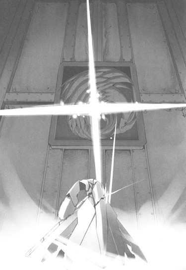

| [川原礫]アクセル・ワールド08 | |
| 川原礫 | |
| (2015) | |
|
アクセル・ワールド８ ─運命の連星─
川原 礫
|
底本データ
一頁17行 一行42文字 段組１段
「二重山括弧」は「山括弧」に置換え注略。
「＞」は全角縦中横注略。
外字「Ⅰ」「Ⅱ」「①」「②」「③」使用。
アクセル・ワールド８
─運命の連星─
「着装......〈ザ・ディスティニー〉」
〈ＩＳＳキット〉に侵された〈シアン・パイル〉ことタクムへ、自分の思いを伝えるべく対戦を挑んだハルユキ。しかし、破格の力を得たタクムの前に、為す術もなく倒れる。
体力ゲージが残り数ドットとなったハルユキだが、謎の山吹色のアバターの誘いを起点に、〈加速世界〉最強の強化外装をジェネレートする。
「......それが、〈災禍の鎧〉本来の姿かい？」
光の力を得た〈クロウ〉と、闇の力に染まった〈パイル〉、二人の心意が強く共鳴し合い、そして、激突した。
それぞれの想いが絡み合い、ひとつの大きな物語へと収束したその先にあるものは──！
川原 礫
上の四コマを描くのに、超ひさびさに時間単位のデットライン締め切りを経験しました。緊張で吐き気はするわぽんぽん痛くなるわで大変でした。次はもっと余裕を持って描こう......と確か前回のときも思ったような......
イラスト：ＨＩＭＡ
10月３日生まれ。挿絵は今シリーズが初のイラストレーター。『電撃萌王』小冊子への寄稿を見た文庫編集者が、今回の挿絵依頼をオファーしたことがきっかけ。本業仕事の合間を縫って、ブログやＳＮＳサイトなどでイラストを発表している。
北斗七星になぞらえた、伝説の装備群〈七星外装〉とは──？
別名〈七の神器（セブン・アークス）〉と呼ばれる、〈加速世界〉最強の強化外装のことを指す。
北斗七星の柄杓を形成するその先端の星から順に、
一番星（アルファ）〈天枢（てんすう）〉の神器、大剣〈ジ・インパルス〉。
二番星（ベータ）〈天旋（てんせん）〉の神器、錫杖〈ザ・テンペスト〉。
三番星（ガンマ）〈天幾（てんき）〉の神器、大盾〈ザ・ストライフ〉。
四番星（デルタ）〈天権（てんけん）〉の神器、形状不明〈ザ・ルミナリー〉。
五番星（イプシロン）〈玉衝（ぎょくしょう）〉の神器、直刀〈ジ・インフィニティ〉。
六番星（ゼータ）〈開陽（かいよう）〉の神器、全身鎧〈ザ・ディスティニー〉。
七番星（エータ）〈揺光（ようこう）〉の神器、形状不明〈ザ・フラクチュエーティング・ライト〉。
という構成である。
柄杓の器部分を司る一番星から四番星までは、〈帝城〉の東西南北に配置された四大ダンジョン、
新宿都庁、芝公園、東京ドーム、東京駅地下、それぞれの最深部に祀られていた。
現在、新宿都庁ダンジョンにあった大剣〈ジ・インパルス〉は青の王ブルー・ナイトが、東京駅地下ダンジョンにあった錫杖〈ザ・テンペスト〉は紫の王パープル・ソーンが、東京ドームダンジョンにあった大盾〈ザ・ストライフ〉は緑の王グリーン・グランデが、それぞれ所有している。芝公園大迷宮の〈ザ・ルミナリー〉のみ、所有者不明である。
柄杓の柄部分を司る五番星から七番星までは、〈帝城内部〉に祀られていた。
直刀〈ジ・インフィニティ〉はトリリードが、全身鎧〈ザ・ディスティニー）はその姿を変えた末シルバー・クロウが所有している。〈ザ・フラクチュエーティング・ライト〉だけは、〈帝城〉最奥部の部屋に現在も鎮座している。
アクセル・ワールド 08
運命の連星
■黒雪姫（クロユキヒメ）＝梅郷中学の副生徒会長。清楚怜悧なお嬢様。その素性は謎に包まれている。学内アバターは自作プログラムの『黒揚羽蝶』。デュエルアバターは〈黒の王〉『ブラック・ロータス』（レベル９）。
■ハルユキ＝有田春雪（アリタ・ハルユキ）。梅郷中学二年生。いじめられっ子で太り気味。ゲームは得意だが、内向的。学内アバターは『ピンクのブタ』。デュエルアバターは『シルバー・クロウ』（レベル５）。
■チユリ＝倉嶋千百合（クラシマ・チユリ）。ハルユキの幼馴染。お節介焼きな元気娘。学内アバターは『銀色の猫』。デュエルアバターは『ライム・ベル』（レベル４）。
■タクム＝黛拓武（マユズミ・タクム）。ハルユキ、チユリとは幼少期からの知り合い。剣道が得意。デュエルアバターは『シアン・パイル』（レベル５）。
■フーコ＝倉崎楓子（クラサキ・フウコ）。旧〈ネガ・ネビュラス〉に所属していたバーストリンカー。〈四元素（エレメンツ）〉の一人。とある事情により隠匿生活をおくっていたが、黒雪姫とハルユキの説得により戦線に復帰する。ハルユキに〈心意〉システムを授けた。デュエルアバターは『スカイ・レイカー』（レベル８）。
■ういうい＝四埜宮謡（シノミヤ・ウタイ）。旧〈ネガ・ネビュラス〉に所属していたバーストリンカー。〈四元素（エレメンツ）〉の一人。松乃木学園初等部四年生。高度な解呪コマンド〈浄化〉を扱えるだけでなく、遠距離攻撃も得意とする。デュエルアバターは『アーダー・メイデン』（レベル７）。
■ニューロリンカー＝脳と量子無線接続し、映像や音声など、あらゆる五感をサポートする携帯端末。
■ブレイン・バースト＝黒雪姫からハルユキに転送されたニューロリンカー内のアプリケーション。
■デュエルアバター＝ブレイン・バースト内で対戦する際に操るプレイヤーの仮想体。
■軍団＝レギオン。複数のデュエルアバターで形成される、占領エリア拡大と利権確保を目的とする集団のこと。主要なレギオンは七つあり、それぞれ〈純色の七王〉がレギオンマスターを担っている。
■通常対戦フィールド＝ブレイン・バーストのノーマルバトル（１対１格闘）を行うフィールドのこと。現実さながらのスペックを持つが、システムはあくまで一昔前の格闘ゲームレベルのもの。
■無制限中立フィールド＝レベル４以上のデュエルアバターのみが許可されるハイ・プレイヤー向けのフィールド。〈通常対戦フィールド〉とは段違いのゲームシステムが構築されており、その自由度は次世代ＶＲＭＭＯにも全くひけを取らない。
■運動命令系＝アバターを制御するために扱うシステム。通常はすべてこのシステムによってアバターは操作される。
■イメージ制御系＝自身が強く想像（イメージ）することによってアバターを操作するシステム。通常の〈運動命令系〉とはメカニズムが大きく異なり、扱えるものはごく少数。〈心意〉システムの要諦。
■心意（インカーネイト）システム＝ブレイン・バースト・プログラムのイメージ制御系に干渉し、ゲームの枠を超えた現象を引き起こす技術。〈事象の上書き（オーバーライド）〉とも言う。
■加速研究会＝謎のバーストリンカー集団。〈ブレイン・バースト〉をただの対戦ゲームとしては考えておらず、何事かを企む。〈ブラック・バイス〉、〈ラスト・ジグソー〉が所属している。
■災禍の鎧＝クロム・ディザスターと呼ばれる強化外装。装着すると、対象アバターのＨＰを吸い取る〈体力吸収（ドレイン）〉や、敵の攻撃を事前に演算・回避する〈未来予測〉など強力なアビリティが使用可能となる。しかしその使用者は、クロム・ディザスターに精神を汚染され、完全に支配される。
■ＩＳＳキット＝ＩＳモード練習（スタディ）キットの略。ＩＳモードとは〈インカーネイト・システム・モード〉のことで、このキットを使えば、どんなデュエルアバターでも〈心意システム〉が使用可能となる。使用中は、アバターのいずれかの部位に赤い〈眼〉が張り付き、〈心意〉の象徴である〈過剰光（オーバーレイ）〉が、黒いオーラとして放出される。
■〈七の神器（セブン・アークス）〉＝〈加速世界〉に７つある、最強の強化外装群のこと。内訳は、大剣〈ジ・インパルス〉、錫杖〈ザ・テンペスト〉、大盾〈ザ・ストライフ〉、形状不明〈ザ・ルミナリー〉、直刀〈ジ・インフィニティ〉、全身鎧〈ザ・ディスティニー〉、形状不明〈ザ・フラクチュエーティング・ライト〉。
１
「着装......〈ザ・ディスティニー〉」
〈焦土〉ステージの乾き切った空気を、ハルユキの口から発せられたボイスコマンドが密やかに震わせた。
遠い風鳴りも、残り数ドット幅でせわしなく点滅するＨＰゲージが放つ警告音も、一直線に接近しつつある対戦者──〈シアン・パイル〉が分厚い壁をぶち抜く衝撃音も、スイッチを切られたかのように消え去った。
焼け焦げたコンクリートに囲まれた広い部屋の中央で、高密度の静寂に包まれたハルユキは、突如、途轍もない強度の感覚信号が体内の一点で炸裂するのを感じた。
激痛。
まるで灼熱の槍に、肩甲骨と肩甲骨のあいだを深々と貫かれたかのようだ。視界が白くハレーションを起こし、脳内に無数のスパークが走る。仮想の呼吸は停止し、思考すらも無数の断片となって四散する。
「......ッ......ぐ......ああ......っ!!」
全身を弓のように仰け反らせ、掠れた絶叫を漏らしかけたハルユキは、不意に何者かの声がずっと遠く、あるいはどこよりも近くで響くのを意識した。
──無駄ダ。
──最早、我ト我が依代ヲ分カツコトナド出来ヌ。
──〈鎧〉ノ導ク〈運命〉ハ、多クノ怒リ、嘆キ、ソシテ絶望ニヨッテ不可変ニ決セラレタ。我ノ求ムルハ血ノミ。終ワリナキ殺戮ノミ。永遠ニ繰リ返ス災禍ノミ。
白く飛んだ視界に、動画フォルダを連続プレビューモードで再生したかのように、幾つかの断片的イメージが次々にフラッシュする。
いずれも、中心に映っているのは、黒ずんだ銀色の重装甲に全身を包んだ騎士型デュエルアバターだ。だが、細部のデザインが異なる。
フード型の兜の縁から無数の牙を生やしたもの。
顔全体がある種の触手のように前方に伸びているもの。
兜の下から足もとまで届く長い銀髪を垂らしているもの。
ドラゴンとしか思えない形状の頭部から紅蓮の炎を吐き散らすもの。
そして、鋭利に尖るバイザーを目深に下ろし、禍々しい大剣を振りかざすもの。
彼らが歴代の〈クロム・ディザスター〉であることをハルユキは直感的に悟った。フォルムは違えど、装甲の色と身にまとう闇のオーラ、そして狂的なまでの戦いぶりは完全に共通している。イメージの中で、騎士たちは、何かに衝き動かされるかの如く剣を振るい、爪で引き裂き、牙を突き立てる。まるで相手にもならず屠られていくデュエルアバター群の中央で、彼らは吼え、昂ぶり──そして、慟哭しているように見えた。
イメージが消えると同時に、再びあの声が響く。
──壊セ。ソシテ喰ラエ。ソレコソガオ前ノ望ミナノダ。
──喰ラッテ、奪イ、無限ニ強クナル。加速世界ノ荒野ニ、タダ一人残ルソノ時マデ。
──終焉ノ時マデ。
背筋の中央、かつて五代目ディザスターの〈ワイヤーフック〉に深々と貫かれたまさにその位置から、青白い電光のような痛みが周期的に生み出されて四肢の末端までを貫く。しかしハルユキは、歯を食いしばって声を上げまいとした。
ここで破壊の衝動に負けたら、何もかもが無駄になる。
王の責務に殉ずるため、〈親〉であり誰よりも近しい友達でもあった〈チェリー・ルーク〉を断罪したニコの悲しみ。
〈ヘルメス・コード〉で暴走しかけたハルユキを引き戻し、鎧をもう一度種子にまで還元してくれたチユリの想い。
ローカルネットの底にうずくまっていたハルユキに手を差し伸べ、希望という名の翼を与えてくれた黒雪姫の願い。
そして、鎧の片隅に宿り、長い長い時を持ち続けていた、一人の少女の祈り──。
苦痛は際限なく高まり、いつしか肉体的感覚の域すら超え、圧倒的なエネルギーの嵐となってハルユキの意識を引き裂こうとした。
〈ディザスター〉の名を呼びさえすれば楽になれる。そう解ってはいたが、残された精神力の全てを振り絞り、全身全霊で耐えた。
と、その時。白熱する世界の彼方から、遠く遠く、かすかにもう一つの声が届いた気がした。
............信じて。
............だいじょうぶ、あなたなら、きっと、できるよ......。私が、長い、長いあいだ待ち続けていたあなたなら......。
その声は間違いなく、先刻幻のように現れた山吹色の少女のものだった。ハルユキはわずかに残された思考力で小さく応じた。
────ごめんなさい。
────僕は、きみの待っていたような、特別な一人なんかじゃないんだ。山ほどの悩みや迷いを抱えて、いつも間違ってばかりで、人を信じられずに逃げてばかり、そのくせ自分独りじゃまっすぐ歩けもしない、情けないヤツなんだ。
────でも、いまの僕には、自慢できることがひとつだけあるよ。
────もういちど、人を好きになれたんだ。それも、たくさん、何人も。自分のことはまだ好きじゃないし、信じられないけど、それでもみんなのために頑張ろうって、今なら思える。ささやかだけど、あったかい場所を守るために、できることは何でもしようって、そう思えるんだ......。
燃え尽きる寸前の灯火にも似たハルユキの思念に、誰かの声が優しく答えた。
............それで、じゅうぶんだよ。
............だって、それが、それだけが、強さの証なんだから。
ぴしり、とかすかな、しかし確かに何かがひび割れるような音がハルユキの中で生まれた。
崩壊の響きではない。固い固い種子の殻が内側から弾ける音。誕生の音。
冷たい雪解け水のようにクリアな銀色が溢れ、迸り、灼熱の苦痛を押し流していった。ハルユキは両眼を大きく見開いた。
一本だけ残された右腕の指先に、滑らかに輝く追加装甲がジェネレートされていく。シルバー・クロウの装甲色よりもいっそう無垢で純粋な銀をまとった──〈鎧〉。
デザインは力強いが、しかし禍々しさはない。手の甲から手首、二の腕、肘へと、装甲は軽やかな金属音を響かせながら次々に装着されていく。頼もしい重みが加わるたび、ハルユキの中には荷重に倍する活力が満ちあふれ、体は逆に軽くなっていくようだ。
この白銀の強化外装こそが、災禍の鎧〈ザ・ディザスター〉の原初の姿であることを、ハルユキは直感的に理解した。
銘、〈ザ・ディスティニー〉。〈七の神器〉の六番星。帝城の最深部に、五番星である直刀〈ジ・インフィニティ〉と並んで安置されていた神器こそが、まさにこの鎧なのだ。
かつて、ずっとずっと昔に帝城への侵入に成功した〈誰か〉がこのディスティニーを手に入れた。しかしその後、〈何か〉が──あの山吹色の少女が言っていた〈たくさんの悲しいこと〉があって、鎧は姿を歪め、〈災禍〉となってしまった。倉崎楓子や四埜宮謡が口にした〈確認済みの四神器〉という言葉は、青の王の大剣〈ジ・インパルス〉、緑の王の大盾〈ザ・ストライフ〉、紫の王の錫杖〈ザ・テンペスト〉と、そしてもう一つ、ハルユキ自身が持つ〈ザ・ディザスター〉を指していたのだ。
〈災禍の鎧〉が秘める途轍もない性能も、そうと解れば納得できる。〈七の神器〉の一つであり、しかも七番星は未だ手つかず、五番星も実質的に封印状態であることを考えれば、掛け値なしに加速世界最強の強化外装だったのだから。
ハルユキはいま、鎧の本来の名を呼ぶことで、変質してしまう前の、いわば原形を召喚しようとしている。
もしそれに成功すれば、装着しても精神に干渉を受けることはないはずだ。同時に、難敵〈ラスト・ジグソー〉を苦もなく屠った〈未来予測機能〉もまた存在しないだろうが、この戦いにそんな力は必要ない。
〈ＩＳＳキット〉を装備したシアン・パイルに勝ちたいのではないのだ。
自分を責め続け、ついには深い絶望の淵に捕らわれようとしているタクムに、ただ伝えたい。有田春雪が、どんなに黛拓武という人間を信じ、頼り、必要としているか。
その気持ちを込めた拳を、最後の一撃を届けるために。残りほんのわずかなＨＰゲージで、あの闇のオーラを撃ち抜く力を貸してほしい。
ハルユキの願いに応えるかのように、清らかな銀色の装甲は生成を続ける。大型の肘当てがジェネレートされ、光はそのまま上腕部へと伸びる。
──しかし。
装甲が肩へと達しようとした時、不意に強烈な抵抗感が生じた。耳の奥で、猛々しい咆哮がかすかに轟く。
それが、鎧に宿る意志、すなわち〈災禍〉という名の獣の声であることをハルユキは悟った。獣は消えていない。依代となっている強化外装、〈ザ・ディスティニー〉のみが召喚されようとしていることに怒り、オブジェクトの生成を妨げようとしている。
ぎしり、と激しい軋み音を放ち、白銀の鎧はシルバー・クロウの右肩を半ば覆ったところで展開を止めた。
視界左では、システムフォントが一列、不規則に点滅している。ＹＯＵＥＱＵＩＰＰＥＤＡＮＥＮＨＡＮＣＥＤＡＲＭＡＭＥＮＴＴＨＥ......までは読み取れるが、その先ではＤやＳ、Ｔの文字が朧に浮かんでいるだけだ。
あらゆる声や痛みが遠ざかり、やがて消えた。
現実世界の自宅マンションＢ棟一階部分に相当する、〈焦土〉ステージ特有の黒く煤けた空間に、一瞬の静寂が満ちた。暗い部屋の中央で、ハルユキは新たな装甲に鎧われた右腕を持ち上げ、ぐっと拳を握りしめた。
直後、正面の壁が粉々に砕けながら崩れ、その奥から大柄なシルエットが姿を現した。
シアン・パイル──タクムがまとう闇のオーラは、いっそうその密度を増している。本来の装甲色であるライトブルーは覆い隠され、右腕の強化外装〈杭打ち機〉に宿る〈ＩＳＳキット〉の深紅の眼光だけが鮮やかに輝く。
細いスリットの奥のアイレンズも、かつての薄青色を鈍い紫色へと変じさせていた。その両眼で、タクムはじっとハルユキを見詰めた。やがて、静かな声。
「......それが、〈災禍の鎧〉本来の姿かい？」
破壊と破滅の衝動に駆られていても、持ち前の洞察力は損なわれていないようだった。ハルユキは、新たな装甲に覆われた右腕を見下ろし、頷いた。
「ああ。腕一本分しか召喚できなかったけどな......」
「それだけでも大した偉業だよ。これまで何人ものバーストリンカーを呑み込んできた〈鎧〉の力に抗ったのは、たぶん君が初めてだろうからね」
タクムの声は穏やかだったが、抑揚は薄く、エコーもどこか虚ろに響いた。
「......君は強いね、ハル。鎧の誘惑に身を任せれば、今の何倍、何十倍もの力を得られると解っていながらそれに抗えるんだから。もし鎧に寄生されたのがぼくなら、即座に完全支配されて、君やチーちゃん、マスターに牙を剥いていただろうに......」
「いいや。タク、お前なら、この〈ザ・ディスティニー〉を片腕分だけじゃなく、全身丸ごと召喚できたはずだ。オレはそう信じる」
シアン・パイルのフェイスマスクを凝視しながら、ハルユキは即座にそう言い切った。しかしタクムは、その視線と言葉から逃れようとするかのように深く俯くと、わずかに震える声で囁いた。
「............まだ解ってくれないの、ハル。ぼくは......そんなふうに言って貰える人間じゃないんだ、ってことが。上辺ばかり取り繕って......その実、心の中じゃ、いつだって誰かのことを妬み、憎んでる。人の幸せじゃなく、不幸を願ってる。ライバルの成績が落ちれば陰で笑い、レギュラー争いしてる奴が怪我すればいい気味だと思う。小さい頃からいつも一緒だった、大切な幼馴染二人の仲が疎遠になって......心配する振りをしながら、こっそり胸をなで下ろす。それがぼくだ。黛拓武という人間の、本当の姿なんだ！」
血を吐くような叫びとともに、光の消えたアイスリットから、白い粒子が幾つか零れ落ちた。同時に、全身からこれまで以上の黒いオーラが迸り、天井近くにまで達した。
ずん、と一歩踏み出した右足の下で、〈焦土〉ステージの焼き固められた地面が粉々にひび割れる。少しでも気を抜けば真後ろに吹き飛ばされてしまいそうな圧力が押し寄せるが、ハルユキはそれに抗い、もう一度口を開いた。
「タク、そんなの、オレだってまるで同じだよ」
わななきそうになる声を懸命に抑え、静かに、静かに語りかける。
「心の中で呪ってきた人数を比べたら、きっとお前の十倍どころじゃないぜ。だいたい、オレがいままで、お前のことを妬んだり嫉んだりしてこなかったと思ってるのか？オレが〈鎧〉の誘惑に今のところどうにか抵抗できてるのは、単に鎧と同じくらい中身が黒いからだよ」
「..................」
しばし沈黙したタクムは、吹き荒れる漆黒の嵐をほんの少しだけ収めると、小さく肩を揺らした。
「......ふ、ふふ。君のそういう言い方、小さい頃から全然変わってないね。そう......君は昔からそうやって、ちゃんと心の中の黒い部分を制御できていた。押し込め、取り繕うばかりだったぼくと違って......」
「違わない！ オレもお前と同じだ！ 迷って、悩んで、一歩進んだと思ったらまた次の壁にぶつかって......それでも、今この場所まで歩いてこられたのは、隣にお前がいてくれたからだ！だから、お前もきっと、その黒い力に抵抗できる！抗い、打ち破って、また前に進めるはずだ！そうだろ、タク!!」
ハルユキの、懸命の呼びかけに──。
タクムは、マスクの下で仄かに微笑んだ、気がした。
「......ありがとう。ありがとう、ハル。君にそう言って貰えるなら......ぼくがバーストリンカーになったこと、今まで戦ってきたことも無駄じゃなかったのかもしれないね。でもね......だからこそ、ぼくは、最後まで君のために......レギオンのために、自分の力を使いたいんだ。この......〈ＩＳＳキット〉の支配力は、圧倒的だ......。今にも溢れ出しそうなこの破壊衝動の、どこまでが自分自身のもので、どこからがキットに誘導されたものなのか......ぼくにはもう、判らないんだ............」
そう呟く声は静かだった。しかしその静けさは、内にある種の巨大な予兆を孕んでいた。
右腕の〈杭打ち機〉に貼り付き、脈動する血の色の眼球をかざして、タクムは張り詰めた声で続けた。
「......おそらくこの寄生体は、〈王〉クラスの手練れ何人かが、アビリティや必殺技、そして心意を複合させて作り上げたものだ。戦えば戦うほど......敵を喰らえば喰らうほど、強い力を生み出す。そしていずれ分裂し、〈子〉......いや、〈複製体〉を作る」
「......クローン......」
その、ブレイン・バーストの根幹である〈親子〉システムを意図的に汚すかのようなキットの性質に、ハルユキは戦慄した。タクムは腕を下ろすと、何かに耐えるような調子を強めながら再び口を開いた。
「恐ろしいのは......キットの〈複製体〉同士は、負のイマジネーションを媒質にして繋がっているということだ。同じ集団の複製体を持つバーストリンカーが、憎悪や怨念、怒りといった黒い感情をキットの中に育てると、その親や子のキットもより強い力を発揮する。つまり、複製体をばら撒けばばら撒くほどに、自分も強くなれるんだ......」
「そ......それじゃ......キットを手に入れたバーストリンカーは、競うようにして自分のクローンを広げようとする......ってことか......？」
掠れ声の問いに、タクムは深く頷いた。
「ああ......。こうしている今でも......世田谷エリアでぼくにこのキットを与えたバーストリンカー〈マゼンタ・シザー〉や、ぼくと同じく彼女の一次クローンを持つ〈ブッシュ・ウータン〉、〈オリーブ・グラブ〉たちの黒い感情が流れ込んでくるのを感じるんだ。そしてまた同時に、僕の育てた闇が彼らを強化している......」
──つまり。
〈ＩＳＳキット〉の複製体によるネットワークは、ブレイン・バーストの正規システムである〈親子〉及び〈軍団〉双方の悪意ある模倣なのだ。親子とレギオンが、原則的には愛情や仲間意識といった正の絆で結びついているとすれば、〈ＩＳＳクローンズ〉は力と勝利のみを求める負の鎖によって繋がっている。
絶句するハルユキに、ひび割れる寸前のガラスの軋みを思わせるタクムの声が届いた。
「いま......今すぐに何とかしないと、〈キット〉は恐ろしい伝染病みたいに、あっという間に加速世界を覆い尽くすだろう。四日後の七王会議やその決定を待っている余裕はない。ぼくは、おそらくキットの拡散源に限りなく近いはずの〈マゼンタ・シザー〉から首謀者の名前を聞き出し、そいつと刺し違えてでもキットの情報を手に入れるつもりだ。動機や目的は不明だけど、こんなことを企むほどの奴が、状況のコントロール手段を用意していないはずはないからね......」
ずん。
更に一歩踏み出すと、タクムはほんの二メートル先からハルユキを見下ろし、囁いた。
「あとは、君に託すよ、ハル。ぼくは、たとえ首謀者との戦いでポイントを全損しても、記憶を消される前に、解ったことを何が何でも君に伝える。だから、君がこの世界を救うんだ。君ならできる......そして、君にしかできない。ぼくはそう信じている」
「............タク」
ハルユキは、ほとんど音にならない声で、どうにか親友の名前を呼んだ。
それ以上はもう、いかなる言葉も発することはできなかった。
────覚悟。
いま、タクムがＩＳＳキットの恐るべき支配力に、ぎりぎりのところで抗い続けられているのはひとえにこの巌の如き覚悟あってのことだろう。彼はもう決したのだ。自らの死に場所を。己の最後の戦いを。
────でも。
その覚悟の根源にあるのは、自分への絶望なのだ。ＩＳＳキットの誘惑に負けてしまったこと。怒りのままにＰＫ集団〈スーパーノヴァ・レムナント〉を虐殺したこと。〈バックドア・プログラム〉をチユリに仕掛け、黒雪姫を襲ったこと。そして──ずっと昔に、幼馴染三人の輪を壊したこと。
タクムは、それらが決して許されない罪だと思い定めている。その絶望を覚悟に変え、最後の戦いに赴こうとしている。
「............行かせ、られない」
嗚咽を堪える子供のように震える声で、ハルユキは言った。
「〈解った、あとは任せろ〉なんて、絶対オレには言えない。お前ひとりを犠牲にして、その後もバーストリンカーで居続けるなんてこと、オレにはできない」
「......ふふ......。どこまでも、頑固なヤツだね......」
本心から嬉しそうに微笑み、タクムは言った。
「ぼくは、君のそんな言葉が聞きたくて、無理矢理に直結対戦したんだろうな......。でも、もう充分だよ。ありがとう、ハル。君のその気持ちをエネルギーに、あと少しはぼくのままでいられそうだ。──さあ、そろそろ、終わりにしよう」
逞しい左拳を持ち上げ、小指から順に握り締める。凝縮された闇のオーラが、ステージ全体を微震動させる。
対峙するハルユキもまた、呼応するように白銀の強化外装をまとった右拳を強く握った。顔を上げ、ゆっくりと頷く。
「......ああ。もう、お互い、口で言えることは全部言ったもんな」
そう。
詰まるところ、拳と拳を打ち合わさねば何も始まらないし、終わらないのだ。二人はそうするためにこの対戦ステージにダイブしたのだし、〈ブレイン・バースト〉もまたそのためだけに存在するのだから。
左腕左翼を失ったデュエルアバターの全身から、ハルユキはありったけの意志力をかき集め、右拳に集中させた。銀色の過剰光が、荒れ狂う闇の波動を切り裂き、押し戻す。
どうにか片腕分だけ召喚に成功した〈七の神器〉の六番星〈ザ・ディスティニー〉だが、絶対的な性能では〈災禍の鎧〉には及ばないはずだ。長い年月の間に蓄積された膨大な戦闘データも、歴代の装着者たちが刻み込んだ怒りと憎しみの心意も持たないのだから。
でも、ディスティニーの中には、たった一つだけディザスターにはないものがある。
それは〈希望〉だ。鎧の片隅に宿るあの不思議な山吹色の少女型アバターが、長い長い年月守り続けてきた、星のように煌めく一つの希望。彼女が誰で、なぜ鎧に意識を宿し、何を願っているのかはまだ解らないが、しかしその仄かな温かさがハルユキを勇気づける。ディザスターのように闘争へと駆り立てるのではなく、背中を支え、励ましてくれる。
......思えば、僕は、いつだって誰かに支えられてばっかりだった。
いちばん最初の〈病院の決闘〉の時も、その次の五代目クロム・ディザスターとの戦いも、ダスク・テイカーとの決戦も、ヘルメス・コード縦走レースの時も、四神スザクの守る門でも......いつも黒雪姫先輩や、チユや、レイカー師匠、アッシュさん、ニコ、パドさん、メイさん、それにもちろんタクに守られ、励まされてきた。自分ひとりだけの力で勝った戦いなんて、たぶん一つもないだろう。
でも、それでいいんだ。
なぜなら、その繋がり......絆こそが、バーストリンカーの本当の力なんだから。
僕はそれをタクにも伝えたい。僕以外にも、お前のことを思い、必要としている人が沢山いるんだってことを解って欲しい。
──そのために、力を貸してください。
胸中の呼びかけに、答える声は聞こえなかった。しかし、とくん、と確かな熱が拳の中央に生まれ、それはいっそう眩い白光となって迸った。
タクムがゆっくり左拳を引き、腰だめに構えた。
ハルユキも右拳を引き絞り、五指を鋭く伸ばした。
同時に行われた技名発生は、まるで互いをいたわるかのように、どこまでも穏やかに響いた。
「〈ダーク・ブロウ〉」
「〈レーザー・ソード〉」
漆黒と白銀の軌跡が交錯した瞬間──。すでに崩壊したマンションＡ棟に続き、二人が対峙するＢ棟までもが、無数のオブジェクト塊となって放射状に飛散した。
数分前に同じ心意技──〈ダーク・ブロウ〉を受けた時は、ハルユキはその巨大な衝撃力に一秒と耐えられず、真後ろに数十メートル以上も吹き飛ばされた。いっそ、その場でばらばらに砕かれなかったのが不思議なほどだった。
しかし今回、ハルユキは、最初こそ押し込まれたもののそこで踏みとどまり、わずかにせよタクムの拳を押し返した。十センチ程度離れて拮抗する二人の手の中間点では、二色のオーラがスパークを散らして激しくせめぎ合う。
恐るべきは神器〈ザ・ディスティニー〉の加護だ。防御性能だけを比べれば、ポテンシャルをかなり攻撃面に移動させている〈ディザスター〉以上かもしれない。だが、このまませめぎ合っているだけでは駄目なのだ。荒れ狂う闇の嵐を光で貫き、タクムに伝えなくてはならない。彼には許されない罪などひとつもないのだと。レギオンの全員が彼を必要としているのだと。そして──どんな闇夜の底にいても、空を見上げれば、そこにはいつだって道を照らす星の光があるのだということを。
────届け。
──届け!!
ハルユキの、全身全霊を込めた祈り、すなわち心意に。
りぃん、という鈴鳴りのような響きが呼応した。
右腕を覆う白銀の追加装甲全体に、清らかな過剰光が広がっていく。それと同時に、五指を伸ばした右手の先端から、光の剣が少しずつ、少しずつ伸び始める。
ハルユキの〈光線剣〉は、〈射程拡張〉に属する心意技だ。力の源となっているのは、ここではない場所に手を伸ばしたい、という願望──。
それはつまり、逃げたいということだと、ハルユキは長い間思っていた。醜く、おどおどしてばかりの自分から逃げたい。そんな自分を苛める奴らから逃げたい。面倒そうに向けてくる母親の視線から逃げたい。自分をいらないと言った父親の記憶から逃げたい。逃げて逃げて、自分のいない場所へと手を伸ばす......。
でも、〈自分のいない場所〉なんて存在するはずがない。
どこに行こうと、そこに自分はいる。伸ばした手は、必ず自分自身に繋がっている。
手を伸ばすということは、つまり自分と対象を結びつけるという、能動的行為なのだ。
──だから、この銀色の光は、きっとタクと僕を繋いでくれる。気持ちを、心を届けてくれる。ブレイン・バースト・システムがデジタルに行う防御力や攻撃力の演算を上書きして、ささやかな奇跡を起こしてくれる。
────とど、け............！
ハルユキの心の叫びが、強いエコーを伴いながらフィールド中に響き渡った。
清らかに輝く銀の光が、超高密度の闇を溶かし、貫いて、少しずつ、少しずつ進んでいく。
それはもう剣ではなかった。シルバー・クロウの右腕から伸びる、ハルユキ自身の生身の腕だった。
────タク!!
────僕には、お前が、必要なんだ............!!
懸命に伸ばす手の先、暗い闇の彼方に、ふと何かが見えた。
それは、同じく何の装甲も持たない、白い左手。逞しい指に、毎日の素振りで硬いタコを作った、タクムの手。
固く縮こまっていた指が、ぴくりと震える。おずおずと開きかけ、また戻り、もういちど緩む。指先が、躊躇いがちに伸ばされ、ハルユキの手へ近づこうと──......。
その時。
二人の間で、暗い血の色の光が、無数の針のように鋭く炸裂した。
「............ッ!?」
イマジネーション回路の導く幻視から、再び対戦フィールドへと引き戻されたハルユキが見たのは、思いがけない光景だった。
シアン・パイルの胸前に構えられた右腕、〈杭打ち機〉の表面に寄生する眼球状の〈ＩＳＳキット〉が、零れんばかりに〈眼〉を見開き、鮮血にも似た光を濃く振り撒いている。
眼球の周囲から、血管の如く伸びる黒い組織が、十センチほど離れた場所に集まり、丸い瘤を作り出す。
瘤は、たちまち隣の眼球と同じサイズへと成長する。黒い組織表面が、ぴしっと横に割れる。それがゆっくり上下に開いていくさまは、瞼以外の何物でもない。奥から現れたのは、もう一つの眼球──。
横に構えられた右腕の表面で、左右に並んだ二つの〈ＩＳＳキット〉の眼が、至近距離からハルユキを見据えた。その奥に、確かに何者かの意志をハルユキは感じた。底無しの飢餓感。破壊の衝動。増殖への渇望。そして──憎悪。
「な......な、ぜ............！」
叫んだのは、左拳でハルユキと心意をせめぎ合わせ続けているタクムだった。恐らくこれは、彼自身にも予想外の現象なのだ。
「ぼくは、コマンドを与えていない......！ なのに、なぜ〈複製体〉が......!?」
その言葉の意味を、ハルユキが理解したのと──二つ目の眼球の周囲から、黒く細い触手が十本以上も伸び、シルバー・クロウの胸に突き刺さったのはほぼ同時だった。
冷たい。
いや、熱い。
異質な感覚信号が、全身の神経系を駆け巡る。まるで、あらゆる血管に鋭い針で氷水を流し込まれたかのようだ。微細なワイヤーにも似た毛細管群が、体の奥へ奥へと潜り込んでくる。心臓を取り巻き、肺に絡みつき、脊椎を登って、頭の中にまで──。
ハルユキは動けなかった。声も出せなかった。
アバターの胸は十数本の触手に深々と貫かれているのに、残り数パーセントしかないＨＰゲージは一ドットたりとも減っていない。だがそのこと自体が、現象の異様さを表している。右腕から迸っていた銀色の過剰光が、不規則に揺れ、明滅する。伸張しかけていた〈光線剣〉も淡雪のごとく溶け崩れる。
本来ならば、この瞬間に二人の心意の均衡が崩れ、シアン・パイルの〈ダーク・ブロウ〉がシルバー・クロウを跡形もなく吹き飛ばしていたはずだった。
しかし、そうはならなかった。なぜなら、ハルユキの心意が揺らぐと同時に、タクムもまた左手を引き戻し絶叫したからだ。
「ハルに......手を出すなあああァァァァッ!!」
闇のオーラに包まれたままの左手が、自分の右腕から放たれハルユキの胸に突き刺さる黒いワイヤーの束を鷲掴みにした。体ごと捻るようにして、思い切り引っ張る。しかしワイヤーはある種の生物の如く身震いし、抜き出されまいと抗う。
全身が麻痺し、動けないハルユキと、左手で激しく黒い触手を引き続けるタクムの眼が合った。
タクムが、薄く微笑んだ──気がした。その笑みには、この対戦で彼が何度か見せたような、深い諦めに彩られた虚ろさはなかった。同じレギオンで肩を並べて戦ってきた日々の間に、隣を見れば常にそこにあった、頼もしく、温かい笑みだった。
シアン・パイルの右腕が動き、強化外装の砲口を、自分の喉元に押し当てた。
「......た、タク......！」
喉の奥から、ハルユキが懸命にそのひと言を絞り出したのと──。
タクムが、毅然と技名をコールしたのはまったく同時だった。
「〈ライトニング・シアン・スパイク〉!!」
密着する砲口と、分厚い装甲の隙間から、青白い光が激しく迸った。直後、シアン・パイルのうなじ部分から、焦土ステージの空に向けて、一条の雷光が高く高く立ち上った。
自身の必殺技でアバターの急所を撃ち抜いたタクムは、よろりと後ろに傾き、倒れる寸前で踏みとどまった。まだ四割近くを残していたＨＰゲージが全て真っ赤に染まり、右側から急激に減少して──ゼロへと達した。
ハルユキの体に深く潜り込み、今にも頭の中央にまで届きそうになっていた黒いワイヤーの動きが止まる。力なく垂れ下がり、胸からずるずると抜けて、そのまま空気に溶けるように消滅していく。
シアン・パイルの右腕に生み出された〈二つ目の眼球〉もまた、どこか口惜しそうにその瞼を閉じ、一つ目の眼球に吸収されるように消えた。
呆然と立ち尽くすハルユキの聴覚に、タクムの、密やかな囁きがそっと触れた。
「............よかった............」
そのひと言を残し──。
黒いオーラを完全に失ったシアン・パイルは、青い巨体をガラス片へと変えて四散させた。
激しく焼け焦げ、巨大なクレーター状になった焦土ステージの中央に、ハルユキは一人残された。右腕から、白銀の強化外装が解けるように取り除かれていく。
視界中央に表示された、〈ＹＯＵ ＷＩＮ！〉の炎文字から逃れるように、ハルユキは夕闇深まるステージの空を見上げた。
名前の付けられない感情の渦が胸を満たし、両眼から溢れて、空の赤紫色を滲ませた。対戦が終了し、加速世界から離脱するその瞬間まで、ハルユキはただ密やかにアバターの両肩を震わせ続けていた。
現実世界に復帰し、瞼を開けたその瞬間、ハルユキは自分の右頬に一粒の水滴が弾けるのを感じた。
それは、直結対戦が開始される寸前にタクムが零した涙だった。
ほぼ同時にバーストアウトしたタクムは、左手でベッドに横たわるハルユキの右肩を押さえ、右手で直結ケーブルを掴んだ格好のまま、大きく両眼を見開いていた。眼鏡の向こうで、新たな雫が生まれ、レンズにぽた、ぽたと落ちる。ハルユキの真上で、唇が小さく震え、掠れた声が漏れる。
「............ぼくは............」
しかし、それ以上何を言うこともなく、タクムはゆっくりと体を倒すと、ハルユキの左側にどさりと転がった。
二人はしばらく無言のまま、ワイドシングルサイズのベッドに斜めに並んで横たわり続けた。
視線の先──タクムの部屋の天井には、薄いポリフィルムにプリントしたＡ２サイズのポスターが貼ってあった。
写っているのは大人の剣道選手だ。文字類が一切入っていないところを見ると、自分で探した写真をプリントしたものだろう。斜め正面から、今まさに上段からの面打ちを放とうとしている構図で、竹刀の先端が鋭くぶれている。ただの２Ｄ写真なのに、見ているだけでじわりと体が熱くなるほどの迫力がある。
二人のニューロリンカーを繋いだままの直結ケーブル越しに、ハルユキはぽつりと思念で訊ねた。
『あの選手は、お前の先生か、先輩？』
するとしばらくして、静かな答えが返った。
『違うよ。あの人が現役だったのは五十年も昔さ』
『てことは......目標にしてる人とか？』
『......と言うより......尊敬、かな。目標なんていうのもおこがましいよ。何たって、一九九〇年代に、全日本剣道選手権大会で六回も優勝したんだ。その記録は、五十年経つ今でも破られてない』
『ちなみに......二位の記録は？』
『三回。それでもたいへんな偉業だけどね』
であるならばつまり、写真の選手は、現実世界に於ける日本──いや世界最強の剣士ということなのだろう。そう思った瞬間、ハルユキは呟いていた。
『そんなに強いって、どういう感じなんだろうな......。迷ったり悩んだりとか、もうぜんぜんないのかな......』
『......彼は、現役を引退して指導者になったあとのインタビューで、こう言ったそうだよ。〈まだ何もつかめていない。真っ暗なトンネルの入り口でうろうろしている状態だ〉って』
『............ははぁ............そっか............』
思わずため息をついてから、ハルユキは尚も、思考の赴くがままに発言した。
『......でもさ、真っ暗なら、そこが入り口かどうか判んないよな。もしかしたら、すぐ先が出口かもしれないじゃん』
一瞬思念を切り、すぐ続ける。
『そんな人と引き比べちゃ、おこがましいなんてレベルじゃないけどさ......オレも......オレも今まで何度も、出口のないトンネルの中にいるって思って......でも、出口はあったよ。必ずあった......またすぐ次のトンネルが来るけど......それでもさ............』
懸命に言葉を探しながら、ハルユキは顔を左に向け、八十センチ先にあるタクムの横顔を見た。白い頬を横切る眼鏡のつるの向こうで、いまだ小さな水滴を滲ませる瞳が、一心に天井のポスターを見詰めていた。
意を決し、ハルユキは、核心的なひと言を肉声で口にした。
「──タク、お前さっき、オレのために心意技を......〈ダーク・ブロウ〉を止めてくれただろ。オレを助けるために、〈ＩＳＳキット〉に抵抗して、自分に必殺技を撃っただろ。あの行動がお前の本質だって、オレはそう信じる。一度は〈キット〉を受け入れ、闇の力を揮ったとしても......その誘惑を断ち切って、トンネルを抜けられるって、オレはそう信じてる」
この会話が終わった時、タクムが立ち上がり、別れを告げて部屋を出ていく──〈マゼンタ・シザー〉と、そして〈加速研究会〉と戦うために──のではないかという怖れゆえに今まで言えなかった言葉だった。
ハルユキが口をつぐんでも、タクムは天井を見上げたまま、しばらく何も言わなかった。
十秒ほども経ってから、これも肉声で発せられたのは、思いがけない問いかけだった。
「ハル。......昨日、音楽の授業の独唱発表で、君は『翼をください』を歌ったよね」
「......あ、ああ」
途惑いつつ頷くと、タクムはちらりと視線を向け、仄かに微笑みながら続けた。
「課題曲は他にも色々あったのに、どうしてだい？君、昔、あの歌が嫌いだっただろ？」
「............ああ......そうだったな......」
胸を塞ぐ巨大な懸念が少しばかり遠ざかり、ハルユキも軽く苦笑した。
「......まあ、嫌いだったのも明確な理由があるわけじゃないんだけどさ......何て言うか、あの歌って、〈叶わないこと〉が前提だって昔は思ってたんだ」
「............」
無言で続きを促すタクムを横目で見ながら、口を動かす。
「オレがひがみっぽいからかもだけどさ......一番最初の、『いま私の願いごとが叶うならば翼が欲しい』って歌詞の前に、『叶わないって解ってるけど』って一文が入ってるような気が......ずっとしてたんだよな。それって、余りにもオレのリアルな心情すぎてさ......どうしても、好きになれなかったんだ、あの歌」
視線を天井に戻し、右手をそっと持ち上げる。指先で、壁紙とコンクリートの先にあるはずの空を撫でる。
「でもさ......先週もらった課題ファイルに入ってた参考音源で、改めて聞いてみた時に、そうじゃないのかも......って思えてさ。ええと......えーっと......」
自分の心理状態を口で説明するのは、ハルユキが最も苦手とするところだ。しかし、上に向けた右手を鳥のように動かしながら、ハルユキは懸命に口を動かした。
「......あの歌って、叶うとか叶わないは、もしかしたらあんまり重要じゃないんだ。『悲しみのない自由な空へ』いつか行きたい......そう思いながら、ずっと、一歩ずつ地面を歩いていくんだっていう、そういう歌なのかもなって思って......つまり......その......大事なのは......」
そこでついに言語処理能力が限界に達し、口を開閉させるだけになってしまったハルユキの代わりに、タクムがそっと呟いた。
「〈結果〉じゃなくて〈過程〉......継続する過程の中にこそ、大切なものが......」
「そ、そう。そうなんだ」
掲げたままの右手をきゅっと握り、ハルユキは勢い込んで言った。
「黒雪姫先輩がさ、ずっと前にオレに言ったんだ。〈強さ〉は、結果としての勝利だけを指す言葉じゃないって。それに、四埜宮さんも言ってた。負けて、転んで、失敗しても、諦めずに前に進むことが本当の強さだって......。あの歌が言いたいことも、もしかしたらそういうことじゃないのかって思ったら......今までずっと嫌ってのが、ちょっとだけ申し訳なく思えてさ......まあ、単純に、加速世界で飛べるようになったからあの歌も許せるようになった、ってだけかもしれないけど......」
ぱたりと腕を下ろし、頭の後ろに差し込みながら、ハルユキは苦笑まじりに付け加えた。
「どっちにしろ、歌はひどいモンだったけどな。学校内が無断録音禁止でほんとよかったよ」
「そんなことなかったよ、ハル」
その言葉に眼を向けると、タクムは天井を見ながら微笑んでいた。そっと瞼を閉じ、昨日の授業を思い出すように呟く。
「──君は気づかなかっただろうけど、チーちゃん、こっそり泣いてたよ。君が一生懸命歌う『翼をください』を聞きながら」
「え............」
思わず言葉を失うが、タクムは微笑を消さぬまま、穏やかに言葉を繋げた。
「少し前のぼくなら、あのチーちゃんを見た瞬間に、きっと嫉妬と自己嫌悪でどうしようもなくなってただろうな......。でも......でもね、ぼくも、その時嬉しかったんだ。あの歌を常々と歌うハルと、それを聞いて涙ぐむチーちゃんを見て、嬉しかった。あの瞬間......あの瞬間だけは、ぼくら三人の輪が......もういちど、昔みたいに............」
不意に語尾が震え、きつく閉じられた瞼の下から、再び透明な雫がすうっと流れた。
胸を衝かれ、一瞬歯を食いしばる。しかしハルユキはすぐに体ごと左に向き直り、肘で上体を持ち上げながら言った。
「〈昔みたい〉じゃない。〈いま〉だ。それがいまのオレたちなんだ。タク、オレとチユには、いまお前が必要なんだ！」
タクムは一瞬、その言葉から逃れようとするかの如く顔を左に背けた。
しかしハルユキには、自分の言葉が親友の心に届いたという確信があった。加速世界で思い切りぶつけ合った、拳と拳を通して──。
数秒後。
体を右に向け直したタクムは、濡れた両眼でハルユキを見て、わななく声で囁いた。
「......ハル。ぼくも......ぼくも、君みたいに、変われるかな。心の中の黒い感情と戦いながら......〈空〉を目指して、歩き続けられるかな......」
「あ......当たり前だろ、タク！ お前だって変わり続けてる。さっきの対戦で、最後に自分に撃った〈ライトニング・シアン・スパイク〉がそれを証明してる」
ハルユキは、タクムに向かってにじり寄ると、右手で左肩を掴んだ。涙で濡れた青い眼鏡の奥をじっと見詰め──。
「タク、オレにもう少しだけ時間をくれ。明日の木曜日......夜七時からの脱出作戦で、オレは絶対、四埜宮さんと一緒に帝城から生還してみせる。あの人なら、お前の〈ＩＳＳキット〉も浄化できるはずだ。あと一日......一日だけ、キットの誘惑に耐えてくれ、タク」
「............」
ハルユキの懸命の説得に、タクムはすぐには答えなかった。
眼を伏せ、やがて張り詰めた声を絞り出す。
「............昨日の夜、ぼくは世田谷エリアで〈マゼンタ・シザー〉からキットを受け取った。その時点では、キットはまだ〈封印カード〉状態だった。なのに......帰宅して、食事や入浴を済ませて、このベッドで眠りかけた時......あれは、ぼくに語りかけてきたんだ。言葉じゃなく......感情で。怒りや憎しみや妬み、その他ありとあらゆるネガティブな感情を、ぼくに流し込んできた。しかも、ぼくはその時、ニューロリンカーを外していたんだよ。──ぼくは一晩中、長い、長い悪夢を見て......起きた時には、胸の中は黒いものでいっぱいだった......」
タクムの逞しい体がぶるりと震えるのをハルユキは掌越しに感じた。いっそう顔を俯けた親友は、まるで小学生の頃に戻ってしまったかのように心細そうに囁いた。
「............ハル。ぼくは怖いよ......あれはもう、ニューロリンカーのメモリ領域じゃなくて、ぼくの頭の中にいるんだ。......今日の夜、封印を解かれたあれがぼくに何を見せるのか......明日まで、ぼくはいまのぼくでいられるのか......それが怖くてたまらない......。ぼくは、すでにさっきの対戦で、君をひどく傷つけることをまるで躊躇わなかったのに............」
──ニューロリンカーを装着していないのに、加速世界からの干渉を受ける。
原理的に有り得ないことだ。しかしそれは、実はハルユキにも身に覚えのある現象だった。ハルユキ自身もかつて何度か、非加速状態やニューロリンカー非装着状態で、〈災禍の鎧〉の声を聞いている。
しかし、考えてみれば、ブレイン・バースト・プログラムが当たり前のように実現している〈思考加速〉そのものが途轍もない超現象なのだ。それだけではない。ハルユキは二ヶ月前、ブレイン・バーストを失ったバーストリンカーが、記憶をも操作・消去される実例を目の当たりにした。
つまりあのプログラムは、人間の意識──魂そのものに干渉する力を持っているのだ。ならばもう、何が起きても不思議はない。受け入れ、戦う。できることはそれだけだ。
小刻みに身を震わせるタクムの左肩をいっそう強く掴み、ハルユキは言った。
「なら、タク、お前今日ウチに泊まりに来い」
「............え？」
さすがに予想外だったのだろう、唖然とした表情を作るタクムに向けて高速でまくし立てる。
「昔みたいに、ゲームやりながら雑魚寝しちゃえば怖い夢なんか見るヒマないだろ。でも、二人じゃ雑魚寝とは言わないか。そんなら、チユのやつも呼ぼうぜ。三人で宿題やるとか言えば親も許してくれるさ。っつーか、実際に数学と国語の宿題出てたっけ。じゃあ、お前が数学を片付けて、チユが国語やって、オレはお茶汲みと。知ってるか？初期加速空間で宿題ファイル開くと、あのケチくさいプロテクトが無効化されて、答えコピペできるんだぜ！」
がーっ！ と言い募るハルユキを、タクムは両眼を丸くして眺めていたが──。
やがてその口許に、しばらくぶりに見る、しょうがないなあと言いたげな苦笑が浮かんだ。
「......昔もよく、そうやってハルの勢いに乗せられるままに色々させられては、大人に怒られるハメになったよね」
「そうだったっけ？ 憶えてないなあ」
ずっと掴んでいた肩から離した右手で、わざとらしく頭を掻く。再び浮かべた苦笑いを徐々に純粋な微笑へと変えたタクムは、眼鏡を外し、ぐいっと一度目許を拭ってから言った。
「仕方ないなあ......宿題で疲れて、明日の帝城脱出作戦に響いちゃいけないからね。手伝いに行ってあげるよ。でも、答えをコピペするためだけに一ポイント使って加速するなんて、先輩バーストリンカーとしては許可できないよ。考え方は教えてあげるから、計算は自分でするんだぞ」
「ええー......」
唇を尖らせつつも、ハルユキは何度も眼を瞬かせて、滲みそうになるものを追い払った。
タクムに宿る〈ＩＳＳキット〉はまだ消えていない。こうしている今も虎視眈々と、再度の機を窺っているはずだ。ハルユキに宿る〈災禍の鎧〉がそうであるように。
だがハルユキは、たった一度、たった腕一本だけにせよ、鎧の支配力を撥ね除けオリジナルたる〈ザ・ディスティニー〉を召喚できた。ならばタクムにもできるはずだ。あと二十四時間、〈浄化の巫女〉アーダー・メイデンが帝城内から生還するまで、キットの誘惑に抗い続けることが。なぜなら、彼はこうして、絶望の淵からもう一度立ち上がり、歩きだそうとしているのだから......。
「──よし、そうと決まれば、このままオレんち行こうぜ！ついでに下のモールで食料仕入れていこう。いや待て、チユを呼べればボーナスアイテムが付いてくるかな......」
考え込むハルユキの胸を、タクムが笑いながら軽く突いた。
「君が本当に呼びたいのは、チーちゃんじゃなくてチーちゃんのママさんが作ってくれる料理だよね」
「い、いやそりゃ、その二者は不可分のものであってだな......チユと言えば差し入れ、差し入れと言えばチユ......」
「あーあ、チーちゃんに言ーっちゃお、今の台詞」
「う、嘘うそ！ そ、そんじゃオレあいつにメールするから、お前は小母さんの許可取れよ」
己の不適切な台詞を誤魔化しつつ、ハルユキはベッドから立ち上がった。
何気なく、自分のニューロリンカーに挿入されたままのＸＳＢケーブルを引き抜こうとした、その時──。
頭の奥深くで、ごく密やかな思考音声が、水面に落ちる一滴の雨つぶのようにそっと響いた。
『......ありがとう、ハル。まだ、君と友達でいられて......本当によかった』
親友に背中を向けたまま、その言葉を強く噛み締めたハルユキは、同じくささやかな思念をひと言だけ返した。
『オレもだ、タク』
２
突発的に思い立った三人でのお泊まり会をいざ実行するにあたっては、やはり幾つかのハードルが存在した。
決してハルユキにいい感情を持っていないはずのタクムの親の許可を得ること。
幼馴染とはいえ今年で十四歳になるチユリを有田家に泊めることの是非。
そしてもちろん、ハルユキの母親の意向。
意外にも、もっとも簡単に片付いた案件は三番目だった。ハルユキが、まだ仕事中のはずの母親におそるおそる出した『今夜、友達二人を泊めていいか』という趣旨のテキストメールに返ってきたのは、『散らかしたらきちんと片付けておくこと。お母さんは今夜は帰らないので諸々よろしく』という一文だった。
帰らないというのが前々からの予定だったのか、そういうことなら便乗して夜遊びしようという作戦なのか、それとも息子の友達が泊まるなら家を明け渡してやろうという親心なのかは定かでなかったが、母親が帰らないというなら一晩中リビングを使える。
次にクリアされたのは、一番目のハードルであるタクムの親の許可だった。やはり『宿題をする』という一文がそれなりの効力を発揮したらしい。
問題は二番目──チユリ本人及びご両親がどう判断するかだ、と思いつつタクムとハルユキはマンション二十階の連絡橋を渡り、Ｂ棟二一〇八号室の倉嶋家のチャイムを鳴らした──のだが。
「あらあらまあハルちゃん、それにタッちゃんも！久しぶりねえ、まあータッちゃん大きくなっちゃって！いま何センチあるの......わぁ百七十五ぉ!?もううちのヒトより高いのねえ、今時の子はすごいわぁー！それで、何でも三人で難しい宿題をするんですって？そうよねえ、今年は初めて三人とも同じクラスになったんだものねえ。タッちゃんが梅郷中に転校してきたって聞いて、おばさん嬉しかったのよぉー。でもこれでチユもいよいよ悩ましいわよねえ、いっそのことハルちゃんとタッちゃん、二人ともウチにおムコに......」
久々に聞くチユリママお得意のエンドレストークを、ハルユキとタクムは呆然と拝聴し続けた。しかしそこで当の一人娘がキッチン方面から顔を出し、烈火の如き表情で叫んだ。
「ママ！ 余計なこと言わなくていいの！ お鍋吹いてるよ？」
「あらやだ、いっけない！ 止めて！ いえ止めないで、弱火にしてヨワビー！」
ぱたぱたーっとキッチンにダッシュしていくチユリママと入れ替わりに、廊下を大またに前進してきたチユリは、上がり框から二人をじろりと睥睨して言った。
「......その顔は、〈これからやらかす〉んじゃなくて、〈もうやらかしちゃった〉顔ね」
さすがの慧眼だ。まさしく一戦やらかしてきたばかりの男二人としては、へへぇと首を縮めるしかない。
ハルユキがここに来る前にチユリに送ったメールには、『今日うちで、タクと三人で合宿しませんか』としか書いていなかったのだが、それだけではないことは速攻で看破されているのだろう。部活帰りでシャワーを浴びたばかりらしいチユリは、生乾きの髪に無地のＴシャツとハーフパンツという格好で両の腰に手を当て、しばし二人を睨んだ。
が、やがて小さく鼻を鳴らして「ま、いいわ。付き合ったげる」とあっさり言う。ハルユキは思わず、間抜けな確認をしてしまった。
「え......い、いいの？」
「あのねえ、誘ったのはそっちでしょ！」
再びまなじりを吊り上げかけるチユリに、タクム共々慌てて低頭。
二十分後、チユリママが持たせてくれた三人ぶんの夕食入りバスケットと共に、ハルユキたちは有田家へ移動した。モノが少なく、がらんと広い３ＬＤＫは、夕方に独り帰宅すると寒々しさを感じずにはいられないが、幼馴染二人と一緒ならそんなことを考えているヒマもない。まず自室にバッグを置き、楽な格好に着替えたハルユキは、リビングに行く前にメーラーを起動した。
タクム──シアン・パイルが、ＰＫ集団〈スーパーノヴァ・レムナント〉に襲撃され、無制限フィールドで返り討ちにした話は、ハルユキにそれを伝えた倉崎楓子、四埜宮謡のみならず、もう黒雪姫も知るところとなっているだろう。きっと深く心配しているはずの彼女たちにも状況を伝えなくてはならないが、ＩＳＳキットと、タクムとハルユキが戦った件については、メールではとても詳細を説明し切れない。
そこでハルユキは、【タクムは大丈夫です。詳しいことは、明日の帝城脱出作戦の時に説明します】とだけ書いて送信した。三人からはすぐに了解の返信があり、その簡潔な文面に、ハルユキは彼女たちの気遣いを強く感じた。
黒雪姫や楓子、謡も、何か容易ならざることが──とても〈大丈夫〉のひと言では片付けられない事態が起きたのだ、ということはとっくに察知しているはずだ。しかし三人の返事には、いかなる質問も存在しなかった。つまり黒雪姫たちは、ハルユキとタクムの判断に全てを委ねるという意志を言外に伝えているのだ。
しかしそれは同時に、今後何か取り返しのつかないことが起きたら、その時は全てハルユキたちの責任だということでもある。
あと二十四時間。ことに今夜一晩の間に、タクムが再びＩＳＳキットの干渉で自分を見失ってしまわないよう、二人──いやチユリを含めた三人で耐え凌がねばならない。できるはずだ。ずっと小さい頃から、この三人で、数限りない冒険を繰り広げてきたのだから......。
そこまで考えた時、ハルユキはふとあることに気付き、ぴくりと手を止めた。
今夜の突発的お泊まり会にチユリを呼んだのは言わば勢いで、具体的な意図があったわけではない。それこそ〈三人ならなんとかなる〉という思い込みめいた期待ゆえのことだ。
しかし──。チユリの持つ、ある〈力〉。それを使えば、もしかしたら、タクムを苦しめる寄生体をシステム的に除去できるのではないだろうか？状況がイレギュラーすぎて可能性の目算すらできないが、でも、試してみる価値はある。
「先輩、師匠、メイさん......」
ハルユキは、この場にいない三人の仲間たちに、そっと呼びかけた。
「きっと、きっと何とかしてみせます。タクとチユは......僕の、最高の親友ですから」
大またに自室を出ると、ハルユキはいい匂いの漂ってくるリビングのドアを勢いよく開けた。
チユリママがわずか三十分少々で用意してくれたのは、夏野菜をたっぷり使ったスープカレーだった。あとは有田家の冷蔵庫にストックされていた冷凍ご飯をあたため、アイスジャスミンティーを用意したら、それだけで十二分に豪華な食卓が出現した。
いただきます！ の唱和に続いて、まずは三人無言で盛んにスプーンを動かす。今日は朝から何も食べていなかったというタクムも、どうやら食欲はそれなりに戻ってきたようだ。あるいは、精神に大きな負荷がかかっていてなお食べずにいられないチユリママの料理の力ゆえかもしれないが。
「あぁ、ナスって揚げるとすげー化けるよな......」
オリーブオイルで一度素揚げにしてからカレーソースでさっと煮込んである輪切りのナスを、至福の表情とともに頬張りつつハルユキが言うと、チユリが即座にえーっと声を上げた。
「焼いても煮ても美味しいでしょーナス！」
「いーや、揚げてないナスなんてただの食べられるスポンジだね。ナスのはさみ揚げとか神の料理だね」
「あーもーこれだから味覚がお子様のヒトは！こんがり焼いて、皮むいて、しょうが醤油で食べる焼きナスの美味しさがなんで解らないかなー」
言い合う二人を交互に見ていたタクムが、こほんと咳払いしてひと言。
「まあまあ二人とも。揚げナスも焼きナスも美味しいけどさ、やっぱり最高なのは漬け物じゃないかな。真っ青に漬かったぬか漬けのナスこそ夏の味だよ」
中学生とは思えない発言に、チユリとハルユキは顔を見合わせ、同時に「えぇ～～......」と長く声を出す。
「......タッくんには悪いけど、あたしナスの漬け物だけはちょっと......それこそスポンジみたいで......」
「うん、オレも......。タクお前、いくら自分が青系だからって、漬け物にまでブルーを求めなくても......」
「な、なんだよ、アバターの色は関係ないだろ！」
本気で傷ついた顔を見せるタクムの肩を、チユリが笑いながらばんばん叩く。
「あはは、ごめんごめん！ お詫びに今度、ママ秘伝の糠床でナスも漬けてくれるように頼んどくからさ！」
他愛ない会話をしながらも、こんなふうに三人だけで食事をすることが、相当に久しぶりであることをハルユキは心の片隅で意識していた。
ハルユキとチユリ、タクムを結ぶ輪はいま、物凄く微妙なバランスによって保持されている。
小学五年生の冬に付き合い始めたタクムとチユリの関係は、去年の秋の〈バックドア・プログラム事件〉の折に一度リセットされ、以後しばらく二人は疎遠だったはずだ。しかしタクムが三学期に梅郷中に転校し、また二年生の一学期にチユリまでもがバーストリンカーとなるに及んで、再びハルユキも含めた〈友達〉としてぎこちないながらも距離を縮め始めた。
その後すぐにハルユキたちを襲った〈略奪者〉ダスク・テイカーとの苦しい戦いを経て、三人の輪はもう一度もとのように固く結びついた──ように思える。
しかしその関係性は、バーストリンカーであること、レギオン〈ネガ・ネビュラス〉の一員であることの上に築かれたものだ。仮に誰かひとりがバーストポイントを全損し、加速世界の記憶全てを失った時、それでも三人はこの絆を維持し続けられるのか......それはハルユキにも判らない。
ひとつだけ確かなのは、いまは仮定の危機に怯えている場合ではないということだ。
あらゆる障害を正面から突破し、ただ一つの究極的な目標に向かって走り続けるのみ。レギオンマスターたる黒雪姫の目指す、〈レベル10〉という地平線の先へと──。
決意を新たにしつつ、ハルユキは残り少なくなったカレーの皿にフォークを伸ばそうとした。
しかしその寸前、
「ハル、そんなに好きならナスあげるね！ 代わりにこの子もーらいっ」
とチユリがにこやかに言いながら皿に輪切りナスを投下し、返す刀で大きなチキンの塊を回収していった。
「あ、あああああ──！ おま、それ、オレが大事に、大事に育て......じゃない取っといた......！」
「え、さっき、チヒンよりナフのほうが百倍好ひっへ言っへはじゃはい」
「言ってない！ 出せ返せ戻せー！」
涙ぐみながら猛抗議するが、柔らかく煮込まれたジューシーな鶏肉は、見る間にチユリの口中で咀嚼されていく。
「あー、おいひい......この美味しさを引き延ばすためなら、加速コマンド使っても惜しくないわぁ......」
「ち、ちきしょー！」
椅子の上で地団駄踏むハルユキを、隣に座るタクムはやや呆れ顔で見ていたが、やがて──。
「ふ、はは......あはは......」
声を出して、朗らかに笑った。
その笑い声に、すぐにチユリとハルユキのそれも合流した。三人はフォーク片手に、いつまでも笑い続けた。
協力して食器と食卓を片付けた後は、宣言どおり宿題タイムとなった。
リビングルーム西側のソファセットに移動し、肩を寄せ合って宿題アプリを立ち上げる。これは梅郷中の経営母体たる大手教育関連企業が開発した専用ソフトウェアで、答えのコピー＆ペーストは一切不可能、しかもたとえアドホック接続や有線直結しても他人の画面は不可視という融通の利かない仕様だ。〈バースト・リンク〉コマンドによって初期加速空間にダイブすればそれらの制限は一切合切無効化されるが、学校のホームルーム開始五分前ででもなければ〈加速〉して宿題をやっつけるような贅沢は許されない。
そこで三人は、ガラステーブルに広げたＡ３サイズの電子ペーパーに手書きという古めかしい手段によって情報を共有しつつ、数学と国語の宿題を四十分で片付けた。ハルユキの独力ならその倍はかかっていただろう。
時計を見ればまだ八時にもなっていなかったので、そこからはこれも久々に、ハルユキのコレクションしているオールドゲーム大会となった。故障してももうメーカーですら修理できない、三十年以上昔のハードを壁のパネルテレビに繋ぎ、横一九二〇ドット縦一〇八〇ドットという解像度の粗さすらも楽しみながら、最近のゲームではなかなかお目にかかれない暴力表現満載のゲームにわいわい大騒ぎする。
九時半を回ったところで、三人順番にお風呂を──さすがに大昔のように〈一緒に〉というワケにはいかない──使い、パジャマに着替えて、再びリビングに集合。ゲーム機を片付け、フォールディングタイプの高反発マットレスと枕、ブランケットを三人ぶん床に並べ──。
「さて、と」
小さなネコの柄が入ったライトグリーンのパジャマ姿となったチユリが、ハルユキとタクムを順に見て、微笑みつつ言った。
「二人とも、そこ座って」
「え......」
「う、うん」
風呂上がりのアイスティーを急いで飲み干し、二人はすっくと立つチユリの前、マットレスの上に並んで座る。なんとなく正座になってしまったのは、幼い頃から心身に刻みつけられた、〈つまるところ二人ともチユリの手下〉という認識がそうさせたのか。
にこやかな表情を消さぬまま、両腕を胸の前で勢いよく組んだチユリは、続けて言った。
「それじゃ、改めて説明して貰いましょうか。ハルとタッくんが、今度は何をしでかして、どんなマズイことになってるのか」
──おお、すでにそこまでお見通し。
しみじみ感心しつつも、ハルユキは脳裏で思考を高速回転させた。
この〈突発的お泊まり会〉にチユリをも巻き込んだ最大の理由は、彼女の存在が──正確には、昔のように幼馴染三人が身を寄せ合っているこの状況が、タクムの〈どこか〉に保存されているＩＳＳキットの干渉を遮断してくれると期待したからだ。状況の全てをチユリに明かそうとまで考えていたわけではなかった。なぜならそれは、タクムの抱える深い傷──この三人の輪を壊したのは自分だという罪悪感まで暴露するに等しいからだ。
しかし、チユリはもうある程度、いや事態の核心にかなり近いところまで察している。それに、もしチユリの〈力〉でキットの消去を試みるなら、どちらにせよ事実を隠してはおけない。
ハルユキはちらりと左隣のタクムを見た。
洗い髪の親友は、まっすぐな視線を一秒ほど返してから、チユリに向き直り、言った。
「チーちゃん、君ももう噂くらいは聞いていると思う。ほんの一週間ほど前から、加速世界に大きな影を落としている、〈ＩＳＳキット〉の問題を......」
そこから約二十分をかけて、タクムは、全てを話した。
自分が、昨日の夜に独り世田谷の過疎エリアに向かい、そこで遭遇した〈マゼンタ・シザー〉というバーストリンカーから封印状態の〈ＩＳＳキット〉を譲渡されたこと。
帰宅し、ベッドに入ってから、ニューロリンカーを外しているのに明らかにキットの干渉と思われる悪夢を見たこと。
今朝起きたら微熱があったので、親に掛かり付けの病院に送って貰いがてら、新宿エリアで情報収集しようとしたこと。しかし、昔のレギオンの仲間に情報を売られ、ＰＫ集団〈スーパーノヴァ・レムナント〉にリアルアタックされたこと。
タクムは彼らとともに無制限フィールドにダイブし、そこでＩＳＳキットを召喚、闇の心意の力でレムナントのメンバー全員をポイント全損へと追い込んだ。結果、ブレイン・バーストは守られたものの、意識の相当部分をキットに侵蝕された。このままではネガ・ネビュラスの仲間に害を為すと考えた彼は、力をぎりぎりコントロールできるうちに〈マゼンタ・シザー〉と戦い、キットの配布元を突き止めて、相打ち覚悟で情報を取ろうと決意した。
しかしその直前、梅郷中からタクムの自宅に駆けつけたハルユキと直結対戦となり、互いの持てる力と押し殺した感情全てをぶつけて戦い──激闘の果てに、キットの干渉をある程度撥ね除けることに成功した。しかし。
「............でも、ぼくの中から、まだあれは消えていないんだ」
長い話を終えたタクムは、風呂上がりのまま装着していない青いニューロリンカーを両手で握り、半ば囁き声で締めくくった。
「〈キット〉は、このニューロリンカーのどこかに......そしてその一部は、もしかしたらぼくの頭のどこかに潜んでいる。あいつは、並列している他のキットからどんどん力を吸収し、こうしている今でも刻一刻強くなっているはずだ。今夜......またあの悪夢を見たら......ぼくは、また、心の中に黒いものを呼び起こしてしまうだろう。だからハルはこうして、今日一晩をこの三人で過ごすことでそれを阻止しようと......。──チーちゃんを急に誘ったのは、そういう理由があったからなんだ。全部......ぼくの愚かな思い上がりが招いたことなんだよ............」
そこで口を閉じ、タクムは深く俯いた。
立ったまま、身じろぎひとつせずに長い話を聞き終えたチユリは、不意にすとんとタクムの前に膝を突くと、六分袖のパジャマから伸びる白い手を伸ばし──タクムの左眼の縁に滲みかけたものを、指先でそっと拭った。同時に、密やかな呟き。
「............ごめんね、タッくん」
「え............」
顔を上げ、眼を見開くタクムに向かって、チユリは穏やかに語りかけた。
「タッくんが、ほんとはとっても......もしかしたらハルと同じくらい傷つきやすい、優しい人なのは、あたしは昔から知ってた。でも......あたしこそ、タッくんのその優しさに、ずっと甘えてたんだ......」
いつも猫のようにくるくる輝いている瞳が、ゆっくり伏せられる。チユリは手を下ろし、そのまま二人と同じく正座すると、再び顔を上げ、しっかりした口調で語った。
「あたし、小さい頃は、かたくなに信じてた。......幾つになっても、何年経っても、三人で仲良く笑っていられるって。でも、ほんとは、そんなの無理だよね。時間の流れは止められないし......巻き戻すこともできない。頭のどこかではそう解っていても......あたしは、もう少しだけ、あと少しだけこのままでって、ずっとそればかり願ってた......」
すう、と大きく息を吸い──。
ハルユキとタクムを順番に見ながら、チユリは突然、余りにも思いがけないことを口にした。
「ハル、タッくん。これは、家族以外の誰にも言ったことないんだけど......あのね、あたしのパパ、あんまり長いこと生きられないかもしれないの」
その言葉は、まるでハルユキの耳から脳までのどこかで堰き止められてしまったかのように、しばらく意味するところを認識できなかった。タクムも同様らしく、左からは身動ぎどころか息づかいすら伝わってこない。
そんな二人の目の前で、チユリは尚も穏やかな表情を崩さぬまま、続けて口を開いた。
「二人とも、あたしがなんで〈バーストリンカーの第一条件〉をクリアできたかは、もう知ってたよね？」
「............うん」
小さく頷きつつ、頭の片隅で考える。
バーストリンカーになる、すなわち〈ブレイン・バースト・プログラム〉をニューロリンカーにインストールするには二つの条件がある。第一に、〈生まれた直後からニューロリンカーを装着し続けていること〉。第二に〈高レベルの量子接続適性を備えていること〉。
二つ目は、長期間のフルダイブ経験や、能動的な訓練によって──チユリ自身がそうしたように──クリアできる。しかし一つ目は、本人の意志では今更どうしようもない。つまりバーストリンカーの適性とは、半ば先天的なものだとも言える。
新生児にニューロリンカーを装着させる理由は、そのほとんどが〈育児の省力化〉、あるいは〈幼児英才教育〉だ。ハルユキは前者、タクムは後者を理由として、生まれてすぐに乳児用ニューロリンカーを与えられた。
しかしチユリは、そのどちらにも当てはまらない。
彼女の父親は、チユリが生まれる直前に喉の病気を患って声帯を切除し、肉声による会話が困難となった。しかし、何とかして愛娘に二親の声を聞かせて育てたかったチユリの両親は、ニューロリンカーの〈思考音声機能〉を利用することにした。チユリは赤ちゃんの頃から、父親の声をニューロリンカー越しに聞いて育ったのだ。
ハルユキとタクムがそこまで想起するのを待っていたかのように、チユリがぽつりと言った。
「......パパが声をなくす理由になった病気はね、下咽喉がんなの」
「............！」
再び絶句する二人に、チユリは安心させるように軽くかぶりを振る。
「大丈夫、今すぐどうこうって話じゃないから。がん自体も、放射線治療用マイクロマシンが進歩して、昔ほど怖い病気じゃなくなってるしね。......でもね、一度転移が始まって、体のあちこちに散っちゃったがん細胞を全滅させるのは、今の技術でも不可能なんだって。パパ、この十年間に、食道と肺で一回ずつ再発して......そのたびに抗がん剤とＭＭ治療でなんとか押さえ込んだんだけど......お医者さんからは、次にどこかに再発したら、少し見通しが厳しくなるって言われてるみたいで......」
喋り続けるチユリは、気丈にも笑顔を作ったままだが、その大きな両眼が薄く濡れていることにハルユキは気づいた。
「......パパもママも、もちろんあたしには心配かけないように気遣ってくれてるけど......それでも何年も家族やってるんだもん、何となく解っちゃうよね。治療中のパパは、副作用でほんとに辛そうだったし......ママ、夜中に何度も起きて、パパの体さすってあげてた。だからあたし、治療が終わって、パパが元気になった時、心の底から神様にお祈りしたんだ。今のままでいさせて下さい、って。パパもママもあたしも、ハルもタッくんもみんな元気で、仲良しな今のままで、って。それが......小学四年の頃のこと。あたしにとっては、あの頃が......毎日が楽しくて、金色の光に包まれてるみたいだったあの頃が......」
そこで口を閉じたチユリは、涙を零すまいとするかのように、視線を天井に向けた。
ハルユキは何を言うこともできないまま、脳裏にチユリの父親の顔を思い浮かべた。
小学三、四年の頃は、外で遊び疲れて帰ってくると、毎日のようにそのまま倉嶋家にお邪魔し、夕食をご馳走になったりお風呂まで使わせてもらっていたはずだ。チユリパパとも頻繁に顔を合わせていたが、そんなに苦しい闘病を何年も続けていることをハルユキには何一つ悟らせなかった。痩せた顔にいつもニコニコと微笑を浮かべ、時にはハルユキたちのゲームの相手にもなってくれた。
「............チユ......オレ、何も............」
何も気づかなかった。
そう言おうとしたハルユキに、チユリは再び笑顔を向け、小刻みにかぶりを振った。
「言ったでしょ、今すぐにどうにかなっちゃう訳じゃないの。もしかしたら、このまま二度と再発しないかもしれないんだし。──だからあたしも、ほんとは、未来に怯えてばっかりじゃいけなかったんだ。なのに、あたし、変わっていくもの全部に見えないフリして......タッくんの気持ちも解ろうとしないで......〈いま〉が〈昔〉になっちゃっても、そこに戻ろうとし続けてた。タッくんが......去年の秋に、あたしの本心を知ろうとしたのも当たり前だよね。隣にいても、ダイブコールしてても、あたしはいまのタッくんをちゃんと見てなかったんだから」
その途端──。
これまでずっと黙り続けていたタクムが、膝の上で両拳をきつく握り、激しく首を左右に振り動かした。
「違う......チーちゃん、それは違うよ。悪いのは、チーちゃんを信じられなかったぼくだ。ぼくこそ、チーちゃんが心に抱えたものに、ぜんぜん気づきもしなかった。ただ、ぼくを、ぼくだけを見てって、そんな自分勝手な願いだけ押しつけてたんだ。その挙げ句......ぼくはチーちゃんに......チーちゃんのニューロリンカーに......」
無理矢理に絞り出すような声は、夕方にハルユキと戦った時の悲痛な叫びとよく似ていた。
しかしハルユキは、タクムのその吐露が、後ろ向きな自責や自己嫌悪だけから発せられたものではないと信じた。信じ、懸命に言葉を呑み込んだ。
タクムは、最後に一度、軋むほどに両手を握り締めてから──その力を抜き、掠れた声で続けた。
「............でも」
顔を上げ、まっすぐにハルユキを、次いでチユリを見て言う。
「でも、ぼくは変わるよ、チーちゃん。約束する。少しずつだけど、強くなる。いつか全ての罪を償って、君の手を今度こそ、未来に向けて引けるように」
「............うん」
ついにぽろりと一粒の涙を零し、チユリも頷いた。
「あたしも......あたしも、過去ばっかり見るのはやめる。いまはまだ......怖くて、道の先は見られないけど......それでも、現在この瞬間を大事にする。だってあたし、いま楽しいもの。タッくんと、ハルと、先輩や、姉さんや、ういちゃんと一緒に、同じ目標を目指せるのが楽しいし、嬉しい。だから............」
大きく息を吸い、背筋を毅然と伸ばし、目許をぐいと拭ってから、チユリははっきりした声で言った。
「だから、そんな〈ＩＳＳキット〉なんてモノに、タッくんを好きにはさせない。あたしも守る。ハルと一緒に、タッくんを守るよ」
３
ハルユキもともすれば忘れそうになるのだが、チユリがバーストリンカーとなってから、まだほんの二ヶ月しか経っていない。ハルユキの四分の一、彼女の〈親〉であるタクムと比べれば七分の一という短い時間だ。
しかし、ＩＳＳキットに関する詳細を二人の先輩バーストリンカーから聞き終えたチユリは、ほんの数秒考え込んだだけで、盛大に顔をしかめながら言った。
「もしかして......またあいつらの仕業なの？〈加速研究会〉」
「............」
ハルユキとタクムは思わず顔を見合わせ、三つ並べたマットレスの上にぺたんと座るチユリに視線を戻してから、同時に頷いた。
「......う、うん、オレたちもそう考えてる......」
「......す、すごいね、チーちゃん。ぼくとハル二人がかりでも、そこに思い至るにはもっと時間がかかったのに」
「だって、さ」
渋面のまま、チユリはやや声を低める。
「やり口が、あの子に似てるもん。正面から攻めてこないで、周辺からじわじわ侵食していく感じが......」
チユリの言う〈あの子〉とは、今はもう加速世界から退場している元加速研究会メンバー、〈ダスク・テイカー〉のことだ。彼がハルユキの前に姿を現し名乗った時には、すでにネガ・ネビュラスの情報は丸裸にされ、ハルユキは致命的な弱みまで握られていた。
今回の件も、キットが出回り始めたのは世田谷や大田、江戸川といったいわゆる過疎エリアからだ。都心をホームにしているバーストリンカーの中には、まだ何が起きつつあるのかを知らない者も大勢いるだろう。
恐らく、四日後の日曜日に開催される予定の〈七王会議〉ではキットの一件も議題に上るだろうが、その時にはもう対処不能な爆発的感染へと進んでしまっている可能性すらあるのだ......。
ひりつくような危惧をむりやり呑み下し、ハルユキは胡坐をかいた両の足首をぎゅっと握って口を開いた。
「──加速世界には、なんつうか、一つのセオリーみたいなもんがあるだろ？強力な技やアイテムには、必ずそれと釣り合うだけのリスクや弱点が内蔵されてる。オレの〈飛行〉だってアバターの他の能力をほとんど犠牲にしてるし、タクの〈パイルバンカー〉や師匠の〈ゲイルスラスター〉は、一回使うとリチャージゲージが溜まるまで再使用できない」
「それは......そうね。あたしの〈シトロン・コール〉も発動モーションはでっかいし、ホーミング性がないから簡単に避けられちゃうし」
頷くチユリに続いて、タクムも眼鏡を押し上げながら言った。
「ゲームシステム外のイレギュラーな力である〈心意システム〉ですらもそうだね。アバターの属性と反する心意は原則的に習得できないし、使いすぎれば心の闇に呑まれ、力を制御できなくなる危険だってある......。──ああ、そうか、ハルが言いたいのはつまり......」
「うん。〈ＩＳＳキット〉の原理とか、どうやって作り出したのかはまだ見当もつかないけど、少なくともブレイン・バースト・プログラムが存在を許すものなら、あの恐ろしいパワーや無限の感染力と引き替えの......でっかい脆弱性があると思うんだ。そこを押されたら、築かれたネットワークごと、ばらばらに崩壊しちゃうくらいの」
「......確かに。あり得る話だ......」
細めた両眼に、普段の理知的な光を一時にせよ取り戻したタクムは、やや口調を早めつつ続けた。
「ぼくは、キットの創造者......おそらくは加速研究会のトップに近い人間は、あれに何らかの自死プログラムを仕込んでいるはずだと考えて、詳しい情報を相討ち覚悟で奪い取ろうと考えていた。でもその脆弱性は、そもそも不可避的に内包されてしまっているもの......という可能性もあるわけか......。だとすれば、その秘密に辿り着ければ、発動キー的な何かを持たずとも、キットを自死させられるかもしれない......」
そこでさっと顔を上げ、大きく息を吸い、再び口を開きかけたタクムの顔先に──。
チユリが、びしっと右手の人差し指を突き出して言った。
「ダメだよ、タッくん」
「え......？」
「ど──せ今、自分を実験台にして、先輩や姉さんたちにキットの弱点を調べて貰おうとか考えてたでしょ」
「あ......う、うん......だって、マスターたちなら、仮にまたぼくが暴走しそうになっても、その前に無力化できるはずだし......」
「ダーメ！ そういう、自分ひとりが犠牲になって痛い思いして何かを達成するみたいなの、ウチのレギオンでは禁止なの！」
きっぱり宣言するチユリに、ハルユキとタクムは再び顔を見合わせてしまう。
なぜなら、そう言った彼女こそが、ダスク・テイカー事件の折に〈自分ひとりが犠牲になって痛い思いをして〉二人を救ってくれたのだから。
しかし、そんなことはもう忘れたと言わんがばかりにタクムを黙らせたチユリは、一瞬考え込んでから口を開いた。
「──ねえ、タッくん。いっそ、タッくんに取り憑いたＩＳＳキットを......あたしの〈シトロン・コール・モードⅡ〉で消せないかな？」
「............！」
それを聞いた途端、ハルユキは鋭く息を吸い込んでいた。その提案こそ、ハルユキが数時間前から心の中で暖めていたアイデアそのものだったのだ。
チユリのアバター〈ライム・ベル〉が持つ必殺技〈シトロン・コール〉は、対象アバターの時を巻き戻す、という途轍もない効果を発揮し、また必殺技ゲージの使用量とモーションの違いによって二つのモードを持つ。
ゲージを半分消費するモードⅠは、技を受けたアバターの状態を秒単位で巻き戻す。ＨＰゲージや必殺技ゲージを回復させる、つまり事実上、加速世界に数人といない〈治療師〉役をこなせる強力な技だ。
そしてゲージを全消費して放つモードⅡは更に凄まじい。こちらは、対象アバターの状態を、ステータス変化単位で巻き戻す。ステータス変化とは主に、強化外装の装備や解除、部位欠損、変形型アバターならばその変形などを指す。一つの強化外装の装備は大きなスキができるし、対戦中に一度しか召喚できない装備も多いので、戦闘中にこの技で強制除装させられてしまうとひたすら後退するしかない。
しかし、このモードⅡの途轍もなさは、〈強化外装の入手すらキャンセルする〉ということだ。ステータスを永遠に巻き戻せるわけではない──現状では四段階まで──ので、現象が起きるのはほぼアイテムの入手直後に限られるが、発現すれば強化外装の直結譲渡すらなかったことにしたり、せっかく買った強化外装をショップの店頭に強制クーリング・オフしたりする。もちろんその場合、消費したポイントも戻ってはくるが。
それらの情報を脳内で思い浮かべつつ、ハルユキはいま現在のタクムが経ている〈ステータス変化〉の回数を数えた。
生得の強化外装〈パイルドライバー〉は常時装備状態なので、カウントする必要はない。また、パイルドライバーから〈蒼刃剣〉への変化はシステム外の心意技なのでこれも含まない。
つまり、先刻の戦闘で、〈ＩＳモード起動〉のコマンドを唱えてＩＳＳキットを装備したのが一回。その前の、ＰＫ集団〈スーパーノヴァ・レムナント〉との戦闘中にも同じことをしたはずなので、それが二回。その前は昨夜の、世田谷エリアで行ったという〈マゼンタ・シザー〉との一戦だ。戦闘中にＩＳＳキットを封印状態で譲渡されたというから、それが三回目。シトロン・コール・モードⅡの巻き戻し上限である四回に、まだ間に合うのだ。
「タク......」
低く名を呼んだハルユキの思考を、タクムも完全にトレースしていたのだろう。振り向いた親友の両眼には、かすかな希望の光があった。
──しかし、すぐにタクムは眼を伏せ、ゆっくりとかぶりを振った。
「......いや......。確かにステータス変化は四回以内だけど、恐らく......シトロン・コールであれを消すのは、無理だろうね......」
「な......なんでよ、タッくん！ そんなもの、マゼンタ・シザーに、着払いで叩き返しちゃおうよ！」
威勢のいいチユリの台詞に、タクムは小さく微笑む。しかしもう一度首を横に振り、諭すように、穏やかに言う。
「チーちゃん。あれは......あれの一部あるいは本体はもう、ニューロリンカーじゃなくてぼくの頭の中にいるんだ。そんな現象を可能にするのは、心意システム以外には有り得ない。憶えているかい、君がシトロン・コールでレイカーさんの両脚を復活させようとした時のことを......」
「............」
タクムとチユリは、揃って軽く唇を噛んだ。タクムは頷き、続ける。
「あの時、レイカーさんの〈部位欠損〉はまだ四回以内だったのに、脚は戻らなかった。あれは彼女が無意識の心意によって、自分の脚を拒否し続けていたからだ。きっとＩＳＳキットも、あれ自身の心意によって消滅を拒むだろう......」
「なら！ ──なら、あたしも！」
ハルユキとタクムを交互に見てから、チユリは叫んだ。
「あたしも、心意システムを修行する！ 無制限フィールドで何年かかってもいい、タッくんからＩＳＳキットを消し去れるだけの力を身につけてみせる！」
「だめだ、チーちゃん！」
途端、タクムは激しく叫んだ。すかさずチユリも言い返す。
「なんでよ！ あたしだって、いつかは自分の心意を見つけて育てる時がくるって、先輩も姉さんも言ってたもん！それが今で、なんでいけないの......！」
それに対し、タクムは更に反駁しようと口を開きかけた。
しかし、そこで言葉は途切れた。彼が何を言おうとしたのか、なぜ止めたのかをありありと察したハルユキは、身を乗り出し、チユリの細いがしなやかな左腕にそっと触れた。
「チユ」
キッと見返してくる、猫のような大きな瞳を見詰め、ハルユキはゆっくりと言った。
「......チユ、お前のシトロン・コールは、物凄い技だ。ある意味じゃ、ネガ・ネビュラスの中でも、最強の力かもしれない。でもな、あれはきっと......過去を望む力なんだ。気付いてるかどうか解らないけど、技の発動時に聞こえる鐘の音な......オレたちが通ってた小学校の、放課のチャイムにそっくりだよ......」
恐らく、自身もそれに気付いていたのだろう。チユリは一瞬両眼を見開き、すぐに顔を伏せた。黙り込む幼馴染に、更に語りかける。
「もちろん、オレの心意技も、タクのも、過去の記憶に強く結びついてる。でも、少なくともタクの技は、過去を断ち切って前に進むっていう意志の具現化だ。だからオレは......タクもきっと、お前が心意システムを修行する時は、未来を見て欲しいと思ってる。それがどんな力になるのかは解らないけど......未来に向かって、いっぱいに手を伸ばすような力だったらいいなって、そう思ってるんだ......」
しばし、誰も口を開かず、身動ぎすらしなかった。
十一時に近づきつつあるウォール・クロックだけが、細い秒針を滑らかに回転させている。除湿モードのビルトイン型エアコンが低く唸り、遮音ガラスのむこうから、夜の環七を行き交うＥＶのタイヤノイズがかすかに届く。
やがて、すうっと全身の力を抜いたチユリは、両眼を潤ませたまま、穏やかに微笑んだ。
「............そうだね」
囁き、一度頷いて、もう一度唇を動かす。
「そうだよね。システムに設定された技ならともかく......自分で、自分の心の中から見つけて育てる力なら......希望に手を伸ばせるようなやつがいいよね。タッくんのみたいな......ハルのみたいな」
「や......オレの心意技は、そんな大層なモンじゃないけど......」
「ううん、あたし、〈蒼刃剣〉と同じくらい〈光線剣〉も大好きだよ」
にっこりと大きく笑い、チユリは元気を取り戻した声で続けた。
「そうだ、どうせならあたしもお揃いの〈ナントカ剣〉にしよっかな！ハルもタッくんも、まとめてブッ飛ばせちゃうよーな凄いやつ！」
「うっ......」
またしても、顔を見合わせる男二人。実際、ライム・ベルのポテンシャルはいまだ底が知れない。二人の技を軽く超えていくような心意技に開眼することも、ありえなくはないのだ。
「お、お手柔らかに......」
ハルユキが言うと、今度はチユリとタクムが顔を見合わせ、揃って朗らかに笑った。
明日も当然学校があるし、その後に〈帝城脱出ミッション〉も控えているのでそろそろ寝ようということになり、三人はリビングの床に三つ並べた高反発マットレスに、東からハルユキ、タクム、チユリという順で横になった。ずっと小さい頃は、誰かの家で昼寝する時はいつもチユリが真ん中だったのだが、今夜の主役はタクムだ。
睡眠中にＩＳＳキットからの干渉が懸念されるなら、いっそ三人で徹夜してしまう──という手段も検討されたが、それは明日の〈帝城脱出作戦〉に影響してしまうとタクムが真っ先に却下した。キット関係が火急の問題ではあるが、ハルユキとても、分身たるデュエルアバター〈シルバー・クロウ〉が無制限中立フィールドに於いて封印状態の身だ。浄化能力者たる〈アーダー・メイデン〉と共に何が何でも脱出し、日曜の七王会議までに〈災禍の鎧〉を浄化せねば、加速世界で最大級の賞金首となってしまう。
「大丈夫さ、二人が隣にいてくれたら、朝まで安心して眠れるよ」
枕の上で顔を横向けてそう言うタクムに、ハルユキも頷き返しながら答えた。
「おう、もし怖い夢見そうになったらすぐ言えよな。たたき起こしてやるから」
「それは有り難いけど、寝てるのにどうやって言うんだい」
「え、ええと......寝言で......」
じわじわ瞼を重くする眠気を感じつつ、そんなやり取りをしていると、タクムの向こうでチユリがぱちんと指を鳴らした。
「そーだ！ あのさ、どうせニューロリンカー外しても干渉を防げないなら、いっそ三人で直結したまま寝ない？」
「は......!?」
ハルユキが瞬きすると、チユリはひょいと頭を持ち上げ、続けて言う。
「直結してれば、寝てても思考音声が伝わるかもでしょ？タッくんに異常があったら、それで気づけるかもしれないよ」
「ああ......そうか、それは気づかなかったな......」
感心したような声を出すタクムと一瞬視線を見交わし、やってみようと意志交換。一度起き上がり、ソファセットのテーブル上でワイヤレス充電中だったニューロリンカーを三人同時に装着する。ＸＳＢケーブルを二本用意すると、今度はハルユキを真ん中にして横になる。直結端子を二つ備えているのは、ハルユキのニューロリンカーだけだからだ。
左の端子でチユリ、右の端子でタクムと直結。二度のワイヤード・コネクション警告が消え、小さな接続アイコンだけが視界端に残る。
ブランケットを首もとまで引っ張り上げながら、ハルユキは不思議な感覚を味わっていた。
有線直結は、相手が誰であろうと、程度の差はあれ緊張感を伴うものだ。ニューロリンカーの防壁をキャンセルしている無防備感と、意識そのものを物理的に繋ぐことの本能的な背徳感が、どうしても心臓をどきどきさせる。
しかし今ハルユキは、ただただ静かな安らぎだけを感じていた。誰よりも長い時間を過ごしてきた幼馴染たちと、互いに守り、守られている感覚。まるで二本のケーブルから、二人の安心感が流れ込んできて、心を満たしていくかのようだ......。
ハルユキはいつしか瞼を閉じていた。ホームサーバーのＡＩが住人の就寝を検知し、自動的にパネルライトの光量を絞った。訪れた優しい闇の向こうから、二つの声が届いた。
──おやすみ。
──おやすみなさい。
それが肉声だったのか、それとも思考音声だったのかも判らないまま、ハルユキもそっと呟いた。
......おやすみ......。
４
............ハル。
......ねえ、起きて、ハル。
誰かに呼ばれた気がして、薄く瞼を持ち上げる。周囲は濃い灰色。その向こうに、おぼろな人影。
「......まだ暗いじゃん......もうちょっと寝かせて......」
もごもご呟き、再び横たわろうとするが、今度はゆさゆさ肩を揺すられる。
「起きてよ、ハル」
その声の、どこか切迫したような響きが、真綿に包まれたような意識をわずかに覚醒させた。もう一度、不承不承眼を開く。やはり薄暗い。この季節なら、まだせいぜい四時くらいか。
「......どうしたんだよ、チユ......」
掠れ声で言いながら、ハルユキはぎゅうっと強く瞬きし、無理矢理に瞼を開いた。
体の左側を下にして横たわるハルユキの右肩に、正面から手を置くのはやはりチユリだ。ぺたりと座り込む華奢なシルエット。短い髪と、その上に乗る大きな三角帽子。全身を包む、明るい緑色の半透過装甲。左手には、大きなハンドベル型強化外装............
「────え」
ようやく意識が半ば以上覚醒し、ハルユキはバネ仕掛けのように跳ね起きた。途端、自分の体ががしゃりと鳴る。そこにあるのは、縦縞の半袖パジャマ──ではなく、銀色に輝く鏡面装甲。
慌てて両手を見、顔に触れる。つるつるしたマスクの感触を確かめる間もなく、これはデュエルアバター、シルバー・クロウだ。そして目の前に座る黄緑色のアバターは、チユリのライム・ベル。
............なんで？ 寝ボケてチユに乱入しちゃったのか？
まずそんなことを考えて、視界上部にあるはずの体力ゲージとタイムカウントを確認しようと眼を上向ける。だが、そこには何もない。緑色のバーも、一八〇〇秒を刻む数字も、その他いかなるオーバーレイ表示も存在しない。
だが、そんなことは有り得ない。デュエルアバターになっている──つまり対戦ステージにフルダイブしている以上、そこが通常対戦フィールドだろうと無制限中立フィールドだろうと自分の体力ゲージだけは必ず見えるし、設定で消すこともできない。
ならば、これは夢だ。
ハルユキは両足を投げ出して座ったまま、右手で自分の頬をつねろうとした。しかし、硬質のヘルメットに阻まれて触れない。いまだに半分ぼーっとした思考のまま、じゃあチユリのほっぺたで代用しようと、すぐ左に座るアバターに手を伸ばしかける。そこで、そもそもデュエルアバターのフェイスマスクはみんな硬いのだと思い出す。他にどこかつねれそうなところ......そういえば女性型アバターって、装甲の下のムネはどうなってんだろうな......。
などとぼんやり思考しつつ、ハルユキは左手を移動させ、ライム・ベルのマント型装甲の下にちらりと覗く丸い膨らみに人差し指を──。
ぷにん。とした感覚が指先に伝わった半秒後。
「な、なにすんのよ！」
叫び声と同時に、りごりーん！ という大音響を伴う巨大な衝撃が脳天を直撃した。ライム・ベルが、左手の強化外装〈クワイアー・チャイム〉でシルバー・クロウを思い切りドツイたのだ。
「うぎゅ！」
しばし頭の周りに黄色いヒヨコ数羽をぴよぴよさせてから、ハルユキはようやく意識を完全に覚醒させ、はっと顔を上げた。周囲を素早く見回すと、そこは元の有田家リビングルームではない。薄暗いチューブ状の空間だ。右手はすぐに行き止まりになっているが、左手には細いトンネルが、曲がりくねりながらどこまでも続いているように見える。
これは夢ではない。さりとてノーマルな〈対戦〉でもない。何らかのイレギュラーな事象によって、睡眠中にチユリと二人、どことも知れぬ空間にダイブしてしまったのだ。
............二人？
「............！ た、タクは!?」
再度周りを確認するが、シアン・パイルの巨体はどこにも見えない。チユリに視線を向けると、尚も両手でムネを隠しながらハルユキを睨み付けていた新緑色のアバターは、表情を心配そうなものに改め、大きな三角帽子をそっと左右に振った。
「わかんない......。あたしも、ついさっきここで眼が醒めたばっかりなの。起きたらデュエルアバターになってて、隣にハルが寝てて、タッくんはいなかった......」
「............そうか......」
ヘルメットの下で一瞬考える。
二人ともにデュエルアバターに変身してはいるが、タイムカウントも体力・必殺技ゲージも存在しないからには明らかに通常の対戦フィールドではない。無意識のうちに背中の翼を展開しようとしたが、いつもならゲージがゼロでも翼を出すことだけはできるのに、今はぴくりとも反応しない。あらゆるアビリティが完全に無効化されているらしい。
こうなると、思いつくことはたった一つだ。この怪現象は、恐らく──いや間違いなくタクムに寄生する〈ＩＳＳキット〉が起こしたものだろう。直結しながら寝ていたハルユキとチユリは、ＸＳＢケーブルを通して現象に引き込まれたのだ。つまりある意味では、二人はいま、タクムの夢の中にいると言えるのかもしれない。
ならばこの世界には、必然的にタクムも存在しなければならない。姿が見えないのは、きっと移動したからだ。左方向にどこまでも伸びる、暗いトンネルの奥へと。
「......行こう、チユ。タクを捜さないと」
「うん、わかった」
ハルユキとほぼ同じ推論に辿り着いたらしいチユリは、即座に頷いた。ハルユキは現実の体では不可能な、座り姿勢からの垂直ジャンプで体を起こすと、チユリに左手を貸して立ち上がらせた。
ライム・ベルは、立った後も手を離さず、逆にぎゅっと握りしめてくる。軽く握り返しながら、右手でトンネルの壁面に触れてみる。土やセメントではない。濃い灰色の、奇妙な弾力を持つ軟組織だ。仄かな温度と、細かい環状の襞があるところは、まるで生物の体内のよう──いや、あるいはそのものか。
顔を見合わせ、一度頷きを交わすと、二人は手を繋いだままトンネルの奥へと足早に進み始めた。
時間感覚と距離感覚は、あっという間に失われた。
そもそも、いま二人が〈加速〉しているのかどうかすら不明だ。非加速状態ならば、午前七時にセットしてあるホームサーバーのアラームがいずれ叩き起こしてくれるだろうが、加速していれば時間は停止しているに等しい。あるいは〈バースト・アウト〉コマンドでこの奇妙な世界から離脱できるのかもしれないが、タクムを置いていくことは不安がある。加速中ならば、現実世界で目覚めて隣で寝ているタクムを起こす数秒のうちに、ここでは膨大な時間が流れてしまうからだ。
恐らく彼は、昨日の夜もこの夢を見た。そして心に何らかの干渉を受け、黒いものを注ぎ込まれた。
ならば今この瞬間にも、再びそのプロセスが進行しているかもしれない。ハルユキとの直結対戦を通してようやく取り戻しかけたものを、もう一度奪われてしまうかもしれない......。
そんな焦りが足を早めさせ、ハルユキはいつしかチユリの手を引いたまま走っていた。チユリも気持ちは同じなのだろう、スピード型のシルバー・クロウに懸命に付いてくる。二つのアバターは、曲がりくねりながら伸びる暗いトンネルを、どこまでも走る、走る。
いっそ背中の翼で飛んで行ければ、と思ったのだが、いかなる理由によってかこの場所では〈飛行アビリティ〉は使えないようだった。金属フィンは折りたたまれたまま、どれほど意識を向けても動かない。
体感での移動距離が五キロを超えたと思えた、その時。
ようやく行く手に、仄かな光が見えてきた。
「出口......？」
チユリの声に頷き返して、いっそう速度を上げる。
残る数十メートルを一気に走破し、ついにトンネルから抜け出した二人の眼前に──突如、予想だにしなかった光景が出現した。
宇宙だ。
いや、正確には少し異なる。無限に広がっているとも思える漆黒の空間と、そこを彩る無数の光点。呆然と立ち止まる二人の遥か頭上方向で光点群は密に凝集し、まるで球状銀河のように美しく煌めいている。しかし星空と違うのは、それらの光はひっきりなしに揺れ動いていることだ。一つの光が、静止している他の光に衝突すると、今度はそれが動き始めて次の光にぶつかる。そんな連鎖反応が、銀河全体で終わりなく続いている。あたかも巨大な三次元のビリヤード──もしくは、ある種のネットワークのように。
距離感が掴めないので、〈揺れる銀河〉のサイズは正確には判らない。しかしハルユキは、もしすぐそばまで近づけば、あの光の群れはそれこそ宇宙的規模で広がっているのだろうと直感した。
一瞬背後を見ると、ハルユキとチユリが出てきたトンネルは、空間そのものに開いた穴ででもあるかのようにそのまま存在している。トンネルからは幅二メートルほどの細い橋が伸び、漆黒の空間の下方向へと続いているようだ。二人はその橋のたもとに立っている。
再び美しく煌めく光の集団に視線を戻し、左手でチユリの右手を握りしめたまま棒立ちになっていると、左でかすかな囁きが零れた。
「......すごい......」
それに頷き、ハルユキも掠れ声で呟いた。
「あれは......いったい............」
その問いに──誰かがすぐ右側から答えた。
「〈メイン・ビジュアライザー〉」
「えっ......!?」
「だ、誰!?」
チユリと同時に驚きの声を上げつつ、右に向き直る。二人がいる細い回廊の縁近くに、さっきまでは確かに存在しなかったはずの華奢なシルエットが、ひっそりと立っていた。
タクム──シアン・パイルではない。もちろん、他のレギオン・メンバーでもない。各部に花びらをモチーフにしたデザインを持つ、Ｆ型デュエルアバター。装甲色は、春の日差しを思わせる、暖かい山吹色。
その姿を見た途端。ハルユキは警戒を解き、チユリに囁いていた。
「大丈夫だチユ、敵じゃない」
「え......ハルの知り合い？ だとしても、なんで今ここに......？ここは、タッくんの〈夢〉じゃないの......？」
その疑問に答えるのは、ハルユキにも難しかった。だが、知る限りの情報を、どうにか解りやすい形にしようと努力しながら言う。
「ええと......この人は、タクじゃなくて、オレの中にいるんだ。正確には、オレが持ってる強化外装、〈ザ・ディスティニー〉の中に......。そう、ですよね......？」
ハルユキが召喚した第六の神器ディスティニーについては、チユリには夕方大まかに説明してある。ハルユキの問いかけに、山吹色のアバターは小さく首を傾げた。
「そうだとも、そうじゃないとも言える。私が存在するのは確かに〈ディスティニー〉の中だけど、ディスティニーの本体はこの世界に記述されているから......」
「え......？ それは、どういう......。それに、さっき君が言ってた、メイン......ビジュアライザー、って......？」
更に重ねた問いに、不思議な少女は、いっそう驚くべき答えを返した。
「あなたたちの言葉では、〈ブレイン・バースト中央サーバー〉」
「..................!!」
今度こそ心の底から驚愕し、チユリと二人、全身を凍り付かせる。
ブレイン・バースト中央サーバー、それはどこに存在するとも知れない、加速世界の言わば〈本体〉だ。全バーストリンカーのステータスを含む、ブレイン・バーストのありとあらゆるデータが記録され、あらゆる変化を演算し、あらゆるエネミーを動かす、まさしく世界の核心。
一切の非正規干渉を拒み、プレイヤーにはその存在を想像することしか許さなかった中央サーバーが、いま目の前にある......いや、ハルユキたちはもうその中にいると、山吹色のアバターは言ったのだ。
「で......でも、なんでそんなことが......？ ＢＢサーバーは絶対不可侵だって、どんな古参だって言ってるのに......」
震え声でそう囁くと、少女は仄かに微笑んだ──気がした。
「確かに、そうだね。でも、たった一つだけ、私たちは世界の理に手を触れさせる方法を与えられているの。あなたはもう、それを知っているはずだよ」
「世界の理に......手を触れさせる......」
鸚鵡返しに呟いてから、ハルユキはハッと眼を見開いた。
「〈心意システム〉......？イメージの力......〈イマジネーション回路〉を使って、事象を上書きする......」
「そう。とても強く、そして哀しい力......」
頷く少女の言葉を聞きながら、ハルユキは瞬間的に思い出していた。
この山吹色のアバターと遭遇したのは、これが初めてではない。あれは今日、いや恐らくはもう昨日の夕方、タクムの部屋で彼と行った直結対戦の最終局面だった。タクムの〈ダーク・ブロウ〉に吹き飛ばされ、立ち上がる力も失ったハルユキの中から、少女は現れたのだ。あの時、確かに言っていた。『中央システムとの回路が一時的に活性化したから、ハルユキに話し掛けられた』と。
中央システムとは即ちＢＢサーバー、少女の言う〈メイン・ビジュアライザー〉だ。そして回路とは──〈イマジネーション回路〉。心意システムの根幹、イメージの力を世界の理に伝える道のことだったのだ。
「でも......あたしたち、心意システムなんて使ってないよ......だいたいあたしはまだ、心意って何なのかもよく解ってないし......そもそも、寝てたんだよ、二人とも......」
いままでハルユキの左後ろにいたチユリが、一歩踏み出してそう訊ねた。
改めて見ると、ライム・ベルと謎の山吹色アバターは、装甲色こそ正反対だが全体のデザインラインはどこか似ている。〈葉〉と〈花びら〉という外見的モチーフの共通点だけでなく、もっと奥深くの、本質的な何かが。
チユリを見た少女は、ゆっくりと頷き、左手で二人が通り抜けてきた暗く長いトンネルを指さした。
「このトンネルこそが〈イマジネーション回路〉。あなたたち二人は、心を繋いだ友達の回路を辿って、ここまでやってきたの」
「え......た、タクの......!?」
「じゃあ......今、タッくんが心意システムを発動させてるの......？」
二人は相次いで声を上げたが、少女はそっと首を横に振った。
「このイメージは、彼自身のものじゃないよ。彼の中に入り込んだ黒い力が繋げたトンネル。──あそこを」
少女は、今度は右手を持ち上げ、トンネルから伸び、漆黒の空間へと消えていく回廊の先を示した。曲がりくねりながら伸びる浮き橋は、上空に光り輝く巨大な銀河を避けるように、空間の底へ底へと下っているようだ。懸命に眼を凝らし、見通した闇のずっと先に──。
大柄な体を前傾させ、深く俯きながら、一歩一歩とぼとぼと歩くアバターが小さく見えた。
青い重装甲と、右腕の強化外装を視認するまでもなく、ハルユキとチユリにはそれが誰だか解った。
「た......タク!!」
「タッくん!!」
二人同時に悲鳴じみた叫び声を上げ、走り出そうとする。しかし二人の前を、山吹色の左腕がさっと遮る。
「だめ。迂闊に近づくと、あれに気づかれる」
「あ......あれ......？」
焦燥に駆られつつ、本能的に、タクムが歩いていくその先に視線を集中させる。
すると数秒後、まるで闇に眼が馴れるかの如く、〈何か〉がおぼろに浮き上がった。
巨大だ、という以外には形容しがたいモノだった。言うなれば、〈黒い生物組織の塊〉か。不定形にうごめく肉を無数の血管が網目状に取り巻き、どくん、どくん、と脈打っている。血管は周囲の空間に枝分かれしながら伸び、細い先端を触手のようにくねらせる。
一定のリズムで揺れ動く〈黒い肉塊〉の有様は、上空の〈光の銀河〉とどこか似ている。しかし印象は正反対だ。秩序に対する混沌。光に対する、闇。
「な......何、アレ......。なんで中央サーバーの中に、あんなモノがあるの......？」
チユリの震え声に、少女もまた声を潜めて答えた。
「あれは......システムが生み出したものじゃないの。ＢＢプレイヤーの誰かが種を撒き、長い年月をかけてゆっくり、ゆっくり育ててきた......言わば〈異物〉......」
「種を撒き......育てた......」
呟いた直後、ハルユキはびくんと体を震わせ、声ならぬ声で喘いだ。
「ま、まさか......〈災禍の鎧〉？あれは、鎧の本体......？」
「ううん、そうじゃない。鎧は〈七星〉の一つ......システムの一部だもの。ディスティニーはほら、あそこに」
山吹色の腕が、遥か上空に煌めく銀河の中心近くを指さした。見るとそこには、周囲の光点よりもひときわ大きく、明るく輝く星たちが、柄杓の形を作って並んでいた。ハルユキの眼は、まるで共鳴するかのように、左から六番目の星へと吸い寄せられた。
左側の五つと異なり、その星だけは、すぐ傍に暗く小さな伴星を従えているように見える。少女の言うとおり、六番目の星が神器〈ザ・ディスティニー〉の本体だとすれば、傍らの暗い伴星こそが、鎧に宿る〈破壊の意志〉──なのだろうか。
大小二つの星の姿に不思議な切なさを感じ、ハルユキは視線を右にずらした。そこには七番目の星にして最後の神器、中国名〈揺光〉こと〈ザ・フラクチュエーティング・ライト〉が存在するはずだ。確かに、巨大な黄金色の光が揺れているのが見えた──のだが、ハルユキにはそれが、光の銀河そのものの中心でもあるように思えた。
いったいどういうことだろう？ どんなに巨大な力を持っていようと、神器はあくまで強化外装、単なる装備アイテムの一つであるはずだ。それが、ブレイン・バースト・プログラム自体の中心に存在する......？
一瞬の疑問を、しかしハルユキはすぐにかなぐり捨てた。今は加速世界の構造について考えている時ではない。俯いて歩くシアン・パイルは、あと数分で黒い肉塊へ到達してしまう。
あの異形の塊が、〈災禍の鎧〉ではないことは解った。ならば何なのか──。
「あっ......！ は、ハル、見て！ タッくんだけじゃない......！」
不意にチユリが叫び、右手でシアン・パイルの少し左を指さした。言われるまま、懸命に眼を凝らす。すると確かに、そこにもハルユキたちが立っているのと同じ細い浮き橋が伸びていて、しかも上を誰かが歩いていた。
小型のデュエルアバターだ。見覚えのあるフォルム。逞しい両腕を橋に擦らんがばかりに垂らし、上半身にボリュームのある体を思い切り前傾させている。装甲色はグラスグリーン。
「......ぶ、ブッシュ・ウータン......！」
間違いない。あれは緑のレギオンに所属する〈アッシュ・ローラー〉の弟分、ブッシュ・ウータンだ。ほんの数日前にハルユキと杉並エリアで戦い、恐るべき闇の心意技を、熟練者のように縦横に揮った。
ハルユキの叫び声に気づく様子もなく、ウータンもまたとぼ、とぼと黒い塊へと歩いていく。
いや、彼で終わりではない。その奥にも。また上にも、下にも。今まで深い闇に隠れていた無数の浮き橋が、ハルユキの視界に浮かび上がる。
ひとつの橋の上には、例外なく一人ずつデュエルアバターが存在し、一様に生気のない足取りで前進し続けている。肉塊から放射状に伸びる橋の総数は、概算で三十──いや、五十を超えるか。
この時点でようやく、ハルユキはあの漆黒の有機体が何なのかを悟った。
あれは、謎の強化外装〈ＩＳＳキット〉の本体だ。タクムは言っていたではないか。全てのＩＳＳキットは相互にリンクしている、と。一つのキットが強くなれば、その周囲のキットも強くなる、と。この光景こそがまさしくその〈リンク〉だ。彼らは夜眠るたびに、ブレイン・バーストのイマジネーション回路を通してこの世界へ誘われ、キットの本体たる肉塊を通して相互接続していたのだ。
事実、すでに何人かのデュエルアバターは、肉塊にまで辿り着いてその手前に跪いている。彼らの全身を、塊から伸びた黒い血管がびっしりと這い回り、どくん、どくんと脈打ちながら何らかの液体、あるいは情報を交換しているようだ。
「いや......厭よ......」
キットに関する知識はハルユキより少ないはずのチユリだが、眼前の光景が意味するところを直感的に察したのか、チユリが掠れ声で囁いた。
「ひどい、こんなの......みんな、大事なものを吸い取られて......代わりに、よくないものを流し込まれてる......」
「ああ......そうだ。あれが......あの塊が、タクを惑わせたんだ。オレと戦って、ようやく自分を取り戻しかけたのに......このままじゃ、また......」
低く呻いてから、ハルユキは右側に立つ山吹色のアバターに向き直り、叫んだ。
「どうすれば止められるんです!? あそこを歩いていくのは、僕たちの友達なんです！いや、あそこにいるのは全員、同じゲームを......ブレイン・バーストをプレイしてる仲間なんだ！......あの黒い塊を......あれを破壊すれば止められる、そうなんでしょう!?」
そして、答えを待たずにタクムを追って走り出そうとしたハルユキを、少女は再びさっと腕を上げて制止した。
ハルユキが止まったのは、その腕にぶつかったからではなかった。すり抜けたのだ。少女の右腕は、シルバー・クロウの体を、実体を持たない映像であるかのように音もなく透過してしまった。その驚きによって、ハルユキは足を止めた。
振り向き、驚愕しながら謎の少女を見る。ずっとライム・ベルの手を握ったままなのだから、この世界には〈当たり判定〉がない、ということではないはずだ。
少女は、ほんの少しだけ寂しそうに微笑み、口を開いた。
「言ったでしょ？ 私は......記憶。遠い遠い日にこの世界から消え去った、一人のＢＢプレイヤーの思い出......意識の残響......」
「お......思い出......でもあなたは、あたしたちとこうして話せてるのに......」
チユリの囁きに、少女は小さく頷いた。
「このメイン・ビジュアライザーでは、あらゆるデータは人の記憶と同じ形式で保存されているの。だから、強い意志......祈りや願いが刻みつけられたオブジェクトは、疑似的な思考回路を持つことがある。それが、私......」
「強い......願い......」
呟きながら、ハルユキは頭の片隅で思い出していた。
タクムとの対戦の最中に初めて出会った時、少女は言っていたはずだ。〈鎧〉の呪いを解いてくれる人を......〈あの人〉の怒りと悲しみを癒してくれる人を待っていた、と。
あの人。それが誰なのかは解らない。しかしその願いが、少女を今なお、加速世界に存在させ続けているのだろう。
ハルユキの思考を読んだかのように、少女は頷き、言った。
「この場所では、唯一〈意志〉のみが実際的な力を持つ。あの黒い塊は、巨大な悪意が凝り固まったもの。これ以上近づくと、あなたたちも取り込まれてしまうよ」
「で......でも、だからって、タクをこのまま......！」
焦燥に駆られ、再び浮き橋の先を見る。俯きながら歩くシアン・パイルと、ＩＳＳキット本体との距離はもう数十メートルしかない。あと一分以内にタクムは黒い血管に搦め捕られ、また大切なものを奪われてしまう。
と、その時──。
「あなたには、力があるはず」
少女が、きっぱりとした口調で言った。
「ち、力......？」
「そう。〈大切なもののために、遥か彼方へと手を伸ばす力〉が」
「............！」
反射的にハルユキは、銀色の装甲に包まれた自分の右手を見た。先端の尖った、華奢な五本の指。何かに触れることを怖れ、誰かと繋ぐことを怖れ、長い間ポケットに隠し続けてきた手。
続いて、左手を見る。その手はしかし、ライム・ベル──チユリの右手を臆することなくしっかりと握り締めている。
バーストリンカーになる前なら、たとえフルダイブ中のアバター同士でもこんな真似はできなかった。でも、八ヶ月前のあの日から、沢山の人たちがハルユキに手を差し伸べ、励まし、勇気を分けてくれたのだ。
──僕はもう、下だけ向いて歩いていた頃の僕じゃない。この手は、冷や汗をかいたり、後ろに隠すためだけについてるんじゃないんだ。差し出された手を握る......いや、自分から誰かと手を繋ぐ、そのために存在するんだ。
そんなハルユキの思考と同調したかのように、チユリがハルユキの左手を持ち上げ、ぎゅっと握った。
「できるよ、ハルならできる。タッくんのとこまで、この手を......気持ちを届けられる」
頷き、強く握り返して、ハルユキは言った。
「ああ。届かせてみせる。あんな肉の塊に、タクを取られてたまるもんか」
この世界では意志のみが力を持つと山吹色の少女は言った。それはつまり、心意システムを使うしかないということだろう。裏返せば、ノーマルな技はいかなる力も持たない。この世界でシルバー・クロウが飛べないのはそれが理由だったのだ。
ハルユキ唯一の心意技〈光線剣〉は、射程距離拡張型の基本技だ。とは言え、素手からプラスされる間合いはせいぜい二メートル。対して、歩き続けるタクムとそのすぐ向こうの黒い肉塊までは、目算で五十メートルはあるだろう。
しかしこの世界ではおそらく、見かけの距離など意味を持つまい。届かないと思って撃てば大型ミサイルだって届かないだろうし、届くと信じて放てば──ハルユキの未熟な心意でも、きっと届く。
左手でチユリの右手を握ったまま、ハルユキは腰を沈め、両足を前後に開いた。右手の五指を鋭く揃える。
「機会は、一点、一瞬だけ」
すぐ右隣で少女が囁いた。
「でも、あなたならできるよ。信じて。自分を......自分と心を繋ぐ、多くの人たちの力を」
そして少女は──すうっとそのアバターを薄れさせ、まるでハルユキの中に溶け込むように姿を重ね、消えてしまった。
訊きたいことはもっと沢山あった。しかし、また会う機会はあるはずだ。今は、タクムを取り戻すことだけを考える。
機会はワンチャンス、という少女の言葉の意味を、ハルユキは直感的に理解していた。あの肉塊は、タクムと接続するために、何らかの脆弱な部分を露出させるはずだ。そこを狙い撃つ。
意識を右手に集中すると、眩い銀色の光が指先に生まれ、すぐに肘近くまでを覆った。
と、その光に反応したのか、彼方の肉塊が全身から伸びる血管をざわめかせた。触手めいた先端を動かし、周囲を探る様子。確かに少女の言ったとおり、これ以上近づけばあの触手はハルユキに気づき、取り込もうとするだろう。タクムとの対戦の最後で、分裂した〈キット〉がそうしたように。
りいぃぃん、と高い振動音を響かせながら、右手の銀光が鋭い剣状に数十センチ伸長する。それをいつもの〈光線剣〉の溜めモーションで右腰に構えようとして、ハルユキはぴたりと腕を止めた。
いままでと同じ技、同じ心意では届かない。ふとそう直感したのだ。ハルユキはすでに昨夕の対戦で、ＩＳＳキットの生み出すオーラと心意をせめぎ合わせている。あの恐ろしいまでの濃密な闇を穿つには、もっともっと強い貫通のイメージが必要だ。
何かに導かれるように、右腕を肩の高さまで持ち上げる。体を、腕を捻り、ぎりぎりと限界まで引き絞る。かつて師にして親たる黒雪姫──ブラック・ロータスが何度か見せた驚異の長射程攻撃、〈奪命撃〉のモーション。
あの心意技は恐らく究極の射程・威力拡張技だ。ぶっつけで同じ技が使えるはずはない。しかしイメージを重ねるだけならばきっとできる。やらなくてはならない。
慣れない予備動作のせいでイメージが揺らいだか、右腕に宿る過剰光が不規則に明滅した。
途端、左手がいっそう強く握られた。同時に、囁き声。
「ハル。あたしは心意を使えないけど、でも、気持ちは一緒だよ。タッくんを取り戻したい。三人で、過去じゃなく、未来に向かって歩き始めるために。たとえ......たとえ、いつか、その道が分かれてしまっても」
微かに震え、わなないてはいたが、しかしチユリはしっかりとそう宣言した。
不意に、ライム・ベルの全身を淡いライトグリーンの輝きが覆った。その鮮烈な光は、繋いだ手を通してハルユキの体にも流れ込み、右手の過剰光を安定させ、それどころかいっそう強める。
「それが心意の力だよ、チユ」
ハルユキは声ならぬ声で応じた。
「祈ってくれ。オレの手が、タクに届くように」
「うん」
りいぃぃぃぃん............。鈴の音のような共鳴音もまたボリュームを増す。黒い肉塊が、触手群を苛立たしげにざわめかせる。しかしハルユキたちを見つけることはできないようだ。
その時、前進し続けていたシアン・パイルが、ついに肉塊の直前にまで辿り着き、足を止めた。糸が切れたように跪き、深く頭を垂れる。
タクムの右腕を覆う〈杭打ち機〉の表面に、ぼこっと黒い小球が浮かび上がった。それは血に濡れたような色の眼球を見開くと、周囲をきょろきょろ確認してから──いきなり全体を浮き上がらせた。
細い血管組織をタクムの右腕に繋げたまま、黒い眼球はあたかもカタツムリの触角の如く、ゆっくりと上に伸びていく。本体たる黒い肉塊からも、それを迎え入れるべく、太い血管の束が伸ばされる。
双方が接合せんとした、その刹那──。
ハルユキは、肩の上で限界まで引き絞っていた右腕を、一気にまっすぐ突き出した。同時に、心の中から言葉が湧き出るまま、叫ぶ。
「──〈光線......槍〉ッ!!」
強烈なる金属音とともに、右腕から、細く凝縮された光の槍が長く長く放たれた。
ＩＳＳキット本体のわだかまらせる闇を貫き、槍は伸びる。二十メートル、三十メートル、まだ勢いは衰えない。
しかしそこで、ハルユキは右腕に重い抵抗を感じた。あの感じ。ブッシュ・ウータンの〈ダーク・ブロウ〉を初めて喰らった時と同じ、冷たい灼熱。
────届けッ！
────届いて！
ハルユキとチユリの声ならぬ叫びが同時に響いた。二人のアバターを覆う過剰光が眩く煌めき、溶け合い、光の槍に流れ込み──分厚い闇の膜を散り散りに吹き飛ばした。
今まさに本体から伸びる血管群と接合しようとしていたタクムのＩＳＳキットが、生物そのものの動きで振り向き、槍を視認した。黒い瞼が限界まで見開かれる。即座に寄生する場所、シアン・パイルの右腕に戻ろうとしかけたが、それよりほんの一瞬早く。
心意の槍の先端が、深紅の眼球の瞳孔を、深々と貫いた。
ばちゃっ、というおぞましい音を立て、眼球は漆黒の液体を振り撒きながら、あっけなく破裂した。途端、巨大な肉塊──キット本体が、猛烈なまでの怒りの波動を発したのを、ハルユキは感じた。
どこか脳髄を思わせる塊から無数に伸びる触手たちが、邪魔者を捜して激しく渦巻く。その真下で、俯いていたシアン・パイルが、はっと頭を持ち上げた。
「た......タク！ こっちだ!!」
ハルユキは出せる限りの大声で叫んだ。振り向いたタクムが、ハルユキとチユリを視認する。フェイスマスクに刻まれたスリットの奥で、完全に覚醒したらしい青白い両眼が大きく見開かれる。
「タッくん、走って!!」
チユリの悲鳴に、タクムは大柄なアバターを立ち上がらせ、二人のほうに踏み出した。細い浮き橋の上を数歩走ったものの、何を考えたか立ち止まり、ぐるりと後ろ──肉塊のほうに向き直る。
キット本体は、触手の大半を一本に撚り合わせ、それでシアン・パイルを再び搦め捕ろうとした。あれに呑まれたら、たぶんもう一度新しいキットを寄生させられてしまう。
「タク、逃げ......！」
ハルユキは絶叫しかけた言葉を、途中で呑み込んだ。
なぜなら、タクムがいきなり、右腕のパイルドライバーから伸びる鉄杭の先端を左手で握ったからだ。
あれは──あのモーションは、タクムが会得した心意技、攻撃威力拡張の──
「〈蒼刃剣〉ッ!!」
昂然とした技名発声。同時に右腕の強化外装が分解し、引き抜かれた鉄杭を蒼い過剰光が包む。滑らかな動きで両手にしっかと握り直された時は、杭はもう大振りな両手剣へと変化している。
殺到する触手群を怖れる様子もなく、タクムは蒼く輝く剣を大上段に振りかぶった。
「チェイアアアアアアア────ッ!!」
裂帛の気勢。空間そのものがびりびりと震え、棒立ちになる二人の所にまで凄まじい威力の余波が伝わった。
両手剣は、稲妻めいた光を迸らせながら真っ向正面斬り下ろされ──。
群がる触手を断ち切り、キット本体の肉塊に深々と食い込んだ。
無音の悲鳴。
肉塊全体が激しく蠕動し、血管に繋がれた数十人のバーストリンカーたちもがくがくと揺れる。一部は覚醒し、周囲をぼんやり眺め回しているようだ。斬り込んだままの両手剣の周囲から蒼い光が放射状に伸び、それは細かいひび割れを生んでいく。
直後、直径十メートルはありそうなキット本体の一部が内部から爆発し、黒い液体や気体が大量に飛び散った。タクムとハルユキ、チユリの立つ回廊が、その付け根から崩れ落ちる。支えを失ったアバターが、底無しの宇宙空間にひとたまりもなく放り出された............
──と思った、次の瞬間。
５
「............うわあ！ おっ、落ちっ......！」
叫びながら、ハルユキはがばっと起き上がった。
途端、首の両側が軽く引っ張られる。
「え......あれ............」
早鐘のように鳴っている心臓の鼓動を感じながら、何度も左右を見回す。オフホワイトの壁紙。極薄型のパネルテレビ。大型のダイニングテーブルと、その奥にはキッチンカウンター。
見慣れた自宅のリビング・ダイニングだ。床にマットレスを敷いて、そこで寝ていたのだ。
上体を起こしたハルユキの動作をホームサーバーが感知し、天井のライトパネルをごく低いルクスで点灯させた。薄い灰色の光の中、首を引っ張るものを見ると、それは装着したままのニューロリンカーから伸びる二本のＸＳＢケーブルだった。左側のケーブルを眼で辿ると、ほんの五十センチ隣で、ブランケットを剥ぎ、パジャマの裾からおなかを出して眠る幼馴染──倉嶋千百合の寝顔が視界に飛び込んだ。
────まさか、全部、夢だった？
不思議な場所でデュエルアバターになったこと、長いトンネルを抜けて光の銀河を見たこと、そこでまたあの山吹色の少女に出会ったこと......全部が、ただの夢......？
ハルユキがそんな迷いに捕われたのと、チユリがばちっと音がしそうな勢いで瞼を持ち上げたのは同時だった。
チユリはわずか一秒だけ視線を合わせてから、掠れ声で叫んだ。
「ハル......タッくんは!? あそこから無事に戻って来れたの!?」
その言葉は、彼女もまたハルユキと同じ体験を共有したことを示している。
そう、ただの夢であったはずがないのだ。あの世界で見聞きしたもの、起きたことは全て現実。二人は〈イマジネーション回路〉を通り抜けてブレイン・バースト中央サーバーに入り込み、奇怪な黒い肉塊──〈ＩＳＳキット本体〉を発見し、それに接続しようとしていたタクムをハルユキの心意技で目覚めさせ、そして......。
「────タク！」
声を上げながらハルユキは体を右側に敷かれたマットレスへと向けた。
薄闇の中──で、黛拓武は、チユリとは対照的にぴしっと真上を向いた正しい姿勢で瞼を閉じていた。
「タッくん......！」
チユリも細く叫びながら、左側からハルユキの両脚を乗り越え、タクムのすぐ傍で膝立ちになる。伸ばされた手が肩に触れようとした瞬間、タクムの両眼が勢いよく開いた。
息を呑んで停止するチユリとハルユキを、少し茶色がかった瞳が順に捉える。左手がブランケットの下から出て、首に装着されたニューロリンカーと、直結端子から伸びてハルユキへと繋がるケーブルに触れる。
やがて幼馴染は、寝起きとは思えない、しっかりとした声で言った。
「......夢じゃ、なかったんだね。いや、違う。ぼくの悪夢を、ハルとチーちゃんが壊してくれた。そうなんだね」
そして、まったくいつもの彼と変わらない柔らかな笑みを口許に浮かべる。
瞬間、ハルユキは右手を伸ばし、タクムの左肩を思い切り掴みながら叫んでいた。
「タク、おま、お前なあ......逃げろって言われたら逃げろよ！あそこで逆襲するとか有り得ねーだろ普通！」
「そーよ！ もしまたあの気色悪い触手に捕まってたら、どーするつもりだったのよ！」
チユリもまた、タクムにのし掛からんばかりに詰め寄りながら甲高い声を上げる。
先刻の〈夢〉のラストシーンで、ハルユキの心意技によって精神支配から離脱した直後に、怒り狂うキット本体から逃げるどころか心意技で逆撃したことを糾弾されたタクムは、笑みを申し訳なさそうなものに変えつつ答えた。
「だ、だってさ、咄嗟に思ったんだよ......。悪いのはこいつだ、こいつが諸悪の根源だ、ってさ。そしたらどうしても、一発お返ししてやらないとって気がしてさ......」
「そ、そりゃまぁ、オレだって、できるならキツイのを思っきしお見舞いしてやりたかったけどさ」
思わず頷いてしまってから、はっと顔を上げ、ハルユキは急き込んで訊ねた。
「そ、そうだ、それより......どうなったんだ？お前の中のアレは......？」
〈夢〉の中で、ハルユキは確かに、新たな心意技〈光線槍〉でタクムの右腕から離脱したＩＳＳキットを貫き破壊した。だがあれが、本物の夢ではないにせよイメージの世界での出来事なら、現実にどこまで影響を及ぼせたのかはまだ解らない。
問われたタクムは、眼を伏せ、次いで瞼をきつく閉じた。
右手が上がり、眉間のあたりに触れる。寄せられた眉が、小刻みに震える。しばらくそのままでいたタクムは、やがて手を下ろすと、ぱちっと開いた眼でまずチユリを、次にハルユキをまっすぐ見詰め──。
密やかな声を発した。
「......消えてる」
「え............？」
「消えてるんだ、ハル。昨日の夜から頭の深いところに居座って、ぼくにずっと囁き掛けていたあいつが......消えてる......」
言葉が途切れると同時に、住人が起床したと判断したホームサーバーが、照明の光度を更に上げた。
パネルライトの昼光色が、にっこりと微笑むタクムの顔を照らし出した。それは、〈ネガ・ネビュラス〉のツートップとなってから──いや、ずっと幼い頃から、夢中で遊びながら隣を見ればいつでもそこにあった親友の笑顔と何一つ変わらなかった。
──タクだ。戻ってきたんだ。闇の力の誘惑を振り切り、心の中に開いた深い穴をよじ登って、もう一度戻ってきてくれたんだ。僕の隣に。手を伸ばせば届く所に。
そう確信した瞬間、眼前のタクムの笑顔が、白い光の乱舞に覆われ、ぼやけた。
自分の両眼から熱く溢れるものを意識した途端、気恥ずかしさの余り、ハルユキは額をタクムの広い胸にどんとぶつけていた。
「し......心配、させやがって......！」
わざと乱暴に叫びながら懸命に涙を引っ込めようとするが、逆に後から後から湧き出てくる。歯を食いしばると、何たることか、喉から子供のような嗚咽まで漏れてしまう。
「う......っ......くう......う......！」
もう何もかも堪えきれず、肩を震わせるハルユキの背中を、大きく温かい手がぽんぽんと優しく叩いた。
「ちょ......ちょっとハル、それ、どう考えてもあたしの役でしょ！」
呆れたようにそう叫ぶチユリの声も、しかしはっきりと濡れていた。直後、ハルユキの左肩のあたりに、チユリまでもがどーんと体をぶつけてくる。
幼馴染二人の体温を全身で感じながら、ハルユキはただただ熱い涙を溢れさせ続けた。
と、不意に、頭のずっと奥でかすかな声が聞こえた。
......よかったね。友達を助けられて。
それは間違いなく、あの不思議な山吹色の少女アバターのものだった。嗚咽を堪えながら、ハルユキも思念で答えた。
──ありがとう、何もかも君のおかげだよ。
......ふふ、私は何もしてないよ。あなたの心の光が、闇を照らしたんだよ。あなたにはそのまま、信じる道を歩いてほしい。あなたがたくさんの光を集め続ければ、きっといつか、あの人の深い絶望も癒される時が来るから......。
その言葉の意味は、今はよく解らなかった。
しかしハルユキは、何かに導かれるように呟いていた。
──うん。約束する。僕がきっと、君を......君と彼を、〈災禍〉のサイクルから解き放ってみせるから......。
............ありがとう。信じてるよ............。
そのひと言を最後に、声は遠ざかり、消えた。
ようやく収まりかけた涙をパジャマの袖でごしごしと拭い、顔を上げると、ハルユキは照れ隠しに勢いよく叫んだ。
「な......なんか、死ぬほど走ったからハラ減っちゃったよ。オレ、冷蔵庫に何かないか見てくる......」
直結ケーブルを抜いて立ち上がり、キッチンに向かってどたどた走るハルユキを、後ろからチユリの呆れ声が追いかける。
「あのねえ、走ったって言っても夢の中の話じゃない！」
続けて、タクムの笑い声も。
「ははは......、ハル、ぼくのぶんも頼むよ！」
冷凍キューブのクラムチャウダーを三人ぶん温め、スープカップに均等に注ぐと、ハルユキはそれをダイニングテーブルへと運んだ。
壁の時計を見ると、もう午前六時近い。窓ガラスの遮光モードを解除すれば、東から朝日が差し込んでくるだろう。普段の起床時刻より一時間早いが、今日はこのまま起きてしまおうと考え、大きく伸びをする。
寝床を片付けてテーブルに来た二人と同時に、とりあえず湯気の立つスープをひと啜り。ほうっと息を吐いてから、顔を見合わせる。
最初に口を開いたのは、真剣な表情になったチユリだった。
「タッくん。えっと......問題の〈ＩＳＳキット〉は、これでもう完全に消えたと思っていいんだよね？」
「うん、そうだと思う。データ的な裏付けはないけど、ぼくの直感がそう言ってる」
即座にそう断じたタクムの声に迷いはなかった。ハルユキも頷き、考えながら言った。
「対戦ステージで耐久度を減らすんじゃなくて、なんつうか......サーバーにあるセーブデータそのものを破壊したんだからな。あれで生き残ってたら、むしろそっちのが驚きだ......」
「〈サーバー〉。──ハル、つまりあの場所は、ブレイン・バーストの......？」
タクムの問いかけに、そっと頷く。
「ああ。〈ブレイン・バースト中央サーバー〉......あの人はそう言ってた......」
覚醒したのはサーバーから離脱する寸前だったタクムに、ハルユキとチユリはあの世界で体験したことを交互に説明した。
長く暗いトンネルと、その奥にあった無限の宇宙。揺れ動く光の銀河と、漆黒の肉塊。そして、ハルユキの中から現れ、色々と説明してくれた不思議な山吹色の少女アバター──。
「......なるほど............」
まだ眼鏡を外したままのタクムは、すっかりいつもの〈ハカセモード〉な表情でしばし沈黙した。数秒間頭を猛烈に回転させたのだろう、顔を上げると歯切れ良く言葉を発する。
「ハル、憶えてるかい？ 昨夜、寝る前に、ＩＳＳキットの脆弱性について話したのを」
「ぜ、脆弱性......ええと確か、あんなに恐ろしい力があるんだから、それに見合うだけの弱点もあるはずだって話だっけ？」
「そう。ハルはさっき、まさしくその脆弱性を突いたんだ。ＩＳＳキットは、装着者が夜眠っている間に、自動的にイマジネーション回路を開いて装着者の意識を中央サーバーに直接接続させる。そこで、他の装着者たちと、言わば......〈悪意の並列処理〉的な操作を行い、キット本体及び端末を強化する......」
タクムの言葉に、ハルユキとチユリは同時にぶるっと身を震わせた。
「な......なんか、トテツもない話ね......。そんなの、もうプレイヤーにできることの限界超えてるんじゃないの......？」
チユリの囁きに、タクムは軽く唇を噛んだ。
「ああ、正直ぼくにも、どうすればそんなことができる強化外装を作れるのか、そのロジックは見当もつかない。でも......ひとつ言えるとすれば、きっとブレイン・バースト・プログラムには元々その機能があるんだ。〈夢としてイマジネーション回路を開き、中央サーバーに接続する〉っていう」
「え......それって......？」
「ハル、君も憶えてるだろ？ ブレイン・バーストをインストールしたその日の夜、何が起きたか」
「あっ......」
軽く声を上げ、チユリと顔を見合わせてから、ハルユキはこくこく頷いた。
忘れるはずもない。去年の秋、黒雪姫からプログラムを受け取ったハルユキは、ディティールこそ憶えていないが、長い長い悪夢を見たのだ。プログラムはその夢を漉し取って、ハルユキの分身たるデュエルアバター〈シルバー・クロウ〉を作り出した。アバターデータは同時に中央サーバーにも記録されたはず──と言うより、そのプロセスは中央サーバーの内部で起きたと考えるほうが自然だ。あの夜、ハルユキは確かに、眠りながらサーバーと通信した。今夜、タクムの身に起こったことと基本的にはまったく同じ──。
スープを一口すすり、タクムは尚も考え込みながら続けた。
「毎夜の並列処理、それこそがＩＳＳキットの強さのキモだったわけだけど......でもそれは、同時に巨大な隙でもあったんだ。何てったって、本体のすぐ傍まで、バーストリンカーを呼び込んじゃうんだからね。それが皆、ぼくのようにキットの支配下にあれば問題にはならないんだろうけど......」
顔を上げ、意味ありげに笑うタクムに、ハルユキもニヤリと笑みを返した。
「まさかキットを作った奴らも、装着者とリアルで直結して寝るバーストリンカーがいるとは想像してなかったんだろうな」
「しかもそれが、キット本体の影響圏の外から攻撃できる〈射程拡張心意技〉の使い手だなんてことは、尚更ね」
フフフフと笑い合う男二人を見て、チユリはやれやれと頭を振っていたが、すぐに半分笑顔、半分不満げに言った。
「つまり、今回は、あたしたちの絆の勝利！ってわけね！あーもー、今すぐ黒幕に会って、ざまーみろって言ってやりたいなあ！」
ぐびーっとスープを飲み干し、カップを勢いよく卓上に戻すと、寝癖のついたショートヘアを一振りして再度口を開く。
「......ね、タッくん。あの〈夢〉の最後で、キット本体を〈蒼刃剣〉でぶった斬ったよね。あれで、本体を破壊できたの......？」
「............いや」
問われたタクムは、表情を改めてゆっくりかぶりを振った。
「残念だけど、完全破壊できた手応えはなかった。──でも、蓄積した〈悪意〉と、その伝達回路には相応のダメージは与えたはずだ。ぼくと同じ集団に属する複製体は、かなり力を失っているだろう」
タクムの言う〈クラスター〉とは、ＩＳＳキットの複製元──タクムの場合は〈マゼンタ・シザー〉──を同じくするバーストリンカーや、そこから更に複製したキットを持つ者たちの集団のことだ。昨夕の対戦の最後に、タクムから分裂してハルユキに寄生しようとしたキットを阻止できていなければ、ハルユキもそのクラスターの一員となっていたわけだ。
悪夢の中で、タクムの隣を歩いていた草色のアバターの姿を思い出しながら、ハルユキは呟いた。
「......てことは、〈ブッシュ・ウータン〉や〈オリーブ・グラブ〉をキットから解放しようと思ったら、今がチャンスってわけか」
「うん。今なら、中央サーバーまで入らなくても、通常対戦で破壊できるかもしれない。もちろん、ノーマルな技じゃ無理だろうけど、心意技を使えば可能性はあると思う」
「解った。その件は、あいつの〈兄貴〉に伝えておく。オレたちで何とかできればそうしたいけど、今日は動けないもんな......」
ハルユキの言葉に、チユリとタクムが壁の時計を見る。
表示されている日時は、二〇四七年六月二十日、木曜日、午前六時三十分。
今日の夜七時──つまりあと十二時間と少し後に、ハルユキは超高難度ミッションに挑まねばならない。即ち、〈帝城脱出作戦〉。
分身たるシルバー・クロウは現在、無制限中立フィールドの中心に存在する〈帝城〉の奥深くに、浄化能力者〈アーダー・メイデン〉とともに取り残されている。そこからもう一度、二人で〈四神スザク〉の猛攻をくぐり抜けて生還せねば、ハルユキにバーストリンカーとしての未来はない。なぜなら、アバターの奥深くに潜む〈災禍の鎧〉を浄化できないと、次の七王会議にてシルバー・クロウは最高額の賞金首に指定されてしまうからだ。
本当ならぐっすりたっぷり寝なければならないミッション前夜に思わぬ冒険をしてしまったわけだが、ハルユキは逆に、いつになく気力が溢れてくるのを感じていた。ＩＳＳキットに侵されたタクムとの対戦、その後の中央サーバーでの体験が、自分に確かな何かを与えてくれたという実感がある。
時計から顔を戻した三人は、ぐっと深く頷き合った。左隣のチユリが、笑顔でハルユキの背中を勢いよく叩く。
「ハル、あんなトリなんか軽くぶっちぎって、とっとと帰ってきなさいよね！」
「そうだよハル、ＩＳモードのぼくと戦うのと比べれば、そんなの軽いだろ？」
「お、言いますねえ黛先生」
再び男二人がにやりと笑ったところで、今回の突発お泊まりイベントはひとまず終了ということになった。
パジャマのまま二階下の自宅に帰るという剛の者チユリが先に玄関に向かい、その後をスウェット姿になったタクムが追う。二人を見送りに出たハルユキは、ふと、タクムの小さな仕草に気づいた。
右腕を持ち上げ、その手首の外側あたりを、左腕でそっと押さえる。シアン・パイルにＩＳＳキットが寄生していた、まさにその場所を。
一歩近づき、ハルユキは後ろからタクムに小さく声を掛けた。
「タク......、オレ、謝らなきゃな。お前の〈力〉を壊しちゃったこと......」
振り向いた親友の顔は微笑んでいたが、その奥にはやはりかすかな哀切があることをハルユキは感じた。しかしタクムは大きくかぶりを振り、きっぱりと言った。
「──確かに、あの凄まじい力にまるで未練を感じていないと言えば嘘になる。でも、君には心の底から感謝しているんだ。ぼくはやっぱり、ぼくのままでいたいからね。たとえどれほど悩んだり、迷ったりしても」
「......タク......」
「それに、ぼくは、あんな力よりもずっと大きなものを手に入れたよ。だから、ハルが謝る必要なんかまるでないさ」
タクムの言葉にぱちくりと瞬きし、首を傾けながら訊ねる。
「え......それって、何か凄い必殺技的な......？」
すると、タクムが答えるより早く、靴を履き終えたチユリがくるりと振り向いて叫んだ。
「あーもぉ、どうしてそうニブイかな！ タッくんが言いたいのはね......」
そこでなぜか言葉を切り、チユリはにこっと笑った。
「......やっぱ、自分で考えなさい。明日までの宿題ね！」
リビング・ダイニングを元通りに片付けたハルユキは、シリアルと牛乳の朝食を掻き込むと制服に着替えて家を出た。
エレベータを降りている間に、母親宛の短いテキストメールを打つ。文面は、ちゃんと起きて登校した報告と、昨夜タクムたちを泊まらせてくれたことのお札だ。考えてみれば今夜もレギオンメンバー全員が有田家に集まる予定なのだが、母親の帰宅前に解散するはずなのでメールからは省いておく。地上に降りたところで送信。
数秒後に届いた通信は【了解】のひと言だけだった、が、きっちり五百円ぶんのマネーコードが添付されていた。ハルユキは思わず微笑み、ありがたくそれを自分のアカウントにチャージした。
ハルユキの母親、有田沙耶という人物は、実の子から見てもなかなかに謎めいた女性だ。当年とって三十七歳だから、ハルユキを二十三の時に産んだことになる。本人から経歴を詳しく聞いたことはないが、当時はまだ都内の大学院に通う学生だったはずだ。在学中に、三歳年上の、ネットワーク関連企業に勤める男性と入籍し一子をもうける。だがその辺りの時系列は詳細不明で、結婚式も挙げていない。山形にある母方の実家といまだに疎遠なのは、それが理由らしい。
赤ん坊を育てながら──相当部分をニューロリンカーに頼ったにせよ──修士課程を修了してＭＢＡの資格を取ると、アメリカに本社のある投資銀行の日本法人に就職。トレーディング部門に配属されるや、幾つかの大型案件を手がけるなど頭角を現し、数年でアソシエイトに昇格する──。
そういう話を、ハルユキは実はチユリママこと百恵さんから聞いた。彼女とハルユキの母親は、大学時代からの友人同士だったらしいのだ。しかし百恵さんも、ある事柄については教えてくれなかった。即ち、ハルユキの両親がなぜ離婚したのかについては。
離婚成立は七年前。母親が三十歳、父親が三十三歳、そしてハルユキは七歳だった。当時のことはほとんど憶えていない。
しかし、記憶の片隅に染みついてどうしても消えない、ひとつの情景がある。
幼いハルユキは、夜中に話し声を聞いた気がして目を醒ます。耳を澄ませると、確かにドアの向こうからやり取りが聞こえる。そこでもう一度寝てしまわなかったのは、二つの声が不穏に尖っていたからだ。
ベッドから降り、そっとドアを開ける。当時はいまの八畳ではなく、リビングの向かいにある四・五畳がハルユキの部屋だった。暗い廊下のすぐ先で、ガラス戸がおぼろに光っている。ハルユキは足音を立てないように移動し、ドアのそばでしゃがみ込む。
漏れ聞こえてくる両親の声は、低く抑制されてはいるが、それは明らかに刺々しい言い合いだ。二人は何かについて激しくやり合っている。『面倒を見る』『約束』『利用した』などという単語が聞き取れるが、意味は判らない。しかし幼いハルユキは、両親が自分のことで喧嘩しているのだと直感する......。
そこで不意に、ガチッと壁にぶつかるように記憶が途切れ、ハルユキはぼんやり顔を上げた。
いつのまにかマンションの広い前庭を横切り、環七通りのすぐ手前まで来ていた。軽く頭を振り、思考を切り替える。昔のことを思い出すのは余り好きではない。
ともかく、有田沙耶という人は、何かに衝き動かされるようにひたすら前へ前へと進み続けてきた女性だということだ。心の奥底は誰にも見せず、すぐ足許すら顧みることなく──。
それを寂しいと思ったこともあったかもしれないが、今では特に気にしていない。成績についてとやかく言われないし、昼食代の五百円を忘れずにくれるし、家に友達を泊めさせてもくれる。これで文句を言ったら罰が当たるというものだ。
大きく深呼吸して胸に溜まった空気を入れ換え、ハルユキは仮想デスクトップのＡＲ表示を一瞥した。
今日の天気予報は曇り、昼頃小雨がぱらつくが夕方には止む。忘れ物警告は出ていないし、いつもよりずいぶん早く家を出られたお陰で、学校到着予想時刻は予鈴の三十分前だ。登校前にミッションを一つこなす余裕はあるだろう。
環状七号線の歩道に出たハルユキは、肩掛けバッグを背中に回すと、南に向かって足早に歩き始めた。
普段なら右に折れる中央線高架下の交差点を、今日は直進。高円寺南の坂を登り、青梅街道と交わるエスカレーター式歩道橋に乗る。てっぺんで左に曲がり、片側四車線の広大な幹線道の真上で立ち止まる。行き交うＥＶの流れを見下ろしながら、口の中で呟く。
「バースト・リンク」
ばしいぃぃぃっ！ という雷鳴が響き、世界が青く凍り付く。すぐさま仮想デスクトップの左下隅にある、炎に包まれたＢの文字のアイコンをクリック。起動した〈インスト〉から杉並第二エリアのマッチングリストを開き、あまり多いとは言えないアバター名一覧の、真ん中あたりにある名前に触れる。ポップした小窓にあるＤＵＥＬボタンを、躊躇わずにプッシュ。
青く透き通る初期加速空間が、軋み音を放ちながら変容していく。道路は砂礫ばかりの枯れ谷へ。建物は赤茶けた岩山へ。空は埃っぽい薄黄色。〈荒野〉ステージだ。
ガイドカーソルが環七の南側を指していることを確認したハルユキは、デュエルアバターへと変じた体を歩道橋から躍らせた。すたっと着地し、彼方から近づいてくるガソリンエンジンの轟きを待ち受ける。
つい一昨日の朝も、ハルユキはまったく同じ時間、同じ場所で同じ相手に〈乱入〉した。だから今回も、相手はこちらの意図──対戦ではなく対話をしたいのだということを察してくれているだろう。そう判断し、見えてきたシルエットに向かって片手を上げつつ、
「あ、ども、おはようござ......」
と挨拶しかけたハルユキは、途中でその言葉を悲鳴に変えた。
「......いまっちょおおおおい!?」
危うく体を右に投げ出し、最高速で突進してきた鉄塊──前世紀の大型アメリカンバイクを避ける。
ハルユキの目の前で、前後輪のディスクブレーキから盛大な火花を散らしつつスピンターンを決めたバイクは、砂利混じりの地面に焦げ臭い轍を残して停止した。ハルユキは飛び起きると、車上のライダーに向かって焦りつつ叫んだ。
「あ、あの、すいません、今日も〈クローズド・モード〉でお話が......」
しかしライダー──緑のレギオン〈グレート・ウォール〉所属のレベル５バーストリンカー〈アッシュ・ローラー〉は、チチチと右手の指を振ってハルユキの言葉を遮った。
「そいつぁアンダスタンってる。解っちゃいるが、今日はまずオレ様のターンから始めさせてもらうぜ！」
「は、はあ......」
すっかり呑まれ、頷いてしまったハルユキに、アッシュ・ローラーは両手の人差し指をずびしっと向けた。
「よし、いいかカラス野郎、今日はオレ様と本気でデュエれ！そんで、オレ様が負けたら、てめーの話を聞いてやる。バット勝ったら、てめーがオレ様のお願いを一つ聞く！こいつがメガ・イーブンな条件ってもんだぜ！」
「はい？ お、お願いぃ!?」
「それに、二回続けて対戦ナシンコじゃ、せっかくオレらを観戦登録してくれてるギャラリーのボーイズンガールズがメガガッカリってもんだろーが！」
ヘルメットの、髑髏を模したシールドの下から放たれた台詞に、いきなり「そーだそーだ！」だの「今日はアッツイの見せてねぇー！」というような歓声が続いた。慌てて周囲を見回すと、環七沿いの建物の屋上に、ぽつぽつと観戦者のシルエットがあった。
あまり多いとは言えないが、マッチングリストに登録されていたほば全員がこのステージに出現しているようだ。新宿以西をホームとするバーストリンカーには、シルバー・クロウとアッシュ・ローラーが因縁のライバル同士だと知っている者も多く、また二人ともアバター性能が極端すぎるゆえに戦いがハデになりがちなので、二人の対戦はなかなかの好カード扱いされているらしい。付け加えれば、レベルも双方５。
すでに六十秒が経過しているタイムカウントをちらりと眺め、ハルユキは素早く考えた。
たっぷり三十分近く話し込んでしまった一昨日とは違い、今日彼に伝えねばならないのは、〈ブッシュ・ウータンのＩＳＳキットを除去するなら、今がチャンス〉というひと言だけだ。きっと三分もかからないだろう。ならば、せっかく消費した１バーストポイントを有効に使うためにも、久しぶりにアッシュ・ローラーとガチンコ対戦するのも悪くはあるまい。それに、今夜の〈帝城脱出作戦〉、あるいは日曜の〈七王会議〉の展開如何では、これが彼との最後の対戦になってしまう、ということだってないとは言えないのだ......。
「──解りました」
深く頷き、ハルユキは口を開いた。
「その条件、受けましょう。もし僕が勝ったら、ちゃんと話を聞いてもらっちょおおおおい！」
しかし最後まで言い終えることなく、語尾を悲鳴に変えて左に飛び退く。アッシュ・ローラーの大型バイクが、いきなり猛然と突進してきたからだ。
「あっ、危ないじゃないですか！ 僕まだ喋って......」
「黙らっシャラ──ップ！ もう対戦は始まってんだぜボ──イ！わりーが今日は、オレ様がギガ・クゥ────ルにビクトらせて貰うぜ！」
と喚きながら、アッシュ・ローラーは再度のスピンターン。その旋回半径が、出会った頃と比べると遥かに鋭くなっていることを意識しながら、ハルユキも負けじと言い返した。
「ぼ、僕こそテラ・ゴージャスにパーフェクト・ウィンってやるからな！ていうかそもそも、僕が勝っても話を聞くだけで、そっちが勝ったらお願い聞くって、なんか条件が不均衡......」
「サ──ック！ 細けぇことにこだわってるうちは風になれねーぞ！」
太いマフラーから排気炎を迸らせ、アメリカンバイクは三たびの猛ダッシュ。
アッシュ・ローラーは、デュエルアバターのポテンシャルの大部分を、強化外装である大型バイクにつぎ込んでいるという変則的なバーストリンカーだ。
ライダー本人には、近接・遠隔問わず戦闘力はほとんどない。代わりに、バイクは高機動力と高耐久力を兼ね備えている。〈乗り物型強化外装〉自体が相当にレアだが、その中でも性能はトップクラスと言えるだろう。
強いて弱点を挙げれば、生身のアバターよりは小回りが効かないことと、サイズゆえに隠密性に欠けることか。後者を攻めるなら〈遠距離からの火力集中攻撃〉が効果的だが、ハルユキは赤系の攻撃力をまるで持っていない。
ゆえに、アッシュ・ローラーと地上で戦うなら、〈捨て身の近接攻撃〉を行うことになる。具体的には、バイクの突進を紙一重の間合いで右か左に回避し、アッシュ本人またはバイクの機関部にカウンター攻撃を浴びせるのだ。
シルバー・クロウの機動力を利用して真上にジャンプし、ライダー本人のアタマを狙えればベストなのだが、向こうとてそれは承知している。ハルユキが垂直跳びの体勢に入った瞬間にバイクをウイリーさせ、高速回転する前輪での〈対空技〉を出してくるはずだ。ジャンプ攻撃と対空攻撃はジャンケンのように一方的な相性があり、喰らえば大ダメージは避けられない。無策な飛び込みは自殺行為だ。
「イィィィ────ッハァ────！」
甲高い雄叫びとともに突っ込んでくるバイクの巨大な前輪に、ハルユキは全神経を集中した。向こうもハルユキの回避を想定し、直前で右か左に軌道を微調整してくるだろう。逆を突ければよし、もし同じ方向に避けてしまえば人身事故間違いない。
──どっちだ......右か、左か......。タイヤじゃない、車体の傾きで見極めるんだ......。
バーストリンカーになる以前から磨いてきた、〈ゲームプレイ中限定の超集中力〉を発動させ、ハルユキはバイク全体の挙動に全神経をフォーカスした。
──と、その時。
バイク側面の、ハルユキから見て右側にある方向指示器が、ちっこちっことオレンジ色に点滅した。
「へっ......」
声を漏らしつつ、反射的に左に飛ぶ。
しかし同時にバイクもまた左に傾き、ごつい灰色のタイヤが目の前に迫り──。
巨大ハンマーでぶっ叩かれたかのような凄まじい衝撃。ステージ全景がくるくると回転する。いや、回っているのはハルユキだ。ギャグもののアニメでも今時こんな演出はない、というくらいの高速伸身後方宙返りを披露しながらシルバー・クロウは数十メートルも吹っ飛び、環七通りの東側に並ぶ岩山の一つに頭から突き刺さった。
しばし眼を回してから、両手を岩肌に突っ張って、ヘルメットをずぼっと引き抜く。道路に飛び降りるや、憤懣やるかたなく叫ぶ。
「う、う、ウインカーと反対に曲がった！ 道交法違反！罰金二億円!!」
すると、尚もハルユキを追って突進しつつ、スカルフェイスのライダーは高らかに哄笑した。
「ヒャハハハァ──！ このアッシュ様はなぁ！存在自体が道交法違反なのさァ──ッ！」
それは事実だ。いまのご時世、公道上で化石燃料を燃やして二酸化炭素を一立方センチメートルでも発生させようものなら即お縄頂戴である。更にマフラーから発せられる爆音は保安基準を軽くぶっちぎっているし、リアにはナンバープレートもついていない。しかしもちろん、加速世界のフィールドには、彼を取り締まってくれる白バイなどいるはずもない。
サイレンの代わりに、周囲のギャラリーたちが発する盛大な歓声を浴びながら、アッシュ・ローラーは再度ハルユキを跳ね飛ばすべく突進してくる。
「のやろっ......」
罵り声を上げつつも、ちらりと視界左上を確認。シルバー・クロウの体力ゲージは、先ほどのダメージで二割近く削られている。対して必殺技ゲージは三割程度溜っているが、〈飛行アビリティ〉を発動させての勝負に出るにはまだ心許ない。
飛ぶのは、あと一回地上でやり合ってから。そう決断し、ハルユキは腰を落として大型バイクを待ち受けた。ウインカーを使ったフェイント技は初めて見たので思わず引っかかってしまったが、同じ手は喰わない。今度こそ、チャージをぎりぎりで躱して必殺カウンターを叩き込んでやるからな、と胸中で叫ぶ。
しかしどうやら、アッシュ・ローラーのほうも同じフェイントが二度通じるとは思っていないようだった。ウインカーを点滅させる代わりに──
「トゥオッ！」
というかけ声とともに車上で垂直ジャンプ、シートとハンドルを足場にして直立する。そのまま、バイクをあたかもサーフボードのように操りながら突っ込んでくる。アッシュ・ローラーの言わば〈奥義〉、その名も〈Ｖツイン拳〉だ。
ネーミングも見た目もジョークとしか思えないが、その実なかなか侮れない威力を秘めている。バイクのフロントタイヤを躱してもライダー本人の蹴りが飛んでくるため、カウンターのタイミングが取りづらいのだ。こちらの技はすでに何度か体験しているものの、いまだ有効な対抗策を見いだせていない。
「イエェェェェッフ────！」
左右に軽くスラロームしつつ肉薄するバイクと、その上で雄叫びを上げるライダーをハルユキは懸命に睨んだ。大きくジャンプ回避することは可能なれど、それでは反撃もできない。アッシュの師にして親であるスカイ・レイカーは、〈バックダッシュしながらバイクのブレーキレバーを握る〉という神業であのＶツイン拳を破ったが、そんな真似はまだまだハルユキには不可能だ。
他に弱点はないか何かどこかいずこにか────
「っ............！」
不意に、閃き。
アッシュ・ローラーは、あの体勢からもバイクをウイリーさせられるだろうか？いや、無理だろう。そんなことをしたら自分がバイクから転げ落ちてしまう。つまり、狙うべきは、
「上だっ！」
巨大なタイヤが視界いっぱいに迫った瞬間、ハルユキは身を屈めるや、思い切り地面を蹴って飛び上がった。
「とわぁっ!?」
妙な声を漏らすライダー本人に激突するや、無我夢中でしがみつく。二人はバイクから離れ、どさりと路上に落下。主を失ったアメリカンバイクは、そのまま環七を北に走り去っていく。
「てめッ、このッ、ホールミータイ......じゃねえ、離せこんにゃろッ！」
喚きながらじたばた暴れるアッシュ・ローラーを、ハルユキは懸命に組み伏せようとした。
このチャンスは逃すわけにはいかない。
「やだね！ バイクのないアッシュさんなんてカレーのない福神漬けだし！」
「ンだとこの！ オレはカレーにはラッキョ派だっつうの！」
路上でごろごろ取っ組み合う二人に、ギャラリーたちが再び沸く。しかし、本体同士の肉弾戦となれば、やはりアッシュ・ローラーにはシルバー・クロウの金属装甲を貫くパワーはない。振り回される拳が顔や胸に当たるのも構わず、強引に後ろを取ると、両腕で背中側から胸部をがっちりホールド。
「ギャッ！ ちょ、ててててめえ抱きつくんじゃねえ！」
「ぼ、僕だって抱きつきたくて抱きついてるわけじゃない！」
「抱きつくとか言うんじゃねぇこのサック野郎！」
「最初に言ったのはそっちだ......ろッ!!」
叫び返すと同時に、ハルユキは背中の銀翼を一気に展開。いまの格闘戦で更に一割程度チャージされた必殺技ゲージをつぎ込み。十枚の金属フィンを思い切り振動させる。
どうっ！ という衝撃音とともに、シルバー・クロウとアッシュ・ローラーはロケットの如く垂直に離陸した。
「ギャ────ッ！ な、なんだこりゃフライ・ハァ──────イ！」
発せられる妙な悲鳴にはもう付き合わず、全力で上昇し続ける。ギャラリーたちの立つ岩山を一瞬でパスし、そのまま高度百──二百──三百メートルまで到達。
「ノ、ノオオオオッ！ 高いのダメイヤノーセンキュウ──......」
甲高い喚き声が、いきなりぶつっと途切れた。ハルユキの腕の中でじたばたさせていた体を強張らせ、アッシュ・ローラーは掠れ声で訊いてきた。
「あ、あの、クロウさん？ まさかオレ様をここから？夜空に煌めくひと筋の流星のよぉに？」
「はい。軌道が下がったスペースデブリのよぉに」
頷き、ハルユキは容赦なく両手を離そうとした。
シルバー・クロウの飛行アビリティを実戦で活かすにあたって、ハルユキは幾つかの戦術を編み出している。もっとも初期から使い続けているのが、高高度からの超高速キックまたはパンチ──〈急降下重攻撃〉だ。更に最近では、地上での近接格闘戦に翼の瞬間スラストを応用する〈空中連続攻撃〉なる技も練習中だ。
しかし、実はその二つよりも確実かつ有効な使い方が存在する。対戦相手をホールドしたうえで高空まで運び、放り出して高所落下ダメージを与えるのだ。大型アバターには使いづらいし、格闘性能が高い相手はそもそもホールドまで行けないが、いったん決まれば大ダメージはほぼ確定。ハルユキがこの技をあまり使わないのは、密着狙いを悟られると逆に痛恨のカウンターを喰らいがちだし、飛べないまでも落下耐性が高いアバターも少なくないからで、今回のように偶発的な流れで取っ組み合いになった場合には狙わない手はない。アバター本体の装甲が薄くホバーや三次元移動能力のないアッシュ・ローラーは、この高さから落ちれば落下ダメージの最大値を適用されるだろう。
当初の目的もすっかり忘れて勝負を決めに出たハルユキだったが、しかし絶体絶命のアッシュもまた、黙ってやられるほど潔い相手ではなかった。ハルユキの手が離れる寸前にそれをがしっと掴み、同時に叫ぶ。
「こーなりゃオレ様とてめーで地獄までタンデムったらぁ！〈フライング・ナックルヘッド〉～～ッ!!」
──必殺技!?
ハルユキは思わず身を固くした。よもやアッシュ・ローラー本体に必殺技があろうとは思ってもいなかったのだ。
だが、数秒経っても何も起きない。単なる時間稼ぎのブラフだったかと判断し、往生際の悪さに文句の一つも言おうと口を開いたハルユキだったが、言葉はすぐに驚きの叫びへと変わった。
「ちょっとアッシュさん、悪あがきにも程があわああぁぁぁぁ!?」
ハルユキを驚愕させたのは、両腕に抱えられたままのアッシュではなく──真下から急接近する二つの光だった。オレンジ色の炎を噴射しながら迫る細長い筒状物体。尻尾のあたりに小さな四枚の羽根と、頭には赤いレンズ。どう見てもそれは、
「みみミサイルうぅぅ!?」
悲鳴とともに空中で急発進。しかし二本のミサイルはどうやらホーミング機能つきらしく、ぴたりと照準を追随させてくる。どんなにジグザグ飛行をしてもいっこうに引き離せない。
そういえば以前、アッシュ・ローラーは確かに『バイクにミサイルを搭載した』というようなことを言っていた。つまりあれを発射したのは、地上の環七で転倒しているはずのアメリカンバイクだ。たとえ強化外装と引き離されようと、ボイスコマンドでの指示は可能、ということか。しかし。
「こここのままだとアンタまで爆発するだろ！」
「へっ、ただ落っことされるよかマシだろがボオォォイ！」
確かにそれもそうだ。ハルユキは懸命に荷物を投棄しようとするが、相討ち狙いのアッシュもここぞとばかりに両手両足でしがみついてくる。そのせいで普段の半分もスピードを出せず、ミサイルたちは数秒のうちにハルユキの爪先ぎりぎりまで肉薄し──。
「キー・ショオォォ────ップ！」
アッシュ・ローラーの意味不明の絶叫と同時に、盛大に爆発した。
爆発系攻撃の恐ろしいところは、その威力・範囲もさることながら、喰らうとしばらく〈何がなにやら解らなくなる〉ことだ。高度三百メートルから、眼を回しながら真っ逆さまに落下したハルユキは、頭から地面に刺さる寸前に危うく思考を回復させ、両翼を広げて急制動をかけた。
いまだ絡まり合ったままのアッシュ・ローラーと同時にぼとっと墜落したのは、もとの環七と青梅街道の交差点の中央だった。なおもしがみついてくるアッシュ・ローラーを引きはがし、数十センチ押しやってから、とりあえず訊く。
「......あの、アッシュさん。さっきの〈キーショップ〉って何ですか」
わずかに遅れて意識を取り戻したらしいバイク乗りは、髑髏ヘルメットを小刻みに振りながらぼそぼそと答えた。
「そりゃあ、その......花火の時に、〈玉屋〉とか〈鍵屋〉とか叫ぶだろ。とりあえず英訳してみたけど......〈ボールショップ〉のほうがアンダスタれた？」
「......心の底からどっちでもいいです。ていうかどっちも理解不能です」
呟きつつ、両者の体力ゲージを確認。ミサイル直撃前はハルユキのほうが減っていたが、金属装甲が爆発ダメージを多少軽減したらしく、現在はどちらもわずか十パーセントほどを残すのみだ。
片方にパンチがあと二、三発クリーンヒットすれば決着する状況だったが、ハルユキとアッシュ・ローラーは路面に寝転がったまま顔を見合わせ、どちらからともなく言った。
「......ドローにします？」
「......ドローにしとくか」
頷き合い、同時によいしょと立ち上がる。
無言で二人に視線を注いでくる周囲のギャラリーたちをぐるりと見回し、ハルユキは声を張って叫んだ。
「あの、すみません！ この対戦、これでドローにさせて貰います！」
不満の声が出るか、と思ったのだが、あに図らんや──。
「グッド・ゲーム！」
「いいモン見せてもらったぞー！」
「次もまた楽しませてねぇ～～」
観戦者らは口々にそう叫び、盛大な拍手を残してバーストアウトしていった。その様子を眺めながら、ハルユキは不意に、ある種の感慨が胸に満ちるのを自覚していた。
これが〈対戦〉だ。スリルや興奮はあっても、恨みや怒りは存在しない。対戦者は、競い合うライバルではあっても憎むべき敵ではない。
冷徹なバーストポイント・システムのことを考えれば、もしかしたらこの世界の創造者は、より殺伐としたサバイバルを想定していたのかもしれない。しかしプレイヤーたちは、自らの意志で創造者の思惑を拒否した。システムに規定されていない〈バーストリンカー〉という呼称には、きっとそんな気持ちが込められている。〈仲間〉なんだ、という。
その世界を壊そうとしているのが、〈ＩＳＳキット〉と加速研究会だ。
数日前にハルユキと戦ったブッシュ・ウータンも、昨日戦ったタクムも、まるで楽しそうではなかった。いや、研究会のメンバーたるダスク・テイカーもラスト・ジグソーすらも、対戦の楽しさとは無縁の者たちだった。
それは間違っている。絶対に間違っている。
拳を握りしめ、立ち尽くすハルユキの左肩を、革手袋に包まれた手がぽんと叩いた。
「グッドファイトだったぜ、鴉野郎。オレ様の〈Ｖツイン拳〉の弱点、よく見抜いたな」
「......きっと、次はもう同じ手は通じないでしょうけどね」
答えたハルユキに、アッシュ・ローラーはへっと笑い声を漏らした。
「オフ・コースだぜ。見とけよ、次は立ったままウイリーしてやっからな」
そううそぶいたスカルフェイスが、ちらりと上を向く。タイムカウントを確認したのだ。残り六百秒。充分ではないが、話をする余裕はある。
交差点内に点在する手頃なサイズの岩に腰掛けたアッシュ・ローラーは、そっちから話せというふうに顎をしゃくった。ハルユキは向かいの岩に座ると、頷いて口を開いた。
「ええと......僕の話は、ブッシュ・ウータンのことです」
一応は敵対レギオンに属するアッシュには、タクムに関する詳細までは言えないが、それでもハルユキは伝えられる限りの情報を伝えるべく、最大限の努力をした。
ＩＳＳキットは、群体としての性質も持っていて、言わば〈遺伝的に近い〉キットとリンクしていること。装着者は、夜眠るたびにそのリンクに導かれ、キット本体と接続すること。ハルユキとレギオンの仲間が、昨夜その本体を情報的に攻撃し、少なからぬダメージを与えたこと──。
「......だから、今なら、ウータンに寄生するＩＳＳキットをノーマルな対戦中に破壊できるかもしれないんです。ただ......それには、問題が二つあります」
無言で聞き入っているアッシュ・ローラーの顔をじっと見詰め、ハルユキは言った。
「まず一つは、ＩＳＳキットは恐らく心意技でないとダメージを与えられないこと。そして二つ目は、たとえキットを壊せてもそれは本質的な問題の解決にはならないことです。ウータンは、このあいだの〈ヘルメス・コード縦走レース〉で、十号車に乗っていた〈ラスト・ジグソー〉の大規模な心意攻撃を身をもって経験して、心意システム......彼の、言う〈ＩＳモード〉の存在を隠してきた古参リンカーたちに大きな不信感を抱いています。そしてその感情が、たとえどんな怪しい力に頼っても、強くなれればそれでいい、強くなきゃ意味がないっていう焦りを生んでいると思うんです。そこが解消されなければ、きっと彼は、たとえ今のＩＳＳキットを破壊されても、また新しいキットを求めてしまう......」
「......ああ、そうだな。オレもそう思う」
頷き、アッシュ・ローラーは髑髏を模したシールドを右手で跳ね上げた。
その奥にある、どこか理系の少年を思わせるフェイスマスクが、〈荒野ステージ〉の黄色味がかった空を見る。ボイスエフェクトが薄れた、意外に繊細なトーンの声が静かに流れる。
「ウーの奴の〈親〉がポイント全損しちまったことは、もう話したよな。当然だろうけど、アイツにはすげぇショックだったみたいでよ。それ以来、アイツの心ん中には、でっけぇ怯えと......不満や苛立ちみてーなもんがずっと居座ってたんだ。そいつを何とかしてやるのが、兄貴ヅラしてるオレの責任だったんだろうけどな......オレもまだ、全損っつうシステムに、何つーか......折り合いがついてなくてよ。ウーにどう言ってやりゃいいのか、解んなかったんだよな......」
「折り合い......ですか？」
問い返したハルユキに、アッシュはゆっくり頷き、ペールグリーンのアイレンズを向けてきた。
「〈バーストポイントがゼロになったら、ブレイン・バースト・プログラム自体が強制アンインストールされて、二度とバーストリンカーに戻ることはできない〉。そいつが加速世界最大のルールだと、オレはレイカー師匠に真っ先に教えられた。クロウ、てめーもそうだろ？」
「え......ええ。僕も、せんぱ......ブラック・ロータスに、バーストリンカーになった初日にキッパリ言い聞かされました」
「だよな。でも、よくよく考えてみりゃ、オレは今まで、ホントの本気で全損の瀬戸際に追い詰められたことって、実は一度もねぇんだよ。強いて言や、レベルを２に上げた時にマージンが少なめで、直後にレベル１のてめーに負けて多少ヒヤッとしたくれーかな」
じろりと睨まれ、ハルユキは反射的に首を縮めてしまう。
思い返せば、このアッシュ・ローラーこそ、ハルユキがバーストリンカーとして最初に戦い、最初に負けた相手なのだ。その後、親である黒雪姫に色々レクチャーして貰い、万全の作戦を立てて再挑戦したら、何とたった一日の間にアッシュはレベル２になっていて、新たに獲得した〈壁面走行アビリティ〉のお陰で作戦を台無しにされてしまった。
一時はそこで勝負を投げかけたものの、必死に頭を働かせ、〈動力があるのは後輪のみ〉という旧型バイクの弱点を突いて逆転勝ちしたあの一戦こそが、ハルユキの戦術の原点になっている。
アッシュの台詞にあった〈マージン〉とは、ブレイン・バーストというゲームに於ける〈レベルアップ〉の特殊さに起因する言葉だ。
一般のＲＰＧなどでは、経験値が一定の数値に達した時点で自動的にレベルアップする。しかしこのブレイン・バーストでは、レベルを上げるには、貯めた経験値、つまりバーストポイントを消費しなければならない。具体的には、レベル１から２に上がるのに必要なポイントは３００。つまり、〈インスト〉と呼ばれるシステムメニューからレベルアップ操作をすると、その瞬間ポイントは一気に３００も減ってしまうのだ。ゆえに、レベルを上げる時は、その後に数回連続で負けても全損のピンチに陥らないで済むだけの、充分な余裕──即ち〈マージン〉が必要となる。少し考えれば当たり前のことなのだが。
アッシュ・ローラーの言葉に、情けない笑顔を作りながらハルユキは告白した。
「じ、実は僕も昔、ポイントが３００ちょい貯まった時点で浮かれてレベル上げちゃって、危うく全損しかけました」
「............マジリアリーかよ。当時はまだ、杉並はネガビュの領土じゃなかったろ？よく安全圏まで持ち直したな」
呆れたような声に、再び首をすくめる。
「え、ええ。相棒......シアン・パイルが助けてくれて、どうにか......」
言いかけたが、当時いったいどうやってポイントを取り戻したのかはよく思い出せなかった。代わりにハルユキは、逸れかけた話題を元のルートに修正した。
「そ、それで、さっきの、〈全損との折り合い〉ってどういう意味ですか？」
「ああ......つまり、な。オレには、ポイント全損で強制アンインストールっつうシステムが、とんでもなく残酷な、ひでぇルールにも思えるし......でもその一方で、バーストリンカーとして〈加速〉の恩恵に預かるならそんくれぇ当然のリスクだろ、って気分もあるンだよ。正直、どっちとも割り切れねぇ。だってよ、残酷だって言うのは簡単だけど......オレやお前がこうしてレベル５にまでなってる裏では、そのぶんのポイントを奪われて全損してる奴が何人もいるはずなんだ。間接的には、オレが獲得して何気なく消費したポイントが、ウーの奴の親が全損した時に誰かが奪ったポイントだったっつうことも言えるんだぜ......」
「..................」
普段の、ヒャハハァな世紀末ライダーとは少々、いやかなりイメージの異なる台詞を聞かされ、ハルユキは思わず絶句した。その内心を見抜いたか、アッシュはふんと鼻を鳴らし、照れたようにそっぽを向いて続ける。
「だがその一方で、バーストリンカーなら全損くれぇ最初っから覚悟しとくべきだとも思う。させる方も、させられる方もな。その意味で、オレはてめーの親......黒の王ブラック・ロータスを尊敬してる。緑のレギオンに入ってるオレが言うのも何だけどな......あの人はすげぇよ。覚悟の決まりっぷりじゃ、文句なく加速世界イチだろ。オレもあんなふうにメガ・クールを貫きてぇけど......でもな......。たとえばクロウ、オレがお前と対戦してる時に、仮にお前があと一敗で全損すると知らされたとして、そん時オレがクールに容赦なくトドメの一撃をブチ込めるかっつぅと......正直解ンねえ。少なくとも、迷わねぇっつう自信はねぇよ......」
「────アッシュさん」
今度こそかなり本格的に驚いて、ハルユキがまじまじと視線を向けていると、バイク乗りはやや剣呑な声を返してきた。
「テメコラ、『僕は普通に全損させますけど』とでも言いたそうだなコラ」
「い、いえいえいえそんな！ 僕も迷いますよ、超迷います！」
「ンダコラ、『迷ってもやっぱ全損させますけど』とでも言いたそうだなコラ」
「だ、だってアッシュさんだって迷うだけみたいに言ってたじゃないですか！」
両手と顔をぶんぶん高速水平運動させてアッシュ・ローラーの追及を躱してから、ハルユキは口速に注釈した。
「ていうかそれ、迷って当然ですよ。僕の親......ブラック・ロータスだってきっと迷います。たとえどんなに憎い相手でも......根元のところでは、同じバーストリンカーなわけですから。──あの時はアッシュさんにもお世話になりましたけど、今年の春に僕の〈飛行アビリティ〉を奪った奴は、どこまでも相容れない......心の底から憎いと思った〈敵〉でした。それでも僕は、あいつを〈サドンデス・デュエル〉で倒す時に、少し迷いました。もしかしたら、こいつとも違う出会い、違う対戦が有り得たんじゃないかって思って......。その迷いは、僕らがバーストリンカーである限り、絶対捨てられない物なのかもっていう気も、今はしてます......」
「............」
今度はアッシュ・ローラーが沈黙した。
やがて、視線を両足の間の赤茶けた地面に落としながら、ぽつりと呟く。
「そうかもな。でもな......、オレはその迷いのせいで、ウーの奴に何も言ってやれなかった。兄貴ヅラすんなら、本当はどっちかをきっぱり言ってやるべきだったんだ。『お前の親を全損させた奴はぜってぇ許さねえ、仇はかならず取る』......それとも、『誰もが全損のリスク抱えて戦ってんだ、いつまでもメソメソしてんじゃねえ』、そのどっちかをな......。でも、オレには言えなかったよ。だからウーは、ただ怒りと怯えだけを膨らませて......手前ェ以外の〈力〉を求めちまったんだ。アイツが〈ＩＳＳキット〉に走る理由の一つを作ったのは、このオレだ......」
ガッ、と足許の地面を踏み付けるアッシュ・ローラーに、ハルユキは掛けるべき言葉をすぐには見つけられなかった。
口を開くより早く、視界上側で赤く点滅するものがあった。タイムカウントが残り百秒を切ったのだ。
「......そう言えば、アッシュさん。僕に、何か〈お願い〉があるって言ってませんでした......？」
「あ......お、おう。そうだ、そうだった」
顔を上げたバイク乗りは、ヘルメットの髑髏シールドをがしゃりと下ろすと、一気にワイルドさを増した声で言った。
「ウーの奴の件とも関わりあるんだけどな。ま、大したこっちゃねぇよ。わりーけどクロウ、オレにメガサクサクっと教えてくんね？」
「お、教える？ 何をです？」
首を傾げたハルユキに、アッシュ・ローラーはさらりと、とある一つの目的語を口にした。
「〈心意システム〉」
６
ウイークデー五日のうち、どれが一番好きかと問われれば、ハルユキはさして迷わず金曜日と答える。これは、大抵の学生が──もしかしたら大人も──同様だろう。明日と明後日が休み、というあのワクワク感は何ものにも代え難い。
しかし、一番嫌いな曜日となるとやや微妙だ。もちろん月曜日は人並みにウンザリするが、二日ぶりに敬愛する副生徒会長閣下に会えるという喜びもあるし、今学期に限ってではあるものの月曜の日替わりランチはメンチカツカレーという神のメニューなのである。
ゆえに、格段の慈悲を以て月曜日に特赦を与えると、次点に来るのは確実に木曜日だ。
何となれば、木曜は一コマ目から体育という、許されざる時間割なのだ。
「ヘイ、有田、ヘイ！」
名前を呼ばれ、全身汗だく両足ふらふらのハルユキは、反射的に両手で抱えたバスケットボールをそちらに投げようとした。
だが、手を上げるチームメイトの姿は、すぐに相手チームの選手に遮られて見えなくなる。視界左下では、五秒及び二十四秒バイオレーションをカウントするデジタル数字が着実に減っていく。焦るあまり、最前線に向かって闇雲なロングパスを投げ込むべく、両手でボールを高々と振りかぶる。
しかし、稲妻の如きパスが放たれる寸前、誰かがボールを後ろからひょいっと強奪する。
「ゴチ！」
憎たらしい声を残して華麗に自陣へとドリブルで切り込んでいく長身の生徒は、石尾というバスケ部のレギュラーだ。コートの周囲にぐるりと立ち並ぶ女子生徒たちが歓声を上げるなか、マークにつく二人をあっという間にブチ抜き、余裕のレイアップシュート。ぱさっとリングネットが揺れ、視界右下にオーバーレイ表示された22─36というスコアの右側が38に変化する。
「ドンマイ」
声とともに、先ほどハルユキにパスを求めたチームメイトが肩を叩いていく。しかしハルユキはその声の中にどうしても、〈石尾と違うチームになった不運〉よりも〈有田と同じチームになった不運〉を嘆く響きを探してしまう。
体育館に二面取れるバスケットコートを男子と女子で分け、更に二十人の男子生徒を四チームに分けているので一試合はたった二十分しかない。残る七分三十秒で逆転するのはどう考えても不可能だが、せめてもう目立つ凡ミスはしませんように──と祈りつつ所定位置に戻りかけたハルユキの背後で、さっきとは違う声がひそっと囁いた。
「ハル、重要なのは全体のイメージだよ。〈領土戦〉と一緒さ」
それだけ言って離れていくのは、偶然同じチームになった黛拓武だ。負けてはいるものの、バスケ部の正選手がいるチーム相手に十六点差というのはむしろ健闘と言っていい。その理由は、球技はまったく門外漢であるはずのタクムがフォワードで頑張っているからだ。
......全体のイメージ？ 領土戦と一緒だって？
スローインを受けるや敵陣にドリブルで攻め上がっていくタクムを追ってどたどた走りながら、ハルユキは内心首を捻った。
ブレイン・バーストの〈領土戦〉とは、毎週土曜日の夕方に行われている、レギオン間の領土争奪集団対戦のことだ。ノーマルな対戦では二対二のタッグマッチまでしかできないが、領土戦では最低三対三、場合によっては十対十以上の大規模な戦いが繰り広げられる。
そうなるともう、個人の戦闘力に頼るだけでは勝てない。広大なステージ全体の状況を認識しつつ、敵の主たる攻撃を防ぎ、同時に隙を突く......つまりは総合的な〈戦局のイメージ〉が要求される。
タクムは、バスケの試合もそれと同じだと言いたいのだろうか。
しかし、似たようなことはもうハルユキのチームもやっている。敵チームのメイン火力は明らかにバスケ部の石尾なので、彼を二人で常時マークし、動きを封じる作戦だ。ハルユキともう一人が守備的な中衛で、タクム一人が前衛。だが二人がかりでも石尾はなかなか止められず、またこちらの攻撃の軸がタクムだけではそうそう点が取れようはずもない。と言って、防御を捨てて攻撃型の布陣にシフトしても、自由になった石尾にいいように暴れられるだけだ。
......これじゃあ、戦略をイメージするだけ無駄だよ、タク。相手に〈王〉がいて、こっちに〈レベル１〉がいるようなモンだし。
心の中で、ハルユキは親友に、ついそんなふうに言い返してしまった。もちろんレベル１とは自分のことだ。足が遅く背が低くボールの扱いが苦手とくれば、バスケの試合ではいるだけ邪魔の障害物と変わりない。
と、その時、どん！ と重い音とともにタクムがコートに倒された。敵ゴールに突進すると見せかけてスリーポイント・シュートを狙い、慌てた相手選手が体を接触させてしまったのだ。鋭いアラート音が響き、視界中央に青く【ＦＯＵＬ】の文字が輝く。青は敵チームの色だ。
「た、タク！」
慌てて駆け寄ろうとしたが、タクムは大丈夫というふうに片手を上げるとすぐに立った。落ち着いてフリースローを三本とも決め、得点が25‐38に変わる。
素早く駆け戻ってくるタクムに声を掛けようとして、ハルユキははっと息を呑んだ。
先ほど親友が口にした〈イメージ〉という言葉は、弱点だの戦術だのといったレベルではなく──もっと大きな意味だったのではないか？
授業の最初に学内システムによるランダムなチーム分けが行われ、対戦相手に石尾がいると解った次点でハルユキは内心『こりゃダメだ』と思ったし、チームメイトの四人中三人も同じだっただろう。それはつまり、試合が始まる前から〈負けのイメージ〉に捕われていたということだ。
しかし恐らくタクムは違った。静かな物腰や理知的な容貌のせいで中々表には出てこないが、彼は本来、生粋のファイターなのだ。だから、小学校の頃に剣道教室で酷い苛めにあった時も教室を辞めなかったし、またそれゆえにアバターの弱点を打ち消すという〈ＩＳＳキット〉の噂を確かめずにはいられなかったのだろう。
そしてこの、たかが体育の、たかが二十分の模擬試合でも、タクムは明確なる戦力差を知りつつ〈負けのイメージ〉を持つことだけは拒んだ。そう、まさしくブレイン・バーストの領土戦と一緒だ。あの戦いでは、双方が戦術・戦略の限りを尽くし、その上で『これは無理だ』と先に投げたほうが負けるのだ。
「......わりぃ、タク」
呟いた声は届かなかっただろうが、ハルユキは親友の広い背中を見詰め、ぐっと奥歯を噛み締めた。
残り六分二十秒。その間、せめて負けのイメージは捨てる。無理だと思わず、できる限りのことをする。──ならば、何ができる？華麗なパスカットも、鋭いドリブルも、ハルユキには不可能事だ。しかしただのデカイ邪魔物にも、何かできることはあるはず。邪魔物......。
「......！」
ハルユキはハッと眼を見開き、直後、猛烈なスピードで仮想デスクトップを操作した。
文科省謹製の体育球技用アプリには色々な機能があるが、そもそも球技と仮想現実表示は相性が悪いので──当然ながら、肝心のボールを見る邪魔になるからだ──視界端に得点と試合時間をオーバーレイ表示する程度にしか使われない。いっそニューロリンカーを外してもいいくらいだが、運動中の生徒の心拍・体温・血圧モニターは法律で義務づけられているのでそれもできない。
だが今ハルユキは、アプリからコート状況のタブを開くと、それを視界中央やや下に俯瞰表示させた。斜めになった長方形には、赤と青五個ずつの丸印が不規則に動いている。もちろん選手全員の現在位置だ。それをフィルタ機能で二つにする。残った赤丸は自分。そして青丸は、敵のエース石尾だ。
試合が敵のスローインで再開されるや、ハルユキはどたどたと移動し、肉眼が捉えるバスケットボールと、背後で動く石尾を結ぶ線分の上で両腕を広げた。
腕をわたわたと懸命に振り、ただでさえ横幅の大きい自分の体を更に拡大することで、石尾へのパスコースを潰そうとする。間抜けな動きにギャラリーたちがドッと笑うが、ボールを持つ敵選手は軽く舌打ちし、別の選手に横パス。しかし同時にハルユキも左に数メートル走り、再び腕を上下に大きく振る。
これが、ハルユキの思いついた〈何かできること〉だった。
相手チームの作戦は、とにかくゴール下に陣取るエース石尾によるポストプレイのゴリ押し。ボールが最終的にローポストに投げられると解っているのだから、まずＡＲ表示で背後の石尾の位置を正確に把握し、彼とボールを結ぶ軌道上で〈邪魔物〉になるのだ。
石尾本人にぴったり貼り付いてのマンツーマンディフェンスはハルユキの運動量では不可能だが、パスコースを予測し、移動距離を最適化すれば、どうにか試合終了までこの役目を果たし続けられるかもしれない。
その時、相手選手が再び真横にボールを投げる素振りを見せたので、ハルユキもそちらへ体を動かしかけた。
しかし寸前で急制動。背後三メートルにいる石尾が同時に反対方向へと走っている。これはフェイント・モーションだ。踏ん張った左足でどうにか慣性質量を吸収し、体を右に投げ出す。懸命に伸ばした右手に──相手選手が投げたボールが、バシッと激しくぶつかった。どこかに跳ね返りそうになるところを、無意識のうちにブレイン・バーストに於ける〈柔法〉の要領で勢いを殺し、胸に引き寄せてしっかりホールドする。
「うぞっ！」
眼を剥きつつそんな声を出す相手選手と同じことを、ハルユキも思った。しかしここで呆然としていては、また後ろから石尾にボールをかっ攫われてしまう。
「ヘイ！」
と、左側から再びそんな声が聞こえて、ハルユキは反射的にボールを、今度は振りかぶらずに投げた。受け取った味方選手──仲河という水泳部員──が、数メートルのドリブルで敵陣に持ち込み、右サイドを走っていた自チームのエース・タクムにパス。
こちらはしっかり通り、さすがは青系、などと思いたくなる猛烈な突進で敵ゴール下に達したタクムは、長身を活かしたジャンプシュートを見事に決めた。ピーッと軽やかなＳＥが聴覚に響き、得点表示が27─38へ変わった。
「ナイス、有田！」
と声を上げたのは、素早く自陣に戻ってきた仲河だ。男っぽい容姿の運動部員が、にやりと笑いながら右手を上げると、反射的に「ぶたれる！」と思ってしまうハルユキだが、どうにか左手を持ち上げてハイタッチを返した。その後ろから走ってきたタクムとは一瞬の笑みを交わしただけだが、それでも充分に伝えるべきものは伝わったと思えた。
残る六分弱を、ハルユキはひたすらに走って走って走り通した。
顔や体には滝のように汗が流れ、喉はぜいぜいと鳴り、脚と腕が小刻みに痙攣したが、それでも立ち止まろうとはしなかった。いつしか視界、いや脳内に存在するのは、前方のボールと後方の石尾だけになっていた。
それらに対して、自分の動くべきコースをイメージし、愚直にそれをトレースする。
イメージと、その実行。
やがて朦朧とすらしてきた意識の片隅で、ふとハルユキは、ほんの数日前にも似たような経験をしたなと思い返していた。
あれは、そう、一人で裏庭の飼育小屋を掃除していた時のことだ。手作業での除去は不可能と思えるほど積もった古い落ち葉をどうすれば片付けられるか懸命に考え、結果をイメージし、あとはただ信じて手を動かした。あれも辛い作業だったけれど、無限に存在するようだった落ち葉も、最後には全てなくなった。
バスケの試合と小屋の掃除は、もちろんまるで違う。でも、その根っこの所、〈行動の本質〉とでも言うべきものは、もしかしたら似通っているのかもしれない。──いや、あの時は確か、もっと何か大切なことに気づきかけたのではなかったか。
この現実とは違うもう一つの世界で、誰かに言われた言葉が脳裏に遠くこだまする。
......意識から......あまりに強く発せられるイメージは......制約を超えて......実現する。
それは、あの世界に秘められた、一つの〈力〉を説明する言葉だ。ノーマルなシステムの枠を超えた、超常現象とすら言える究極の力。現実世界には存在するはずのない奇跡。でも、そのロジックはことによると、物凄く単純な────。
そんなことを考える間にも、ハルユキはただただ懸命に、右へ左へと走り続けた。
もちろん、付け焼き刃のブロックで石尾へのパスを百パーセント防げるはずもない。時にはボールが渡るのを邪魔しきれず、その場合は敵エースに的確な得点を決められる。タクムと仲河のカウンター攻撃で五点差までは詰め寄ったもののそこからは一進一退となり、残り時間だけが着実に減少していく。
しかしハルユキは、いつしかタイムカウントも、得点表示すらも意識から排除していた。ギャラリーたちからは、相変わらずの笑い声に混じって時折ざわめきも発せられるが、ハルユキの耳にはどちらも届かない。
「ぜっ......ぜっ......」
自分の喉から漏れる苦しげな喘鳴と、両耳の奥でごんごん鳴り響く心拍だけを聞きながら、ひたすらに一秒先の予測イメージをトレースし続ける。もはや攻撃に参加する余裕もないが、相手チームのエースと自チームのお荷物を一対一で相殺できれば、あとの四人で互角以上の勝負ができるはずだ。残り二分を切った時点で、いままで石尾のマークについていた味方二人もオフェンスに参加し、途惑った敵ディフェンスの隙を突いてボールをゴールリングにねじ込む。三点差。
「こっちだ！」
さすがにフラストレーションが溜まってきた様子の石尾が、一度自陣の奥まで戻って手を上げ、スローインを直接受けた。再びマークについた赤チームの二人が行く手を阻もうとするが、電光石火のスピンムーブでごぼう抜きにされてしまう。どうやら、今まではバスケ部レギュラーとしての〈本気の技〉は封印していたようだ。
「............！」
汗で霞む視界いっぱいに迫る石尾の姿に、ハルユキは立ちすくんだ。正面からの一対一では、ニューロリンカーのＡＲ表示も何の助けにもならない。
────フィジカル・バースト！
と、口の中で叫びたくなる衝動を、ハルユキは必死に堪えた。
意識を肉体に留めたまま知覚を十倍に加速する〈フィジカル・バースト〉コマンドを使えば、石尾がどんなドリブル・テクニックを使おうともその途中でボールを強奪することは容易いだろう。だが、あらゆる〈卑怯な加速〉はレギオンの御法度だ。それ以前に、ハルユキ如きに対して真剣勝負を挑んできた石尾への侮辱だ。
「わ......わ────！」
〈加速〉抜きでハルユキにできたのは、そんな声を上げながら両手をいっぱいに広げることだけだった。
眼前に肉薄した石尾の左手が閃き、視界からボールが消える。背中側でドリブルしたのだ、と気づいた時にはもう、石尾はハルユキの左側を猛然と駆け抜けている。
自陣ゴール目掛けて突き進んでいく敵エースの背中を、追いつけないと解っていながらハルユキは追った。
数歩走ったところで、目の前に見慣れぬ真っ赤なフォントが点滅した。心拍数だか血圧だかが正常値を外れたという警告だ。しかし無視。周辺がちかちかとホワイトアウトしかけた視界の真ん中に浮かぶぼんやりとした人影を、ひたすら追う。
と、石尾の向こうに、同じくらい背の高いシルエットが立ちはだかるのがぼんやり見えた。タクムがいつの間にかゴール下まで戻っていたのだ。マッチアップするタクムを、石尾がテクニック全開で抜きにかかる。レッグスルーからの──バックチェンジ。
「く............はっ！」
肺に残っていた空気を残らず吐き出しながら、ハルユキは石尾が背中の後ろでドリブルしようとしたボールに向かって、思い切りダイブした。
懸命に伸ばした左手の指先が、つぶつぶのゴムに触れた──かどうかは、ハルユキには判らなかった。なぜなら、そこで視界が真っ暗になり、思考まで急減速してしまったからだ。自分の体の前面が何か広くて硬いものにぶつかり、それがどうやら体育館の床らしいと気づいたのと同時に、どこか遠くで悲鳴のような高い声が響いた。
「ハル!!」
その声は間違いなく、隣のコートで試合中だったはずのチユリのものだ。
──まったく、自分のゲームに集中しろよな。
駆け寄ってくる幾つかの足音を聞きながらそんなことを考えたのを最後に、ハルユキの記憶は途切れた。
口に何か細いものが差し込まれたので、とりあえず吸ってみる。
すると、冷たく甘い液体が口中に流れ込むので、眼をつぶったまま夢中で飲み下す。ごくごくごくと息が苦しくなるまで液体を胃に送ってから、大きく息を吐く。
そっと瞼を持ち上げると、真っ白い光が強く眼を射た。慌てて閉じ、何度も瞬きしてからもう一度開く。
光の源は、天井に埋め込まれたライトパネルだ。それに、視界の周囲を四角く包む白いカーテン。どうやら体育館ではない。体の下にあるのも硬い床板ではなくさらさらしたシーツ──つまりベッドだ。
どこだろう、と思うより先に、足許方向のカーテンが軽やかな音を立てて引き開けられた。
「おっ、有田君、起きた？」
現れたのは、セミロングの髪を首の後ろで縛り、柄物のＴシャツの上からぱりっとした白衣を羽織った女性──梅郷中の養護教論だ。苗字は堀田。つまりここは、第二校舎一階東端の保健室なのだろう。
「あ......えっと......僕............」
ハルユキがもごもご呟くと、堀田教諭はやや男っぽい造作の顔に呆れ笑いを浮かべて言った。
「試合で頑張るのも大事だけど、自分のコンディションには注意しなさいよね。もうちょっと血圧下がってたら救急車だったよ」
「は、はい......すみません......」
──そうか、僕はバスケの試合中に貧血だか脱水だかでぶっ倒れて、保健室に運ばれたのか。
ようやく状況を認識し、ちらりと視界右下の時刻表示を見ると、とっくに二時間目が始まっている。どうやら三十分以上も失神、いや寝ていたらしい。
養護教諭は素早く仮想デスクトップを操作し、ハルユキのバイタルサインが正常値に戻っていることを確認すると軽く頷いた。
「二時間目のあいだは休んでなさい。水分はたっぷり取ってね。私ちょっと職員会議で席外しちゃうけど、何かあったら遠慮なく呼び出しボタン押して。それじゃ、後よろしく！」
しゃっ、と再びカーテンが閉じられ、ぱたぱたとスリッパの足音が遠ざかる。最後にドアの開閉音が聞こえ、保健室に静寂が戻る。
恐らく堀田教諭は、会議が始まってもハルユキが眼を醒ますまで様子を見ていてくれたのだろう。迷惑かけちゃったなあ、まあでもそれが仕事なのかなあ、などとぼんやり考えていると、再び顔の左側から、口許に細いストローが伸びてきた。
無意識のうちに咥え、吸い込む。よく冷えたスポーツドリンクが心地よく喉を落ちていく。
「............？」
そこでようやくハルユキは、ストローがどこに繋がっているのか不思議に思い、視線を左に向けた。もしかして自動給水装置？まさかロボット看護師？
しかしストローは、何の変哲もない保冷ボトルから伸びていた。
そしてそのボトルを、ハルユキのものではない、白く華奢な手が保持していた。
「..................？」
いまだ減速中の思考が命じるままに、今度は視線でその手を辿る。細い腕は、黒い開襟シャツの袖から出ている。シャツの胸元には、臙脂色のリボン。細い首に装着された、ピアノブラックのニューロリンカー。その上に流れる、漆黒のストレートヘア......。
「........................ぶほぇア！」
ベッドのすぐ傍らに、今まで存在を認識すらしていなかった誰かが腰掛けていることに気づいた瞬間、ハルユキは思いきりスポーツドリンクを口と鼻から噴出していた。
水滴の一部が、相手のシャツにも飛び散ってしまったのを見た途端、再び体温と心拍が急上昇していく。両手をわたわた動かし、掠れた声で叫ぶ。
「す、すま、すまみ、みませすん！ は、はや、早く拭かないとシシシミに」
すると、簡素なフォールディングチェアに座る人物は、落ち着いた動作で保冷ボトルをベッドに置いて言った。
「ン、そうか。じゃあ拭こう」
そして両手を持ち上げ、フック式のリボンを取ると、開襟シャツのボタンを上からぷちぷち外していく。信じがたいほど真っ白な胸元の肌が覗き、更に滑らかな曲面の上端までもがちらりと眼に入る。
「ヒゴア！」
再び妙な声を放ち、大きく仰け反りつつも瞼を閉じられないハルユキだったが、幸い──と言うべきなのだろう、そこで二つの手は暴挙を中止した。
「冗談だ。濡れたのは気にするな、丸洗い可の形状記憶ポリマー生地だ」
表情を動かさないままそう言い、元通りボタンを嵌めていく人物はもちろん、梅郷中唯一の黒制服着用者にして副生徒会長にしてハルユキの〈親〉リンカーにしてレギオンのマスターたる黒雪姫だった。
装いを戻し、椅子の上でぴしっと背筋を伸ばした黒衣の麗人は、厳しさの奥に仄かな揺らぎを感じさせる表情で再び口を開いた。
「──ハルユキ君。さっき堀田先生も仰っていたが、体育の授業で一生懸命になるのが悪いとは私も言わん。だが、せっかくニューロリンカーを装着しているのだから、バイタル警告には留意するべきだ。今回は軽い脱水で済んだようだが、まかり間違えば大きな事故に繋がっていたことも有り得るんだぞ」
「は......はい、すみません......。つい、試合に夢中になって......」
頑張ったつもりだったが結果はクラスメイトに笑われただけで、挙げ句試合中にぶっ倒れ、しかもそれらの愚かな行いを黒雪姫にまで知られてしまったわけだ。しゅん、と俯いたハルユキの左手を、伸びてきた白い右手がそっと覆った。
「謝らなくていい、別に責めているわけじゃないんだ。ただ......あまり、私を心配させるな」
ボリュームを落としたその声に顔を上げると、黒雪姫は柔らかみを増した表情で囁いた。
「チユリ君からキミが倒れたと聞いた時は、私も気絶するかと思ったぞ。危うく、保健室まで駆けつけるのに禁断の物理加速コマンドを使ってしまう所だった」
禁断のコマンドとは、レベル９バーストリンカーにのみ使用が許された〈フィジカル・フル・バースト〉のことだ。ハルユキが石尾とのマッチアップで使いかけた〈フィジカル・バースト〉コマンドの上位版という扱いだが、効果の凄まじさはまるで比較にならない。なぜなら、意識のみならず、現実の肉体の動きまで通常の百倍近くにまで加速するのだから。
もちろん、代償もまた途轍もないものだ。使用者は、蓄積バーストポイントの九十九パーセントを失い、一気に全損の瀬戸際に立たされる。黒雪姫の言葉は冗談ではあろうが、それでもハルユキは反射的にぷるぷるかぶりを振ってしまった。
「つ、使わなくてよかったです。僕のは倒れたって言うよりも、ただ疲れすぎて目を回しちゃっただけですから......。──じゃあ、先輩に知らせたのはチユなんですね？」
「うん、キミがここに運び込まれるのとほとんど同時にな。そういう所は、彼女もなかなかフェアだな」
「............ふぇ、フェア？」
意味が解らず首を傾げると、黒雪姫は仄かに苦笑し、視線で自分の左横を示した。
「チユリ君とタクム君も、二時間目が始まってしばらくはそこで付き添ってたんだけどな。そのままでは欠席扱いになってしまうので私が教室に戻らせた。とても心配していたから、メールしておいたほうがいいだろう」
「は、はい」
ハルユキは頷き、仮想デスクトップからローカルネット専用のメーラーを起動した。幼馴染二人に、意識が戻って体調に問題はないという報告と、付き添ってくれたお礼を手早く送信する。そこでふと気付き、黒雪姫の顔を見て訊ねる。
「あの、先輩は授業出なくて大丈夫なんですか......？無届けのサボリは学籍ファイルに記録が残っちゃうんじゃ......」
「おい、私を誰だと思ってるんだ。学内システムには、保健委員の代行証明を突っ込んでおいたさ、無論。堀田先生も快くサインしてくれたしな」
そんな台詞とともにニヤリと笑われれば、まったく野暮な質問だったと反省するしかない。黒雪姫は笑みのニュアンスをやや変じさせると、少々身を乗り出して悪戯っぽく囁いた。
「チユリ君のフェアプレー精神に報いるために彼女にも代行証を発行すべきかと思わないでもなかったが、今回は私の我儘を聞いてもらった。だって、昨日せっかく奥の手を使ってまで生徒会室でキミと二人きりになったのに、大して話もできなかったからな。ま、やむを得ない事情ではあったが」
「あ......は......はひ......」
間近で煌めく黒い瞳のあまりの美しさに、ハルユキは思わず声を裏返らせながら頷いた。
思い返せば昨日の昼休み、黒雪姫は突然二年Ｃ組の教室に乗り込んできて、『飼育委員長に即時出頭を要請する！』と大呼したのだ。勘違い立候補によってその職を拝命してしまったハルユキは、何らかの理由で怒られるものと覚悟して生徒会室まで付いていったら、何と黒雪姫の出頭命令は、密室で二人きりになるための単なる口実だったというわけだ。
もちろんハルユキにとっても、黒雪姫と二人だけで話せるのは嬉しい──を通り越して夢のような体験だ。
しかし彼女は、ハルユキの中ではあまりにも重大かつ貴重な存在すぎるのだ。バーストリンカーとしての〈親〉であり〈レギオンマスター〉というだけではない。ハルユキを泥沼から救い出し、希望を与えてくれた〈恩人〉。絶対かつ永遠の忠誠を誓う〈剣の主〉。そんな言葉でもまだまだ言い尽くせない。そう──、いっそ、たったひと言こう形容するべきかもしれない。〈奇跡〉、と。
遥か彼方の星を目指して一心不乱に突き進むが如き生き様の黒雪姫が、幾つかの事情があったとは言えハルユキのような人間に眼を留め、言葉を掛け、手を差し伸べてくれたことを奇跡と呼ばずして何と言おう。彼女は今や、ハルユキの世界の中心で、眩く光り輝く巨大な宝石にも等しい。余りにも美しすぎて、手を触れたら儚く消えてしまいそうなほどに。
最近でこそようやくまともに喋れるようになってきているものの、黒雪姫と密室で二人きりと意識するだけで心臓がばくばく鳴り響き、呼吸が浅くなる。いや、現在の状況は昨日の生徒会室よりも更にクリティカルだ。
何せ、周囲は白く厚いカーテンにきっちり囲まれているし、ハルユキはベッドに横になっていて、黒雪姫はベッドの端に手を突き、身を乗り出してハルユキを見詰めている。
このまま黙っていると、自分の思考がとんでもない領域までオーバーシュートしてしまいそうだったので、ハルユキは強引に操縦桿を引き、会話を再開した。
「......その、昨日は、すみませんでした。考えてみれば、ちゃんと事情の説明もしてなかったですね......」
「ン......、まあ、概要はキミからのメールで把握したつもりだが......色々詳しく訊こうと思っていたのに、キミがこんな事件を起こすものだから、頭からすっ飛んでしまったよ」
「す、すみません......」
両手の指先をもじもじ擦り合わせながら、二連続で謝罪する。
昨日、ハルユキが学校からダッシュで帰ってしまったのは、もちろんタクムの状況を危惧したからだ。それは決して杞憂ではなく、彼は危うく〈ＩＳＳキット〉に精神を支配されるところだったのだが、ハルユキとの対戦を通して自分を取り戻し、深夜の〈ＢＢ中央サーバー〉での戦いによってキットもまた完全に破壊された。
そのへんの事情を、ハルユキは今朝のアッシュ・ローラーとの対戦後に、黒雪姫・倉崎楓子・四埜宮謡の三人にメールでおおまかに説明しておいたのだが、詳細は短い文章には到底まとめられなかった。ハルユキ自身、中央サーバーでの出来事をきちんと理解できていなかったし、また〈帝城脱出作戦〉を前にして更なる重要案件まで追加されてしまったからだ。
アッシュ・ローラーの、余りにも意外な〈お願い〉、という。
黒雪姫に話すべきことは山ほどあるはずなのに、いったいどこから始めればいいのか解らず、ハルユキは再び口をつぐんでしまった。すると黒雪姫は、まるでハルユキの混乱を理解したうえで、それをクールダウンさせようとするかのように穏やかに言った。
「それにしても、キミが体育の授業で倒れるほど頑張るとはな。失礼な言い方かもしれないが、少々意外だ」
「は......はい、僕もむちゃくちゃ驚きました......」
「何か、心境の変化でもあったのかい？」
そう問われ、はてと首を捻る。あったと言われればあった気もするし、何も変わっていないようにも思える。
「えっと......特に何があったってわけでもないんですが......僕が試合中ヘマばっかりしてたら、タクが言ってくれたんです。『大事なのはイメージだ』って。だから、せめて〈負けのイメージ〉を抱えたまま試合するのだけはやめようって思って......そしたら、いつの間にかちょっと、ムキになっちゃったみたいです。──そう言えば、試合は結局どうなったんだろ......」
「タクム君によれば、一点差で負けだったそうだ」
「そう......ですか」
おぼろげな記憶によれば、ハルユキのチームは、残り時間数十秒で三点ビハインド、しかも相手のエース石尾の速攻を受けていたはずだ。それが一点差まで詰め寄ったということは、あの速攻を防ぎ、しかも反撃でワンゴール奪って、そこで試合終了となったのだろう。
きっとタクムが眼の醒めるようなカウンターを決めたんだ、流石だな、と思っていると、黒雪姫が微笑みながらびっくりするようなことを言った。
「実は、キミを抱えて保健室に運んできたのは、タクム君ともう一人、キミのクラスのバスケットボール部員なんだ」
「え......石尾が、僕を？」
「うむ。彼からキミに伝言がある。『今回は完敗したけど、次は絶対同じ手はくわねー』だそうだ」
「はっ......か、完敗!? だって、試合は向こうの勝ち......」
「二十点差をつけて勝てなければ負けだと、個人的な勝敗ラインを設定していたらしい」
「............そ、そうですか」
謙虚なんだか傲慢なんだか解らない石尾の伝言に、思わず苦笑してしまう。とは言え確かに、今回ハルユキが石尾の邪魔をし続けられたのは、相手チームが頑なに作戦を変えなかったからだ。もし次の体育がまたバスケの試合で、しかも石尾と対戦することになったら、ＡＲ表示を利用したブロックなどという単純な手はもう通用するまい。ブレイン・バーストの対戦や領土戦と同じだ。あちらの世界でも、一度成功した作戦が二度続けて奏功することは滅多にない。戦っているのはＡＩではなく、未来をイメージする力を持つ人間だからだ......。
そこまでぼんやり考えた時、ハルユキはふと試合中に感じた大切な〈何か〉が再び脳内に甦りかけるのを意識した。
「あ............」
「ン？ どうしたんだい？」
「いえ、その......大したことじゃないんですが......ていうか、無茶苦茶見当外れなことかもしれないんですが......」
無言で促す黒雪姫の視線に後押しされ、ハルユキは止まりかけた口を動かした。
「......〈意識から余りに強く発せられるイメージは、システムの制約を超えて実現する〉」
すると黒雪姫は一瞬両眼を瞠り、次いで優しく微笑んだ。
「それをキミに言ったのは、きっとフーコだな」
「そ......その通りです。何で解ったんですか......？」
「前にも言ったろう。彼女は、私の知る限り、最も純粋な〈正の心意〉使いだからな。心意システムに於けるライトサイドの優越を信じるフーコらしい言葉だ......」
黒雪姫のその囁きの意味を、ハルユキは完全に理解できたとは思えなかった。しかし敢えて問い質すことはせず、自分の言葉を続けた。
「今のはもちろん、加速世界の心意システムを説明する言葉ですよね。でも僕、バスケの試合中タクムに『イメージが大切』って言われて、何となく......思ったんです。この現実世界でも......本当は頑張る時は、僕たちは同じことをやってるんじゃないかな......って。もちろん、こっち側で超能力みたいな心意技が使えるわけじゃないですけど、でも......たとえば、バスケの試合であの石尾と競り合ったり、一人で飼育小屋の掃除をやりおおせるなんて、僕には超能力以上の奇跡ですよ。ええと、つまり、何が言いたいかっていうと......その......」
そこでついにハルユキの言語化能力が限界に達し、あとはもういつものように口をぱくぱくさせることしかできなかった。
しかし幸い黒雪姫には、伝わるべきものは伝わったようだった。漆黒の瞳が再び大きく見開かれ、艶やかな唇から細い吐息が漏れた。
「......ハルユキ君。キミは、いつまでも私を驚かせてくれるな......。よもや、こんなに早く、しかも独力でその境地にまで達するとは思わなかったよ......」
「え......？ きょ、境地......？」
呆然と問い返したハルユキの眼を間近から覗き込み、黒雪姫は深く頷いた。
「そう。いまキミが口にした言葉こそが、心意システムの第二段階の入り口なのだ。〈射程〉、〈威力〉、〈防御〉、〈移動〉拡張の基本技から抜け出た、いわば〈応用技〉を身につけるには、イマジネーションの何たるかを理屈ではなく感覚によって体得せねばならない。我々に与えられた〈想像力〉という力が、いかに広く、いかに深いものであるかをな......」
「そう......ぞう、りょく......」
「うん。キミは今まで、心意システムの要諦である〈イメージによる事象の上書き〉を、仮想世界にのみ存在するゲームシステムの一ロジックに過ぎないと思っていただろう？だがそれは違う。想像力は、この現実世界に於いても無限の力を秘めている。もちろん、物理法則を無視するような真似はできないよ。しかし、絶対的な限界と思える壁を、イメージ力の助けを借りて乗り越えることは可能だ。キミが、バスケの試合で自ら証明したように」
黒雪姫のその言葉は、ハルユキの心の奥深いところを強く震わせたが、しかし同時に大きな途惑いも生み出した。無意識のうちに身を乗り出し、同じような姿勢の黒雪姫を間近から凝視しながら、掠れ声で訊ねる。
「......イメージする力が限界を超えさせてくれる。その根本のところは、加速世界でも現実世界でも変わらない。それは僕にも、何となく理解できた気がします。──でも、そのことと、〈心意システムの第二段階〉にどんな関係があるんですか......？」
ハルユキの問いかけに、黒雪姫はすぐには答えなかった。ここに来て迷いに捕らわれたかのように眼を伏せ、軽く唇を噛む。
その理由を、ハルユキはおぼろげに察せられるような気がした。
黒雪姫は、己の身につけた心意の力に、ある種の怖れを抱いている。楓子──スカイ・レイカーの操るような正の力ではなく、破壊と哀しみを呼ぶ負の力ではないかと危惧しているのだ。
だが、そんなはずはないとハルユキは強く信じる。なぜなら、黒雪姫の心意技は──見たことがあるのは長射程攻撃の〈奪命撃〉だけだが、あの技は言葉を失うほどに美しい。たとえ恐るべき威力を秘めていようとも、あんなに美しい技が負のイマジネーションであるはずがない。
ハルユキはベッドの上で更に数センチにじり寄り、黒雪姫の右手にそっと左手を触れさせ、言った。
「先輩。僕は、最初にレイカーさん、次にニコから、心意システムについて大切なことを教わりました。でも......僕の〈親〉はあなたなんです。僕は先輩の全てを知りたい。何もかもを教えてほしい。お願いです......僕に、あなたの心意を教えてください」
答えは、すぐには返らなかった。
六月、午前十時半の太陽はすでに中天近くにまで登り、保健室の奥まった一角には窓からの光は届かない。減光されたライトパネルに仄かに照らされる、真っ白いカーテンに四角く切り取られた空間に、二人の息づかいだけがかすかに響く。
やがて、黒雪姫の右手の指がそっと動き、ハルユキの指を絡めるように握った。続けて、密やかな囁き。
「......ならば、まずは直結用ケーブルが必要だな」
持ち上げられた黒雪姫の顔には、ほぼいつも通りのどこか謎めいた微笑だけが存在した。ハルユキはそっと息を吐き、次に少々慌てながら言った。
「あ......す、すみません、僕のケーブルは教室のバッグの中で......」
「私のもだ。でも、ここにもケーブルくらいあるだろう」
呟きながら、黒雪姫は仮想デスクトップを軽やかな指使いで操作した。備品リストを検索したのだろう、すぐに頷き、ハルユキの左手から指を離して立ち上がるとカーテンの向こうにするりと消える。
引き出しの開閉音が聞こえ、すぐに戻ってきた黒雪姫の手には、確かに白いＸＳＢケーブルが握られていた。しかし──。
「そ......それ、ちょっと短くないです......？」
どう見てもほんの五十センチくらいしかなさそうなケーブルを見た途端、ハルユキはそう口走っていた。しかし黒雪姫はひょいと肩をすくめる。
「なら届かせればいいさ。幸いここはソーシャルカメラ視界外だしな」
「え......で、でも、どうやって」
と言いかけたところで、ハルユキはむぐっと言葉を呑み込む羽目になった。なぜなら黒雪姫が、まったく何気ない仕草で、よいしょとベッドに体を乗せたからだ。
「えっ、あのっ、その......」
遅まきながら、自分が白い運動着のままであることを意識し、身を引いてしまう。速乾素材ゆえに汗はもう乾いているが、無臭とはいくまい。
しかし黒雪姫は、一切気にする様子もなく左手を伸ばすと、ハルユキの胸をそっと押してベッドに仰臥させた。自分はすぐ左に横向きに寝そべり、ごく至近距離から悪戯っぽい笑みを向けてくる。
例によって思考のクラッチが空転し、動悸ばかりがレッドゾーンまで吹け上がってしまうハルユキの耳に、笑いを含んだ吐息がそっと触れた。
「ふふ......、今更そんなに緊張しなくてもいいだろうに。〈ヘルメス・コード縦走レース〉の前の晩、同じベッドで一晩寝た仲じゃないか」
「はっ、はひ、そそそれは、そうですが」
加速世界で件のレースイベントがあったのはほんの二週間前のことなのだが、それ以来余りにも沢山のことがあり過ぎたせいで、遥か遠い昔のようにも思える。しかしその一夜の記憶は、ハルユキの脳裏にありありと刻まれている。
あの時も、同じようにベッドで直結対戦し──ハルユキは黒雪姫に、会得したばかりの〈空中連続攻撃〉を繰り出して挑んだものの、更なる高等技術〈柔法〉によって手もなくあしらわれ、最終的にレベル８必殺技〈デス・バイ・エンブレイシング〉を喰らって一撃死したのだった。
......なんか、今回も、似たようなことになりそうな予感が......。
などと考えるハルユキのニューロリンカーに、黒雪姫は五十センチしかないＸＳＢケーブルの一端を近づけた。反射的に首を遠ざけかけるが、問答無用で挿入されてしまう。
「......あっ......」
妙な声を出すハルユキに構わず、黒雪姫は続けて反対側のプラグを、細い首に装着されたピアノブラックの通信デバイスに接続。視界に、ワイヤード・コネクション警告が赤く瞬く。
「......昨日は、私の我儘でキミに１ポイント使わせてしまったからな。今日は、私のオゴリにしておいてやろう」
そう囁かれた言葉の意味は、両者が同時に加速して〈初期加速空間〉にダイブするのではなく、黒雪姫だけが加速、即ハルユキに乱入するということだ。
「は......はい、お願いします」
そう答えたハルユキの目の前で、薄桃色の唇が小さく〈バースト・リンク〉と唱えた。
直後、乾いた雷鳴めいた加速音が、聴覚いっぱいに鳴り響いた。
７
今日二度目の対戦の舞台は、あらゆる地形がリベット打ちの鉄板で生成される〈鉄鋼ステージ〉だった。
特徴は、まずとにかく硬い。電気をよく通す。そして足音が異様に響く。デュエルアバターが足裏まで金属のメタルカラーならば尚更。
カァン！ と甲高い金属音を響かせてステージに降り立ったハルユキは、俯いたまま二つ目の足音を待った。しかし数秒経っても何も聞こえないので、顔を上げて周囲をきょろきょろ見回す。
もとの梅郷中保健室は、ベッドも机もないガランと四角いだけの部犀に変わっていた。床も壁も天井も、鈍い茶褐色に光る分厚い鉄板だ。加速前はほとんど密着していたはずの対戦相手は、〈最低十メートルは離れて実体化する〉というブレイン・バーストのルールに従って、部屋の東の壁際にひっそり佇んでいた。
黒曜石を思わせる、艶やかな漆黒の半透過装甲。スイレンの花を模したアーマースカートと極細のボディ、Ｖの字に尖ったマスク。そして四肢は全て、ぞくりとするほど長く鋭利な剣──。
何度見ても見慣れるということのない、黒の王〈ブラック・ロータス〉の美しくも猛々しい立ち姿を一目見て、ハルユキはなぜ足音が聞こえなかったのかをようやく理解した。黒の王の鋭く尖った両足は、ほんの一センチほどではあるが確かに床から浮いている。彼女は加速世界でも数少ない〈浮遊移動型アバター〉なのだ。
黒雪姫は、そのまま更に数秒ハルユキのアバター〈シルバー・クロウ〉を見詰めていたが、やがてすうっと滑るように前進してきた。すぐ目の前で停止し、黒い鏡面ゴーグルの奥で、バイオレット・ブルーの両眼を鮮やかに輝かせる。
「姿を見ただけで解るよ、ハルユキ君。キミはまたひとつ、厳しい戦いをくぐり抜けてきたんだな......」
穏やかに響いたその言葉が、昨日の夕方に行われた、ハルユキとタクムの激戦を指していることはすぐに察せられた。黒雪姫にはまだ、昨夜から今朝にかけての出来事の詳細は説明していないが、二人がバーストリンカーとして拳と拳で語り合ったことをすでに見抜いているのだろう。
確かに、辛く苦しい戦いだった。ＩＳＳキットという暗黒の力に取り込まれかけた親友を引き戻すために、ハルユキは左腕と左の翼を失い、全身をぼろぼろにひび割れさせながらも立ち上がり続けた。不思議な山吹色の少女に励まされ、〈災禍の鎧〉の原形たる神器〈ザ・ディスティニー〉を腕一本ぶんにせよ召喚し、ありったけの心意を振り絞った。
結未こそ、ＩＳＳキットの複製体に寄生されかかったハルユキを助けるためにタクムが自らを必殺技で撃ち抜くというものだったが、あの戦いがハルユキの中に残していったものは確かに存在すると思える。それは言うなれば、ほんの少しの〈自分を信じる気持ち〉だろうか。それが存在したからこそ、続く〈ブレイン・バースト中央サーバー〉での不思議な戦いで、〈光線剣〉を超える射程を持つ新たな心意技を放つことができたのだ。
しかし、褒められると萎縮するのが習い性になってしまっているハルユキは、もじもじと両手を擦りながら俯いた。
「い、いえ、そんな......僕なんて、いっつも誰かに助けられてばっかりで......」
「ふふ、そう思えるようになったのがすでに成長の証さ」
黒雪姫は短く笑うと、右手の剣の峰でハルユキの背中を軽く叩き、言った。
「さあ、見せてくれ、ハルユキ君。今のキミが身につけた心意技のありったけを」
ここでもうひともじもじしたいのはやまやまだったが、二人が今いるのは無制限中立フィールドではなく通常対戦フィールドだ。留まっていられるのはわずか千八百秒。心意の修行は、基本技たった一つを学ぶのにも数週間以上かかってしまうのが普通なので、三十分はあまりに短い。一秒たりとも無駄にはできない。
ハルユキは大きく息を吸い、下腹にぐっと溜めると頷いた。
「はい。──行きます」
数歩移動すると、がらんとした部屋の、南側の壁から三メートルほどの位置で止まる。
もとは真っ白い壁紙が貼られていたが、今は赤茶けた鋼鉄の厚板だ。縦横に打たれたリベットたった一つですら、圧倒的な硬度を伝えてくる。
しかしその硬さは、所詮はサーバーに記述されたパラメータに過ぎない。貰く、という意志の力でオーバーライドすることは可能はなずだ。ハルユキはゆっくり腰を落とし、まずは左手を腰だめに構えて、五指をまっすぐに揃える。
〈貫く光〉のイメージを指先に集めると、すぐに銀色の輝き──〈過剰光〉が生まれ、薄暗い部屋を照らした。イメージがフォーカスされるにつれ、りぃぃぃんという共鳴音が微かに響き、光は左手から肘のあたりまでを覆う。この心意発動のスピードも昔と比べると相当速くなっているはずだが、それを意識することもなく、ハルユキはすっと左手を引いた。
「──〈光線剣〉!!」
技名発声と同時に、鋭く腰を回転させ、左腕を前に突き出す。
しゅきいいぃぃん！ と歯切れのいいサウンドとともに、剣の形となった銀の光は左手から二メートル以上も伸長し、分厚い鋼鉄の壁を深々と穿った。
しかしハルユキはそこで動きを止めず、右足を大きく引くと、右腕を腰ではなく肩の上にぴたりと据えた。戻した左腕を、体の前で水平に構える。
今度は右腕に銀色の光が生まれ、強く輝く。
「......おおおっ！」
口から自然と雄叫びが迸った。右手から数十センチも鋭く伸びた光の切っ先を、左手の甲に添わせ──解き放つ。
「〈光線槍〉!!」
つい今朝方、たった一度、夢の中で、しかもチユリの助けを借りて放った技だったが、ハルユキにはできるという確信があった。剣ではなく槍の形で放たれた心意の輝きは、三秒前に光線剣が穿った壁の傷に正確に命中し、再び猛然と貫いた。
一瞬停止した光の槍が、幾筋ものリボンへと解けて消えた。直後、鋼鉄の壁板そのものが、与えられた威力を吸収し切れなかったかのように粉々に砕け散った。壁に開いた大穴の向こう、現実世界では梅郷中の前庭にあたる空間に立っていた鉄柱の一本が、半ばから断ち切られて地響きとともに倒れた。
ハルユキの立ち位置から鉄柱までは、軽く十メートルはあるだろう。先に繰り出した光線剣の、実に三倍以上の射程距離だ。
「............ふう」
軽く息を吐き、両手を下ろしたハルユキの背後で、りん、りんと涼しげな音が響いた。振り向くと、黒雪姫が両腕の剣を、まるで拍手するように打ち合わせていた。
「見事だ。見事なイマジネーションだ、ハルユキ君」
「あ......あ、ありがとうございます......」
誰かに褒められるということに相変わらず慣れないハルユキは、首を縮めながら頭を下げた。しかし直後に黒雪姫が発した台詞に、びくんと顔を上げる。
「キミのその心意は、基本の〈射程拡張技〉としては既に完成の域にある。両手から剣を高速で伸縮させる格闘戦用の〈光線剣〉、溜めた力を右手から槍として放つ中距離戦用の〈光線槍〉、どちらも目的意識の明確ないい技だ。しかしそれゆえに、今後も技を練り照準精度や発動速度を磨くことはできようが、飛躍的な発展は望めまい......」
「えっ......」
──それじゃ、僕の心意はこれで打ち止め......っていうことなのか......？
呆然とそんなふうに考え、肩を落としかけたが、続けて響いた声に寸前で引き留められる。
「ガッカリするのは早すぎるぞ。さっき言ったばかりだろう、心意システムには〈第二段階〉が存在すると」
ホバー移動で音もなく近づいてきた黒雪姫は、ボリュームを低めた声で、幼子を諭すように囁いた。
「キミは......キミの心は、無限の可能性を秘めている。そう信じる所から、全てが始まるんだ。──キミがいま見せてくれた技は、心意の基本技四種の一つ、〈射程拡張〉に属する。基本技は、見た目こそ様々だが、種類が同じなら実質的な性能は似通ってくる。そこまではいいな？」
「は......はい」
頷きつつ、ハルユキは以前ニコ──〈赤の王〉スカーレット・レインが見せてくれた、彼女独自の射程拡張技を思い出していた。
ニコの技は、手に宿した炎の塊を高速で投げ放ち、遠く離れた目標物を焼き尽くすというものだ。もはや技名発声すら必要ないほどの高速起動や、五十メートルを超えるような長射程はハルユキの技を大きく凌駕するが、それでも〈遠距離単体攻撃〉という本質は共通している。
ハルユキがそこまで理解するのを待っていたかのように黒雪姫も頷くと、右手の剣をゆるりと持ち上げ、言った。
「──対して、心意の第二段階は、つまり〈応用技〉だ。基本四種のイメージを二つ以上組み合わせたり、あるいはまったく新しいイメージを具現化して、より大きな〈オーバーライド〉を引き起こす。この前のレースイベントを破壊したラスト・ジグソーの。〈錆びる秩序〉や、あの技から我々を守ってくれたフーコの〈庇護風陣〉などがまさしく第二段階の技だ」
「......それと、先輩の〈奪命撃〉もですね？あの技は、射程拡張と威力拡張の組み合わせですよね」
ハルユキの言葉に、黒雪姫は気のせいか少しばかり照れ臭そうにハーフミラーのフェイスマスクを頷かせた。
「ン、まあ......そういう、ことかな。結果的にそうなった、が正しい言い方かもしれんが......ともかく、だ。ハルユキ君、キミもいよいよ、その第二段階に進む時が来たということだ」
言葉の前半部分は少々謎めいていたが、その意味を考える暇もなくハルユキは背筋を伸ばし、叫んだ。
「は、はい！ がんばります！」
しかしそこでまた、新しい疑問が脳裏に浮かんでくる。
「......あの、でも、さっき保健室で先輩は、心意の第二段階を習得するにはイマジネーションの力とか意味を現実世界でも理解しなきゃいけない......みたいに仰ってましたよね？それって具体的にどういうことなんですか......？」
「うん......。それは、だな......」
言いかけたものの、黒雪姫は言葉を切り、胸の前に持ち上げたままだった自分の右手──鋭利な剣の切っ先を見詰めた。なぜか、仄かな緊張の色を青紫の両眼に漂わせ、囁くように続ける。
「......その意味は言葉では伝えにくいから、実演をもって代えよう。ハルユキ君、実は私もここしばらく、新しい〈応用技〉の習得に挑戦しているんだ」
「えっ......」
息を呑み、まじまじと黒雪姫のアバターマスクを凝視してしまう。新たな応用技──ということはつまり、〈奪命撃〉をも上回る超攻撃力だろうか？それを、この狭い部屋で実演する？
「あ、じゃじゃあ、外に出ま......」
言いかけたハルユキを、黒雪姫は小さくかぶりを振って止めた。
「いや、それには及ばない。ここで充分こと足りる」
そして、黒の王ブラック・ロータスは、右手の剣の先端をぴたりとハルユキの体に向け、静止させた。
──そんなまさかもしかして僕をその新技の実験台に。
──いや、有り得る話だ。だってこの人は、僕を旧東京タワーの天辺から突き落としたスカイ・レイカーの盟友にして主。ならば心意の指導法も彼女以上にスパルタであっても何もおかしくない。怖れるな、幸運だと思うんだ。加速世界最強と信じて疑わない人の未公開技を初めて体感できるなんて、これ以上の修行はない。胸を張って受け止めるんだ。
などという思考をコンマ一秒で高速展開し、ハルユキはぐっと奥歯を噛み締め、息を止めた。
右手を差し伸べたままの黒雪姫も、ゴーグルの下で眼を細め、同じように集中する気配を漂わせた。
鋭利な剣の先端に、ぽっ、と黄色い光──過剰光が生まれる。それは仄かに脈動しながら、切っ先から二十センチあたりの所までを薄く包む。
見開いた両眼でそれを凝視しながらも、ハルユキはわずかな途惑いを感じていた。
なぜなら──温かいのだ。剣を包む光は、それが巨大な破壊を生み出すとは到底信じられないほど優しく、儚く、そして温かい。
しかし同時に、現象の穏やかさとは対照的に、黒雪姫が掛け値なしで全身全霊のイマジネーションを振り絞っていることもハルユキには解った。細身のアバターは小刻みに震え、両足もときおり揺らいでいる。
その時、かすかな声。
「ハルユキ君......手を」
言葉の意味を考えたり途惑ったりするより先に、ハルユキは吸い寄せられるように自分の右手を伸ばしていた。黒雪姫の差し出す剣の切っ先に指先を近づけ、そっと触れさせる。
もし黒雪姫の心意が攻撃型のものならば、この時点で〈事象の上書き〉が発生し、メタルカラーの装甲硬度など無関係にハルユキの指は落ちていただろう。
だがそうはならなかった。代わりに、予想だにできなかった、一つの現象が具現化された。
黒く鋭利な剣が──ふわり、と解けたのだ。
切っ先は、四つに。少し下から、もう一つ。計五本に分割された、細く華奢な器官が、壁の大穴から差し込む光を受けてきらきらと輝いている。
これは────
指。手だ。
仄かな過剰光の他には、一切の音も輝きも生み出さない、ささやかな変化。
なぜわざわざ攻撃力を下げてしまうのか、と反射的に考えてから、ハルユキはようやく気付いた。この〈応用心意技〉が、どんな巨大な範囲攻撃技をも上回る、途轍もない奇跡であることに。
全てのバーストリンカーは、己の属性と相反する心意は習得できない。
それが心意システムの大原則だと、かつて赤の王ニコは言った。
黒の王ブラック・ロータスの属性は、四肢があまねく剣である姿からして明らかに〈切断〉だ。触れるもの全てを断ち切る。拒否する。何人たりとも近づくことのできない孤高の黒蓮。唯一の〈子〉であるハルユキすら、黒雪姫について知らないことはまだまだ沢山ある。どれほど間近で見つめ合い、二人きりで言葉を交わしても、心の奥底までは深い闇夜に隠されて見えない。
でも、それでいいと思っていた。それすらも黒雪姫という人の美しさの一部なのだと。
なのに──黒雪姫は今、己の属性を自ら否定して見せた。かつて彼女が口にした、『誰かと繋ぐための手すらない』という言葉を、イマジネーションによって打ち消して見せたのだ。
この心意にはきっと、ひとつの宣言が込められている。ネガ・ネビュラスの長として、かつてとは違う形でメンバーに向き合う、という。手を差し出し、心を開き、加速世界だけではなく現実世界でも真の絆を繋ぐ、という──。
「............せん、ぱい............」
囁きながら、ハルユキは鈍い痛みとともに自覚した。自分は、この人のことを、本当に何も知らなかったのだ、と。〈孤高の美しさ〉などという表層的な言葉を、何も知らずに使っていたのだ、と。
視界がぼやけ、歪んだ。銀面の下で涙を滲ませながら、ハルユキは針のように細い五本の指を、そっと自分の右手の指に絡ませようとした。漆黒と白銀が触れ、刹那の温かさが意識に伝わった、と感じたその直後。
無数の小さな鈴を鳴らすような、儚く硬質な音とともに、黒雪姫の〈右手〉が微細な結晶を散らして砕けた。
「あっ............！」
ハルユキが声を漏らすのと、黒雪姫が力尽きたかのようにその身を崩すのは同時だった。無意識のうちに右手を伸ばし、華奢な腰を支える。
ブラック・ロータスは、肘近くまでが失われた右腕を胸に抱き、しばらく痛みに耐えるかのように──いや、事実その通りなのだろう、浅い呼吸を繰り返していた。だがやがて顔を上げ、穏やかな声で囁く。
「十七秒......。大幅に記録更新だ。キミがいてくれたから......だな」
その言葉はつまり、黒雪姫が今まで数限りなくこの応用心意技に挑戦し、己が右手を砕いてきたことを示している。
「............先輩」
無限に溢れてくる感慨を抑えきれず、ハルユキはわななく声でそのひと言を返した。衝動に駆られるまま、腕の中のアバターを強く抱き締め、懸命に言葉を繋げる。
「先輩......ありがとうございます。僕、解った気がします。第二段階の心意を身につけるには......デュエルアバターじゃなく、生身の自分自身と向き合わなきゃいけないんですね。自分が何を怖れ、何を望み、何をイメージするのかを、加速世界だけじゃなく、現実世界でも考え続けなきゃいけない、そういうことなんですね」
「その通りだ」
耳許で応じた声は、ほとんど無音にも等しいボリュームだったが、しかし二人きりの対戦ステージに凛と響いた。
「純粋な〈負の心意〉の使い手たちには不要なプロセスだ。なぜなら怒りや憎しみ、そして絶望は、最初から生身の自分自身と不可分なものだからな。しかし、〈正の心意〉──希望の力を生み出すには、〈心の傷の反転〉というプロセスがどうしても必要となる。加速世界ではデュエルアバターという形にソフィスティケートされている自分の傷と現実世界で正面から向き合い、受け止め、希望のイメージへと昇華する......。それは容易いことではない。〈心の穴〉に墜ちるのは容易いが、登る道は険しいからな......バーストリンカーとして膨大な時間を過ごしてきた私にして、剣を指に変える程度のことすらままならない。しかし......」
そこで一度言葉を切り、黒雪姫は顔を上げると、マスク同士が触れ合うほどの距離からハルユキの眼を捉えた。
「だが、キミならできるはずだ。独力で〈イメージの何たるか〉に気づいたキミなら、な」
普段なら、反射的に「無理です」とか「僕なんて」と言ってしまう場面だったかもしれない。しかし今だけは、ハルユキは弱気の虫を振り払い、深く頷いた。こつん、と互いのマスクがぶつかったが、触れさせたまま呟く。
「はい。僕......、僕、頑張ります。今夜の〈帝城脱出作戦〉には間に合わないでしょうけど......それでも、頑張って、見つけます。僕の〈希望のイメージ〉を」
「ああ。──私も頑張るよ。次はせめて三十秒維持して、キミとちゃんと手を握り合えるように、な」
囁かれた言葉は、今度こそハルユキをいつも通りに動転させるだけの威力を秘めていた。
「えっ、えと、あの」
銀面の下でぱちぱち高速瞬きしてから、どうにか言葉を返す。
「そ、そそ、そうですね。それに手があると、〈インスト〉の操作とか楽そうですし」
途端、目の前にあるバイオレット・ブルーの両眼がぎろりと剣呑に輝き、冷ややかさを増した声が──。
「......そうだな。この対戦はドローにしてやろうと思っていたが、手がないと操作が面倒だからやっぱり普通に勝とうかな」
幸い、ハルユキが出したドロー申請を黒雪姫は左手の剣先で受けてくれた。
直結対戦を終え、現実世界に復帰したハルユキは、数秒ぼんやりと天井を見てから、ようやく状況を再認識した。自分が保健室のベッドに寝ていて、そのすぐ隣に黒雪姫が横たわり、ぴたりと体を密着させているという前世紀のラブコメマンガもびっくりの────
「ハルユキ君」
左の耳にふわりと吐息が触れ、びくんと体を竦めてから、おそるおそるそちらを見る。
途端、ハルユキは緊張も動転も忘れ、眼を見開いた。
黒雪姫は、シーツの上で横向きになったまま、自分の真っ白い右手をじっと見詰めていた。真珠のように艶やかな小さな爪が、ライトパネルの照明を反射してきらきらと輝く。黒い瞳がいちど瞬き、ハルユキの眼へと焦点を移す。
「ハルユキ君、憶えているかな。私がキミに、初めてブレイン・バーストのレクチャーをした日......私は〈初期加速空間〉でキミに手を伸ばし、言ったんだ。『このたかが仮想の二メートルが、キミにはそんなに遠いのか』と」
忘れるはずもない。
ハルユキはあの時、差し伸べられた手から眼を逸らし、胸中で答えたのだ。遠いです、と。
こくりと頷くと、黒雪姫はどこか哀切さの滲む微笑みを浮かべ、続ける。
「本当はな......、あの二メートルは、私にとっても遠かった。なぜなら、自ら誰かに手を差し出すなど、長い......本当に長い間していなかったからだ。ひとの手を握ることを、私はずっと怖れ続けてきた。心を繋いだはずのレギオンメンバー......フーコや謡、カレンやグラフたちの手すら、私は真の意味では拒んでいたのかもしれない。でもな......バーチャル・スカッシュ・コーナーでキミと出会った日......いやそれ以前、ローカルネットの片隅を、ひと目を避けるように俯いて一生懸命に走る、小さな桃色のブタくんの姿に気づいた日から............」
黒雪姫は、そこで口を閉じた。しかし、語られなかった言葉を、ハルユキは繋がったままの直結ケーブル越しに確かに受け取った気がした。
再びの微笑と、かすかな囁き。
「どうだい、ハルユキ君。あの日の二メートルは、縮まったかな......？」
ハルユキは、何も言えなかった。湧き上がる感情が大きすぎて、胸いっぱいに詰まってしまったからだ。
代わりに、ありったけの勇気をかき集め、自分の両手を持ち上げると、掲げられたままの白い右手をそっと包み込んだ。
温かかった。〈鉄鋼ステージ〉でほんの一瞬触れ合ったブラック・ロータスの〈右手〉と同じ温かさが掌に染み込み、神経系を伝わり、意識の中央で金色に輝いた。
黒雪姫は左手も持ち上げると、ハルユキの右手の外側を覆った。温かい光に満たされた世界に、触れ合う四つの手と、穏やかに微笑む美しい顔だけが存在した。
長い睫毛がそっと伏せられる。顔の角度が変わる。
吸い込まれるように、ハルユキは上半身を少し前にずらした。黒雪姫も、眼を閉じたまま同じように体を近づけてくる。もう、白い顔──あるいは桜色の唇までは、ほんの十五センチほどしかない。もう少し近づける。距離が十センチを割り込む──。
ガラッ、とドアがスライドする音が、状況を停止させた。
黒雪姫がテレポートの如き速度で体を離し、直結ケーブルを抜き、ベッドから降りて隣の椅子に戻ったわずか二秒後。白いカーテンの合わせ目が持ち上がり、堀田養護教諭が顔を出した。
「どう、有田君、具合は？」
「........................」
ハルユキが眼と口をぽかんと開けて停止していると、教諭の眉がひそめられる。
「顔が赤いね、また熱が上がってきたかな？」
「............いえ、だいじょうぶれす」
と答える以外に、ハルユキにできることはなかった。椅子に楚々と腰掛ける黒雪姫はと言えば、まったく平静な表情で汗ひとつ浮かべていない。実に恐るべき精神コントロール能力だ。しかも両手には、いつのまにか元通りに保冷ボトルを握っている。
いかにも〈保健委員代行〉然とした仕草で、ずい、と差し出されたそのボトルのストローを、ハルユキは仕方なくちゅうと吸った。
８
二時間目終わりの十分休みの間に運動着を制服に着替え、ハルユキは二年Ｃ組へと戻った。
ドアを引き開け、教室に足を踏み入れた直後、少なからず拍手を浴びて棒立ちになる。しかし考えてみれば、貧血気味のなよやかな女子ならいざ知らず、男子がたかが体育の授業で頑張りすぎてぶっ倒れたとなれば、これはもうちょっとした体当たり型お笑い芸人だ。首を縮め、ぺこぺこ頭を下げつつ自分の席までダッシュし、座ったところでちょうど三時間目開始のチャイムが鳴り、ふうっと息を吐く。
顔を上げると、斜め右前の席から心配そうに振り向いているチユリと眼が合った。大丈夫、というように頷き掛け、ついでに右後方に座るタクムにもちらっとアイコンタクト。
タクムの表情は実に申し訳なさそうで、つまり彼は、ハルユキが倒れるほど頑張ってしまったのは自分の『イメージが重要』という。アドバイスのせいだと思っているのだろう。
──お前のせいじゃない、むしろお陰で大事なことに気づけたんだ、感謝してる。
という思考を視線に込め、にやりと笑いかけると、タクムもようやく口許をわずかに綻ばせた。
三、四時間目の授業、昼休み、そして午後の授業の間も、ハルユキは頭の半分で勉強しつつ、もう半分でひたすら考え続けた。
自分が見いだし、育むべき〈第二段階の心意〉とは何なのか、と──。
今はもっと他に集中すべき火急の任務がある、ということは理解している。もちろん、いよいよ今日の夜七時に迫った〈帝城脱出作戦Ⅱ〉だ。アーダー・メイデンこと四埜宮謡とともに無制限中立フィールドにダイブし、謎めいた紺碧の若武者トリリード・テトラオキサイドと再び見え、彼の助力を得て帝城及び四神のテリトリーから生還せねばならない。四神スザクはもちろん、帝城内部を徘徊する武者アバター一体に倒されでもしたらそこで恐怖の〈無限ＥＫ〉状態に陥ってしまうことを考えれば、どれほど集中してもし過ぎということはない。
しかしハルユキは、どうしても自分の心意について考え続けずにはいられなかった。
なぜなら、今やハルユキにはもう一つ、後回しにできない〈事情〉が発生してしまったのだ。
永遠のライバル──ということに一応なっているバーストリンカー、世紀末バイク乗りことアッシュ・ローラーに、心意システムの手ほどきをする、という。
登校前の対戦の最後で、アッシュにさくっと『教えてくんね？心意システム』と言われた時、ハルユキはたっぷり五秒近くも呆然とさせられた。
どうにか思考を立て直し、真っ先に訊ねたのは、自分では至極当然と思える疑問だった。
『な......なんで、僕が？』
すると世紀末ライダー曰く、
『だってよ、テメーはあれだろ？ レイカー師匠の弟子だろ？てことたぁオレ様の後輩っつうかブラザー弟子だろ？』
その妙な単語が〈弟弟子〉のことだと更に一秒かけて理解し、でもその言い方だと〈兄弟子〉と区別つかないですよと突っ込むのは止めて、とりあえず実務的な質問を返した。
『な、ならちゃんとレイカーさんに教わればいいじゃないですか。あの人なら、レギオンの違いとか関係なく、自分の〈子〉であるアッシュさんには丁寧に教えてくれると思いますけど......それこそ、手取り足取り......』
『............それだよ。その〈手取り足取り〉がプロブレムなんだよ』
スカルフェイスの下から漏れた声の、どこか怯えたような響きを聞き取った瞬間、ハルユキはアッシュが何を問題にしているのか悟った。怯えたような、ではなく怯えているのだ。二ヶ月前、スカイ・レイカーこと倉崎楓子がハルユキに心意システムを手ほどきするにあたって、手取り足取り旧東京タワーの天辺から突き落とした、あの恐るべきスパルタ教育っぷりを。
しばしジトーっとアッシュ・ローラーを横目で見てから、ハルユキは言った。
『あの、敢えてエラそうな言い方させて貰いますけど......心意システムってそんな甘いもんじゃないですよ。苦労しないで手軽に習得なんて、怪しげなニューロリンカー用学習キットみたいなやりかたは......』
『皆までドントセイ！ 解ってる、オレ様もそれはアンダスタってる！』
ハルユキの目の前に、ずびしっとライダーグローブの掌を突き出し、アッシュは叫んだ。
『でも言わせてもらうけど、テメーが経験した師匠のレッスンは、ありゃお客様用のまろやかバージョンなんだよ！』
『え......あ、あれでですか？』
『ザッツライ！ ............その、だいたいだな、オレ様は何つうか......こんな言い方アレかもしんねぇけど、心意システムをがっつり身につけて、無制限フィールドでヤバイ奴らとばりばりやり合おうってつもりはねぇんだ。心意技を使えるのはたった一戦、いやたった一回でもいい。〈ＩＳＳキット〉に呑まれかけてるウーの奴に、一発キツイのをぶちかまして眼を醒まさせてやれりゃ、それでいいんだ......』
思わぬ言葉に、ハルユキは髑髏の横顔を見返した。その顔をステージの空に向けたアッシュ・ローラーは、いつにない重みを帯びた声で静かに呟いた。
『オレ様にとってブレイン・バーストは、あくまでどこまで対戦格闘ゲーだからよ』
そう言われれば、もはや無下に断ることもできなかった。
なぜなら、〈今がブッシュ・ウータンに心意の一撃を与えてＩＳＳキットを破壊するチャンス〉という情報をアッシュ・ローラーに伝えたのはハルユキ自身だからだ。
そこで対戦時間が終了してしまい、ハルユキはアッシュの〈お願い〉にイエスともノーとも言えなかったが、しかし彼にはきっと伝わったはずだ。ハルユキが、要請を受け入れる決意をしたということが。
頭の半分でぐるぐると考え続けている間に六時間目終了のチャイムが鳴り、教室中の空気がふわっと浮き立った。
教科担当と入れ替わりに担任教師の菅野が現れ、ショート・ホームルームを始める。各種伝達事項の最後に一時間目の有田失神事件が持ち出され、「頑張るのは大いに結構だが体調をきっちり自己管理するのはアスリートの鉄則だぞ」という有り難い金言を頂戴して冷や汗をかいたところで放課のチャイム。
ハルユキはまず、陸上部、剣道部の練習に行くチユリ・タクムと今夜の予定について軽く話した。部活と委員会活動を終えてから着替えてハルユキの家に集まり、レギオン全員でミーティング、しかるのちに〈帝城脱出作戦〉開始──という流れを確認し、ひとまず別れる。
昇降口でスニーカーに履き替え、委員会活動をするためにひとり裏庭へと向かう間も、ハルユキは一つの問いをひたすら自分に投げかけ続けていた。
誰かに心意の使い方を教える資格が、今の僕にあるのか、と。
保健室で、黒雪姫に対してやや性急なまでに心意の手ほどきを求めてしまったのも、心の底にその疑問が存在したからかもしれない。
〈心意システム〉──即ち、対戦格闘ゲームたるブレイン・バーストのサブ制御系統であるイマジネーション回路の意識的利用方法──についての技術的な知識だけならば、それなりに身についたという自負がある。しかし、心意はただのテクニックではない。ルール外の圧倒的な力を発揮する一方で、プレイヤー自身の心を暗黒面に引き込みかねないという恐るべきリスクが存在する。それはただの比喩ではない。負の心意を解き放ってしまったバーストリンカーは、現実世界での人格まで歪められるのだ。略奪者〈ダスク・テイカー〉のように。そして、昨日のタクムのように──。
誰かに心意の手ほどきをしようとするならば、相手が暗黒面に引かれないように細心の注意を傾けねばならない。言葉で危険を説明するだけでは恐らく足りるまい。まず最初に、心意がどれほどの奇跡を生み出すのか、その実例を見せる必要がある。手を使わずに車椅子を前後左右に踊らせたスカイ・レイカー、あるいは剣を手に変えたブラック・ロータスの如く。
その観点に立てば、ハルユキの〈光線剣〉〈光線槍〉はやや弱い。現象としてはただの単発攻撃技でしかないからだ。同じくらいの射程、威力を持つ必殺技を身につけたバーストリンカーは他にいくらでもいる。
本当にアッシュ・ローラーに心意システムをレクチャーするつもりなら、彼に基本四種の技ではなく、黒雪姫言うところの〈第二段階〉の力を見せねばならないだろう。それができなければ恐らく、人に心意を教える資格などないのだ。
「............と、言ってもなあ............」
第二校舎を東側から回り込み、苔に覆われた裏庭を歩きながら、ハルユキはため息混じりに呟いた。
保健室で、黒雪姫は言った。心意の第二段階を習得するには、生身の己と正面から向き合い、アバターの鋳型となっている心の傷を反転させ、希望のイメージを生み出さねばならない、と。しかし正直なところ、ハルユキはなぜ自分が〈シルバー・クロウ〉として──細い手足とつるりとした頭、そして十枚の金属フィンを持つメタルカラーとして生まれたのか、自分でもよく解っていないのだ。
太っているから細い体を望んだ。地面を這いつくばって生きてきたから空飛ぶ翼を望んだ。そう断じるのは簡単だ。でもどうしてか、それだけではない気がするのだ。だって、その説明では、メタルカラーな理由が判らない............
その時、不意に、どこかからかすかな声が聞こえた。
────それと、一定レベルを超える強度の〈心傷殻〉を持つもんがメタルカラー化することもほぼ確実やわ......。
「............？」
びくんと立ち止まり、辺りを見回す。
少しハスキーな、女の子の声だった。しかし薄暗い裏庭には誰の姿もない。もう一度耳を澄ますが、遠くのグラウンドで練習中の運動部員のかけ声や、音楽室で吹奏楽部が楽器をチューニングする音が届いてくるだけだ。
だが、空耳ではない。なぜならハルユキは、〈シンショウカク〉なんて単語も知らなければ、周囲に関西弁を使う女の子の知り合いもいない。
ずきん。
いきなり、背中の一点、肩甲骨の間が強烈に痛んだ。思わずよろめき、傍らの校舎の壁に手をつく。ずきん、ずきん。痛みはなかなか去らない。
一時間目の体育の筋肉痛──ではない。この痛みが、肉体の異常から来ているものでないことを、ハルユキはもう知っている。
「......っ......なんで、今......アレが......」
拳を握って耐えながら、掠れ声で呟く。
そう。アレ──シルバー・クロウに寄生する〈災禍の鎧〉、すなわち七の神器の六番星〈ザ・ディスティニー〉が変異して生まれた強化外装〈ザ・ディザスター〉が励起しているのだ。
耳の奥で、先ほどとは異なる、猛々しい獣の唸りが響く。
────コワセ。コロセ。ヤツラヲ......ヒキチギリ......カミクダキ......クライツクセ......！
その声に内包された、空恐ろしいほどの怒りと憎しみの熱量に、ハルユキは壁に寄りかかったまま喘いだ。
二週間前、〈ヘルメス・コード縦走レース〉の終盤で、ハルユキはラスト・ジグソーへの怒りに駆られるまま〈鎧〉を召喚した。一時はほぼ完全に精神を支配されかけたものの、チユリの必殺技〈シトロン・コール・モード２〉によってアバターの時間を巻き戻され、鎧は再び単なる寄生因子──その実体は五代目ディザスターたるチェリー・ルークの残したフックワイヤーの破片──へと還元された。
以来ずっと鎧の声を聞くことはなかったのだが、昨日の夕方、ＩＳＳキットに呑まれかけたタクムと戦ったおり、ハルユキは彼を引き戻すために〈鎧〉の原形たる〈ザ・ディスティニー〉を召喚しようとした。災禍の鎧そのものではなかったとは言え、召喚の過程で寄生因子が再びわずかに目覚めてしまったのかもしれない。
──しかし。電光のような痛みのパルスに耐えながらも、ハルユキはある種の違和感を抱いていた。
以前の〈鎧の声〉とは、どこか......何かが違う。そんな気がする。凶暴なまでの破壊衝動は同じだが、その裏にもう一つ、怒りや憎悪以上に巨大な感情があるように思えるのだ。吼え、猛り、そして──慟哭するかのようなこの感情は............。
眼と耳を塞いでいればいずれ去っていくはずの声に、ハルユキは無意識のうちに意識のチューナーを合わせようとしてしまった。
途端、今までで最大級の、目も眩むような激痛が背筋から頭の中央までを駆け抜け、がくりと地面に膝をついてしまう。聴覚いっぱいに、獰猛な咆哮が満ちる。
──コワセ。コワセ。コワセ壊セクラエ喰ラエ喰ラエ喰ラエ喰ラエ喰ラエ......!!
............これは............哀しみ............？
............君は、泣いているの............？
ハルユキの問いに対する答えは、三度目の、容赦ない痛撃だった。もう呻き声も出せず、強く両眼をつぶり、苔に覆われた地面に前のめりに倒れかけた──その寸前。
誰かが、小さな両手で、ハルユキの両肩を前から支えた。
そのまま、ふわりと柔らかな感覚が上半身を包む。誰かが抱き止めてくれたのだ、と理解するより早く、すがりつくようにその誰かをハルユキも両腕で抱き締める。
まるで、燃えさかる紅蓮の炎をあやし、なだめ、吸い取っていくかのような涼やかな体温だった。小さな手が背中をさするたび、痛みのパルスが急速に遠のいていく。
「..................」
細い吐息を漏らし、ハルユキは強張っていた体の力を抜いた。
思考が半ば以上停止したまま、ぼんやりと瞼を持ち上げる。目の前に、夏の夕方の線香花火のような、黒を背景にした深紅の細い放射ラインがあった。それが虹彩──つまり人間の眼であると気づくのに、少し時間がかかった。
少しだけ顔を引き、視界を広げる。
目の前十五センチのところに、大きな瞳を心配そうに見開く、年若い少女の顔が存在した。
綺麗に切り揃えた前髪。後ろは細いリボンで結わえている。びっくりするほど細い首と、その下は白いワンピースタイプの制服。肩には茶革のランドセル──。
「............し、のみや......さん......？」
ハルユキが掠れ声で訊ねると、相手はこくりと頷いた。
四埜宮謡、ハルユキが委員長を務める梅郷中飼育委員会の校外メンバーだ。同系列である松乃木学園初等部の四年生。そして加速世界では、第一期ネガ・ネビュラスの幹部〈四元素〉の一角を占めるレベル７バーストリンカー、〈アーダー・メイデン〉。
無条件に信頼できる人の出現に、ハルユキは細く安堵の息を吐き、とりあえず余りにも接近しすぎている顔をもう少し離そうとした。
しかしできなかった。なぜなら、ハルユキ自身の両腕が謡の、年齢平均からしても小さく細い体をむぎゅーと思い切り抱き締めているからだ。
「..................」
二秒ほど、密着する謡のワンピースと自分の丸っこい腹部を見下ろしてしまってから、ハルユキはようやく天をも怖れぬ己が所行を認識し、叫んだ。
「のひゃあ！」
両手をバネ仕掛けのように左右に開き、膝立ち体勢のまま後方に五十センチジャンプする。
「すっ、しゅみ、しゅみません！ ちち違うんです、そそそーゆーのじゃなくて......」
わたわた両手を振っていると、仮想デスクトップ中央に赤いシステム・メッセージ。アドホック接続リクエストだと認識せぬままイエスボタンを押す。視界下部にチャット窓が出現するや否や、謡の可憐な十指が猛烈な勢いで空中をタイピングした。
【ＵＩ＞ 気にする必要はないのです、有田さん。恐らくここはソーシャルカメラ視界外ですから】
──そ、そうかな？ ていうかソレ余計にマズい気も？
と一瞬思ったが口には出さず、ハルユキはより論理的な弁解を試みた。
「え、えっとあの、歩いてたらちょっと立ちくらみがして、きっと体育の授業で頑張りすぎたせいかな、でももう大丈夫だから、心配かけてすみませ......」
しかしその台詞は、謡の何もかもを見透かすような穏やかかつ切なげな微笑に遮られた。ハルユキと同じように地面に突いていた膝を離し、立ち上がってから、やや速度を落として再度指を動かす。
【ＵＩ＞ そんなに慌てなくていいのです。私には解っていますから......。いまのはおそらく〈逆流現象〉と呼ばれるものなのです】
「お......おーばー、ふろー？」
初めて聞く、いや見る単語に首を傾げる。しかし直後、続けて流れた文字列にハルユキは眼を見開いた。
【ＵＩ＞ 〈零化現象〉の上位版なのです。無の心意、つまり諦めや無力感が心を埋め尽くして動けなくなってしまうのがゼロフィルなら、オーバーフローは負の心意......怒りや憎しみ、絶望が溢れて制御できなくなること。もちろん本来は加速世界でアバターに起きる現象ですが、現実世界でも、負の心意使いであるバーストリンカーには稀に起きると聞いているのです】
「......負の、心意......」
小さく呟き、ハッと謡の顔を見る。小刻みにかぶりを振りながら言葉を絞り出す。
「あ、あの、僕は......自分で、負の心意を練習したりとか、そういうことは絶対......」
すると謡は再び穏やかに微笑み、すぐ傍まで歩いてくると、左手でハルユキの頬にぷにゅんと触れた。同時に右手一本でタイプ。
【ＵＩ＞ 言ったのです、解っていますと。さっきのは......〈鎧〉の干渉ですね？】
「............！」
鋭く息を呑んでしまうが、そこまで見透かされているのならば否定しても仕方がない。
「......はい、そうです......。何かを......ええと、誰かの言葉を思い出したのをきっかけに、急に暴れ出して......」
【ＵＩ＞ 言葉？ どのようなものですか？】
「えっと、誰かは思い出せないんだ。と言うか、どう考えても知らない人の声なんだけど......内容は確か......シンショウカクがどうかするとメタルカラーになる、とかそんな......」
びくん、と震えたのは、ハルユキではなく頬に触れる謡の左手だった。
深紅のラインが走る虹彩がいっぱいに見開かれる。唇がかすかに震え、しかしもちろん声が出てくることはなく、右手がたどたどしくホロキーボードを叩く。
【ＵＩ＞ 誰なのですか？ 有田さんにそれを言ったのは、誰ですか】
「............ごめん、一生懸命思い出そうとしてるんだけど......だめだ、解らない。憶えてるのは、女の人の声だった、ってことだけで......」
【ＵＩ＞ そうですか。すみません、忘れてください。もう体調は大丈夫ですか？】
やや急とも思える話題転換だったが、ハルユキはすぐ違和感を忘れ、頷いた。謡の左手が離れると、よいしょと立ち上がって制服の膝を払う。
「うん、もう大丈夫、ありがとう。──四埜宮さんはまるで、現実世界でも心意を使えるみたいだね」
お札がてら何気なく言うと、謡は珍しく年相応にはにかむ様子を見せた。頬を仄かに染めて俯くと、今までで最速のタイピングで一気にチャットログを流す。
【ＵＩ＞ 大ごとにならなくてよかったのです。〈鎧〉の干渉についてはあまり思い悩む必要はないと思います。あれほどのいわく付き強化外装ならば、むしろオーバーフローを起こさないほうが不思議なのです。どんな干渉があろうとも、加速世界で着装コマンドを唱えない限り、持続的な影響力は発揮しないはずです。それに、どちらにせよ、今夜の脱出作戦が成功すれば、その場で寄生因子を浄化できるのですから】
「......うん、そうだね」
ハルユキの返事が一瞬遅れたのは、目下の最重要課題である〈鎧の浄化〉ミッション──アーダー・メイデン救出も帝城脱出も、全てはそのための布石に過ぎない──に、一瞬の躊躇を感じたからだ。
しかし、何をためらう必要があるというのか。災禍の鎧を完全に消し去れなければ、三日後に迫った〈七王会議〉に於いて、シルバー・クロウは六大レギオン連名による賞金首に指定されてしまう。それだけは絶対に避けねばならない。
幸い、俯いていた謡はハルユキの変調に気づかなかったようで、続けて指を閃かせた。
【ＵＩ＞ では、委員会活動を始めましょう。きっとホウさんがお腹を空かせているのです】
さっと手を振ってキーボードを消すと、少し離れた場所に置いてあったバッグを持ち上げる。ハルユキの顔を見ようとしないまま、裏庭の北西角にある飼育小屋目指してすたすた歩き始める謡を、ハルユキは慌てて追いかけた。
アフリカオオコノハズクの〈ホウ〉が松乃木学園から梅郷中に引っ越してきたのは、ほんの三日前のことだ。
しかし、飼育小屋に設置された止まり木の上でうつらうつらしている小型の猛禽類は、もうすっかり新しい環境に慣れてくれたようだった。ハルユキが小屋に接近しても瞼すら開けなかったのに、バッグとランドセルを流し台の脇に置いてきた謡の足音に気づくや、丸い両眼をばっちり見開きついでに翼をわさわさ動かす。
「ほんっと、ゲンキンな奴だな......」
ハルユキは苦笑まじりに呟くと、扉の電子ロックを解錠した。素早く中に入り、止まり木の周囲に敷いてある耐水コート紙と水浴び用のバットを回収する。入れ替わりに謡が昨日洗って干してあった紙を並べ、ホウの体重・体温が正常値かどうか確認。
再び外に出たハルユキが、小屋の横に設置してある水道で敷紙をじゃぶじゃぶ流し洗いしていると、傍らの手提げバッグから覗く白い保冷容器が眼に入った。
中身はホウの餌だ。昨日見せて貰った限りでは何かの肉だったが、謡曰く鶏肉でも豚肉でも牛肉でもないらしい。そういえば、確か今日は餌を捌く所から見せて貰えることになっていたはずだが、謡は『精神的ダメージが予想されるので心の準備を』とも付け加えた。いったいどういう意味だろう、と改めて首を捻りつつ、ハルユキがそーっと右手を伸ばしかけた、その瞬間──。
【ＵＩ＞ 有田さんが食べても、たぶんおいしくないのです】
という文字が表示されっぱなしのチャット窓に流れ、びくんと手を止める。振り向くと、いつの間にか小屋から出てきた謡がニコニコ微笑んでいる。
「い、いやそんな、僕はつまみ食いなんてしませんよもう中二だし」
昨夜、スープカレーの具の揚げナスやチキンを巡ってチユリと大騒ぎしたことも忘れてハルユキは細かく首を振ると、洗い終わったコート紙を小さなハンガーに吊した。ハンカチで手を拭き、さて、と謡を見る。
四つ年下の小学生は、一瞬何かを慮るような表情を見せたが、すぐにこくりと頷いた。
【ＵＩ＞ それでは、ホウさんのご飯の用意をします】
流しの前まで移動すると、手提げバッグに手を差し込み、保冷容器を取り出す。四辺を留めるバックルを外し、蓋を開く。好奇心に駆られるまま、顔を突き出して容器の中を覗き込んだハルユキは、二秒後、ぎょっと息を詰めた。
中に保冷剤とともに並んでいるのは、長さ五センチほどの、薄桃色の小動物──おそらく毛が生える前のネズミだった。もちろん生きてはいないが、形はそのままだ。四つあるうちの一つを取り出し、流し台に置いた容器の蓋に乗せながら、謡は片手でタイピングした。
【ＵＩ＞ 〈冷凍ピンクマウス〉という餌です。ペットのフクロウやミミズクには基本的に、マウスかヒヨコ、あるいはコオロギやミールワームといった虫を与えることになります。でもこのままでは大きすぎるので、捌く必要があるのです】
そして再びバッグに手をやり、ハルユキをいっそう驚かせるモノを取り出した。
ごく小さいが、確かにナイフ──いや〈小刀〉と言うべきか。艶やかな天然木製の鞘を抜くと、中からぎらりと青光りする、六センチ程度の刃が現れる。
【ＵＩ＞ もちろんこの小刀の携行及び使用許可は取っているのです。それでも、公道上などで取り出せばあっという間に補導されますが】
という謡の注釈はまったく大袈裟ではない。二〇四七年現在、サイズに拘わらず、あらゆる刃物の携帯は原則違法である。職務上の理由があれば公安委員会から許可証を取り、持ち運ぶことはできるが、審査はかなり厳しいとニュースで見た記憶がある。
「よ......よく許可が下りたね」
ハルユキは思わずそう呟いたが、それに対して謡は仄かに微笑むだけで何も答えなかった。代わりに、左手で容器の蓋に置いたピンクマウスを支え、右手で小刀の鋭利そうな切っ先をあてがう。
す、と刃が動くと、対象物は見事に両断されていた。それでいて、プラスチックの蓋には傷がついた様子もない。更に二度小刀が動き、マウスはたちまち四本の細い肉片へと変わる。その色合いは確かに、昨日ホウが美味しそうに食べていたものだ。内臓はすでに処理されているらしいが、多少の血液が流れ出し、刃を濡らす。
作業中の謡は、周囲の気圧すら変化して見えるほど張り詰めた雰囲気を漂わせていて、ハルユキはもう言葉も掛けられなかった。もっとも、「僕にもやらせて」と申し出る勇気は最初からありはしなかったのだが。残りのマウスも次々に捌かれていき、ほんの二分足らずで、容器の中身は昨日と同じ状態に変わっていた。
謡は仕事を終えると、水道で小刀を洗い、木綿と思しき布で刃をよく拭いて鞘に収めた。その布で小刀を鞘ごと巻いてバッグに収め、体を起こす。ハルユキを見ないまま、ホロキーボードをタイプ。
【ＵＩ＞ 普通は、この作業にはハサミを用いるのです。そのほうが簡単ですから】
「......なら、なんで小刀を？」
そっと訊ねると、謡はしばし考えるように俯いてから答えた。
【ＵＩ＞ せめてもの供養になるかと思ったのですが、所詮は無意味な自己満足かもしれません。さあ、ホウさんに食べさせに行きましょう】
容器と革手袋を持って再び小屋に向かう謡の後を追いながら、ハルユキはチャット窓に表示されたままの文字列の意味を考えようとした。だが、どう解釈しても何かが少し違うように思えた。
二人が小屋に入ると、コノハズクは止まり木の上で待ちきれないと言うかのように羽ばたく素振りを見せた。謡が革手袋を嵌めた左手を掲げるや、小屋をぐるりと回るように飛んで移動する。
昨日と同じようにハルユキが両手で容器を持つと、謡はそこから肉片をひとつずつ摘みホウに与えた。宿題の答えはつまるところネズミ肉だったわけだが、言われてみればフィクション中のフクロウ類はたいていネズミを捕まえていた気がする。というかブタだのウシだの食べるはずがない。
次々と肉を呑み込むホウをじっと眺めながら、ハルユキはぼんやりと、こいつも生きてるんだな、などと当たり前のことを考えていた。
日本には棲息しない、ペット目的でのみ販売されている種類と言っても、工場で合成された人工蛋白でも、ましてやポリゴンのオブジェクトでもない。この四メートル四方のケージの中で、日々食べ、眠り、そして何かを感じているはずだ。ハルユキには想像のしようもない何かを......。
小さく唇を噛んだ気配を察知したのか、謡がくるりと振り向いて首を傾げた。ハルユキは慌てて首を振り、小声で言った。
「あ、ご、ごめん。大したことじゃないんだ。ただその、僕、昨日こいつが水浴びしてるとこ見て『幸せそうだなお前』なんて言っちゃって、ちょっと失礼だったかなって......」
そこで、その台詞が今度はホウでなく謡に対して失礼なものかもしれないと気付き、更に慌てる。
「あっ、あの、べべ別に、四埜宮さんに世話されてることが不幸だなんて言ってるわけじゃないんだ、そのことは幸せだと思うよ、むしろ僕もして欲しい......いいいやそういうことじゃなくてえーと」
このへんでハルユキの〈走って逃げたいメーター〉がかなり上昇してきたが、両手にお肉を保持している状況ではそうも行かず、懸命に言葉を繋げる。
「えーと、その、ホウは多分人工繁殖で生まれたんだろうから、最初から鳥かごの外とか知らないんだと思うけど......でも、こいつは鳥だよね。鳥なら、空を飛んでみたい......のかもな、って。あ、もちろん、逃がしてやろうなんて言ってるわけじゃないよ。この状態が不幸だって言ってるわけでもない。でも、少なくとも、こいつが何を感じてるのかとか、決めつけるのは良くなかったなって............」
言えば言うほど意味不明になっていくので、ハルユキはそこでやむなく口を閉じた。
しかし謡には、ある程度の意図は伝わったようだった。一度頷き、何かを考えるような表情で餌やりを再開する。ピンクマウス四匹ぶんの肉片は次々に嘴の中に消えて行き、最後に頭を撫でてもらって大いに満足したらしいコノハズクは、翼を広げて謡の左手から飛び立った。小屋の中を、左周りの弧を描いて、緩やかに飛翔する。
その姿は、何度見てもため息がこぼれそうなほどに美しかった。放心しつつ見とれていると、チャット窓に、ささやかな効果音とともに文字が流れた。
【ＵＩ＞ 有田さんの仰りたいのは、〈敬意〉ということだと思うのです】
強調された単語が眼に入った瞬間、ハルユキはこくこく何度も頷いていた。そう、まさしくそれが、先刻ハルユキの感じたことだ。
ホウは、いや彼を含むあらゆるペットは、人間が〈飼ってやっている〉だけの存在ではない。人間の〈傍に居て貰っている〉とも言えるのだ。だから、幸せだとか不幸だとかを人間の物差しで測るのは筋違いだ。できるのはただ、敬意を持って接することだけ。
いや、ペットだけではない。謡は先ほど、ハサミではなくしっかり研がれた小刀を使い、この上なく真剣にピンクマウスを捌いていた。つまり彼女は、餌となるネズミにすら敬意を忘れていないのだ......。
止まり木に戻ったホウを見上げながらハルユキがそんな感慨に打たれていると、チャット窓に再びややゆっくりとテキストが綴られた。
【ＵＩ＞ あらゆる物に対して敬意を抱くのはとても大切なことだと私も思うのです。敬意とはつまり、ないがしろにしない、ということ。その対象にはきっと、自分自身すらも含まれるのです】
「え......、自分に敬意......？」
ハルユキはホウから視線を離し、傍らに立つ少女を見詰めた。
「自分は......違うんじゃないの......？ だってそれは、自惚れとか、な......ナルシシズムとか、そういうものなんじゃ......」
自分自身に敬意どころか、鏡で見るのも正直カンベンなハルユキとしては、そう言うしかなかった。しかし謡は穏やかに微笑んだまま、少し間を置いて指を動かす。
【ＵＩ＞ 度を過ぎればそうなるのかもしれませんが、でも自分をないがしろにすることは、自分が今まで歩いてきた道、過ごしてきた時間、関わった人々をも貶めることだと私は思うのです。有田さんの中にもきっと、どんなに水をかけても風が吹いても決して消えない〈炎〉があるはず】
少女はすっと右手を伸ばすと、ハルユキの胸の中央──心臓の真上にぴたりと押し当てた。
【ＵＩ＞ その炎は、過去の経験や記憶......罪や過ちすらをも薪として燃えています。人の意識、思考とは突き詰めればニューロンの発火......一瞬であり永遠でもあるその炎こそがあらゆる生命の本質。他者と自分への敬意を忘れず、炎を正しく燃やし続けてこそ、歩むべき道も照らし出されると私は信じるのです】
四埜宮謡は、難解かつ長大なそのテキストを、ホロキーボードを見もせずに左手一本でタイプしてのけた。その間ずっと、深紅の火花を秘めた瞳はハルユキの眼へと据えられていた。胸に触れたままの小さな掌から、確かに何らかのエネルギー──もしかしたら本物の炎が発せられ、自分の心臓に流れ込んでくるかのようにハルユキには思えた。
「僕の炎......僕の歩くべき道............」
血管に宿った熱が全身を駆け巡り、やがて背中──両の肩甲骨へと集まっていく。
現実のハルユキに、もちろん翼はない。それどころか体は丸く背も低く、身体能力は体育の授業で少し頑張れば倒れてしまう程度のものだ。
でも、前に進むことはできる。心の中でささやかな炎を燃やして行く手を照らし、足を一歩踏み出すことはできる。後ろに向かってひたすら走るのではなく──前へ。前へと。全てはイメージの問題だ。この現実世界で足を前に動かすイメージが持てたなら、きっと加速世界ではその歩幅は何倍、何十倍にもなるだろう。
「............僕のイメージ............僕の、心意」
そっと呟いてから大きく息を吸い、ハルユキは打って変わってはっきりした声で言った。
「ありがとう、四埜宮さん。なんだか、ずっと悩んでたことに答えが出そうだ」
すると、謡はハルユキの胸から右手をそっと離し、唇から真珠粒のような歯を覗かせて、珍しく明快な笑みを浮かべた。
飼育小屋から出た二人は、水道で手洗いを済ませ、委員会の日誌ファイルに活動終了のサインをして学内ローカルネットに提出した。
時刻は午後四時十五分。ネガ・ネビュラス臨時本部ことハルユキの自宅への集合時間は午後六時になっているので、移動を考えてもまだ少々余裕がある。
──とりあえず今日は四埜宮さんと一緒に生徒会室に行って、先輩とお喋りしながらタクとチユの部活が終わるのを待つかな......。
そんなふうに考えながら、流し台の脇に置いてあった自分の通学バッグを持ち上げようとした──その寸前。
すぐ傍でハンカチを使っていた謡が、ぴくりと体を強張らせた。直後に、背後から忍び寄る何らかの気配を、ハルユキも感じた。
────殺気......っ！
素早く振り向こうとしたが、それよりも早く。隣に立つ謡の体を、肩越しに伸びた二本の腕ががっちりと捕獲した。同時に、華やいだ声。
「ういういつ────かま────えたっ！」
【ＵＩ＞ やｍとｍくるｄっしふぃｄＷす】
宙に掲げられた謡の両手がじたばたとホロキーボードを叩くが、チャット窓に流れた文字列は意味を成さない。ハルユキにできたのは、滑り落ちた白いハンカチを空中でキャッチすることだけだった。
見事な不意打ちを成功させた襲撃者は、謡の小さな体を反転させるや自らの胸にむっぎゅうううーと包み込み、鼻に掛かった声を上げる。
「ああん、ういういったら相変わらず可愛いんだからっ！このままポケットに入れて持って帰っていいかしらっ！それともマスコットにしてダッシュボードに飾ろうかなっ！」
そんな、愛情表現なのかどうか微妙な台詞を連発するのは、このへんの学校のものではない制服を着た女子生徒だ。ハルユキよりもかなり長身で、見事すぎるプロポーションを淡い水色のブラウスとチェック柄のスカートに包み、両脚には膝のかなり上までを覆う薄手のオーバーニー。髪はふわりと柔らかそうなナチュラルロング──。
尚も空中を掻いていた謡の右手が、力尽きたかのようにぱたりと降りた。
ターゲットの制圧を確認した捕獲者は、そこでようやくハルユキを見て、優しく微笑んだ。
「こんにちは、鴉さん。飼育委員のお仕事、お疲れ様」
「あ......ど......どうも、こんにちはです、師匠」
ハルユキは、顔面を引き攣らせながら、己の〈師匠〉たるネガ・ネビュラス副長、レベル８バーストリンカー〈スカイ・レイカー〉こと倉崎楓子に挨拶を返した。続けて、おそるおそる訊ねる。
「えっと、あの......ど、どうして師匠が梅郷中に？」
「持つべきものは権力者の友達ですよね。サッちゃんが快く一日訪問者パスを発行してくれました」
この時代、小中高校のセキュリティは厳格化の一途を辿っており、部外者はたとえ同年代の子供といえども自由な出入りはできない。校門でニューロリンカーによる認証を行い、パスの発行を受けねば、あっというまに警備員が飛んでくる。
「......なるほど」
こくりと頷いてから、ハルユキはすぐかぶりを振った。
「い、いやシステムの話じゃなくて......待ち合わせはウチに六時でしたよね？」
「あら、緊急の用件がなくても、ただ〈早く鴉さんに会いたかったから〉じゃいけませんか？」
そんな言葉とともににっこり微笑まれれば、健全な中学生男子としては頭がポヤーンとしてしまうのも致し方なしだが、ハルユキは危ういところで相手が〈本当は怖いレイカー先生〉だということを思い出した。緩みそうになった頬をぎゅっと引き締め、細かくかぶりを振る。
「いいいいえそんな、いけないなんてことありません、うううう嬉しいです」
ここで浮かれている場合ではない。なぜならハルユキは現在、楓子に一つ重大な内緒事を抱えているのだ。彼女の〈子〉たるアッシュ・ローラーに、こっそり心意の手ほどきをしなくてはならない、という。
棒立ちになって強張った笑みを浮かべていると、楓子がすっと左手を伸ばし、ハルユキの右頬を軽く摘んだ。
「は......はひ？」
「......鴉さん。気のせいかしら？ なんだかあなたが、わたしに隠し事をしているような気がするのですけれど」
びくっ、と飛び跳ねてしまいそうになるのを必死に堪え、再度首を横に振る。
「い、いへそんな、僕が師匠に隠し事なんてするわけないへふよ！」
「そぉかしら？ わたしのこういう勘は、大抵外れないんですよね」
摘んだハルユキの頬を優しくぷにぷにしながら、楓子は極上の生クリームのように甘くとろける笑みを顔いっぱいに浮かべる。しかし忘れてはならない。彼女の胸にはすでに第一の犠牲者がぐったりと埋まっていることを。
脚に両手をぴったり付けて直立し、首を小刻みに振り続けていると、楓子の指はハルユキの頬から耳のあたりに移動した。今度は指先で耳朶を弄びつつ、顔を近づけてそっと囁く。
「じゃあ、アレはわたしの勘違いだったのかしらね？」
「あ......アレって、なな何ですか？」
「大したことじゃないんですけどね。今日、学校を出て、少し時間があったので対戦のギャラリーでもしようかと思ったんです。そうしたら偶然、同じ対戦をギャラリー中のアッシュを見つけて、話をしようと思ったのですけど......」
「..................」
「何となく、あの子の態度が少しおかしかったんですよね。なのでリアルで捕まえて、優しく問い詰めたら......」
「........................」
「なんだか、〈親〉たるわたしを差し置いて、鴉さんに大切なコトを教わる約束をしたって言うじゃないですか？パブリックスペースではその名前を口に出すこともはばかられる、とぉーっても極秘でとおぉぉーっても重要な......」
そこで楓子の唇が声を出さずに、し・ん・い、と動いた。
「......システムの使い方を？」
────アッシュ・ロ～～～～ラああああ～～～～っ!!
あんた何あっさりゲロってんだよ！ ていうかそこでゲロるくらいなら最初っからレイカーさんに教われよ！僕の今日一日の悩んだり苦労したりは一体どうなるんだよ、っていうかこの状況をまずどうしてくれるんだよ！
と脳裏で絶叫したものの、今更状況は巻き戻せない。ハルユキは今まで横方向に運動していた首を止め、観念してかくりと縦方向に動かすと、言った。
「あのぉ......えっと......すっ、すみません......僕、師匠に......隠し事、してました......」
「そうですか」
恐ろしいことに、この上なく優しい微笑を崩さぬまま、レイカーも一度頷いた。
「よく言ってくれました。そこで尚もしらを切るようでしたら、鴉さんもアッシュと一緒に特訓フルコースと思っていましたが、それは半分で許してあげましょう」
「............は、はんぶん......？」
「ええ。今日の〈帝城脱出ミッション〉が成功し次第、そのまま無制限フィールドで特訓開始です。ちょうど、鴉さんもそろそろ次の段階に進むべき頃合いだと思っていましたから」
「............き、きょう......？」
さらりと〈ミッション成功〉などと口にする楓子に頼もしさを感じつつも、口では呆然とそう呟いてから、ハルユキはきょろきょろ周囲を見回した。しかしもちろん、薄暗い裏庭にはハルユキと楓子、そして楓子の胸でぐったりしている謡以外の人影はない。
「で、でも、アッシュさんとはどうやって合流するんですか？相当厳密に時間合わせをしないと、無制限フィールドでの待ち合わせは難しいんじゃ......」
ハルユキの疑問に、楓子は至極あっさりと答えた。
「問題ありません、すでにアッシュは近くに停めてある私の車に監禁......いえ、待機させていますから。そのまま鴉さんのマンションまで連れていって、一緒にダイブさせます。もちろんお家ではなく、近くのパーキングからですけどね」
「えっ......アッシュさんがここまで来てるんですか？リアルで？」
ハルユキは、自身のオシオキ的状況も一瞬忘れて眼を見開いた。──ということはつまり、ハルユキが望めば彼と現実世界で対面できるということなのだろうか。予想では生身も鋲打ち革ジャンにモヒカンヘアの、あの世紀末ライダーと。
しかし残念ながら──と言うべきなのかどうか、楓子は小さくかぶりを振った。
「来ていますが、今はまだリアルでは会わないほうがいいでしょう。あの子は、まがりなりにも六王のレギオン〈グレート・ウォール〉の一員なのですから」
「............そ、それは......そうですね」
詰めていた息を細く吐き出しながら、ハルユキは頷いた。確かに、いかに兄弟弟子といえども彼は黒雪姫と敵対する緑の王の配下だ。引くべき一線は存在する。
顔を上げ、ようやく楓子を正面から見て、ハルユキは深く頷いた。いつの間にか、ハルユキがアッシュに心意を教えるのではなく二人並んで楓子に教わる流れになってしまったが、残念というよりも高揚感のほうが大きい。
「──解りました。ちょうど僕も、新しいヒントが見つかったような気がしてたんです。師匠にもう一度教えて貰えるのは望むところです！」
「よく言いました。その意気や良し、です」
にこっと楽しそうに微笑むレイカーの顔を見て、少々早まったかな......などと思っていると、彼女の胸に捕獲されたままの謡が両手を弱々しく動かしてキーボードを叩いた。
【ＵＩ＞ 私も、修行にお付き合いするのです】
ようやく謡を解放した楓子は、飼育小屋のホウに挨拶してから──初対面だが〈飛行型〉同士けっこう気が合ったらしい──二人と一緒に生徒会室へと向かった。
放課後で校舎に残っている生徒は少ないとは言え、片や他校の女子小学生、片や女子高生と並んで歩くのは、ハルユキにはちょっとした試練だった。次々に照射される唖然とした視線をかいくぐりつつ昇降口から第一校舎一階奥まで移動し、ドアをくぐった途端にふうっと息を吐いてしまう。
しかし、密室たる生徒会室に入ったら入ったで、今度はまた別種の緊張感を味わわねばならなかった。一行をにこやかに出迎えた黒雪姫を加え、いっそう艶やかなオーラを醸し出す女性陣の中に冴えない男一匹という状況が必然的に出現してしまったからだ。しかもこの三人は、かつて加速世界の七大レギオンの一席を占めた旧ネガ・ネビュラスの頭首及び最高幹部なわけで、ハルユキとしてはリラックスできる理由がない。
......考えてみると、今のネガビュは、チュとタクを足しても女四人に男二人だもんな。そろそろ男の新メンバーが増えないとバランス取れないよな。でも、できればあんま怖くない人がいいよなあ。そうだ、アイツ入ってくれないかなあ......今日会ったら誘ってみようかなあ......。
などと考えつつ、ソファセットの片隅で黒雪姫の淹れてくれた紅茶など啜っていると、いつの間にか壁の時計が午後五時を指した。
「あら、もうこんな時間ですか」
慌てたように立ち上がった楓子が、両手をぱたんと打ち合わせて言った。
「車に閉じ込......待たせてあるアッシュをいつまでも放っておけませんし、わたしは一足先に移動しますね。鴉さんのお家の近くに車を停めて、わたしだけ六時にお邪魔します」
「......もう、じゅうぶん放置しまくりな気もするが......」
黒雪姫の苦笑混じりの指摘に、楓子は澄まし顔で答える。
「待っている間、フリー対戦で無制限フィールドダイブ用の10ポイントを稼いでおくように言っておきましたから退屈はしていないでしょう。それでは皆さん、後ほど」
ひらりと手を振り、生徒会室から退出した楓子と、ほとんど入れ替わりのタイミングで部活を終えたチユリとタクムが現れた。急いでシャワーを使ってきたのだろう、まだ髪が湿ったままの二人と合流し、五人となった一行は、徒歩で高円寺北の複合高層マンションへと移動した。
大変申し訳なくもありがたいことに、一昨日、昨日に引き続いて今日もチユリママが全員ぶんの軽い夕食を用意してくれる手はずになっているということなので、マンション付属のショッピングモールで飲み物だけ仕入れてエレベータに乗る。食料運搬のためにチユリとタクムが二十一階で降り、ハルユキ・黒雪姫・謡だけ先に二十三階へ──。
そんな準備行動をこなしつつも、ハルユキは迫り来る午後七時に向けて、緊張感が刻一刻高まっていくのを感じていた。
いま現在、ハルユキの分身たるデュエルアバター〈シルバー・クロウ〉は、無制限中立フィールド中央に鎮座する〈帝城〉の奥深くに置き去りとなっている。そこから脱出できなければ、〈災禍の鎧〉の浄化も行えず、ひいてはバーストリンカーであり続けることすら覚束なくなってしまう。
タクムたちは、仮にハルユキが六王の名に於いて賞金首に指定され、対戦できない身になってしまっても、必要なポイントを供給し続けると明言してくれている。その気持ちは何よりも嬉しいが、しかし甘えるわけにはいかない。レギオンのお荷物になってまで、〈加速〉にしがみつくような真似だけはしたくない......。
「今は、ネガティブなイメージに捕らわれるな」
自宅のリビングルームに入り、鞄を置いた途端に耳許でそんなふうに囁かれ、ハルユキはハッと顔を上げた。
声の主は、すぐ後ろに立つ黒雪姫だ。右手をハルユキの胸に当て、いつのまにか下向き加減になっていた体を後ろに反らせる。
「あらゆる状況を想定するのは大事だ。しかし時には、ひたすら前だけを見て突き進むべき場面もある。今がまさにその時だ」
【ＵＩ＞ サッちんの言うとおりなのです。今はただ、信じて進みましょう】
黒雪姫の後ろから顔を出した謡までもがそうタイプすれば、これ以上俯いているわけにはいかない。ハルユキは精一杯胸を張り、ひと言答えた。
「──はい！」
たったそれだけで、両手に滲んでいた脂汗も、不思議に引っ込んでいくようだった。
六人掛けのダイニングテーブルに、チユリママ入魂のちらし寿司と海苔巻きが並び、お茶が入ったところにタイミング良く楓子が合流。一昨日と同じ並びで勢揃いしたレギオンメンバーを見回し、ハルユキはおそるおそる訊ねた。
「............あの、ほんとにいいんですか？ アッシュさんを車に置き去りにしといて......」
すでに事情を説明されているチユリとタクム、黒雪姫が苦笑し、楓子が例によって澄まし顔を作る。
「多少ムクレてはいましたが、まさかこの場に呼ぶわけにも行かないでしょう」
「......じゃあ、姉さん、せめて後でこのお寿司届けてあげてよ」
チユリが笑いながらそう提案し、台所からプラスチック容器を持ってくると、手早く海苔巻きを取り分け始める。あの世紀末ライダーがカッパ巻きを食べるところを想像し、ハルユキが思わず口許を緩めていると、黒雪姫が真顔で思わぬ発言をした。
「どうなんだ、フーコ。いっそ彼をウチにリクルートしては？」
「は......え、ええー!?」
と叫んだのはもちろんハルユキだ。だが、他のメンバーはさして驚く様子も見せない。タクムに至っては、「それも手ですね」などと平然と頷いている。
呆然と眼を見開いていると、楓子が表情を改め、わずかに首を傾けた。
「──わたしも、それは考えないでもないのですが......あの子はあれで、意外に義理堅い所がありますから......。一度掲げた緑のレギオンの旗を降ろすのを良しとするかどうか。それにもちろん、緑の王グリーン・グランデがアッシュの離脱を認めずに、〈断罪の一撃〉を使いはしないか、という懸念もあります」
「......うーむ......。私も正直、グランデの奴だけは何を考えているのかよく解らんのだよな......。他の王連中の性格はある程度把握していると思うが、あの盾男だけはなぁ......」
黒雪姫が難しい顔で腕を組む。
先週の〈七王会議〉の席上で、ハルユキも緑の王を間近に見ているが、〈超硬そう〉ということ以外何一つ解らなかった。結局最初から最後までひと言も喋らず、シルバー・クロウに一週間の猶予を与えるという結論が出た折にも一回頷いただけだったのだ。
よくあれでメンバー百人超えの大レギオンを統率できるよなあ......などと脇道に逸れかけた思考を、ハルユキは慌てて元に戻した。
アッシュ・ローラーがネガ・ネビュラスに。そんなことがあろうとは今まで考えもしなかったが、嫌かというと別にそうでもない。バーストリンカーになった初日から数限りなく戦っている永遠のライバルではあるが、ハルユキが翼を失い無気力になった時には熱く叱咤し、自分の親であるスカイ・レイカーに引き合わせてくれた恩人でもある。日頃の態度からはなかなか想像しにくいが、彼はあれでどうして情に厚い〈漢〉なのだ......。
と、そこまで考えたところで、ハルユキはあることに気づいてハッと顔を上げた。
「あ、あの、先輩、師匠......。アッシュさん、少なくとも今はレギオン移籍を受け入れないと思います」
「そう言い切る理由は何だい？」
「──アッシュさんの弟分、〈ブッシュ・ウータン〉です......」
そこでハルユキは一度言葉を切り、長くなるから食べながらにしましょう、と提案した。
マンション地下の大型パーキングに車を──と言っても自分の名義ではなくお母さんのものらしいが──停めてあるという楓子が、チユリの用意した即席海苔巻き弁当をデリバリーして戻ってきてから、改めて皆で「いただきます」を唱和。
チユリママが最も得意とするのはパスタやラザニアといったイタリア料理だが、和食でもそのスキルは遺憾なく発揮されていて、日頃ちらし寿司など食べる機会のないハルユキは夢中で口に詰め込んだ。皆も負けじと箸を動かし、大皿があっという間に半減したところで、ようやく会話が再開する。
「それふぇふぇすね......ふっしゅ・ふーはんのことですけど......」
海苔巻きを口に入れたまま喋ろうとしたハルユキを、タクムが小さく笑いながら制した。
「その件は、ぼくから説明します。ぼく自身にも深く関わることなので......」
ハルユキはハッと眼を見開き、慌てて酢飯を咀嚼しようとしたが、まだモグモグしている間にタクムが説明を始めてしまったので、やむなく聞き役に回る。レギオン随一の頭脳派によるブリーフィングは流石に解りやすかったが、ハルユキとしてははらはらせざるを得なかった。なぜなら、タクムは先の言葉どおり、自分の身に起きたことを細大漏らさず黒雪姫たちに説明したのだ。
一昨日、ハルユキに〈ＩＳＳキット〉のことを聞いたあと、単独で調査に出たこと。世田谷エリアでマゼンタ・シザーというバーストリンカーに接触し、封印状態のキットを譲渡されたこと。
そして昨日、新宿エリアでＰＫ集団〈スーパーノヴァ・レムナント〉に襲撃され、無制限中立フィールドに於いてＩＳＳキットの力で反撃・殲滅したこと。その後の、ハルユキとの直結対戦。そして今日の早朝に、三人で共有した不思議な〈夢〉──。
この一連の出来事についてハルユキは、黒雪姫・楓子・謡にはメールで大まかな概要を知らせただけだった。タクムがなぜ力を求め、どうやってそれを乗り越えたのかを正確に文章化するのは不可能だと思えたからだ。もちろんいつかは説明せねばならないことで、そういう意味では今タクム自身の口から語られたのは望ましい結果なのだろうが、やはり不安に思わずにはいられなかった。黒雪姫が、独断でＩＳＳキットに手を出したタクムを叱責するのではないか、と。
──しかし。
「......そうか。よく頑張ったな、タクム君」
全てを聞き終えたレギオン頭首は、優しく微笑みながら真っ先にそのひと言を口にした。楓子も謡も、穏やかな表情で一度頷く。
「あれっ......あたし、先輩がすっごい怒ってテーブル叩き割るかと思って、お寿司を緊急避難する準備してたのに......」
実際に両手をテーブル上に出していたチユリが真顔でそう言うと、黒雪姫は大きく苦笑しながら答えた。
「確かに私はレギオンマスターだが、メンバー全員を完全にコントロールできるとも、またしようとも思わんよ。バーストリンカーは、皆が自分だけの戦いを日々続けているのだ。加速世界でも、現実世界でもな。たとえ親やマスターであろうとも、できるのはただ信じ、励ますことだけだ。──だいたい、タクム君たちの独断専行などまだまだ可愛いものさ。第一期ネガ・ネビュラス〈四元素〉に比べればな」
黒雪姫が最後に付け加えたひと言に、楓子と謡がそ知らぬ顔で同時に海苔巻きを頬張る。
そんな和やかな空気の中で、タクムは眼鏡の奥で何度も瞬きを繰り返していたが、やがてぐいっと一度深く頭を下げた。顔を上げたときには、白皙にはすっかりいつもの理知的な表情だけがあった。
「──ハルとチーちゃんのお陰で、ぼくはＩＳＳキットの支配力を断ち切ることができました。同時に、〈ブレイン・バースト中央サーバー〉の中でキット本体にある程度のダメージをも与えたはずですが、ブッシュ・ウータンやオリーブ・グラブに寄生するキットは弱体化こそすれ、まだ消えてはいないでしょう......」
そこでようやくハルユキは自分が言いたかったことを思い出し、言葉を繋げた。
「そ、そうなんです。アッシュさんは、ブッシュ・ウータンがＩＳＳキットに取り込まれてしまったことについて、物凄く責任を感じてるみたいでした。ウータンをキットの支配下から解き放つまでは、うちに勧誘してもイエスとは言わないと思います。そもそもアッシュさんが僕に心意システムを教わりたがったのは、自分が強くなるためじゃなく、ウータンのＩＳＳキットを自分の手で破壊したいって、それだけ願ってのことなんです......」
「............鴉さんは、ほんとにあの子をよく理解してくれてるのね」
ハルユキが一息ついてお茶を飲もうとしていた所に、いきなり楓子がそんなことを言うので、思わず軽くむせる。
「う......え、そ、そうでしょうか......正直、リアルでどんなヒトなのか、まだまったく想像もつかないですが......」
「え、あのマンマじゃないの？ 毎朝、電スク乗りながらヒャハハァーって」
チユリの意見に、タクムも真顔で頷く。しかし楓子はうふふと笑うだけでその疑問には答えず、ぱたりと両手を合わせた。
「移籍の件はさて置いても、あの子が友達のために心意システムを学びたいというなら、わたしが止めることはできません。バーストリンカーとしての実力も、それが許されるレベルに達していると思いますし、そもそも今日、サッちゃんの許しを得て同行させたのもそのためなのですから......」
──帝城脱出後、シームレスに特訓開始。という楓子の言葉を思い出してハルユキはぶるっと背中を震わせた。右隣でかんぴょう巻きを食べ終えた謡が、テーブル上でたたっと指を走らせる。
【ＵＩ＞ では、今日はスケジュールが目白押しなのです。①帝城脱出、②鎧の浄化、③心意の特訓。無制限中立フィールドにダイブするには10ポイントもかかりますから、全部いっぺんに済ませられればお買い得です】
「ふふ、まったくだな。全部終わったら、ついでに軽くエネミー狩りでもしていくか」
「あ、それならあたし、四大ダンジョンのどれかに行ってみたーい」
チユリが無邪気に提案すると、先輩三人は揃って押し黙り、続けて真顔で首をぷるぷる振った。謡がやけに強張った動きでタイピング。
【ＵＩ＞ この人数で一番奥まで行こうと思ったら、きっと半年くらいかかるのです】
若手三人が唖然と口を開けるのと同時に、壁の時計が六時四十五分を指した。
協力して食器を片付け、順番にトイレも済ませて、リビング西側のソファセットに移動したところで七時五分前となった。
皆の顔を見回し、黒雪姫が最後のブリーフィングを行う。と言っても、前回と違って作戦らしい作戦はない。黒雪姫・楓子・チユリ・タクムの四人は、無制限中立フィールドへのダイブ後に、杉並から千代田エリアの帝城南門手前まで移動して待機。ハルユキと謡はダイブすると前回の自動切断座標、つまり帝城本殿地下の〈神域〉に出現してしまうので、そこから謎の若武者アバター〈トリリード・テトラオキサイド〉の協力を得つつ南門に戻り、封印を破って離脱。外側で待つ黒雪姫たちと連携して〈四神スザク〉の猛攻を回避、門から伸びる大橋の外側まで逃げ延びる──。
スザクの挙動が予想できないので、本番は臨機応変に対処するしかない。しかし、地上のアーダー・メイデンを回収せねばならなかった前回と違い、今回はただ一目散に飛んで逃げればいいだけだ。橋の全長はたった五百メートル。うまく行けば、テリトリーへの侵入者を察知したスザクが実体化し終える前に突破できるかもしれない。いや、きっとできる......。
内心でそう呟き、ぐっと拳を握ってから、ハルユキはあることを思い出して向かい側に座る楓子を見た。
「そう言えば、アッシュさんはどうするんです？マンション前で合流するなら、よっぽど厳密にタイミングを合わせないと......」
「大丈夫、七時の一秒前にダイブするように厳命してありますから」
ハルユキの疑問に、楓子はあっさりそう答える。確かにそれなら、少なくとも楓子たちがアッシュを待ちぼうけということは有り得ない──というか、その逆だ。現実世界の一秒は加速世界の一千秒、つまりアッシュ・ローラーはこのマンションの前で十六分四十秒待つことになる。さすが師匠、容赦テラナッシング、などとコッソリ考えていると、チユリがわずかな懸念を滲ませつつ訊ねた。
「......姉さん、その......危険はないの？ たった十六分ちょっとって言っても、無制限フィールドで一人きりになって......」
すると楓子は、一応敵であるアッシュを気遣うチユリの優しさに微笑みながらも、更に容赦のない台詞をサラリと口にした。
「わたしたちのダイブの時間が外部に漏れているとは思えませんし、仮にアッシュが運悪く大型エネミーまたは敵性バーストリンカーに攻撃され死んだとしても、一時間の蘇生タイムの間にわたしたちが出現しますから。カタキくらいは取ってあげられますよ（はあと）」
「......それはそーだね、よーしその時はあたしもガンバロ！」
とチユリがあっさり納得し、男性二人がぶるっと背中を震わせたところで、いよいよ七時一分前。
すでに六人のニューロリンカーは五本のＸＳＢケーブルによって数珠つなぎされ、更にハルユキの首から伸びる二本目のケーブルによって、有田家のホームサーバーに繋がっている。あとは、ハルユキの視界に表示されるボタンを一押しするだけで、全員がグローバル・ネットに接続できる状態だ。
すぐ左隣に座る黒雪姫が、ハルユキの眼をじっと見て、優しく、そして凛と囁いた。
「──たとえ何時間......何日経とうとも待っているぞ、ハルユキ君。キミと謡が、再び帝城の門を開き飛び立つその時を、な」
「は......はい！」
一度頷いてしまってから、ハルユキは慌てて首を横に振った。
「い、いえ、そんなには待たせませんから！ 長くても五時間......いえ、三時間で脱出してみせます！」
【ＵＩ＞ では二時間を目標にするのです。後の予定も立て込んでいることですし】
すかさず謡がそうタイプし、全員が笑った。大きく頷いた黒雪姫が、毅然と背筋を伸ばし、叫んだ。
「それでは──カウントを開始する！ 加速十秒前！八、七、六......」
そこからの秒読みは、全員が声を揃えた。
五、四、三、二──一────！
「「「「「「アンリミテッド・バースト!!」」」」」」
９
ニューロリンカーが思考クロックを増幅し、同時に現実世界の五感信号から解き放つ〈加速〉プロセスを、ハルユキは眼をつぶって通り抜けた。
一瞬浮いた体が、硬質な平面に降り立つ感覚を待って瞼を持ち上げる。
そこはもう、見慣れた有田家のリビングルームではなかった。鈍い金属光沢のある青黒いタイルが複雑に組み合わされた床。薄い刃が並んでいるような意匠の壁。格子状に細い梁が渡された天井。照明は壁に幾つか設置された奇妙な紫色のロウソクだけで、全体的にかなり薄暗いが、深い地下室であることは感覚的にも知識的にも解る。
ここは無制限中立フィールドの中心、〈帝城〉本殿の更に最奥──ある人物が〈八神の社〉の名で呼んだ大広間に繋がる小部屋だ。デザインが記憶と異なるのは、無制限フィールドの特徴である〈変遷〉が起きて、前回の〈平安〉ステージから属性が変化したからだ。
「......〈魔都〉ステージなのです」
すぐ隣で可愛らしくもよく通る声が響き、ハルユキは視線を向けた。
両手をぴたりと前で揃えて立っているのは、巫女装束を思わせる白と緋色の装甲を備えた小柄なデュエルアバターだった。第一期ネガ・ネビュラス四元素の一角、劫火の巫女〈アーダー・メイデン〉。操るのはもちろん四埜宮謡──。
現実世界では聞くことのできない謡の声に、素早く応答する。
「地形トラップや野生クリーチャーの多いステージじゃなくて良かった。多分地形は平安ステージより硬いけど、どうせ帝城の建物は破壊不能だし......」
喋りながら、ちらりと視界左上のステータスを確認。一度離脱してから再ダイブしたので、体力ゲージは全開しているものの必殺技ゲージはゼロだ。
続いてぐるりと見回すが、もちろん自分と謡以外のレギオンメンバーの姿はない。前回のダイブで、二人と違って〈離脱ポイント〉のポータルから正常に脱出した黒雪姫たち四人は、西に十キロ離れた杉並に出現したはずだ。今頃はアッシュ・ローラーと合流して移動を始めているだろう。つまりこの場にいるのは、謡とハルユキだけ──
......いや、そうではない。あと一人、出現するべき人物がいる。
「そ......そうだ。彼は............」
「もう、いらしているのです」
ハルユキの呟きに謡がそう答えたので、えっ、と改めて周囲を見回そうとした、その瞬間。
「──お待ちしておりました、クロウさん、メイデンさん」
壁際の暗がりから、初夏の薫風を思わせる爽やかな少年の声が届いた。
そちらに眼を凝らすと、ロウソクのささやかな灯りの中に、一つのシルエットが浮き上がる。
全体の印象はアーダー・メイデンによく似ている。結い髪状の頭部装甲と、すっきりしたフェイスマスク。和風の装束を思わせる形に膨らんだ腕。袴型の脚部アーマーが水平に広がっているのは、アバターが床に正座しているからだ。装甲色は、どこまでも澄み切った紺碧。
どちらかと言えば小柄な体の前には、銀色の棒状オブジェクトが横たわっている。鞘に収められた直刀。さほど大きなものではないが、秘められた圧倒的ポテンシャルを映してか、周囲の空間がごくわずかに歪んでいるようにすら見える。加速世界最強の強化外装群、〈七の神器〉の五番星、〈ジ・インフィニティ〉──。
若武者、という形容がぴったりくる紺碧のアバターは、空色のアイレンズでハルユキと謡をまっすぐ見てから、正座したまま深々と一礼した。体を起こし、床から直刀を持ち上げて、ふわりと立ち上がる。
壁際から数歩進み出た若武者に、隣の謡も見事な所作で腰を祈って返礼するので、ハルユキも慌ててぺこりんと頭を下げた。顔を上げ、しばし言葉に迷ってから口を開く。
「あ......あの、えっと、久しぶり......ってほどでもないか。こんばんは、リード。ま、待たせちゃったかな」
ハルユキのぎこちない台詞に、若武者アバターは柔らかく微笑み、かぶりを振った。
「いえ、待ったと言っても現実時間でほんの二秒ほどです。どうぞお気になさらず」
──と言っても、こちら側では二秒が二千秒、つまり三十分以上だ。そんなに長い間正座していたら、ハルユキならばたとえデュエルアバターでも両足が痺れてしまうかもしれない。
それ以前に、ニューロリンカーが広く普及した現在では、日常の生活に於いて〈ただ待つ〉ことをもう誰もしなくなっている。たとえば誰かと待ち合わせる場合でも、自分があと何分で家を出て何分の電車に乗れば目的地まで最適化した移動ができるかをニューロリンカーが教えてくれるし、待ち合わせている相手が今どこにいて何時に到着予定かまでが逐一表示される。食事ひとつ取っても、周囲の店の混雑具合がリアルタイムで解るので並ばずに済むし、タクシーに乗るならナビアプリからボタン一つ押せば最寄りの車両にリクエストが届く。もちろん予期せぬ事情によって何らかの待ち時間が発生することはあるが、ニューロリンカーには有意義な時間の使い方が山ほど内蔵されているわけだ。
ゆえに、何もすることのないこの場所で、相手を三十分もただ待たせてしまったことをハルユキは心の底から申し訳なく思い、もう一度頭を下げようとした。しかし若武者は、まるでＡＲもフルダイブもなしに長時間座っていることに慣れているかのようにハルユキの謝罪を押しとどめ、和やかに言った。
「本当に、気にしないで下さい。お二人がいらっしゃるのを待つことも、とても胸躍る経験でしたから。いっそ丸一日くらい待っても良かったかと思うくらいです」
「そ、そう......。えっと、その、僕も......状況的にはピンチなんだけど、でも凄く楽しみだった。リードにもう一度会えるのが」
ハルユキにしては珍しい台詞がぽろりと口から零れると、紺碧のアバターは肩を縮め、はにかむような笑みで答えた。
リードというのは略称だ。正しくは〈トリリード・テトラオキサイド〉。タクムが検索したところによると、〈四酸化三鉛〉という物質の化学式だというその名前を、ハルユキはブレイン・バーストのシステム上で確認したわけではない。あくまで相手がそう名乗ったというだけの話だ。
無制限中立フィールドでは自分以外の体力ゲージは見えないので、アバターネームを確かめようとするなら、ハルユキの知識では〈インストメニュー〉からレギオンへの加入要請を出すくらいしか思いつかない。しかしいきなりそんな真似ができるはずもないし、そもそも〈トリリード〉が本名であるか否かは不思議に気にならなかった。もし正式なアバターネームを隠しているのなら、どうしてもそうせねばならない理由があるのだろうと思うだけだ。
だいたい、今更リードに対して何らかの疑いを抱いていては、この帝城脱出ミッションそのものが成立しなくなってしまう。なぜなら彼の協力なくしては、ハルユキと謡は恐らく本殿から出ることすら叶わないのだから──。
ゆえにハルユキはリードを全面的に信頼するとすでに決めているし、それは謡も同じようだった。若武者より更に小柄な巫女は、もういちどぺこりと頭を下げると、ハルユキよりよほど滑らかに言った。
「私も、もう一度リードさんにお会いできて嬉しいのです。色々お話を伺いたいのはやまやまなのですが......帝城の外にレギオンの仲間たちを待たせているもので、身勝手ではありますが、早速ここから脱出する手立てについてご意見を頂ければと思うのです」
ハルユキとてもリードに訊きたいことは山ほどあったが──どうやってこの帝城に入ったのか、上の広間にあった〈ワンタイム・ポータル〉を使って脱出しなかったのはなぜか、そして『ノーマルな対戦を一度もしたことがない』という言葉の真意は、等々──しかし確かに、のんびりお喋りをしている場合ではない。黒雪姫たちはまだ移動中だろうが、南門の外で待たせる時間は可能な限り短くしたい。
きっと移動中に話を聞く機会もあるだろう、そう思ってハルユキも無言で頷いた。するとリードは居住まいを正し、張りを増した声で答えた。
「身勝手だなんてとんでもない。お二人は、初めて会った時に私を無条件で信じてくださいました。ならばその信頼に応えるのは当然のこと......。喜んで脱出のお手伝いをさせて頂きます」
若武者はそこで一度言葉を切ると、左手に握ったままだった長刀の鞘を腰にマウントした。フリーになった手をゆるりと宙に掲げ、続ける。
「現在、この帝城から正常に離脱する手段は二つ存在します。しかしその一つは、現実的には不可能です」
左手が更に動き、そう広くもない部屋の奥を示す。
そちらには、まるで無数の短剣を斜めに交差させたかのような意匠の柵、いやバリケードが存在した。柵の向こうは、青い闇に満たされた広大な空間だ。梅郷中の体育館の数倍、数十倍はあろうかという大広間の彼方に、小さな二色の光が見える。
水面のように青く脈動するのは、現実世界への通路、つまりポータルの光。そしてその手前に、儚げに揺れる黄金の光が存在する。トリリード曰く、あれこそが加速世界に残された最後の神器、七番星〈揺光〉の名を冠した、銘〈ザ・フラクチュエーティング・ライト〉だ。
一昨日と同じように、ハルユキは吸い寄せられるが如く数歩前に出ると、じっと金色の輝きに見入った。余りに遠いため、光の実体も、それが載っているはずの台座も識別できない。しかしそれでもなお、ハルユキは〈何か〉を感じる。
レアアイテムへの所有欲？ ──否。
戦力を強化したいという本能？ ──否。
なぜならハルユキには、神器とは言えあくまで一強化外装に過ぎないはずのあの光が、どうしても単なるアイテムだとは思えないのだ。それが証に、今朝がたチユリ、タクムと共有した〈夢〉──ある意味では帝城以上の不可侵領域である〈ブレイン・バースト中央サーバー〉の中で見た、セーブデータとしての〈ザ・フラクチュエーティング・ライト〉は、銀河の中心で何よりも大きく、眩く輝いていたではないか。まるで、加速世界そのものの絶対的核心ででもあるかのように......。
「最後の神器、〈揺光〉──」
不意にすぐ左でリードの声が響き、ハルユキはハッと内的思考から醒めた。
「──あれを入手し、背後のポータルを起動することができれば、帝城からの正常離脱が可能なはずです。しかし、それは余りにも難しい。なぜなら、この柵......一昨日は注連縄でしたが、これを越えた瞬間から、奥の空間に途轍もなく強力なエネミーが出現し始めるからです」
「〈し始める〉......と言うことは、一体ではないのですか？」
ハルユキの右から謡がそう問うと、リードは小さく頷いた。
「ええ。最初は二体......侵入者が前進するか、留まっている時間が伸びると、更に二体ずつ増加していきます。私が確認したのは六体までですが、恐らくそれで終わりではないでしょう。少なくとももう二体は増えるだろうという推測に基づき、私は彼らを〈八神〉と呼んでいます」
「......は、はっしん......」
ハルユキは強張った声で呟く。帝城の外側で門を守る超級エネミー〈四神〉、その一体ですらどうにもならないのに、更に倍。
「............実はあのポータルは次のボス部屋に繋がってて、そこには〈十六神〉がポップしたりして............」
というハルユキのろくでもない発言に、隣でリードが真剣に考え込む様子を見せるので、慌てて首と手を横に振る。
「い、いやごめん、今の忘れて。え、ええとともかく、〈八神〉を倒せないまでも、攻撃を回避しつつポータルに辿り着くのも無理そげってことだよね」
「はい、クロウさんの仰るとおりそげです。それに恐らく、エネミーたちを完全に倒さねば〈揺光〉の入手も不可能そげであろうと私は思います」
「......〈そげ〉も忘れて」
脳内の変換辞書がまっさら純正状態らしいリードに妙な単語を学習させてしまいそうになったので、ハルユキは慌ててそう付け加え、続けた。
「え、ええと、確かにあのポータルから出るのは現実的じゃなさそうだね。てなわけで、二つ目の方法なんだけど......僕らも、一応そうなるんじゃないかなと予想はしてきたんだ。つまり......もう一度南門まで戻って、そこから出る......ってことだよね？」
するとリードはハルユキに向き直り、微笑みながら頷いた。
「まさしくその通りです。──クロウさんがどうしてもと仰るなら、北か西の門からでも私は構いませんが」
「い、いや、南門でいいよ！ 仲間たちもそこで待っててくれてるし......」
そう答えてから、ハルユキはふと首を捻り、訊ねた。
「──東はだめなの？」
「東門は少々お奨め致しかねます......。守護獣〈セイリュウ〉の特殊攻撃が少しばかり厄介なので......」
「へえ？ 何してくるの？」
「〈レベルドレイン〉です」
「東はやめよう」
コンマ一秒で即答し、すぐに続ける。
「い、いや北も西もやめで、南でお願いします」
「了解そげです、クロウさん」
リードが生真面目な表情で頷くと、右側に立っていた謡が、珍しくもクスッと小さな笑い声を漏らした。
「クーさんとリードさんの呼吸がぴったりすぎて、私が口を挟むスキがないのです」
「え......そ、そうかな」
「見事なシテ方とワキ方っぷりです」
ハルユキの知らない単語で注釈した謡は、フェイスマスクの表情を改めさせると、リードに向かってぺこりと頭を下げた。
「リードさん、相済みませんが、お力添えのほど宜しくお願い致しますのです」
「微力を尽くします。──それではお二方、ひとまず上へ」
リードが剣のバリケードから離れ、小部屋後方の上り階段へと歩き始める。謡が後に続く。
二人を追いかけて数歩踏み出してから、ハルユキはもう一度〈八神の社〉を顧みた。群青色の闇の彼方に揺れる黄金の光を見詰め、胸中で呟く。
──僕は、いつかまたここに来る。それに相応しい力を身につけて、正しい道を通って、また会いに来るから......だから、それまで待ってて下さい。
その言葉は、なにゆえか強化外装ではなく〈誰か〉に対する呼びかけのようになってしまったが、しかしハルユキには、第七の神器がまるで意志を持って応えるかの如く一度強く瞬くのがはっきりと見えた──気がした。
一昨日は分厚い板張りだった階段は、磨かれた石と鋼鉄を組み合わせた螺旋階段へと変化していた。
いったい何周したのか解らなくなってきた頃、ようやく地上階へと辿り着く。
階段から出たところにある広間もまた、いかにも〈魔都〉ステージと言うべき、禍々しくも荘厳な姿に変貌している。壁を飾る無数の槍状突起。まるである種の落下型トラップのように尖った天井のシャンデリア。変わっていないのは、広間の中央に二つ並ぶ直方体オブジェクトだけだ。かつて神器の五番目と六番目が鎮座していた、黒御影石の台座──。
「そうか......そういえば、結局......」
歩きながら何気なく言いかけて、ハルユキはむぐっと口をつぐんだ。前を行くリードが不思議そうに振り向くので、ごめん何でもない、と謝る。
言おうとしたのは、『結局あの台座に載ってた神器の片方を持ってたのは僕だった」ということだ。
第五の神器、〈ジ・インフィニティ〉は目の前の若武者アバターの腰で美しく煌めいている。そして第六の神器、〈ザ・ディスティニー〉は──ハルユキ自身、つまりシルバー・クロウの奥深くで浅い眠りについている。しかしこちらはもう、かつての鏡のような銀色ではない。黒ずんだクロムシルバー。〈ディスティニー〉は今や、加速世界最強ならぬ最凶の力、災禍の鎧〈ザ・ディザスター〉へと変貌してしまっているのだ。
ハルユキも、あの不思議な夢を完全に思い出せたわけではないが、ずっとずっと昔......それこそ加速世界の黎明期にこの帝城への侵入に成功した一人のバーストリンカーが、神器ディスティニーを手に入れた。彼はそれを、自分で使うのではなくパートナーに与えた。ハルユキの夢に現れた、山吹色の装甲を持つ少女に。
しかしその後、何かが──とても哀しく、そして恐ろしい〈何か〉が起きたのだ。詳細はどうしても思い出せない。おぼろな記憶を懸命に辿っても、甦るのは幾つかの断片的イメージだけだ。
──巨大な、おぞましい姿をしたエネミー。
──大きな穴の縁に並び、口見下ろす沢山のバーストリンカーたち。
──そして彼らの一角で、意味のよく解らないひそひそ話をする数人。〈メイン・ビジュアライザー〉......〈オーバーライド現象〉......そして〈心傷殻〉。それらの単語が仄かに聴覚を掠めるが、捕まえようとするとシャボン玉のようにあっけなく消えてしまう。無理に追いかけようとすれば、きっとまたあの現象が起きてしまうだろう。激痛とともに途轍もない負の感情を呼び起こす、〈逆流現象〉が。いま、倒れて動けなくなることだけは避けねばならない。
ともあれ、それらのイメージを含む何かの出来事のせいで、〈運命〉は〈災禍〉へと形を──あるいは本質を変えてしまったのだ。
ゆえに、今ハルユキが持つ強化外装は、もう七の神器の一つとは呼べない。その経緯を、何も知らないであろうリードに説明しようと思ったら時間がいくらあっても足りないし、そもそも説明するに足る知識を満足に持っていない。
......ごめんよ、リード。
ハルユキは心の中で、不思議な親しみを感じさせる若武者の、青い背中に向かって謝った。
......いつか必ず全部話すから。〈鎧〉のことだけじゃなく、僕がどうしてバーストリンカーになり、何のために戦い、何を目指しているのかを......全部、一つ残らず。だからその時は、きみも......。
そこで無理矢理に思考を堰き止め、ハルユキは脚を早めて、前を歩く二人の横に並んだ。
左右に並んだ台座の間を、肩をくっつけるようにして通り抜け、そのまま広間の南に向かう。厳めしい装飾を施された出口の奥が見えてきたところで、ハルユキはもう一度小さく声を上げてしまった。
「あれっ......地形が、違う......？」
一昨日、この広間に入った時は、確か東西に走る廊下を通ってきたはずだ。しかし今、出口の向こうに見える通路は、そのまま南に伸び──しかも奥に登り階段が見える。
ハルユキの途惑いに答えたのは、リードではなく謡だった。
「〈変遷〉が起きて、ステージが〈平安〉から〈魔都〉に変わっているので、迷宮の意匠だけでなく構造も変化してしまったのです」
「げっ......。──ってことは、僕の〈記憶〉ももうアテにならないわけか......」
一昨日、ハルユキと謡が一度も衛兵エネミーを引っかけることなくこの大広間まで到達できたのは、不思議な〈夢〉の中で名も知らぬアバターが通った経路をおぼろげに憶えていたせいだ。しかし変遷で地形が変わってしまえば、当然その記憶は使えない。
だが幸い、リードが二人を安心させるように頷き、さらりと言った。
「大丈夫、私が道を知っていますから」
「え......そ、それってもしかして、百種類以上あるステージ属性ごとに、この帝城のマップを暗記してるってこと......？」
呆然と訊ねると、若侍は少しはにかみながら頷いた。
「と言っても、憶えているのはこの広間から本殿の出口までの経路だけですが」
「そ、それで充分だよ。よかった......もしかして出口までイチからダンジョン攻略するのかと思ったよ......いや、決してキライじゃないけどさ......むしろスキだけど......」
ハルユキの妙な安堵に、リードは控えめな笑顔を見せたが、すぐに表情を戻して言った。
「──ですが、私の経験から言うと、この〈魔都〉属性の難易度は、〈平安〉よりやや上です。衛兵エネミー単体の強さはさほどでもないのですが、数が多いため、見つからずに移動するのが難しいんです......」
〈ネガ・ネビュラス〉の名前は知らなかったわりにはステージ名称は知っているらしいリードの知識のアンバランスさに、ハルユキは内心軽く首を傾げる思いだったが、すぐに疑問を脇に置いて呟いた。
「なるほど、Ｍｏｂがアグロしやすくてスニークが難しいってことか......」
すると、リードだけでなく謡もきょとんとした顔になる。どうやら二人ともネットゲームの汎用用語には疎いようだ。パドさんとお喋りさせたらきっと面白かろう、という思考も脇にどけてネトゲ語抜きで続ける。
「えっとつまり、平安ステージより移動に神経使うってことだよね。それなら、何とか頑張ってみるよ。コソコソするのはけっこう得意だし」
「それは心強いです」
半分ジョークのつもりだったハルユキの発言にリードは真顔で頷き、ですが、と言い添えた。
「たった一箇所ですが、どうしてもエネミーの死角をすり抜けられない所があるのです。ゆえに、一度は戦闘にならざるを得ません。その心の準備だけ、よろしくお願いします」
「......そ、そっか。うん、解った。大丈夫、がが頑張るよ。平安ステージのよりは弱いんだよね、ならやれると思う、きっと大丈夫、たぶん」
内心ではぶわっと汗が噴き出す思いだったが、ハルユキは空元気で誤魔化すべくドンと一度胸を叩き、勢いよく三メートルほど前に出た。ぐるりと振り向き、リードに訊ねる。
「で、その......一応、念のために教えといて貰えるかな。戦闘になっちゃうのは、いつ頃......？」
するとリードは珍しく反応を遅らせ、約二秒後になぜか謝罪した。
「......すみません、クロウさん。私の説明が足りませんでした」
「え......？ な、何が足らないの？」
「戦闘が不可避なのは、この広間を出る時です。奥の通路を、衛兵エネミーが一体巡回しているので......」
「..................え」
ハルユキが呆然と呟いたのと同時に、背後でガシャッと重々しい金属音が響いた。
おそるおそる振り向くと、大きな出口から、更に巨大なシルエットが広間を覗き込んでいた。
一昨日の平安ステージでは、帝城本殿の警護エネミーは全て和風の武者姿をしていたが、今は魔都ステージに似合いの〈騎士〉と呼ぶべき姿だ。全高三メートルになんなんとする巨躯を、分厚い金属アーマーに包んでいる。左手に戸板のようなカイトシールド。右手には鉄板を切り出したかの如き無骨な大剣。
長い角が生えたオープンヘルメットの下は暗闇に呑まれて見えないが、鈍い紫に発光する二つの眼が、ハルユキをじっと見下ろしていた。その視線は、ハルユキがつまり騎士エネミーの反応圏に入ってしまっていることを示している。
「........................え」
もう一度掠れた声を漏らし、ハルユキはじりっと後ろに下がろうとした。
しかしそれより早く、騎士が重々しい地響きを立てて広間の中に一歩踏み込んだ。
「ヴォルアアアアアア!!」
無理矢理に表記すればそのようになるであろう雄叫びが、物理的圧力を伴ってアバターを叩いた。よろめくハルユキの頭上に、巨大すぎる剣が高々と振りかざされる。
「ちょっ......持......」
呆然とそんな声を漏らすが、エネミーが聞き入れるはずもない。紫の両眼を爛々と光らせ、騎士は自分の腰までもない小さなアバターを一刀両断叩き斬ろうと────
ぎぃん！ という鋭い金属音が、半停止状態だったハルユキの思考を回復させた。
後方から飛来した青い光の円弧が、騎士エネミーの剣に衝突し、それをわずかに押し返したのだ。生まれた猶予を逃さず、ハルユキは今度こそ全力でバックダッシュする。
入れ違いに前に出たのは、紺碧の装甲を持つ若武者トリリードだった。先の攻撃は間違いなく彼のものだろうが、しかし左腰の直刀は鞘に収まったままだ。代わりに、両手が青い輝きに包まれている。
眼を見開くハルユキの前で、リードは無刀の右手を兵士に振りかぶった。
「────ハッ!!」
裂帛の気合。手刀が垂直に閃く。その軌跡から、さっき見たものと同じ三日月型の光の刃が生み出され、空中を走る。再度の金属音。騎士の首もとに命中した青い円弧は、分厚い鎧に確かな傷跡を刻み込む。
「ヴォルウゥゥ......」
騎士エネミーは低く唸ると、視線のフォーカスをハルユキからリードへと移した。ターゲットが移動したのだ。つまり騎士のＡＩは、一昨日ハルユキが感じたとおり、〈四神〉と違って単純なヘイト原理に基づいている。
「ヴォラッ!!」
咆哮と同時に、巨剣が横薙ぎに振られる。〈原始林〉ステージの大木すらへし折りそうなその一撃を、リードは滑るようなステップで回避。三たび手刀から光のアークが放たれ、騎士の左手の盾表面を斜めに削る。
無意識の動作で背後のアーダー・メイデンを更に下がらせながら、ハルユキは大きく眼を瞠り続けた。
謎のバーストリンカー〈トリリード・テトラオキサイド〉の戦闘を見るのは、これが初めてだ。身のこなしからある程度予想はしていたが、やはりとんでもない手練れなのは間違いない。流れる水の如き滑らかな歩法、回避から反撃への早さ、そして何より、両手から矢継ぎ早に放たれるあの青い光の刃はただの必殺技ではない。技名発声がないことや、騎士エネミーの途轍もなく硬そうな装甲を刻む威力からして、明らかにイマジネーションから生み出されるシステム外の力──すなわち心意攻撃だ。
バーストリンカーの本能によって、一瞬でそれらの情報を収集すると同時に、ハルユキはひとつの疑問をも感じていた。
なぜ剣を抜かないのだろうか？ リードの左腰に装備されているのは、おそらく加速世界最強と言っても過言ではない攻撃力、神器〈ジ・インフィニティ〉だ。無刀であれだけの威力を生み出せるなら、神器を使えば数倍、いや数十倍のダメージを与えることも不可能では......
「──すみませんクロウさん、今は剣を使えない理由があるのです！」
と、まるでハルユキの思考を読んだかのように、騎士の斬撃を大きく回避しつつリードが叫んだ。
「このエネミーは、どうにか神器なしで倒さねばなりません！」
「......わ、解った！」
即座にそう叫び返してから、慌てて質問を付け加える。
「し、心意は使っても平気!?」
そう訊ねたのは、一昨日の黒雪姫たちの会話が耳に残っていたからだ。曰く、エネミーは格が上がるほどに心意攻撃が通じにくくなり、同時に心意の波動に引き寄せられやすくなる。目の前の騎士一体だけでも気絶しそうなほどに恐ろしいのに、これが二匹以上に増えてしまっては逃走せずにいられる自信はない。
しかし幸い、リードは素早く頷いた。
「この部屋ならば、十分以上連続使用しなければ大丈夫です！」
「解った！」
もう一度叫び、ハルユキは遅ればせながら自分も両手を前に構えた。突然のエネミー出現に動転していた頭が、やっとで戦闘モードに切り替わる。
幸い、騎士エネミーは遠距離攻撃は行わないようだ。もちろん相手は、恐らく〈神獣級〉に並ぶポテンシャルを秘めた〈帝城警護エネミー〉なので、巨剣をまとも喰らえばハルユキはまず一撃死だろう。ターゲットを取り続けるのはどう考えても集中力が持たないが、しかしリードと連携しつつ、遠間から攻めれば勝機はきっとある。
大きく息を吸い、両手に〈光速のイメージ〉を宿すと、ハルユキはリードを追っていく騎士の背中を心のスコープで照準した。
敵が剣を振りかぶり、分厚い装甲がずれて、やや防御が薄そうなチェーンメイル部分が首の後ろに見えた、その瞬間──。
「......〈光線槍〉!!」
開発したばかりの心意技を、全身全霊の気合に乗せて放つ。まっすぐ伸ばされた右手から、銀色の光の槍が迸り、騎士の首下に狙い違わず命中。巨躯がわずかだがよろめき、リードを狙った剣攻撃の軌道がぶれて激しく床を叩く。
同時に、ハルユキの視界には騎士エネミーの体力ゲージが表示されていた。縦に三段重なったバーの一本目の右端が──二パーセントほど減少した。
「............うあ......」
思わず呻いてしまう。先にリードが騎士の体にクリーンヒットさせた一撃を含めて、奪ったゲージはまだ一本目の一割にすら満たない。このペースであの膨大なゲージを削り切ろうと思ったら、いったい何十分......いや何時間かかるのか。
その時、背後で幼くも毅然とした声が響いた。
「お二人で、三分耐えてください。その後は私が引き受けるのです」
声の主は、もちろん今まで沈黙していた四埜宮謡──アーダー・メイデンだ。
たった三分では、騎士のゲージを更に数パーセント削るのがせいぜいだろう。後は引き受ける、と言っても完全遠隔型のメイデンにエネミーのタゲ取りができるのか。
というような疑問を、ハルユキは瞬時に頭から弾き飛ばし、叫んだ。
「り、了解！」
同時に、少し離れた所からリードも声を返す。
「解りました！」
二人の返事に頷いたメイデンは、いつの間にか左手に装備していた長い和弓を前に掲げた。それはたちまち緋色の炎に包まれ、溶けるように形を変える。短く平らな棒状に変化したアイテムが、ぱん！と小気味いい音とともに薄く開いて扇となる。
可憐な巫女のフェイスマスクの左右から、純白の追加装甲がスライドし、中央で合わさって美しくも妖しい仮面を作り出す。直後、アバターの全身を、緋色のオーラが厚く包み込む......。
そこまでの現象を視界の端で確認し、ハルユキはリードの傍らへと移動した。アイコンタクトだけで戦略を伝え合う。と言っても、ややこしいものではない。互いが騎士エネミーのヘイトをほぼ同量ずつ加算し、可能な限りターゲットを分散させつつ攻撃するだけだ。
「ヴォ......ロオオアアアアアッ!!」
いまだ直撃がないことに苛立ったかのように、騎士が吼えた。これまでは単発で叩き付けるだけだった巨剣を、ぶんぶんと左右に振り回しながら二人に迫る。
ぎりぎりまで引きつけてから、大きく左右に飛んだハルユキとリードは、完璧にタイミングを揃えて──
「ハアッ!!」
「レーザー・ランス!!」
帝と銀の光を飛ばした。騎士の脇腹で。二色のライトエフェクトが弾ける。ダメージ、四パーセント。
そこからの三分間は、気が遠くなるほど長く、苦しく、そしてほんの少しだけ心躍るものとなった。
いくらタゲを分け持っているとは言え、そうそう安全圏を逃げ回れはしない。吼え猛りながら肉薄してくる騎士の剣をぎりぎりの所で回避しても、時には床を叩いた刃の範囲ダメージを貰ってしまう。
ハルユキ一人ならば、一分と持たずに直撃を浴びていたはずだが、それでもどうにか致死の刃をかいくぐり続けられたのはリードの的確な指示あってのことだ。どうやら若武者は、帝城本殿の全属性ごとのマップだけでなく、変貌する警護エネミーの攻撃パターンまで知悉しているようだった。騎士が縦横に振り回す剣の軌道はもちろん、丸太のような脚による踏み付けや盾を使った風圧攻撃まで見事に先読みし、ハルユキに回避方法を伝えてくる。
指示を忠実にトレースして攻撃を回避しまくり、リードにタゲが移った時は隙を狙って一撃入れる。一回でもミスれば即死のタイトロープを、絶妙な連携行動でクリアし続けるのは、ある意味ではネットワーク・ゲームの醍醐味そのものだ。
二分が過ぎた頃から、ハルユキとリードはほとんど声すら交わさなくなっていた。リードはわずかな手の動きだけで指示を伝え、ハルユキはタイムラグなくそれに応える。
............こんなふうにできれば。
............今日のバスケの試合でもこんなふうにできてれば。相手選手だけじゃなく、味方の動きや考えまでイメージして、その通りに動けてれば、もしかしたら......。
激戦の最中、そんな思考が一瞬脳裏を過ぎり、すぐにそれを打ち消す。
............できるわけない。現実世界の僕は、シルバー・クロウとはぜんぜん違う。こんなに軽くない。こんなに速くない。
............でも。目指すことだけは、できるのかもしれない。どんなに無理だと思えても......変わろうと望み、そのために一歩、たった一歩踏み出してみるだけなら......もしかしたら、僕にも......。
「──こちらへ！」
不意に背後から鋭く声が響き、ハルユキはハッと眼を見開いた。
いつの間にか、謡に指示された三分間が経過したのだ。右側のリードと短く視線を交わし、同時に大きくバックジャンプ。いよいよ猛りながら追ってくる騎士エネミーを、謡の声が聞こえた方向へ誘導していく。
しかし、言われたとおり三分持ち堪えたとは言え、エネミーの三段体力ゲージはまだ一段目が九割近くも残っている。ここから、謡はいったいどうするつもりなのか。
そんな懸念を抱きつつ、ハルユキはリードと並んでバックダッシュを続け、広間中央の二つの台座近辺にまで達した。
途端、視界の右側が真っ赤に染まり、反射的にエネミーから眼を離してそちらを見る。
そこに存在したのは──〈帝城〉内部で様々な超現象に出くわし、いい加減神経が慣れたはずのハルユキですら、呆然と息を呑まざるを得ない光景だった。
炎。燃えているのは、小柄な巫女アバターの全身だ。足袋状の爪先から、長いヘアパーツの先端までが、赤々と燃えさかる紅蓮の炎に包まれている。
アーダー・メイデン自身がダメージを受けている様子はないので、本物の火焔ではないのだろう。恐らくは、心意システムの発動に伴うイレギュラーなライトエフェクト、すなわち〈過剰光〉だ。だが、同じく赤系である赤の王スカーレット・レインの過剰光と比べても、揺らぎや色合いがより本物の炎に近い。
たっぷり三分間をかけて練り上げられたそのオーラは、三日前のタッグ対戦でブッシュ・ウータンを焼き尽くした時よりも数倍激しく、そして美しかった。紅蓮をまとう巫女は、右手に扇をかざして、ゆるやかに舞い続けている。騎士エネミーが、そんなメイデンを踏み砕かんばかりの勢いで迫る──。
「〈──あわれくるしき瞋恚の炎〉」
突如、朗々たる〈歌〉が巫女の口から響き渡った。
扇がさっと振り払われ、そこから小さな炎の飛沫が宙に流れる。ささやかな火の粉としか思えないそれが、騎士エネミーの足許に落ちた、その瞬間。
ゴッ！ と耳を聾するほどの轟音が空気を揺らし、途轍もなく強靭なはずの〈魔都〉ステージの床が燃え──いや、融けた。
眩いオレンジ色に輝く、もはやマグマとしか呼べないその液体の中に、騎士エネミーはひとたまりもなく胸あたりまで沈み込んだ。途端、今まで冷たい鈍色に光っていた金属アーマーが、石炭のように赤熱する。
「ヴォオオオオオアアアアア!!」
迸る咆哮、あるいは悲鳴。両腕を無茶苦茶に振り回し、騎士はマグマからの脱出を試みるが、床を融かしてできた〈池〉の直経は五メートルを軽く超えている。炎の雫を空しく散らすばかりで、巨躯は浮かび上がる気配はない。
「〈土中の塵とぞなりにける〉」
再び、不思議な韻律を持つ歌が響く。巫女を包む紅蓮のオーラはますます激しく、マグマの池もいっそう熱量を増す。充分に離れているハルユキの体にすら、焼け付くような熱風が吹き寄せてくる。これ以上近づけば、実際にダメージを受けてもおかしくない。
十秒以上も呆然と立ち尽くしてしまってから、ハルユキはようやく騎士エネミーの頭上に表示されている体力ゲージを見た。すると、早くも一段目が文字通り燃え尽きようとしているところだった。
リードは、この広間でも十分以上心意技を使い続けると、他のエネミーを呼び寄せてしまう可能性があると言っていた。それを考えれば、残りのゲージ二段を猶予時間内に削り切れるかはやや微妙だ。ハルユキも遠距離技で加勢すべき場面なのかもしれなかったが、しかしなぜかそうしてはならないという気がした。この〈炎の舞〉は謡一人のステージであり、余人が割って入るべきではない。リードも同様に感じたのか、ハルユキのすぐ近くで、ただ静かに立ち続けている。
以後、実に五分間にわたって巫女は舞い、火焔は渦巻き、騎士はもがき続けた。
やがてついに三本目のゲージが燃え尽き、エネミーはマグマの池の中央で、恐ろしく巨大な爆散エフェクトとともに消滅した。
アーダー・メイデンがゆるゆると扇子を下ろし、動きを止めても、ハルユキは声一つ出すことができなかった。
圧倒されてしまったのだ。謡の心意技の威力、美しさ、そして恐ろしさに。余りにも恐るべき、戦慄せずにはいられない〈破壊の力〉に──。
技のロジックとしてはさして複雑なものではない。ステージの地面を融かし、高熱の液体へと変えてそこに敵を落とす。恐ろしいのはその先だ。この技には、基本的に脱出方法がない。ハルユキのように飛べるか、あるいは五代目ディザスターの〈ワイヤーフック〉のような特殊移動能力がなければ、マグマの池から這い出ることは叶わない。液体の粘度が高くて中での移動を妨げるし、どうにかして岸まで辿り着いても、穴の側面もまた融けているのだ。油にまみれたガラスの壁を登るよりも困難だろう。
三日前にブッシュ・ウータンを焼き払った〈浄化の炎〉とは根本的に異なる力だった。心意技のカテゴリとしては──こんなことを考えたくはないが、恐らく第四象限、つまり〈範囲を対象とした負の力〉なのではないか。いったいなぜ、あの幼く可憐な四埜宮謡が、ここまでの呵責なき破壊の技を............。
ハルユキが、半ば痺れた頭の片隅でそこまで考えた、その時。数メートル先で立ち尽くしていたアーダー・メイデンの体が、ぐらりと揺れた。
「あっ......」
反射的にダッシュし、床に倒れそうになった謡の背中を支える。ハルユキの目の前で、巫女の顔を覆っていた純白のマスクが割れ、髪パーツの下に収納された。
緋色のアイレンズが不規則に瞬き、ハルユキを見た。弱々しく声が流れる。
「......まだ、実戦で使うには......ちょっと早かった、ようなのです」
「え............それって......？」
「いまの、技は......私がここ一年ほど練習していた、実験段階の......〈対地上型重量級エネミー専用技〉、なのです。もっと言えば......〈四神ゲンブ専用〉、です」
「............ゲンブ、専用............」
呆然と繰り返してから、ハルユキは息を詰めた。
帝城北門を守護するという超級エネミー、〈四神ゲンブ〉をもちろんハルユキは直接見たことはない。どんな姿でどんな攻撃をするのかもまるで知らない。しかし、たった一つ知っていることがある。それは、ゲンブの足許には、謡や楓子と同じ旧ネガ・ネビュラス四元素の一人が今も封印されている、ということだ。
腰を落としたハルユキの腕の中で、謡は眼を閉じ、途切れがちな言葉を続ける。
「......私の力は、〈四神スザク〉には......まるで通じませんでした。かつての帝城攻略作戦のおり、対スザクの部隊を率いることを望んだのは私自身です。それが炎であれば、いかなる力であろうとも御してみせると、当時の私は愚かしくも......思い上がっていたのです。もし、スザクと相対したのが......反属性の水を操るアクア・カレントだったら。あるいは風よりも速いスカイ・レイカーだったら......スザクの守りを破っていたかもしれない。であるなら......二年前の、レギオン壊滅は......敵を侮り、敬意を忘れた、私の......責任............」
閉じられた眼の縁に、小さな雫が一滴光るのを見た瞬間、ハルユキは我知らず叫んでいた。
「そんな......そんなことない！ メイさんの責任だなんて、そんなこと絶対誰も思ってない！」
「いいえ......私には、責められるべき咎があるのです。なぜなら......あの時、私は内心で......私なら、四神スザクの炎を鎮め、命を奪うことなく門を抜けられるかもしれないと......。それを、愚かな思い上がりと言わずして......何と言うのです............」
仄かに悲痛な響きのある囁き声は、そこで完全に途切れた。
かける言葉も見つけられないまま、ハルユキは今ようやく、なぜ謡が二年ものあいだ黒雪姫たちと連絡を取らずに加速世界の片隅に隠棲し続けていたのか、そのわけを理解できた気がしていた。
かつて謡は、その理由を〈封印状態のアーダー・メイデンを救出しようとすることで二次被害を出したくなかったため〉と説明した。もちろんそれも嘘ではないだろう。しかし同時に、彼女は自分を深く責め続けていたのだ。レギオン壊滅の原因が自分にあると思い詰め、その罪ゆえに、どんなに黒雪姫や楓子に会いたくともそれは許されないと自ら決していた。実に、二年もの年月にわたって。
だが──。
だがその自責の念は、黒雪姫とも楓子とも共通するものだ。
黒雪姫は、衝動のままに初代赤の王レッド・ライダーの首を獲り、残る五王のレギオンとの全面戦争を引き起こしてしまったことがネガ・ネビュラス壊滅の直接的要因であると思い定め、二年間梅郷中のローカルネットに身を隠し続けた。
楓子は、自分の心意を強めるために両脚切断を決意し、それを黒雪姫に強要したことが全ての遠因を作ったのだと思い悩んで、二年間無制限中立フィールドの旧東京タワーに隠遁した。
同じなのだ。三人とも、同じ。深い絆で結ばれた仲間を強く思うがゆえに、自らを罰した。きっと──、きっと、〈四元素〉の残る二人も、ハルユキはいまだ名を知らない他のレギオンメンバーたちも、同じことを考えて姿を消したに違いない。旧ネガ・ネビュラスの消滅に永遠に殉じ......もう、二度と加速世界の表舞台には立つまいと............。
「......でも............でも」
腕の中で眼を閉じたままのアーダー・メイデンの顔を見詰めながら、ハルユキは懸命に声を絞り出した。
「でも......ブレイン・バーストは......苦しんだり、悩んだり、憎んだり、争ったり......そんなことのために存在するわけじゃない......そのはずでしょう。この世界では、哀しいことや辛いことも沢山起きるけど......でも、いつかそれを超えて、もう一度好きな人たちと手を取り合い、全部を分かち合える日が来るはずです。メイさんがずっと一人で抱えてきた苦しみを、仲間と分け合える日が、いつか必ず。──もう、旧ネガ・ネビュラスの壊滅からは二年も経ってるんです。なら、今日がその日でもいいはずです......！」
必死に口を動かしながらも、ハルユキは先刻謡が発動させた恐るべき破壊の心意の源が何なのかをおぼろげに悟っていた。
それは〈罪〉だ。〈絶望〉や〈憎悪〉ほど闇に染まってはいないが、しかし決して正ではない力。あれが咎人を焼く炎なのだとしたら、技の発動中、謡はずっと標的と同じ苦しみを味わっていたはずだ。
そして、同時に──。謡の抱えた罪とは恐らく、レギオン壊滅にまつわるものだけではない。現実世界の彼女に直結した、より深くより強い感情が存在するはずだ。なぜなら、黒雪姫が言っていたではないか。第二段階の心意技は、現実世界で自分の〈傷〉と正面から向き合わねば決して生み出せない、と。
もちろん、出会ってまだたった数日のハルユキに、謡の心の奥底に立ち入ることなど許されるはずもない。彼女が過去に何を経験し、何に苦しみ──そしてなぜ肉声を失ったのか、今は想像すらもできない。でも──でも............
「この加速世界ですら、全部の過ちや行き違いに......永遠に苦しんだり、憎み合わなきゃならないのなら......僕らは、何のためにバーストリンカーに......！」
ハルユキが感情のままに胸から絞り出した言葉に、ぐったりと力を失っていた謡の体がぴくりと震えた。
緋色のアイレンズが、ゆっくりと開かれる。しかしその光はまだ、弱々しく揺らいでいる。何か、もうひと言何かを言いたいと思うものの、ハルユキの胸は強くわななくばかりで言葉が出てこない。
その時──。
草原を吹き渡る微風のように涼しく、穏やかな声が、ふわりと流れた。
「──〈遊びをせんとや生れけむ、戯れせんとや生れけん〉」
今までずっと沈黙していたトリリードだった。若武者はハルユキの背後から音もなく移動すると、謡を挟んで正対する位置で立ち止まり、端然たる所作で正座した。
しばしの沈黙のあと、謡がゆっくりと瞬きしながらかすかな声で応じた。
「──〈遊ぶ子供の声きけば、我が身さえこそ動がるれ〉......」
恐らくは古い和歌か何かだと思われるが、ハルユキはそのフレーズを知らなかった。しかし意味は、感覚的にだが理解できるような気がした。リードは視線を謡からハルユキに移すと、静かに語り始めた。
「お恥ずかしいことですが......私は、私以外のバーストリンカーの皆さんが、どのような運命を背負い、いかなる目標のために戦っているのか、いままで考えたことはありませんでした......。ただ──ただ、大勢で楽しく、このゲームを遊んでいるのだろうと。そして、いつか私もその仲間入りができれば、などと............浅い、考えを............」
長い結わえ髪を揺らして一度こうべを垂れる。顔を上げ、謎多き若武者は静かに続ける。
「──しかし、お二人にお会いするまで、私が知る唯一のバーストリンカーだった......つまり私の親にして師であった人は言いました。たとえ一人きりでも、たとえこの城から外に出られずとも、全身全霊で遊べ、楽しめ、と。唯一その道だけが未来に繋がっている、と。──私はずっと、高い城壁の向こうで楽しく遊ぶ子供たちの声を想像しながら、一人で剣を振るい続けてきました。長い......長い日々の果てに、ついにクロウさんとメイデンさんが私の前に現れ......言葉を交わし......再会を約し......そして今日、肩を並べて戦えた。私がいま感じているものは、とても言葉にはできません」
再び言葉を切ったトリリードの端整なフェイスマスクを、つう、とひと筋の雫が伝うのを、ハルユキと謡は無言のまま見詰めた。顔を拭うことなく、リードは震える声で最後のひと言を口にした。
「ただ......ただ言えることは......バーストリンカーになって良かった、と。この加速世界を知ることができて幸せだった、と。私にこの喜びを与えてくれたのは......クロウさんと、そしてメイデンさん、あなたです」
若武者はそこで口を閉じ、再度深々と一礼した。
青い薄闇の帳に包まれた広間を、しばし静寂が支配した。謡の心意技が作り出したマグマの池もいつの間にか冷え、やや低くなった窪みが残るだけだった。
やがて、謡がハルユキの腕の中で体を起こし、順に二人を見てから、はっきりした声で言った。
「──私も、それだけは......バーストリンカーになれたことだけは、間違いなく幸せなのです。いえ......黒の王ブラック・ロータスに仕え、ネガ・ネビュラスの一員として戦ったことも......そしてその道の果てに、クーさんとリードさんに出会えたことも、そうなのです。ならば......私が今まで歩いてきた道は......間違いじゃなかった......」
足袋を模した足が動き、とん、と床に触れる。謡の動きに合わせ、ハルユキもゆっくり立ち上がる。
同じくリードも立つのを待って、謡は一歩踏み出し、振り向いて言った。
「......すみません、ご心配おかけしました。さあ......行きましょう。この道を一歩ずつ歩いた先に、きっと私たちの未来が......運命が、無限に広がっているのです」
帝城本殿の内部構造を全属性ごとに暗記している、というリードの言葉は決して誇張ではなかった。
二日前の〈平安〉ステージとはまったく異なる、〈魔都〉ステージの複雑なマップを、若武者は一度たりとも惑うことなく案内し続けた。
階段を上り、空中回廊を渡り、仕掛けスイッチを押して隠し扉を開き、滑車で下に降りる。ギミック満載の古城型ダンジョンは、先導なしでは突破に何日、いや何週間かかってもおかしくなかった。しかもその上、各所には最初に戦った騎士と同タイプのエネミーや、より重装甲のやつ、俊敏そうなやつ、更には魔導師タイプのやつまでがうろついているのだ。
これは、あと二、三回の偶発的な遭遇戦闘は避けられないかも、とハルユキは覚悟したのだが、リードの指示は完璧のひと言だった。左右からエネミー集団が歩いてくるような状況でも落ち着いて物陰に留まり、敵が遠ざかって死角に入るや思い切りよく走る。一度などは、わざと空のエレベータを動かし、エネミーがそちらへ集まったところで反対側のハシゴを降りるという離れ業を見せた。もはや、自分の庭のような、という形容がまったく大袈裟ではない。
筋金入りのゲーマーのハルユキとて、ここまで自在に〈動ける〉タイトルは、数年間プレイしているオンラインＦＰＳや、百時間以上やりこんだ一人用アクションＡＤＶくらいだ。しかも帝城は変遷ごとに構造がガラリと変わるのだから、いったいトリリードはどれくらいの年月この場所で戦い......いや〈遊び〉続けてきたのか......。
──という疑問を感じつつも、指示に従って走ったり登ったり降りたりして、もう何個目かすら解らなくなった扉をくぐったハルユキの目の前に、その光景はいきなり現れた。
壁にたった一つ設けられた小窓。奥に広がる巨大な空間と、立ち並ぶ円柱、そして黒雲渦巻く空。〈外〉だ。
「......お疲れ様でした。帝城本殿は、ここで終わりです」
まったく何気ないようにそう言い、リードは窓に近づくと、無造作に開け放った。冷たい風が吹き込み、シルバー・クロウの装甲をひんやりと撫でる。
吸い寄せられるように窓に近づき、ハルユキは外を見た。
青黒い、巨大な円柱が二列、窓のかなり右側からまっすぐ奥へと並んでいる。その様には見覚えがある。一昨日の平安ステージでも、色合いは違えど似たような柱が本殿正面にずらりと立っていた。つまり──あの先には......。
「..................も、門だ......！」
思わず叫びそうになってしまい、慌てて口を押さえる。
地面にたなびく霧の向こう、柱の行列の延長線上に、確かに巨大な城門がうっすらと見て取れる。柱が作る影の向きからも、門があるのは真南方向──つまりあれこそが、二日前にハルユキと謡が突破した〈スザク門〉なのだ。
ついに──ついに、もう一度門が見える所まで来た。
あとは、あれを開けて外に出て、四神スザクの炎を振り切って橋のたもとまで飛ぶだけだ。
そう考え、ぎゅっと右拳を握り締めてから、ハルユキはあることに気づいて鋭く空気を吸い込んだ。
「............そ、そういえば......どうやって開けるの............？」
──そうなのだ。
濃霧の彼方に見える城門は、疑いようもなくがっちりと閉じられている。横にも縦にも二十メートル近くあろうかという石造りの門扉を、手で押して開けられるとは到底思えない。入ってきた時にあの門がわずかにせよ自動的に開いたのは、〈鍵〉の役割を果たしていた封印プレートを、内側から何者かが......いや、目の前にいる若武者が破壊────
ハルユキがそこまで考えた瞬間、まるでそれを読み取ったかのようにリードが頷いた。
「私が、再生してしまったスザク門の封印を、いまひとたび破壊します。それで、門は開くはずです」
「そ......それは、簡単にできることなの......？」
おそるおそる訊ねると、リードは言葉に迷うように首を傾げ、小さく頷いた。
「簡単......かどうかは判りませんが、しかし以前一度できたことですから......。それに、私が先刻の戦闘でこの剣を抜かなかった、いえ抜けなかったのは、ひとえに門の封印を破壊せんがためなのです」
「──どういうことなのですか？」
と訊いたのは謡だ。剣を抜かなければ封印を壊せる、というその因果関係はハルユキにもまるで解らない。リードはもう一度頷くと、左手で腰の直刀にそっと触れた。
「......分不相応ではありますが、今は私が所有させて頂いているこの〈ジ・インフィニティ〉には、幾つかの特殊効果があります。そのひとつが、〈鞘に収めたままでいればいるほど、抜刀直後の一撃の威力が無限に増加する〉という力です」
「............！」
唖然と眼を見開きつつも、同時に深く納得する。確かに、そんなとんでもないエクストラ効果があるなら、衛兵エネミー相手に使っている場合ではない。というか、貧乏性のハルユキなら、使わないままどこまでも引っ張ってしまいそうだ。
しかしリードは、きっとかなりの長時間ぶん溜っているのだろう剣の力を、ハルユキたちのために惜しまず使ってくれるつもりらしかった。ここまで先導してくれただけでもお礼の言いようもないくらいなのに、この上甘えてしまっていいのか、という気持ちはあったが、しかし帝城脱出という最優先目的を果たすためには他の代案など存在しないのもまた事実だ。ゆえにハルユキは、ただ深く頭を下げ、ひと言だけ言った。
「────ありがとう、リード」
隣で謡も両手を袴アーマーの上に揃え、深々と腰を祈る。若武者は照れたようにかぶりを振ると、軽やかな声で応じた。
「そんな、まだお礼を言って貰うのは早いですよ。ここから門まで、もうひと頑張りしないとなんですから」
──と、リードは言ったものの、しかし今までの道程と比べれば、本殿の小窓を出て円柱の陰を南下するのはさしたる苦労ではなかった。
もちろん、二列の円柱に挟まれた広い大路には、一昨日と同じように恐ろしげな衛兵エネミーの集団がひっきりなしに巡回していたし、左側の深い森からは怪しげな足音だの唸り声だのが聞こえてきて心胆を寒からしめる。しかし、柱の裏に隠れている限りターゲットされないと解っていれば、落ち着いて一本ずつクリアしていくのは難しいことではない。幸い、三人ともにアバターは小型軽量だ。足音も小さいし、体が柱からはみ出ることもない。
およそ四十分をかけて、三人はついに最南端の円柱の陰まで辿り着き、ひんやりした曲面に背中を預けると、ふうーっと揃って息を吐いた。
顔を見合わせ、小さく笑みを交わす。
とうとう、ここまで来た。帝城内部では、残るシークエンスはただ一つ。そっとインストを開き、ダイブからの経過時間を確認すると、デジタル数字は百三十五分を表示している。謡が目標に設定していた二時間を少し超えてしまったが、上々の成績だと言えるのではないか。
とは言え、今頃南門の外側では、黒雪姫と楓子、タクム、チユリ、そして飛び入り参加のアッシュ・ローラーがじりじりしながら門が開くのを待っているはずだ。残るスザクの護りを突破して一刻も早く皆に合流し、ミッション成功の喜びを分かち合いたい。
ハルユキの急く気持ちを読み取ったか、リードがごく小さな声で囁いた。
「それでは......そろそろ、仕上げにかかりましょう。手順は簡単です。大路と左右の回廊を巡回するエネミーたちが最大に遠ざかったタイミングで飛び出し、私が封印を破壊する。同時にお二人が門から離脱する。準備がよろしければ、次の機で行きます」
さすがに湧き上がってきた緊張感に、ハルユキはただ頷くことしかできなかった。対して謡は、何か言いたそうな気配を滲ませたが、しかしすぐにおとがいを引き、同じく首肯した。
リードは柱の陰からちらりと表側を見やると、右手を持ち上げた。
巌の如く屹立する南門は、三人の隠れる柱から南西方向に二十メートルほど離れた位置にある。左右二枚の門扉の中央には、これだけは平安ステージの時と同じ、火の鳥をレリーフした鋼鉄のプレートが存在する。あれこそが〈スザクの封印〉だ。
門からまっすぐ北に向かって広い大路が伸び、そこを合計八グループの警護エネミーが巡回している。更に、門前から東西方向にも湾曲する回廊があって、一グループずつのエネミー集団が往復している。
全集団の動きは微妙にずれていて、なかなか門前の空間がクリアにならない。しかし固唾を呑んで待つうち、だんだんタイミングが整い始め──やがてリードが、右手の五指をいっぱいに開いた。続けて指を一本ずつ祈っていく。四、三、二、一............
────今!!
無音の叫びを重ね合わせ、三人は同時に柱の陰から走り出た。
青黒いタイルが組み合わさった地面を蹴り、濃霧を切り裂いて懸命に走る。ほんの三秒で門前の広場に到達。
リードがさっと左手を挙げてハルユキと謡を制止させ、同時に右手を直刀──七の神器の一つ〈ジ・インフィニティ〉の鞘に掛けた。
直後、若武者の小柄な体から、まるで若い恒星にも似た青い閃光が強烈に迸った。
過剰光。心意の輝きだ。先の騎士エネミーとの戦闘時、技名発声なしで技を使ったことからかなりの熟練した心意使いだと思ってはいたが、システムの起動速度も過剰光の規模もハルユキの想像を遥かに超えている。まだ技そのものは発動していないのに、足許の硬いタイルが放射状にひび割れ、大気には蒼いプラズマが弾ける──。
若武者がぐっと腰を落とし、左手で直刀の鞘を、右手で柄を握った。
「オ......オオオオォォォォ............!!」
初めて耳にする、リードの苛烈な気勢。ハルユキはもう息もできず、左に立つ謡の体を無意識に腕で引き寄せる。
いつもは涼しげなリードのアイレンズが、カッと青白く燃えた。同時に、深いエコーを伴う技名発声。
「〈天──叢雲〉!!」
右手が霞むほどの速度で動き、横一文字の斬撃を放った。
鞘に収めていればいるほどチャージされるという神器自体の超攻撃力と、天地を割るが如きトリリードの心意が重合した青い光の刃が宙を走った。ハルユキの眼には、まるでその軌道の上下で世界そのものが分かたれたかのように見えた。
左から右へ、抜き打ちの一撃。

すかさず刀を返し、真上から下にもう一撃。
巨大なクロスとなって飛んだ光の刃は、両の扉を繋ぐ分厚い鋼鉄のプレートを見事に捉えた。浮き彫りにされた火の鳥に、ぴしっと十字の光が走る。縦のラインはそのまま上下に伸び、扉全体を貫いていく。絶壁の如く立ち塞がる南門が、重々しく震える──。
────開く............！
ハルユキはいっそう強く謡の体をホールドし、握りしめた右手を体の脇に引きつけた。その動きに連動して、今まで背中に小さく折りたたまれていた十枚の金属フィンが一気に展開する。
「......それが、あなたの真の姿なのですね、クロウさん」
そんな呟きが聞こえ、ハルユキは隣を見た。
白銀の抜き身を下げたままの若武者が、眩しそうにアイレンズを細めていた。再び、囁き声。
「綺麗です......。あなたに出会えて、本当によかった......」
「そ、そんな......。僕のほうこそ、リードに会えて......」
そこまでを言いかけた時、不意に密着した謡の体が強張った。同時にハルユキも気づいた。
リードの背後に長く伸びる大路。東西を繋ぐ回廊。それら全てから、巡回エネミーの集団が地響きを立てて殺到してくる。一体なぜ、間違いなく視界範囲外にいたのに、と驚愕してから、ハルユキはようやく気づいた。
高位エネミーは心意の波動に引き寄せられる。
トリリードが門の封印を破壊するために発動させた心意技〈天叢雲〉は、ハルユキが今まで眼にした中でも最大級の攻撃だ。視線の通るオープンスペースで使えば、広い範囲のエネミーを攻性化してしまっても不思議はない。
ハルユキは慌てて右手を差し伸べ、叫んだ。
「り、リード！ 早く掴まって！ 君も一緒に......!!」
──しかし。
紺碧の若武者は、穏やかさの中にも一抹の切なさを含んだ笑みを浮かべ、小さくかぶりを振った。
「いいえ、私は行けません。お二人だけで脱出してください」
「な......なんで......ここにいたら、エネミーにやられる!!」
明白な敵意を漲らせて押し寄せてくる巨躯の騎士や魔導師は十体を超える。たとえ神器インフィニティを持つ達人リードといえども相手をできる数ではあるまい。
いや、それ以前に、ハルユキは今までずっと、トリリードも当然一緒に帝城を脱出するものと信じて疑わなかったのだ。だから、訊きたいこと、話したいことが山ほどあるのに後回しにしていた。なのに──ここで開かずの門の両側に生き別れてしまっては、次にいつ会えるのか、まったく解らないではないか。
「そ、そんなのだめだ......リード!!」
ハルユキはあらん限りの声で叫び、再度右手を伸ばした。だがトリリードは大きく一歩退き、右手の剣でさっと南門を指した。
「行くのです!! 大丈夫、この場所なら無限ＥＫ状態にはなりません！それに......今はまだ、私はこの城から出ることはできない!!ですが、約束します......私はいつか、もう一度クロウさんとメイデンさんに会う。その時こそ、全てをお話しします。この城が加速世界に存在する理由......かくも厳重に護られている理由について、私が知る全てを!!」
毅然と言い切った若武者の気迫に、ハルユキはそれ以上何を言うこともできなかった。
代わりに傍らで、謡が鋭く囁いた。
「──行きましょう、クーさん。私たちがここに留まっても、リードさんのお志を無にしてしまうだけなのです！」
「ッ............!!」
ハルユキは一瞬強く両眼をつぶり、次いで見開くと、意を決して背中の両翼を軽く振動させた。生まれた揚力が、二人のアバターを音もなく浮き上がらせる。
約二メートルの高度から、ハルユキは万感の思いを込めて短く叫んだ。
「リード......また、今度な！」
若武者はニコリと大きく笑い、応えた。
「ええ......また今度！」
二つの言葉は、幼い子供が夕方に交わす、明日の再会の約束そのものだった。涙を堪えて振り向こうとしたハルユキの耳に、押し寄せるエネミー群の足音に混じって、リードの最後の言葉が届いた。
「──トリリード・テトラオキサイドという名前は、私の親がつけてくれたものです。私の本当の名は......」
もう一度リードを見たいという衝動を堪え、ハルユキは両翼を強く震わせた。細く綻びつつある帝城南門へと突進する二人の背中を、紺碧の涼風にも似た声が押した。
「......〈アズール・エアー〉です!!」
10
紅蓮。
帝城南門のわずかな間隙を抜け、ついに外界への離脱を果たしたハルユキが最初に見たものはそれだった。
渦巻き、荒れ狂う深紅の炎。しかし、ただの熱エネルギーではない。二枚の巨大な翼と長い首、そしてルビーの如く煌めく二つの眼を持つ巨鳥の象形。
超級エネミー、〈四神スザク〉。
「な......なぜ、すでに実体化を......！」
首に強くしがみつく謡が、掠れ声で叫んだ。
驚愕したのはハルユキも同じだった。南門を守護するスザクは、そのテリトリーとなる全長五百メートル、幅三十メートルの大橋に何者かが侵入した時点で、橋の門寄りに設置された〈祭壇〉上に湧出を開始する。実体化し、行動を始めるまでの時間は、前回目視したところではおよそ五秒。ハルユキとしては、門から脱出しスザクが出現するまでの間にかなりの距離を飛べると目算していたのだ。
なのに、いかなる理由によるのか、二人が門から出た時点でもうスザクは実体化を終えていた。距離は三十メートル程度しかない。ハルユキは必死に背中の翼を広げてブレーキを掛け、火の鳥に突っ込んでしまうのを回避した。
とは言え、背後ではすでに南門は硬く閉じてしまっている。戻っても二度と開きはしないだろう。前回、門がハルユキたちを受け入れたのは、トリリード──本名〈アズール・エアー〉があらかじめ封印のプレートを破壊しておいてくれたからで、しかし封印は一開閉ごとに再生してしまうらしい。
リードは恐らく、十を超える警護エネミーに攻撃されて死亡していると思われるので、もう一度プレートを斬ってもらうことは当然望めない。だいたい、ここで再び中に戻ったりしたら、決死の覚悟で送り出してくれたリードに会わせる顔がない。
──スザクの炎をかいくぐって橋の向こうまで飛ぶしかない。
刹那の迷いを振り払い、ハルユキはそう決意した。神の名を持つエネミーは、ほとんど目と鼻の先に留まったまま、紅玉の両眼でじっと二人を見ている。
不意に、声が聞こえた気がした。
──いと小さき者よ。
──我が神域を荒らし、小賢しくもすり抜けた罪を、今こそ贖え。
──燃え尽きよ。
ブレス攻撃が来る、とハルユキは予想し、その軌道を見極めようと全神経を集中した。
だが、火の鳥は、嘴を開くのではなく巨大な両翼をいっぱいに広げ、強く一度羽ばたかせた。
「......いけない！」
叫んだのは謡だった。同時に、スザクの翼が生み出した真っ赤な超高熱ウェーブが半球状に押し寄せてくるのをハルユキは見た。線ではなく、面の攻撃。どこに飛ぼうと逃げ場はない。
まさか......ここで死ぬのか。こんなにあっさりと。あんなに苦労して帝城本殿を通り抜けて、リードに命と引き替えに門を開けて貰って──それなのに、ここで〈無限ＥＫ〉の檻に囚われてしまうのか......。
「──そうは......させないのです!!」
思考停止に陥りかけたハルユキの腕の中で、幼い巫女が敢然と叫んだ。
小さな左手を、いっぱいに伸ばす。余りにも華奢なその掌から、スザクのウェーブ攻撃とよく似た緋色の波動が放たれる。
二つのエネルギー波が触れ合った瞬間、眩い白光が世界を染め上げた。
スザクの熱波は、中央が円形に相殺されて輪となり、ハルユキたちの周囲を轟音とともに通り抜けた。
そして同時に、アーダー・メイデンの左腕が、何らかのダメージ・フィードバックを受けたのか、肩口から瞬時に蒸発した。
「う......あっ......」
細い悲鳴とともに、巫女の体が痙攣する。無制限中立フィールドが発生させるリアルな激痛に耐えかねてか、そのままがくりと頭を垂れてしまう。
気を失った謡の体を両手でしっかり抱き締め、ハルユキは残された気力の全てを振り絞って己が闘志を再起動した。
飛べ。──飛べ！ ここで飛ばなければ、飛行型アバターとして生まれた意味などない！
「う......おおおああああ────ッ!!」
吼え、両翼をあらん限りの力で震わせて、ハルユキはまっすぐ前へと突進した。
向かう先では、スザクが再び両翼を広げている。また同じ攻撃が来る。ダメージ領域が発生するより早く、そこを駆け抜けるのだ。
────間に合えッ............!!
──だが。ハルユキの眼前で、空気が陽炎のように揺れ、赤く輝き始める。アバターの表面がチリッと灼ける。目の眩むような熱感が襲い、九割近く残っていたＨＰゲージが減り始める......。
直後。
またしても予想外の現象が、スザクの攻撃を妨げた。
巨鳥の背後から殺到してきた、赤青二色の光の槍が、左右の翼を同時に貫いたのだ。
それらの攻撃の色には見覚えがあった。青は、〈ライトニング・シアン・スパイク〉。シアン・パイル──親友タクムの必殺技。
そして赤は、〈奪命撃〉。ブラック・ロータス──ハルユキの親にして師、誰よりも敬愛する黒雪姫の心意技。
ハルユキと謡の体を蒸発させる寸前だったスザクの超高熱ウェーブが、散り散りに引き裂かれ、消えた。
炎に包まれた巨大な羽毛を掠めるように、ハルユキはついに四神スザクの後方へと抜けた。
だが、エネミーは当然方向転換し、怒りに燃える両眼でハルユキを捕捉しながら、今度は大きく嘴を開く。ブレス攻撃────。
刹那。
大橋の南側目掛けて全力で突き進むハルユキと、そちら側から恐るべき高速で飛来してきた一つのシルエットが交錯した。
限界まで加速されたハルユキの知覚は、その影の正体を正確に捉えた。
バーストリンカー。一人ではなく、二人だ。下になっているのは、流線型のブースターを背負った空色のデュエルアバター。〈ＩＣＢＭ〉の二つ名を持つネガ・ネビュラス副長、スカイ・レイカー。
そしてその背中に、もう一人が低くひざまずいている。黒曜石の装甲と、長大な剣の四肢を持つ漆黒のデュエルアバター──〈黒の王〉ブラック・ロータス。レイカーの強化外装〈ゲイルスラスター〉から長く伸びる青白い噴射炎が、黒い半透過装甲を美しいサファイア色に染め上げている。
すれ違う瞬間、レイカー──楓子と、ロータス──黒雪姫は、茜色と青紫色の眼でハルユキを見詰め、優しく微笑んだ。脳裏に、二人の声が直接響いた。
......おかえりなさい、鴉さん。スザクは、わたしたちに任せて。
......レギオンの未来はキミに託すぞ、ハルユキ君。さあ、飛べ。振り向かず、まっすぐに。
引き延ばされた時間の流れが元に戻り、謡を抱いたハルユキと、黒雪姫を乗せた楓子はたちまち遠ざかる。
「あ............っ」
全速で飛ぶ我が身を制動することもできず、ハルユキはただ悲鳴じみた声だけを漏らしながら、懸命に首を曲げて視界の端に後方の光景を捉えた。
今まさに致死の火焔ブレスを吐き出そうとしていたスザクの右眼近辺を、一個の弾頭となった楓子と黒雪姫が掠めた。ブラック・ロータスの右腕が閃き、エネミーの眼を一文字に切り裂いた。血液にも似た炎が大量に迸り、怪鳥が怒りの咆哮を轟かせる。
スザクはブレス攻撃を中止し、再び巨躯を北へと転回させ始めた。ターゲットが、ハルユキから黒雪姫たちへと切り替わったのだ。つまり──
二人は、死ぬ気だ。
ハルユキを門から脱出させるために十数体の警護エネミーを引きつけた若武者リードの献身と、ある意味では等しくある意味では異なる。なぜなら、次回蘇生時にすぐ安全地帯に移動することで無限ＥＫ状態を回避できるリードと違って、黒雪姫と楓子にはいかなる逃げ場もない。スザクの後方には四角い祭壇──まさしくアーダー・メイデンが〈封印〉されていたその場所があるばかりで、そこで死んでしまえば、次に蘇生してもたちまちスザクに襲われて再度即死するしかない。
恐らく黒雪姫たちは、待機中に突如スザクが実体化するのを目撃し、それがハルユキと謡の離脱を妨げるための行動だと見抜いたのだ。そして瞬時に決断した。自分たちが囮となることで、ハルユキたちを逃がすと。たとえ、黒雪姫と楓子が二人ともに封印されてしまおうとも。
────だめだ。
それだけはだめだ。絶対にだめだ。ハルユキがバーストリンカーとして戦う目的は、ネガ・ネビュラスを再興させ、黒雪姫が切望する〈レベル10〉という地平の先へと共に到達するという、その一点にしか存在しない。ここでレギオンのマスターとサブマスターを犠牲にし、我が身だけ生き延びることに何の意味があろう。
ハルユキが刹那の葛藤に襲われた、その時。
行く手の下方から、鋭い呼び声が届いた。
「ハル!!」
ハッと眼を向ける。橋のたもとから二百メートルほどの地点で大きく左手を挙げるのは、水色の重装甲を持つ大型アバター、シアン・パイルだ。そして隣には、黄緑色の軽量アバター、ライム・ベル。
「ハル────ッ!!」
ベルも精一杯の声で叫ぶと、左手に装備された大きな鐘をいっぱいに回転させた。軽やかなチャイムの音が響くと同時に、鐘が新緑の色のライトエフェクトに包まれる。
「──〈シトロン・コ────ル〉!!」
技名発声とともに、ハンドベルがまっすぐ振り下ろされた。迸ったライムグリーンの光が、飛行中のハルユキを温かく包み込んだ。
帝城内での対エネミー戦や、つい先ほどスザクのヒートウェーブで受けたダメージがみるみる癒されていく。しかし、腕の中で失神したままの謡の傷はそのままだ。シトロン・コールの効果対象は単体なので二人を同時に回復はできないのだが、それならばダメージの大きいアーダー・メイデンを先に治すべきではないのか。
今ここでシルバー・クロウの体力ゲージを回復させるチユリの意図を、ハルユキは一瞬掴みかねた。だが、続けてタクムが発した叫び声が、ハルユキの途惑いを振り払った。
「ハル、メイデンさんを預かる！」
「............!!」
ハルユキは眼を見開き──直後、腕の中のアーダー・メイデンを、下方のシアン・パイルが広げる腕の中へと迷わず受け渡した。軽くなった体を一気に上向け、小半径のループターンに入る。耳許で唸る空気を貫いて、チユリの声が届く。
「ハル、先輩と姉さんを............！」
「────解った、任せろ!!」
ターンを終えたハルユキは、短く叫んだ。
幼馴染二人は、ハルユキの代わりに迷い、苦しみ、決断してくれたのだ。黒雪姫と楓子をここで死なせるわけにはいかない、と。何が何でも全員で一緒に帰るのだ、と。
タクムとチユリの気持ちに後押しされ、ハルユキは再び北へと飛翔した。
行く手では、同じく北に転進した四神スザクが、長い首をＳ字にたわめて嘴を大きく開いている。超高熱のブレスが放たれるまで、あと五......いや三秒か。
照準線の先では、ブラック・ロータスを背負ったスカイ・レイカーが放物線を描いて降下していく。ゲイルスラスターの噴射炎は不規則に瞬き、消える寸前だ。あの強化外装は圧倒的な推力を発揮するが、一度エネルギーを使い切ると次に飛べるようになるまでに長いリチャージ時間を課せられる。二人にはもう、スザクの火焔から逃れるすべはない。巨大な嘴から、ちらちらとオレンジの光が零れる。周囲の大気が、陽炎となって揺れる──。
────そうは......させないっ!!
「う......おおおオオオオオオ──────ッ!!」
残された必殺技ゲージを全て燃やし尽くす勢いで、ハルユキは背中の金属フィンを振動させた。シルバー・クロウの全身を仄かな光が包む。鋭く伸ばした両手の指先で風圧の壁を貫き、アバターは一本の槍となって飛翔する。
黒雪姫の痛撃によって右眼を潰されたスザクは、そちら側から接近するハルユキに気づかない。ほとんど巨鳥の顔を掠めるようなコースでハルユキは突き進む。今まさに劫火を吐き散らさんとしている嘴の右横数十センチを通過。一気にエネミーの前へと躍り出る。
背後で、邪魔物に対する圧倒的な怒りの波動が生まれ。
前方で、二人のバーストリンカーが驚愕に眼を見開いた。
「なぜ......!?」
「ハルユキ君......!!」
空中で喘ぐように叫ぼうとする二人の体を、ハルユキはほとんど激突せんばかりの勢いで両脇に抱きかかえた。サイズ的にはほぼ等しいスカイ・レイカーとブラック・ロータスの細い腰を全力でホールドし、飛翔方向を一気に上へと変える。
状況は、一昨日の〈アーダー・メイデン救出作戦〉で、祭壇中央に出現した謡を南からピックアップした時とよく似ている。しかし一つ違うのは、地面にいた謡と異なり、黒雪姫と楓子はまだ高度二十メートルほどを保っていることだ。ここからなら、まだ唯一の逃げ道──即ち真上へと方向転換する余裕がある。
不意に、周囲が深紅に染め上げられた。ついにスザクが火焔ブレスを発射したのだ。直撃されればいかなるバーストリンカーであろうとも蒸発を免れ得ない、圧倒的な熱属性ダメージの奔流が迫る。
「ぐ......おおおッ......」
歯を食いしばり、ハルユキはあらん限りの力で垂直に飛翔した。
ちっ、と両足の爪先が何かを掠めた。体力ゲージがごそっと一割以上も削られる。ブレスの本体ではなく周囲のダメージゾーンに触れたのだろうが、下は見ない。ただただ、〈魔都〉ステージの青黒い曇天を睨み、飛ぶ。
軌道のぶれはわずかにも許されない。なぜなら、大橋の左右は超重力が設定された飛行禁正ゾーンであり、また帝城の門及び城壁上空には不可視の障壁が無限に伸びている。それらに触れた瞬間飛行が妨げられ、落下してしまう。
許されるのは、完全なる垂直上昇のみだ。飛べる限り真上に飛び、スザクのターゲットを切る。その後、真南へと大きな弧を描いて降下、大橋の南側に離脱する──。
びょうびょうと唸る風を通して、黒雪姫の囁きが右耳の傍で響いた。
「............まったく、キミって奴は............」
続けて、左耳に楓子の含み笑い。
「ふふ......、何となく、こうなる気がしてました」
「すみません......戻ってから、たっぷり謝ります！」
一昨日と同じようにそう答え、ハルユキは尚も背中の銀翼を震わせ────
「あっ............！」
叫んだのは楓子だった。異様な気配を感じ、ハルユキは今度こそ反射的に下を見た。
驚くほど近くに、火焔を纏う巨鳥の姿が見えた。しかし、なぜ。もう高度三百メートル近くにまで達しているのに。
つまり──追ってきているのだ。テリトリーたる南の大橋から離れないはずの守護獣、四神スザクが、自らも上昇してハルユキたちを追随している。
エネミーの、一つだけ残された左の眼が嗤うように細められた。ハルユキの脳裏に重々しい声が響いた。
────愚か。
────我が双翼から、そのような紛い物の羽根で逃れられはせぬ。
同時に、スザクが差し渡し二十メートルはあろうかという両翼を激しく打ち鳴らした。巨体がぐんっと加速し、距離が詰まる。
「く............！」
再び真上を睨み、ハルユキは更に速度を上げようとした。
しかし直後、恐るべき事実に気づいた。
帝城内部で離陸した時はフルチャージされていたはずの必殺技ゲージが、早くも尽きかけている。しかし考えればそれも当然だ。最初に謡を、次に黒雪姫と楓子を抱えての全力飛行を続けてきたのだ、単独飛行時よりも数倍のペースでゲージが消費されても不思議はない。
──だが、今ここで推力が喪われれば、たちまちスザクの炎に焼かれて三人もろとも死ぬだろう。そして蘇生地点は直下、つまり帝城南門前の祭壇だ。全員が無限ＥＫ状態に陥ってしまうことは疑いようもない。
一ドット、一ドットと恐ろしい早さで消えていく必殺技ゲージを凝視しながら、ハルユキは刹那の思考であらゆる行動オプションを検討した。
黒雪姫と楓子だけを逃がす？ ──不可能。この高度から落ちれば落下ダメージで即死だし、それ以前に真下から追うスザクに殺される。
今すぐ南へのループターンで離脱する？ ──不可能。スザクにターゲットされた状態でターンしても、地上に辿り着く前にブレスの直撃を受けるだけだ。
二人にわざとシルバー・クロウを攻撃してもらい、必殺技ゲージを再チャージする？──不可能。被ダメージ時にわずかでもスピードが緩めば、たちまちスザクの攻撃レンジに捕まる。
飛ぶしかない。
たとえ、ゲージが尽きようとも。ブレイン・バースト・プログラムに、これ以上の飛行は許さないと宣言されても。イマジネーションの力でシステムの制限を打ち破り、飛行不能という事象を上書きし、飛ぶのだ。
イメージ。真なる〈飛翔〉のイメージ。
デュエルアバター〈シルバー・クロウ〉に与えられた唯一にして最大の力〈飛行アビリティ〉は、ハルユキがずっと抱え続けてきた心の傷が加速世界に於いてカタチとなったものだ。
傷とは即ち、逃げたい、という気持ち。嫌なことばかりの地上から切り離され、どこまでも高く、どこまでも遠い場所に行きたい。何もかもを振り切る光の速度だけが存在する世界に行きたい。そして、全てを忘れたい。
でも──。
それが本当に〈飛ぶ〉ことなのかな、と今のハルユキはおぼろげに感じている。
永遠に飛び続けられる鳥はいない。彼らは皆、いっとき飛ぶために食べ、眠り、力を蓄えているのだ。飛ぶために生きる。生きるために飛ぶ。その二つは一体であり不可分だ。
ならば、たとえ背に翼はなくとも、現実世界に於いて人もきっと飛べるのだ。目指すもの、乗り越えたいものを心に抱き、その実現をイメージし、一歩一歩進む。下を向いて、不満を抱えたまま日々に流されるのではなく、空を──いつか辿り着きたい場所をじっと見て、能動的に足を踏み出す。それができる時、人はきっと不可視の翼をはためかせ、飛んでいる。
「............飛ぶ............！」
ハルユキは、黒雲渦巻く無制限フィールドの空を一心に見詰めながら、短く叫んだ。
必殺技ゲージという名の数値的エネルギーによって、金属フィンという名の推進用オブジェクトを振動させるのではなく──。
自分自身の心が生み出す翼を、イメージの力によって羽ばたかせて飛ぶ。
かつて、旧東京タワーの天辺で、ハルユキに初めて心意システムの手ほどきをした楓子は言った。『あなたなら、いつかは心意によってのみ空を飛べるようになるかもしれません。しかしそれには、とてつもなく長い時間がかかるでしょう』と。
ハルユキは、バーストリンカーとしても、心意の使い手としてもまだまだひよっ子だ。修行も、経験もぜんぜん足りない。
でも、飛ぶならば今だ。今飛べないのなら、何のために〈白銀の鴉〉の名を冠して生まれたのか。
イメージ。イメージするんだ。飛ぶことの意味。地面を蹴って、空を目指すことの意味。
ハルユキの視覚に、白い翼を羽ばたかせて舞い上がる小さなコノハズクの幻影が瞬いた。
「──飛べ、クロウ!!」
右側で、黒雪姫が。
「飛んで、鴉さん!!」
左側で、楓子が叫んだ。
それら全てが、一つの白銀色のイマジネーションへと溶け合い、ハルユキの体を駆け巡り、両の肩甲骨へと凝集した。そして、ハルユキは、心の眼で視た。シルバー・クロウの背中から伸びる十枚の金属フィンが眩く輝き、形を変え、猛禽のそれに似た本物の〈翼〉へと上書きされるのを。
「う......お......おおおおおお──────ッ!!」
ハルユキが吼えたのと同時に、必殺技ゲージの最後の一ドットが尽きた。しかし、全身を空へと加速する推力は消えない。
眩い銀色に輝く両翼をありったけの力で羽ばたかせ、ハルユキは心の奥底から湧き上がった新たな心意技の名前を高らかに唱えた。
「──〈光......速......翼〉────ッ!!」
ぱぁっ......、と、視界全体がシルバーの輝きに包まれた。少し先を飛んでいたコノハズクの幻影に近づき、触れ、同化する。二人ものデュエルアバターを抱えていながら、かつて体感したことのない凄まじい加速でハルユキは飛翔する。〈魔都〉ステージの分厚い雲がみるみる近づき、わずかな抵抗感とともに突入する。
風景が失われ、濃い灰色一色に塗りつぶされた。しかしすぐ、下方から深紅の光が射す。スザクが尚も追ってきているのだ。エネミーの上昇速度も明らかに増加している。大小ふたつの飛行体は、銀と紅の軌跡を引きながら加速世界の空を垂直に貫く──。
数秒後、いきなり視界がクリアになった。
吸い込まれるような紺碧に染まる、無限の空。下はどこまでも連なる純白の雲海。もう高度何百、いや何千メートルなのか想像もできない。しかしハルユキは、白銀の翼をいっそう強く羽ばたかせる。
ぼっ、という衝撃音とともに、下方で雲海に巨大な穴が開いた。その奥から現れたのは、いっそう赤々と燃えさかる火焔をまとう巨鳥。四神スザクは、二度にわたってテリトリーを荒らした侵入者を何が何でも焼き尽くす──という意志を隻眼に漲らせ、心意の力で飛ぶハルユキとほとんど同じスピードで突き進んでくる。
────望む所だ......ついてこいッ!!
脳裏で吼え、ハルユキはありったけのイマジネーションを振り絞って銀翼を打ち鳴らした。
周囲の色彩が徐々に変わっていく。紺碧から群青、そして黒へ。向かう先で、小さな光点が幾つか瞬く。星だ。
更に、右前方にずっと離れた空間で、細い銀色の糸が垂直に煌めいているのに気づく。あれは──〈ヘルメス・コード〉。加速世界の超高空を周回する、低軌道型宇宙エレベータだ。ちょうど、東京の近傍を移動していたのだろう。
やがて、上昇のスピードが徐々に鈍り始める。ハルユキの心意が弱まったのではない。そうではなく、〈翼〉の限界高度まで達したのだ。いかにイマジネーションで事象を上書きしようとも、ハルユキの背中から伸びる推進機関が翼である限り、空気がなくては飛べない。そう──ここはもう、ほとんど宇宙だ。
下方から追いすがる深紅の輝きが、急激に弱まった。同時に、怒りに満ちた巨鳥の咆哮がごく薄い大気を揺らした。
羽ばたくのを停め、慣性のみでゆるやかに上昇しながら、ハルユキは眼下を見た。ここまで三人をぴたりと追随してきた四神スザクの、全身を常に包んでいた炎がほとんど消えている。周囲の酸素がごく薄いからだ。露出した、艶やかに赤い羽毛が、先端から白い霜に覆われていく──。
「──機だ！」
突如、黒雪姫が叫んだ。
「クロウ、放せ！ レイカー、飛べるな!?」
ハルユキが反射的に両腕を開放すると、ほとんど重力のない世界に、漆黒と空色のアバターがふわりと流れた。楓子がしっかりと頷き、黒雪姫に背を向けた。
「もちろん、ロータス！」
「よしッ！」
ブラック・ロータスが、スカイ・レイカーの背中を両足でしっかりホールドする。レイカーはくるりと体の向きを変えると、エネルギーゲージがある程度リチャージされた強化外装の噴射口に蒼い光を灯す。
「──行きます!!」
短く宣言し、楓子はためらいなくブースターを全開させた。
一体化した二つのアバターは、青白い炎を長く引きながら、下方に遊弋する四神スザク目掛けて猛然と突っ込んでいく。スカイ・レイカーの持つ〈ゲイルスラスター〉は、ハルユキの翼と違ってエネルギー噴射型の推進機関だ。彼女だけは、大気のない宇宙でも飛べるのだ。
四神スザクは、左の眼に凄まじい怒りを燃やしながら、半ば凍り付いた両翼を広げて二人を迎え撃とうとした。しかし、どれだけ羽ばたこうと巨体はほとんど動かない。前進を諦め、嘴を開いて火焔ブレスを放とうとするが、その予熱にも地上より手間取るようだ。
「遅いッ!!」
黒雪姫は一声叫び、楓子の背中で両腕の剣をいっぱいに開くと、そのまま後方へとＶ字に引き絞った。ハルユキが初めて見るモーションだ。双剣が、恒星を思わせるホワイトブルーの輝きに包まれる。
「ハ......アアアアアッ............！」
苛烈な気合が迸り、両腕のオーラが多数の光点へとフォーカスした。その数、左右に八ずつ、合計十六。まるで巨大な星座の如き光の集合を引き連れたまま、黒雪姫は、宇宙の果てまで届きそうな声を凛と響かせた。
「〈星光......連流撃〉────ッ!!」
両の剣が、眼にも留まらぬほどの速度で交互に撃ち出された。一撃ごとに、青白く輝く〈星〉が一つずつ放たれ、流星となって彼方のスザクを直撃する。そのたび、途轍もない衝撃が轟いてハルユキの体を揺らす。
スカイ・レイカーの超加速エネルギーまでも乗せて次々撃ち込まれる流星に、さしもの四神スザクも甲高い絶叫を撒き散らした。火焔の装甲が失われたエネミーの巨体から、真っ赤な羽毛とダメージエフェクトが大量に飛び散る。ハルユキの視界にも表示された、スザクの五段にも及ぶ体力ゲージが、目を疑うほどの勢いで削られていく。
「セイ......アアアアアッ!!」
黒雪姫の双剣は止まることなく閃き、心意が作り出した流星を速射砲の如く撃ち出す。十撃。十一撃。スザクの両翼には既に幾つもの大穴が穿たれ、胴や尾もあちこちが引き裂かれている。だが、左眼に燃える怒りの炎は消えない。巨大なダメージを受けつつも、ガアッと嘴を開き、無理矢理に火焔ブレスを発射しようとする。
「────おおおっ！」
ハルユキも反射的に吼え、右手を引き絞った。光のイメージを全身からかき集め、一点に凝縮し、光の槍へと変えて──放つ。
「〈光線槍〉!!」
一条の光となって宇宙を走った槍は、黒雪姫を右側から追い越し、狙い違わずスザクの左眼を撃った。
放たれる寸前だったブレスの炎が揺らぎ、生まれた一瞬の隙に、黒雪姫が最後の──十六個目の星を轟然と放った。彗星にも似た尾を引きながら天駆けた光は、スザクの口腔を直撃し、火焔ブレスの超高熱エネルギーを暴発させ......。
視界全てを、赤い光が染め上げた。
二つ目の太陽かとも思える、余りにも巨大な火球が生まれ、直後圧倒的なエネルギーの奔流が全方向に拡散した。
爆風に押し戻されてくる黒雪姫と楓子の体を、ハルユキは伸ばした両手で懸命に捉えた。再びしっかりと左右に抱き、背中の翼でエネルギー流を受けて推力に変える。スザク自体が爆発したとしか思えない現象だが、エネミーの体力ゲージは、まだラスト一本が半分程度残っている。むやみと近づくべきではない。
ハルユキは、大きく弧を描いて火球を回り込み、地表への降下コースに入った。
赤い光が徐々に薄れ、瀕死の巨鳥の姿が露わになる。もはや〈神〉の威厳は消え去り、ぼろぼろに傷ついた両翼を力なく羽ばたかせているのみだ。
──倒すなら、今か!?
一瞬、ハルユキはそう考えた。だが直後、不思議な光がスザクの巨体を包んだ。白、青、そして黒い三重のオーラだ。あれはいったい、と見開いた眼の先で──更なる超現象。スザクの傷が、端からみるみる修復されていく。全体の九割が失われていた体力ゲージも、急速に回復し始める。
「......よもや、こんな宇宙にまで、他の〈四神〉の支援が届くとはな......」
黒雪姫の囁き声に、ようやく思い出す。帝城の四方門を護る四体の超級エネミーは、相互にリンクしているのだ。一体を攻撃し、ダメージを与えても、他の三体が非戦闘中ならば支援能力によって無限に回復させてしまう。
「深追いは無用です、鴉さん」
楓子の言葉に、ハルユキは頷いた。今の目的は、スザクを倒すことではなくテリトリーから出ることだ。いまだ銀の過剰光に包まれた両翼を羽ばたかせ、薄い空気を捉えて垂直降下に移行する。周囲の暗闇が、みるみるうちに群青へ、そしてクリアな紺碧へとシフトしていく。
やがて分厚い雲海に近づき、頭から飛び込む。灰色のベールを抜け、〈魔都〉ステージの空へ。遥か下方には、真円の城壁に囲まれた巨城と、その南門からまっすぐ伸びる橋が見える。橋の南端で大きく手を振る、小さな三人の姿をハルユキは視認する。
大橋の上空百メートルで体の向きを変え、足を先にした緩やかな滑空へと移った。橋の左右にはみ出してしまわないよう慎重に翼を操りながら、可能な限りの速度で地上を目指す。大橋の表面を覆うタイルパターンが浮き上がり、解像度を増し──
ついに、ハルユキと黒雪姫、楓子の爪先が、同時に橋の表面に触れた。
そこは、大橋の南端、つまり四神スザクのテリトリー境界から一メートルの地点だった。
目の前には三人の仲間たちの笑顔がある。右端に立つ小柄な巫女アーダー・メイデンも、すでにチユリの必殺技で回復して貰ったのだろう、復元した左腕と右腕をまっすぐ前に差し伸べている。
ハルユキたち三人は、一歩、二歩、そして三歩進んで、橋から出た。
タクムとチユリ、謡が声を揃えて言った。
「お帰りなさい」
黒雪姫と楓子、そしてハルユキも、声を合わせて応えた。
「......ただいま」
そして最後にもう一歩ずつ前に出て──。
ハルユキはタクムと。黒雪姫はチユリと。そして楓子は謡と、力一杯抱き合った。同時に、彼方の〈祭壇〉に上空から赤い光の柱が屹立し、そのまま床面に吸い込まれ、消えた。
この瞬間、黒のレギオン・ネガ・ネビュラス総員による〈アーダー・メイデン救出作戦〉及び〈帝城脱出作戦〉は、完全に終了した。
11
過剰光が消えると同時に、ハルユキの翼は元の金属フィンに戻った。自動的に小さく折りたたまれ、カバー状の突起内部に格納される。内心で、自分の両翼にそっとねぎらいの言葉を掛けてから、ハルユキは改めて仲間たちの顔を順に見た。
全員、ハルユキが鏡面バイザーの内側で泣いているのを見抜いているかのように、にこにこと優しく笑っている。しかし今だけは、照れ隠しに俯く必要はないと思えた。なぜなら、ハルユキの正面で微笑む巫女の存在は、言いしれぬほど巨大な奇跡の結実なのだから。
そう。二年間にわたって無制限中立フィールドの帝城南門に封印されていた〈劫火の巫女〉アーダー・メイデンは、今ついに解き放たれた。このまま南にほんの百メートル移動し、三角形のビルディング──現実世界の警視庁の内庭に設置された〈ポータル〉を潜れば、謡は自らの分身とともに正常に現実世界へと帰還できる。
「......やったね、ハル」
笑顔で改めてそう言ったのは、ライム・ベル──チユリだった。透明な雫を湛えているアイレンズを見詰め、ハルユキは懸命に言葉を返した。
「うん。──ありがとう、チユ。ありがとう、みんな......」
途端、両脚からすうっと力が抜けてその場にへたり込みそうになるが、慌てて踏ん張り直す。気が抜けるには早い。まだ一つ、いや二つ、やるべきことが残されている。
まず、ハルユキの裡に宿る、〈災禍の鎧〉の浄化。それに成功すれば、もう六王たちによって賞金首に指定される懸念もなくなる。同時に、繰り返されてきた災禍のサイクルもついに絶たれるはずだ。
浄化が終われば次に、心意システムの習得を望むスカイ・レイカーの〈子〉、アッシュ・ローラーとの合同訓練が待っている。アッシュがどんな心意を具現化するのかは想像もできないが、きっとド派手な技で皆の度肝を──......
「あ、あれ？」
そこまで考えた時、ハルユキはようやく目の前にあの世紀末ライダーの髑髏フェイスが存在しないことに気づいた。両眼に滲んでいた涙を瞬きで払い落とし、楓子に向き直って訊ねる。
「アッシュさんはどうしたんですか？ 杉並のマンション前で合流して、ここまで一緒に来たんですよね？......あ、まさか、スザクにビビってランナウェイっちゃったとか......」
三割本気、七割冗談で付け足した語尾だったが、しかし楓子は笑わなかった。それどころか軽く唇を噛み、アイレンズに不安そうな色を浮かべる。
「......それが、実は......わたしたち、あの子と合流できなかったんです」
「え......ど、どういうことです......？」
アッシュ・ローラーは、現実世界ではハルユキの自宅マンションの地下駐車場に停めた楓子の車から無制限中立フィールドにダイブしたはずだ。水平方向の距離はほぼゼロ。建物前で合流することは容易いと思える。
途惑うハルユキに、タクムが控えめな声で解説した。
「それがね、ハル。マンション前には、アッシュ・ローラーのバイクが残したらしいタイヤ跡があるだけで、本人は何十分待っても現れなかったんだ......」
「タイヤ跡......？ じゃあ、待ちきれずに一人で帝城に移動して......どっかで道に迷ったとか......？」
「いいえ......それは考えにくいわ」
今度は楓子が軽くかぶりを振った。
「あの子は、杉並から皇居までのルートなんてよく知ってるはず。魔都ステージは道も解り易いし、迷うとは思えないの」
「それにな、ハルユキ君。一応タイヤ跡を追えるだけ追ってみたんだが、どうもマンション前からずっと南下していったようなんだ」
黒雪姫が、両腕の剣を胸の前で組みながら呟く。確かに、それはおかしい。杉並から皇居を目指すなら、たとえ南に出てもすぐ東に折れねばならない。
不意に──。
息が詰まるような胸騒ぎがハルユキを襲った。
アッシュ・ローラーはたしかに気まぐれな所もあるが、約束をすっぽかすような奴ではない。だいたい、待ち合わせの相手には師にして親たるスカイ・レイカーも含まれているのだ。仮に倒しやすそうな小型エネミーを遠くに見たりしても、バイクで追いかけていってしまうようなことは考えられない。
だとすれば──〈何か〉があったのだ。恐らくは、地下駐車場で待機している間に。楓子たちとの合流すら待てないほどの緊急事態ゆえに、アッシュは南へと走った。そして、その先で更に何かが起こった。
ハルユキたちが無制限中立フィールドにダイブしてからも、すでに二時間半が経過している。そしてもしアッシュが、約束の午後七時よりほんの一分早くダイブしていたとしたら、彼はこの世界でもう十数時間を過ごしている計算だ。
「あ、あの......僕、捜してきます！」
言いしれぬ不安に駆られ、ハルユキは再び背中の金属翼を広げた。スザクとの宇宙戦闘中に再度チャージされた必殺技ゲージを使って、ふわりと浮き上がる。
「ハルユキ君、単独行動は危険だ！ 捜すなら、皆で一緒に......」
「大丈夫です、何かを見つけたら一度戻ってきますから！先輩たちは警視庁のポータル前で待っててください！」
制止しようとする黒雪姫の言葉を遮り、ハルユキは更に高度を取った。
「......ハル、一時間待って戻らなかったら、向こう側でケーブル引っこ抜くからね！」
チユリの言葉に苦笑しながら頷き、「解った、よろしく！」とだけ叫んで、ハルユキは一気に高度を取った。
アッシュ・ローラーが高円寺から南に向かったとすれば、帝城からは南西方面だ。地上五十メートルあたりから眼を凝らすが、魔都ステージは高い建築物が多く見通せない。更に高度を取りつつ、緩やかに移動を始める。
帝城の南、即ち霞ヶ関から、赤坂、青山へとハルユキは一直線に移動した。飛びながら懸命に眼を走らせたが、動くものは小～中型のエネミーだけだ。エネミー狩りのパーティーでもいたら話を聞こうと思ったが、平日の夜のせいか、戦闘音一つ届いてこない。
耳を澄ませても、聞こえるものはステージを吹きすぎる風の音だけだ。しかしその静寂が、ハルユキの不安をいっそう掻き立てる。ギリギリの省エネ速度で飛んでいるものの、必殺技ゲージは刻一刻減っていく。と言って、先刻開眼したばかりの新心意技〈光速翼〉が、こんな心理状態で使えるとはとても思えない。
「............仕方ない......」
ハルユキは意を決し、敵性存在に地上から発見されるリスクを冒して高度を上げた。いつの間にか原宿にまで達している。この先はもう代々木公園、その南が渋谷だ。
と──、その時。
恐らく現実世界の明治神宮前と思われる、明治通りと井ノ頭通りがクロスする広い交差点の真ん中で、ちかっと何かが光った気がした。改めて見下ろしてもバーストリンカーもエネミーもいないが、念のため降りてみることにする。
周囲を警戒しながら青黒い路面に着地したハルユキは、足許に手を伸ばし、反射光の源と思われるモノを拾い上げた。
一見、正体不明のオブジェクトだった。直径四センチほどの。銀の円盤に、オレンジ色の半球状クリアレンズが嵌っている。円盤の側面からは細い棒が伸びているが、半ばで折れているようだ。
「......なんだ、コレ......」
呟き、手の中で謎のパーツをくるくる回すと、魔都ステージのおぼろな陽光を反射してオレンジ色が周期的に瞬いた。
途端──ハルユキは、気付いた。
これは、バイクのウインカーだ。正確には、今朝の環七道路で行われた対戦で、アッシュ・ローラーがハルユキにフェイントをかけるために点滅させたウインカーパーツそのものだ。
無制限中立フィールドでは、強化外装等から欠落したオブジェクトは、通常対戦フィールドと比べるとかなり長時間残存する。恐らく、アッシュ・ローラーのバイクがここを通過している時に何かアクシデントがあり、ウインカーが破損したのだ。そのつもりで再び周囲を見回すと、道路南側に立ち並ぶ建築物の壁面に、黒く焦げたダメージ跡が幾つか発見される。
攻撃の向きは、北から南。つまりアッシュは、環七から井ノ頭通りを経由してこの場所まで走ってきて、そこで何者かに北側からアタックされ、交差点を南に曲がった......？
ウインカーパーツを握りしめたまま、ハルユキは地面を蹴って飛び上がった。胸中に満ちる不安の水位はもう喉元あたりまで達している。
ゲージが急減少しないぎりぎりの速度で、明治通りに沿って南に飛んだ。すると、ほんの二十秒ほどで、次なる落下物が眼に入る。地面に降り、確かめる。
それが何であるかを迷う必要は、もう無かった。細いスポークで固定されたハブとリム。その周りに、灰色の分厚いゴムの輪。バイクのタイヤだ。幅からして前輪。
周囲の地面には、先刻見たのと同じ黒い攻撃跡が集中している。バイクはここで大きなダメージを受けて前輪が脱落、熟練の乗り手はウイリー走行で更に南に向かったものと思われる。だが、そんなトリックプレイがいつまでも続きはするまい。
「............アッシュさん......！」
ハルユキは掠れ声を漏らし、南に伸びる道路の先を見やった。
かすかな衝撃音が空気を揺らしたのはその時だった。
百メートルほど先のビル群の壁面が、ちかっと緑色に光る。硬質な音と輝きは、オブジェクトの爆発や、攻撃エフェクトではない。デュエルアバターの、死亡エフェクト。
「..................!!」
反射的に走り始めたハルユキは、途中で飛行に切り替えた。緩く左に湾曲する道路を、ビルの屋上を飛び越えてショートカット。渋谷区宮下公園付近の路上が視界に入った瞬間、ハルユキの全身を深い震えが襲った。翼が強張り、上空二十メートルほどで勝手にホバリングする。
真っ先に眼を捉えたのは、無残に破壊され、タイヤやエンジン、フレーム、マフラーをばらばらに撒き散らす、かつてメタリックグレーのアメリカンバイクだったオブジェクトだった。
そこから少し先に、六人のバーストリンカーが輪を作って立っている。親しい者はもちろん、名前を知っている者もほとんどいない。六人に共通しているのは、全身から薄い闇色のオーラを立ち上らせていることだ。心意の過剰光。エネルギー源は──彼らの胸の中央で血のように赤く輝く〈眼〉。〈ＩＳＳキット〉。
そして、ぐるりと並ぶ六人の中央に、体を丸めてうずくまる一人のバーストリンカーがいた。
艶のあるレザーのライダースーツ。肩や膝には派手なプロテクター。そして頭には、髑髏を摸したシールドを備えたフルフェイスのヘルメット──。
「......アッシュ、さん......？」
ハルユキは、声ならぬ声を胸から絞り出した。
アッシュ・ローラーの全身には、深い傷跡が縦横に刻まれている。だが、彼が動こうとしないのは、受けたダメージのせいではない。アバターの全身を盾にして、路上に漂う小さな光を守ろうとしているのだ。
草色に瞬くその光点は、無制限中立フィールドでバーストリンカーが死んだ地点に残される〈マーカー〉だ。ほんの数十秒前にハルユキが感じた死亡エフェクトの主だろう。光の色合いに、見覚えがある。あれは──アッシュの弟分、〈ブッシュ・ウータン〉に違いない。
刹那、ハルユキは、自分と謡が帝城を脱出しようと苦闘している間にここで何があったのかを直感的に悟った。
恐らく、こういうことだ。
現実世界のマンション地下に停められた車の中で午後七時のダイブ時間を待っていたアッシュ・ローラーは、待機中に誰かの対戦をギャラリーした。そのステージで、対戦者、あるいは同じく観客だったブッシュ・ウータンと出会った。彼はそこでウータンを説得し、同じ時間に無制限中立フィールドで合流するよう指示した。ウータンに、兄貴分として伝えるべきものを伝えるために。
その待ち合わせ場所が、恐らく渋谷方面だったのだ。だからアッシュは、午後七時ジャストにマンション前でネガ・ネビュラスの四人と合流する前にウータンを連れて来ようと、早めにダイブして渋谷に向かった。
しかし、場所と時間がどこかで──恐らくはギャラリーしていた対戦フィールドで、ＩＳＳキット装着者の誰かに漏れたのだ。彼らは、アッシュとウータンを獲物として狩るために明治神宮前で待ち伏せた。闇の心意技で不意打ちされたアッシュは、バイクにダメージを受けつつもここまで懸命に逃げ延び、しかしついに愛車を破壊されてしまった。いや、それだけではあるまい。彼が午後七時より少し早くこの世界にダイブしていたとすれば、すでに十時間以上が経過していると推測される。つまり──彼はきっとこの場所で、ブッシュ・ウータン共々、少なからぬ回数の死亡と蘇生を繰り返しているのだ。
無制限中立フィールドでは、一度全損した強化外装は、フィールドからの離脱・再ダイブを行わない限り再生しない。アッシュ・ローラーが体力ゲージを全損して死亡、一時間後に蘇生しても、彼がデュエルアバターとしてのポテンシャルのほぼ全てをつぎ込んでいるアメリカンバイクは甦らないのだ。
つまり、あの場に立っているバーストリンカーたちは、戦闘力をほとんど喪失したアッシュ・ローラーを六人で取り囲み、しかもＩＳＳキットが生み出す闇の心意の力で嬲り殺した。
何度も。何度も。何度も何度もなんどもなんども────............。
「う......あ、あ............」
ホバリングするハルユキの喉から、嗄れた声が漏れた。
それに気付いた様子もなく、六人のうちの一人が、路面にうずくまるアッシュ・ローラーに歩み寄った。中型であまり特徴のないフォルムだが、両手にややボリューム感がある。どこかで見かけた気もするが名前は思い出せない。
「次は......俺の番だな。ポイント......まだ残ってるかな？」
ぼそっと口にしたアバターは、どす黒いオーラを垂れ流す大きな右手でアッシュのヘルメットを鷲掴みにした。バキィン！と鈍い音が響き、彼のトレードマークであるスカルフェイスが粉々に砕け散る。
露出した、キャラクターの割には繊細な印象のあるどこか少年めいたデュエルアバターの首を、攻撃者は改めて掴んだ。
尚もウータンのマーカーライトを守ろうとするアッシュ・ローラーを、路上から力任せに引きずり上げる。無理矢理顔を仰向けにされたアッシュの両眼が、ビルの屋上で凍り付くハルユキを視認する。
ペールグリーンのアイレンズが一瞬見開かれ──次いで、弱々しく笑ったように見えた。ハルユキの意識に、いつもは無闇と騒々しい声が、途切れがちに響いた。
............へへ......ドジっちまった、よ。悪かったな、クロウ......おめえと師匠の気持ち......ムダにしちまっ......
どぼっ。と鈍い音が響き、攻撃者の左腕が、アッシュの胸の真ん中を深々と貫いた。
灰色の光の柱が屹立し、細身のアバターはライダースーツごと粉々に爆散した。
飛び散る欠片を浴びながら、攻撃者は、自分のインストメニューを見ているのか軽く首を傾けて言った。
「お、あと一回でレベルアップできるな。次の番まで残ってるといいな」
ハルユキの全身が、分解してしまいそうなほどに強くわなないた。限界まで張り詰めた四肢がぎりぎりと軋み、ヘルメットの下で歯が小刻みに鳴った。喉から漏れ出た声は、自分でも聞いたことのないほど低く潰れ、ひび割れていた。
「あ............あ、あ、あああ......アアアア............」
体中が、極低温の液体に満たされたかのようだった。いや、それはもしかしたら鉄をも溶かす超高温かもしれなかった。少なくとも、一つの巨大な感情が圧縮され、血液の代わりに全身を駆け巡っているのは間違いなかった。
憤怒。
怒り。圧倒的な、視界を赤熱させるほどの憤激。どす黒い憎悪。そして破壊衝動。
「ア......アア、ア、アアアア............！」
ぎぃんっ。
と、鋭い金属音がハルユキの両手から響いた。シルバー・クロウの華奢な十指が、猛禽の鉤爪のように尖り、湾曲し、巨大化する。同時に装甲色も変わる。煌めくミラーシルバーから、影のようなクロムシルバーへ。
............だめ！
............その感情に身を任せちゃだめ！ あなたが消えてしまう............！
誰かが、遠く、ずっと遠くで叫んだ。しかしそのかすかな声は、ハルユキの意識にはもう届かなかった。
金属音は止まらず、ハルユキの両腕がクロム色の追加装甲に覆われていく。両脚もまた。エッジが凶悪なまでに効いたそのフォルムは、かつてヘルメス・コードで実体化した時よりも遥かに禍々しく、いっそう悪魔じみている。
少女の声の代わりに、歪んだ金属質の声が脳裏いっぱいに響いた。
────我ハ汝。汝ハ我。
────久遠ノ時ヲ経テ、今ツイニ甦ラン。我ハ〈災禍〉。我ハ〈終焉〉。世界ニ終ワリノ鐘声ヲ響カセル者ナリ。
今日の放課後に、現実世界の梅郷中裏庭で聞いた声とまったく同じだったが、あの時とは異なりいかなる痛みも感じなかった。つまりこれは、負の心意の〈逆流現象）ではない。ハルユキ自身がそれを呼び醒まし、融合を望んだのだ。
ハルユキは、声と同時にその名前を呼んだ。
────我ガ名ハ────
「............〈クロム・ディザスター〉────!!」
猛々しく迸ったその絶叫は、血に飢え、殺戮を求める獣の咆哮そのものだった。視界左上を、紫色のシステムフォントが、左から右へと稲妻の如く一気に横切った。
【ＹＯＵ ＥＱＵＩＰＰＥＤ ＡＮ ＥＮＨＡＮＣＥＤＡＲＭＡＭＥＮＴ〈ＴＨＥＤＩＳＡＳＴＥＲ〉】
激しい金属音を放ちながら、腹から胸までを悪魔の牙めいた装甲が分厚く覆った。背中から鋭い尾がずるりと伸び、両の翼がある種の武器のようなシルエットへと変わった。
滑らかに丸いヘルメットを、野獣のあぎとを模したバイザーが上下から隙間なく呑み込む。視界が、薄いグレーの追加レイヤーに包まれる。
上空では、魔都ステージの黒雲が巨大な渦を作っていた。その中心から、漆黒のいかずちが轟音とともに降り注いだ。ハルユキはそれを、伸ばした右手で受けた。
いかずちはそのまま手に留まり、形を変え、ひとつのオブジェクトを生み出す。黒光りする柄と、獰猛に尖った刀身を持つ、一振りの長剣。はるかな昔に〈星降るもの〉の名で呼ばれた高位強化外装。
それこそは、災禍の鎧の原形たる神器〈ザ・ディスティニー〉こと六番星〈開陽〉の傍らに寄り添い、妖しく煌く運命の連星。北斗七星の、八個目の星──。
魔剣を高々と振りかざし、ハルユキは吼えた。
「グル......アアアアアアアッ!!」
その雄叫びは無限の憤怒と憎悪に満たされ、しかしどこか哭いているように、加速世界の空へと響き渡った。
あとがき
川原礫です。『アクセル・ワールド８運命の連星』をお読みくださってありがとうございます。
この巻では、〈イメージ力〉というあいまいな言葉がキーワードになっていまして、どうもピンとこないという読者様もいらっしゃると思いますので、この場を借りて少し補足させて頂きます。
私は、イメージ力、想像力というものが、人間の持つ最大の能力だと思っています。なぜなら、イメージする力だけが唯一、〈入力に対する出力〉ではない、人の意識がゼロから生み出すアウトプットだからです。
なんだかさっそくワケ解らなくなってきてますが（笑）、ようは、想像力というものは芸術や文学、科学やスポーツといった専門分野にとどまらず、毎日繰り返される日常の中でも物凄く大事だったり有効だったりするんじゃないかなーということです。たとえば、誰しも生きていれば楽しいことの他に辛いこと、苦しいことがたくさんありますよね。それらに直面してから初めて対応を考えるのと、事前にイメージし、受け止める準備をしておくのとでは、必要とされるエネルギーや結果すらも変わってくるのではないかと思うのです。
私は毎朝起きてから、その日いちにちの予定を確認しつつ、イヤなことや面倒なことがあった場合はどうこなすかイメージするようにしています。それが実際に役に立っているかはいまいち定かでありませんが（笑）、それでも実際に行動を始めるときには、ほんの少しばかり覚悟が決まっているような気になれます。今日はこれから歯医者さんでケズられるので一生懸命チュイイインな感覚をイメージしています！
そのほかにも、今巻ではハルユキ君がイメージ力によってバスケの試合を頑張れていますが、さすがにあれは誇張があるとしてもまるっきりのウソではないと思っています。私も運動は超ニガテな人ですが、自転車で限界のスピードを出している時、呼吸やペダリングをイメージするのとしないのとでは頑張れる時間がだいぶ違います。さすがに心意システムが発動して時速60ｋｍ出せたりはしませんが。今のところ。......結局何がなにやらワケわからん文章になってしまいましたが（笑）、よかったら皆様もいろいろイメージしてみてくださいませ！それとまたしても続いてすみません！次こそ終わります絶対！本当に！
担当の三木さん（元バスケ部）、イラストのＨＩＭＡさん、今回も原稿が遅れてご迷惑おかけしました！そして読者の皆様、大変な時代になってしまいましたが、未来をイメージしつつ一緒に頑張っていきましょう！
底本：アクセル・ワールド８ ─運命の連星─
川原 礫
二〇一一年六月十日 初版発行